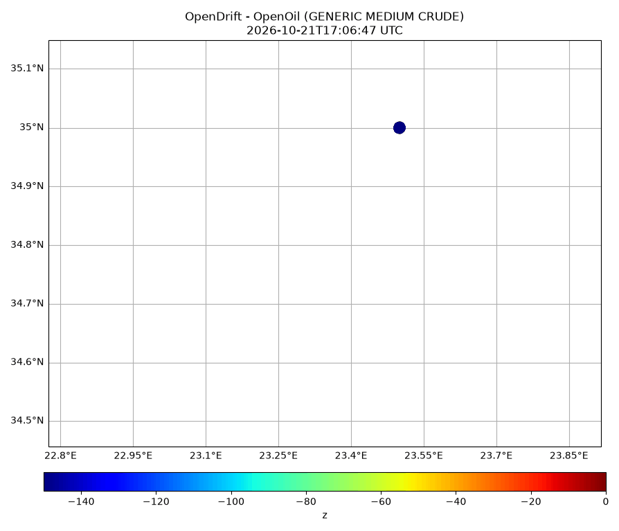
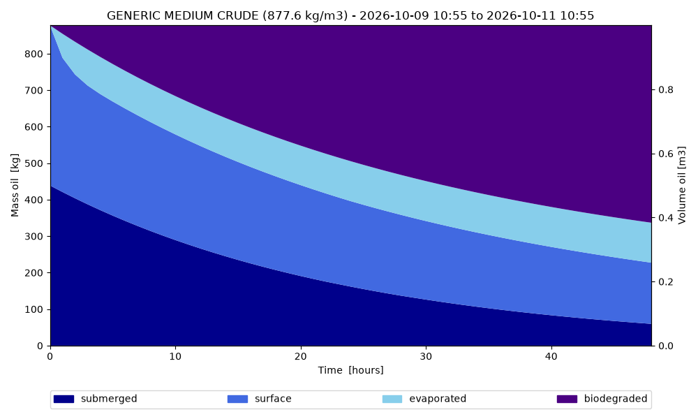
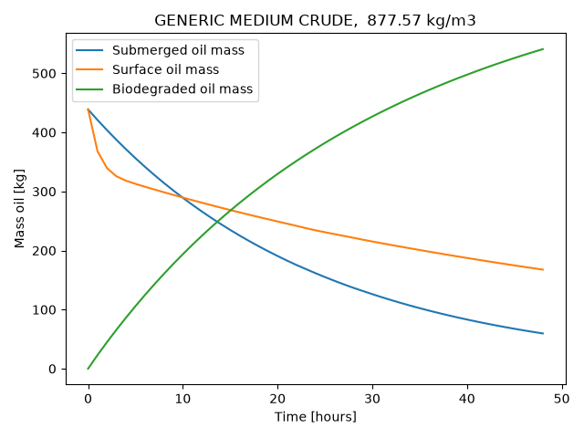
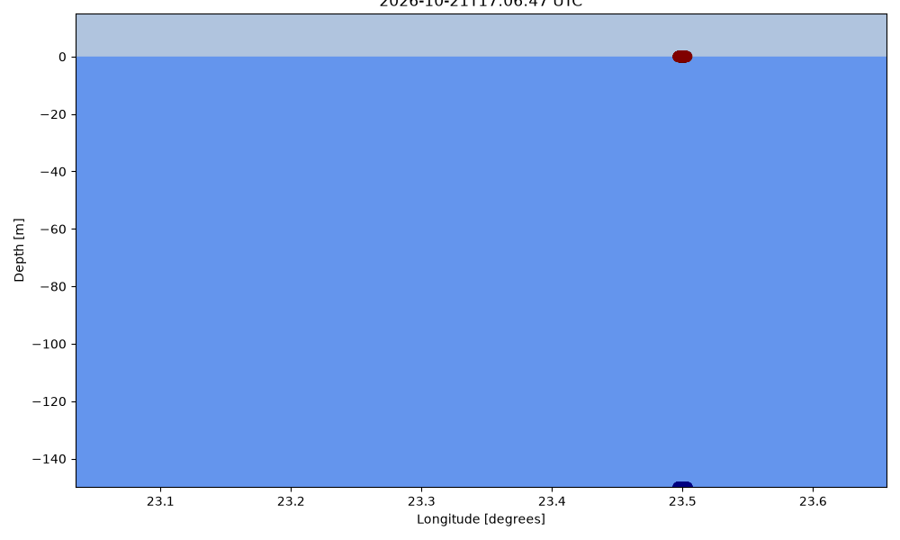

Note
Go to the end to download the full example code.
Biodegradation of oil at depth
WARNING: from next version (1.14.10), loglevel of 0 will give no logging, please change to 10 for DEBUG
10:55:25 DEBUG opendrift.config:168: Adding 17 config items from __init__
10:55:25 DEBUG opendrift.config:178: Overwriting config item readers:max_number_of_fails
10:55:25 DEBUG opendrift.config:168: Adding 6 config items from __init__
10:55:25 INFO opendrift:569: OpenDriftSimulation initialised (version 1.14.11 / v1.14.12-52-g71f4a5f)
10:55:25 DEBUG opendrift.config:168: Adding 19 config items from oceandrift
10:55:25 DEBUG opendrift.config:178: Overwriting config item seed:z
10:55:25 DEBUG opendrift.config:168: Adding 15 config items from openoil
Current from HYCOM and wind from NCEP GFS
o.add_readers_from_list([
'https://tds.hycom.org/thredds/dodsC/FMRC_ESPC-D-V02_uv3z/FMRC_ESPC-D-V02_uv3z_best.ncd',
'https://thredds.ucar.edu/thredds/dodsC/grib/NCEP/GFS/Global_0p25deg/Best'])
o.set_config('environment:constant:ocean_mixed_layer_thickness', 20)
o.set_config('environment:constant:horizontal_diffusivity', 20)
o.set_config('drift', {'current_uncertainty': 0, 'wind_uncertainty': 0})
10:55:25 DEBUG opendrift.readers.reader_lazy:37: Delaying initialisation of LazyReader: https://tds.hycom.org/thredds/dodsC/FMRC_ESPC-D-V02_uv3z/FMRC_ESPC-D-V02_uv3z_best.ncd
10:55:25 DEBUG opendrift.readers.reader_lazy:37: Delaying initialisation of LazyReader: https://thredds.ucar.edu/thredds/dodsC/grib/NCEP/GFS/Global_0p25deg/Best
10:55:25 DEBUG opendrift.models.basemodel.environment:312: Added reader LazyReader: https://tds.hycom.org/thredds/dodsC/FMRC_ESPC-D-V02_uv3z/FMRC_ESPC-D-V02_uv3z_best.ncd
10:55:25 DEBUG opendrift.models.basemodel.environment:312: Added reader LazyReader: https://thredds.ucar.edu/thredds/dodsC/grib/NCEP/GFS/Global_0p25deg/Best
10:55:25 INFO opendrift.config:68: set_config('drift:current_uncertainty', 0)
10:55:25 INFO opendrift.config:68: set_config('drift:wind_uncertainty', 0)
Configuration
o.set_config('drift:vertical_mixing', True)
o.set_config('drift:vertical_mixing', True)
o.set_config('processes:biodegradation', True)
o.set_config('processes:dispersion', False)
o.set_config('biodegradation:method', 'half_time')
Fast decay for droplets, and slow decay for slick
kwargs = {'biodegradation_half_time_slick': 3, # days
'biodegradation_half_time_droplet': 1, # days
'oil_type': 'GENERIC MEDIUM CRUDE', 'm3_per_hour': .5, 'diameter': 8e-5} # small droplets
Seed oil at surface and at 150m depth
time = datetime.today() - timedelta(days=5)
lon = 23.5
lat = 35.0
o.seed_elements(lon=lon, lat=lat, z=0, radius=100, number=3000, time=time, **kwargs)
o.seed_elements(lon=lon, lat=lat, z=-150, radius=100, number=3000, time=time, **kwargs)
10:55:25 INFO opendrift.models.openoil.openoil:1641: Droplet diameter is provided, and will be kept constant during simulation
10:55:25 INFO opendrift.models.openoil.adios.dirjs:86: Querying ADIOS database for oil: GENERIC MEDIUM CRUDE
10:55:25 DEBUG opendrift.models.openoil.adios.oil:76: Parsing Oil: AD04001 / GENERIC MEDIUM CRUDE
10:55:25 INFO opendrift.models.openoil.openoil:1731: Using density 877.5726099999999 and viscosity 4.5431401718650186e-05 of oiltype GENERIC MEDIUM CRUDE
10:55:25 DEBUG opendrift.readers.basereader:185: Variable mapping: ['sea_floor_depth_below_sea_level'] -> ['land_binary_mask'] is not activated
10:55:25 DEBUG opendrift.models.basemodel.environment:312: Added reader constant_reader
10:55:25 INFO opendrift.models.basemodel.environment:203: Adding a global landmask from GSHHG
10:55:25 DEBUG opendrift.readers.basereader.variables:546: Skipping calculation of vector component, since y is not north
10:55:25 DEBUG opendrift.readers.basereader.variables:546: Skipping calculation of vector component, since y is not north
10:55:25 DEBUG opendrift.readers.basereader.variables:546: Skipping calculation of vector component, since y is not north
10:55:25 DEBUG opendrift.readers.basereader.variables:546: Skipping calculation of vector component, since y is not north
10:55:25 DEBUG opendrift.readers.basereader:185: Variable mapping: ['sea_floor_depth_below_sea_level'] -> ['land_binary_mask'] is not activated
10:55:30 DEBUG opendrift.models.basemodel.environment:312: Added reader global_landmask
10:55:30 INFO opendrift.models.basemodel.environment:227: Fallback values will be used for the following variables which have no readers:
10:55:30 INFO opendrift.models.basemodel.environment:230: sea_surface_height: 0.000000
10:55:30 INFO opendrift.models.basemodel.environment:230: upward_sea_water_velocity: 0.000000
10:55:30 INFO opendrift.models.basemodel.environment:230: sea_surface_wave_significant_height: 0.000000
10:55:30 INFO opendrift.models.basemodel.environment:230: sea_surface_wave_stokes_drift_x_velocity: 0.000000
10:55:30 INFO opendrift.models.basemodel.environment:230: sea_surface_wave_stokes_drift_y_velocity: 0.000000
10:55:30 INFO opendrift.models.basemodel.environment:230: sea_surface_wave_period_at_variance_spectral_density_maximum: 0.000000
10:55:30 INFO opendrift.models.basemodel.environment:230: sea_surface_wave_mean_period_from_variance_spectral_density_second_frequency_moment: 0.000000
10:55:30 INFO opendrift.models.basemodel.environment:230: sea_ice_area_fraction: 0.000000
10:55:30 INFO opendrift.models.basemodel.environment:230: sea_ice_x_velocity: 0.000000
10:55:30 INFO opendrift.models.basemodel.environment:230: sea_ice_y_velocity: 0.000000
10:55:30 INFO opendrift.models.basemodel.environment:230: sea_water_temperature: 10.000000
10:55:30 INFO opendrift.models.basemodel.environment:230: sea_water_salinity: 34.000000
10:55:30 INFO opendrift.models.basemodel.environment:230: sea_floor_depth_below_sea_level: 10000.000000
10:55:30 INFO opendrift.models.basemodel.environment:230: ocean_vertical_diffusivity: 0.020000
10:55:30 DEBUG opendrift:165: Changed mode from Mode.Config to Mode.Ready
10:55:30 INFO opendrift.models.openoil.openoil:1641: Droplet diameter is provided, and will be kept constant during simulation
10:55:30 INFO opendrift.models.openoil.adios.dirjs:86: Querying ADIOS database for oil: GENERIC MEDIUM CRUDE
10:55:30 DEBUG opendrift.models.openoil.adios.oil:76: Parsing Oil: AD04001 / GENERIC MEDIUM CRUDE
10:55:30 INFO opendrift.models.openoil.openoil:1731: Using density 877.5726099999999 and viscosity 4.5431401718650186e-05 of oiltype GENERIC MEDIUM CRUDE
Running model
o.run(duration=timedelta(days=2), time_step=3600)
10:55:30 DEBUG opendrift:165: Changed mode from Mode.Ready to Mode.Run
10:55:30 DEBUG opendrift:1882:
------------------------------------------------------
Software and hardware:
OpenDrift version 1.14.11
Platform: Linux, 7.0.0-1013-aws
4.0 GB memory
36 processors (x86_64)
NumPy version 2.5.3
SciPy version 1.18.1
Matplotlib version 3.11.2
NetCDF4 version 1.7.4
Xarray version 2026.7.0
ADIOS (adios_db) version 1.2.5
Copernicusmarine version 2.4.1
Python version 3.14.7 | packaged by conda-forge | (main, Sep 2 2026, 21:08:32) [GCC 15.3.0]
------------------------------------------------------
10:55:30 DEBUG opendrift:1895: No output file is specified, neglecting export_buffer_length
10:55:30 INFO opendrift:1910: Skipping environment variable upward_sea_water_velocity because of condition ['drift:vertical_advection', 'is', False]
10:55:30 INFO opendrift:1921: Storing previous values of element property lon because of condition (('general:coastline_action', 'in', ['stranding', 'previous']), 'or', ('general:seafloor_action', 'in', ['previous']))
10:55:30 INFO opendrift:1921: Storing previous values of element property lat because of condition (('general:coastline_action', 'in', ['stranding', 'previous']), 'or', ('general:seafloor_action', 'in', ['previous']))
10:55:30 DEBUG opendrift:2046: Finalizing environment and preparing readers for simulation coverage ([21.02599253 32.97284402 25.97419057 37.02720938]) and time (2026-10-09 10:55:25.163698 to 2026-10-11 10:55:25.163698)
10:55:30 DEBUG opendrift.models.basemodel.environment:166: Preparing LazyReader: https://tds.hycom.org/thredds/dodsC/FMRC_ESPC-D-V02_uv3z/FMRC_ESPC-D-V02_uv3z_best.ncd for extent [21.02599253 32.97284402 25.97419057 37.02720938]
10:55:30 DEBUG opendrift.models.basemodel.environment:166: Preparing LazyReader: https://thredds.ucar.edu/thredds/dodsC/grib/NCEP/GFS/Global_0p25deg/Best for extent [21.02599253 32.97284402 25.97419057 37.02720938]
10:55:30 DEBUG opendrift.models.basemodel.environment:166: Preparing constant_reader for extent [21.02599253 32.97284402 25.97419057 37.02720938]
10:55:30 DEBUG opendrift.readers.basereader.variables:559: Nothing more to prepare for constant_reader
10:55:30 DEBUG opendrift.models.basemodel.environment:166: Preparing global_landmask for extent [21.02599253 32.97284402 25.97419057 37.02720938]
10:55:30 DEBUG opendrift.readers.basereader.variables:559: Nothing more to prepare for global_landmask
10:55:31 DEBUG opendrift:2143: Initial self.result, size Frozen({'trajectory': 6000, 'time': 49})
10:55:31 INFO opendrift:958: Using existing reader for land_binary_mask to move elements to ocean
10:55:31 DEBUG opendrift.models.basemodel.environment:598: ----------------------------------------
10:55:31 DEBUG opendrift.models.basemodel.environment:599: Variable group ['land_binary_mask']
10:55:31 DEBUG opendrift.models.basemodel.environment:600: ----------------------------------------
10:55:31 DEBUG opendrift.models.basemodel.environment:604: Calling reader global_landmask
10:55:31 DEBUG opendrift.models.basemodel.environment:605: ----------------------------------------
10:55:31 DEBUG opendrift.models.basemodel.environment:625: Data needed for 6000 elements
10:55:31 DEBUG opendrift.readers.basereader.variables:765: Fetching variables from global_landmask covering 6000 elements
10:55:31 DEBUG opendrift.readers.basereader.continuous:37: Fetched env-before
10:55:31 DEBUG opendrift.readers.basereader.variables:643: Checking land_binary_mask for invalid values
10:55:31 DEBUG opendrift.readers.basereader.variables:801: Reader projection is latlon - rotation of vectors is not needed.
10:55:31 DEBUG opendrift.models.basemodel.environment:761: Obtained data for all elements.
10:55:31 DEBUG opendrift.models.basemodel.environment:774: ---------------------------------------
10:55:31 DEBUG opendrift.models.basemodel.environment:775: Finished processing all variable groups
10:55:31 DEBUG opendrift.models.basemodel.environment:897: ------------ SUMMARY -------------
10:55:31 DEBUG opendrift.models.basemodel.environment:899: land_binary_mask: 0 (min) 0 (max)
10:55:31 DEBUG opendrift.models.basemodel.environment:901: ---------------------------------
10:55:31 INFO opendrift:989: All points are in ocean
10:55:31 INFO opendrift.models.openoil.openoil:697: Oil-water surface tension is 0.031369 Nm
10:55:31 INFO opendrift.models.openoil.openoil:710: Max water fraction not available for GENERIC MEDIUM CRUDE, using default
10:55:31 DEBUG opendrift:915: to be seeded: 6000, already seeded 0
10:55:31 DEBUG opendrift:937: Released 6000 new elements.
10:55:31 DEBUG opendrift:2236: ======================================================================
10:55:31 INFO opendrift:2237: 2026-10-09 10:55:25.163698 - step 1 of 48 - 6000 active elements (0 deactivated)
10:55:31 DEBUG opendrift:2243: 0 elements scheduled.
10:55:31 DEBUG opendrift:2245: ======================================================================
10:55:31 DEBUG opendrift:2256: 34.99662780761719 <- latitude -> 35.00342559814453
10:55:31 DEBUG opendrift:2256: 23.4965763092041 <- longitude -> 23.50360679626465
10:55:31 DEBUG opendrift:2256: -150.0 <- z -> 0.0
10:55:31 DEBUG opendrift:2257: ---------------------------------
10:55:31 DEBUG opendrift.models.basemodel.environment:573: Variables not covered by any reader: ['y_wind', 'x_sea_water_velocity', 'sea_water_temperature', 'x_wind', 'sea_surface_height', 'sea_floor_depth_below_sea_level', 'y_sea_water_velocity', 'sea_water_salinity']
10:55:31 DEBUG opendrift.readers.reader_lazy:56: Initialising: LazyReader: https://tds.hycom.org/thredds/dodsC/FMRC_ESPC-D-V02_uv3z/FMRC_ESPC-D-V02_uv3z_best.ncd
10:55:31 DEBUG opendrift.readers:269: Testing reader <module 'opendrift.readers.reader_netCDF_CF_generic' from '/root/project/opendrift/readers/reader_netCDF_CF_generic.py'>
10:55:31 INFO opendrift.readers:67: Opening file with xr.open_dataset
10:55:31 DEBUG findlibs:301: about to search for libeccodes.so/eccodeslib in <function _find_in_package at 0x76ec87038eb0>
10:55:31 DEBUG findlibs:301: about to search for libeccodes.so/eccodeslib in <function _find_in_python at 0x76ec87039010>
10:55:31 DEBUG findlibs:303: found libeccodes.so/eccodeslib in <function _find_in_python at 0x76ec87039010>
10:55:31 DEBUG gribapi.bindings:98: eccodes lib search: findlibs returned /opt/conda/envs/opendrift/lib/libeccodes.so
10:59:38 WARNING opendrift.readers:75: Removing variables that cannot be CF decoded: ['tau']
10:59:38 DEBUG opendrift.readers.reader_netCDF_CF_generic:131: Finding coordinate variables.
10:59:38 INFO opendrift.readers.reader_netCDF_CF_generic:307: Grid coordinates are detected, but proj4 string not given: assuming latlong
10:59:38 INFO opendrift.readers.reader_netCDF_CF_generic:340: Detected dimensions: {'z': 'depth', 'y': 'lat', 'x': 'lon', 'time': 'time'}
10:59:38 DEBUG opendrift.readers.basereader.variables:618: Setting buffer size 9 for reader https://tds.hycom.org/thredds/dodsC/FMRC_ESPC-D-V02_uv3z/FMRC_ESPC-D-V02_uv3z_best.ncd, assuming a maximum average speed of 5 m/s and time span of 3:00:00
10:59:38 INFO opendrift.readers.basereader:175: Variable y_sea_water_velocity will be rotated from northward_sea_water_velocity
10:59:38 INFO opendrift.readers.basereader:175: Variable x_sea_water_velocity will be rotated from eastward_sea_water_velocity
10:59:38 DEBUG opendrift.readers.basereader:185: Variable mapping: ['sea_floor_depth_below_sea_level'] -> ['land_binary_mask'] is not activated
10:59:38 DEBUG opendrift.readers.basereader.variables:573: Adding variable mapping: ['x_sea_water_velocity', 'y_sea_water_velocity'] -> sea_water_speed
10:59:38 DEBUG opendrift.readers.basereader.structured:151: Clearing cache for reader https://tds.hycom.org/thredds/dodsC/FMRC_ESPC-D-V02_uv3z/FMRC_ESPC-D-V02_uv3z_best.ncd before starting new simulation
10:59:38 DEBUG opendrift.readers.basereader.variables:618: Setting buffer size 4 for reader https://tds.hycom.org/thredds/dodsC/FMRC_ESPC-D-V02_uv3z/FMRC_ESPC-D-V02_uv3z_best.ncd, assuming a maximum average speed of 1.3 m/s and time span of 3:00:00
10:59:38 DEBUG opendrift.readers.basereader.variables:559: Nothing more to prepare for https://tds.hycom.org/thredds/dodsC/FMRC_ESPC-D-V02_uv3z/FMRC_ESPC-D-V02_uv3z_best.ncd
10:59:38 DEBUG opendrift.readers.reader_lazy:71: Reader initialised: https://tds.hycom.org/thredds/dodsC/FMRC_ESPC-D-V02_uv3z/FMRC_ESPC-D-V02_uv3z_best.ncd
10:59:38 DEBUG opendrift.readers.basereader.variables:618: Setting buffer size 4 for reader https://tds.hycom.org/thredds/dodsC/FMRC_ESPC-D-V02_uv3z/FMRC_ESPC-D-V02_uv3z_best.ncd, assuming a maximum average speed of 1.3 m/s and time span of 3:00:00
10:59:38 DEBUG opendrift.readers.reader_lazy:56: Initialising: LazyReader: https://thredds.ucar.edu/thredds/dodsC/grib/NCEP/GFS/Global_0p25deg/Best
10:59:38 DEBUG opendrift.readers:269: Testing reader <module 'opendrift.readers.reader_netCDF_CF_generic' from '/root/project/opendrift/readers/reader_netCDF_CF_generic.py'>
10:59:38 INFO opendrift.readers:67: Opening file with xr.open_dataset
10:59:39 DEBUG opendrift.readers:128: Selecting GRIB variable u-component_of_wind_height_above_ground at 10m height and adding standard_name eastward_wind
10:59:39 DEBUG opendrift.readers:128: Selecting GRIB variable v-component_of_wind_height_above_ground at 10m height and adding standard_name northward_wind
10:59:39 DEBUG opendrift.readers.reader_netCDF_CF_generic:131: Finding coordinate variables.
10:59:39 DEBUG opendrift.readers.reader_netCDF_CF_generic:146: Parsing CF grid mapping dictionary: {'grid_mapping_name': 'latitude_longitude', 'earth_radius': np.float64(6371229.0), '_CoordinateTransformType': 'Projection', '_CoordinateAxisTypes': 'Lat Lon'}
10:59:39 DEBUG pyproj:40: PROJ_ERROR: proj_create: several objects matching this name: Krovak (Greenwich), Equal Earth Greenwich, Laborde Grid (Greenwich), Modified Krovak (Greenwich), Krovak East North (Greenwich), Modified Krovak East North (Greenwich), ...
10:59:39 DEBUG opendrift.readers.reader_netCDF_CF_generic:270: Lon and lat are 1D arrays - using as projection coordinates
10:59:39 INFO opendrift.readers.reader_netCDF_CF_generic:340: Detected dimensions: {'time': ['time', 'time1', 'time2', 'time3'], 'x': 'lon', 'y': 'lat'}
10:59:39 DEBUG opendrift.readers.reader_netCDF_CF_generic:376: Skipped variables without standard_name: ['time2_bounds', 'time3_bounds', 'pressure_difference_layer_bounds', 'depth_below_surface_layer_bounds', 'height_above_ground_layer_bounds', 'height_above_ground_layer1_bounds', 'pressure_difference_layer1_bounds', 'pressure_difference_layer2_bounds', 'sigma_layer_bounds', 'Total_ozone_entire_atmosphere_single_layer', 'Ozone_Mixing_Ratio_isobaric', 'Total_cloud_cover_entire_atmosphere_Mixed_intervals_Average', 'Low_cloud_cover_low_cloud_Mixed_intervals_Average', 'Temperature_low_cloud_top_Mixed_intervals_Average', 'Temperature_high_cloud_top_Mixed_intervals_Average', 'Temperature_middle_cloud_top_Mixed_intervals_Average', 'Surface_Lifted_Index_surface', 'Pressure_convective_cloud_bottom', 'Pressure_convective_cloud_top', 'Vertical_Speed_Shear_potential_vorticity_surface', 'Vertical_Speed_Shear_tropopause', 'Ventilation_Rate_planetary_boundary', 'MSLP_Eta_model_reduction_msl', 'Pressure_of_level_from_which_parcel_was_lifted_pressure_difference_layer', 'Liquid_Volumetric_Soil_Moisture_non_Frozen_depth_below_surface_layer', 'Wind_speed_gust_surface', 'Precipitation_rate_surface_Mixed_intervals_Average', 'Categorical_Rain_surface', 'Potential_Evaporation_Rate_surface', 'Volumetric_Soil_Moisture_Content_depth_below_surface_layer', 'Albedo_surface_Mixed_intervals_Average', 'Latent_heat_net_flux_surface_Mixed_intervals_Average', 'Sensible_heat_net_flux_surface_Mixed_intervals_Average', 'Land_cover_0__sea_1__land_surface', 'Ice_cover_surface', 'Momentum_flux_u-component_surface_Mixed_intervals_Average', 'Pressure_surface', 'Soil_type_surface', 'Specific_humidity_pressure_difference_layer', 'Temperature_pressure_difference_layer', 'Temperature_surface', 'Visibility_surface', 'Ice_thickness_surface', 'Relative_humidity_sigma_layer', 'Relative_humidity_pressure_difference_layer', 'Surface_roughness_surface', 'Haines_index_surface', 'Soil_temperature_depth_below_surface_layer', 'u-component_of_wind_pressure_difference_layer', 'Momentum_flux_v-component_surface_Mixed_intervals_Average', 'Categorical_Rain_surface_Mixed_intervals_Average', 'v-component_of_wind_pressure_difference_layer', 'Vegetation_surface', 'Geopotential_height_surface', 'Convective_available_potential_energy_pressure_difference_layer', 'Convective_available_potential_energy_surface', 'Convective_inhibition_pressure_difference_layer', 'Convective_inhibition_surface', 'Precipitation_rate_surface', 'Ice_temperature_surface', 'Storm_relative_helicity_height_above_ground_layer', 'Snow_depth_surface', 'Water_equivalent_of_accumulated_snow_depth_surface', 'Ground_Heat_Flux_surface_Mixed_intervals_Average', 'Total_cloud_cover_convective_cloud', 'Sunshine_Duration_surface', 'Best_4_layer_Lifted_Index_surface', 'Water_runoff_surface_Mixed_intervals_Accumulation', 'Relative_humidity_highest_tropospheric_freezing', 'Relative_humidity_entire_atmosphere_single_layer', 'Categorical_Freezing_Rain_surface', 'Wilting_Point_surface', 'Total_precipitation_surface_Mixed_intervals_Accumulation', 'Convective_precipitation_surface_Mixed_intervals_Accumulation', 'Pressure_high_cloud_bottom_Mixed_intervals_Average', 'Pressure_high_cloud_top_Mixed_intervals_Average', 'Pressure_low_cloud_bottom_Mixed_intervals_Average', 'Pressure_middle_cloud_top_Mixed_intervals_Average', 'Pressure_middle_cloud_bottom_Mixed_intervals_Average', 'Pressure_low_cloud_top_Mixed_intervals_Average', 'Categorical_Freezing_Rain_surface_Mixed_intervals_Average', 'Convective_precipitation_rate_surface', 'Per_cent_frozen_precipitation_surface', 'Specific_humidity_isobaric', 'Temperature_isobaric', 'Relative_humidity_isobaric', 'Relative_humidity_zeroDegC_isotherm', 'Total_cloud_cover_isobaric', 'u-component_of_wind_isobaric', 'Total_cloud_cover_boundary_layer_cloud_Mixed_intervals_Average', 'Downward_Shortwave_Radiation_Flux_surface_Mixed_intervals_Average', 'Cloud_Work_Function_entire_atmosphere_single_layer_Mixed_intervals_Average', 'v-component_of_wind_isobaric', 'Maximum_temperature_height_above_ground_Mixed_intervals_Maximum', 'Geopotential_height_isobaric', 'Geopotential_height_zeroDegC_isotherm', 'U-Component_Storm_Motion_height_above_ground_layer', 'u-component_of_wind_planetary_boundary', 'Categorical_Ice_Pellets_surface', 'Vertical_velocity_pressure_isobaric', 'Vertical_velocity_geometric_isobaric', 'Absolute_vorticity_isobaric', 'Pressure_reduced_to_MSL_msl', 'Categorical_Ice_Pellets_surface_Mixed_intervals_Average', 'Meridional_Flux_of_Gravity_Wave_Stress_surface_Mixed_intervals_Average', 'Downward_Longwave_Radiation_Flux_surface_Mixed_intervals_Average', 'Cloud_mixing_ratio_isobaric', 'Ice_water_mixing_ratio_isobaric', 'Rain_mixing_ratio_isobaric', 'Snow_mixing_ratio_isobaric', 'Graupel_snow_pellets_isobaric', 'Pressure_maximum_wind', 'Temperature_altitude_above_msl', 'Temperature_maximum_wind', 'u-component_of_wind_altitude_above_msl', 'u-component_of_wind_maximum_wind', 'ICAO_Standard_Atmosphere_Reference_Height_maximum_wind', 'Upward_Shortwave_Radiation_Flux_atmosphere_top_Mixed_intervals_Average', 'Upward_Shortwave_Radiation_Flux_surface_Mixed_intervals_Average', 'v-component_of_wind_maximum_wind', 'v-component_of_wind_altitude_above_msl', 'Low_cloud_cover_low_cloud', 'Apparent_temperature_height_above_ground', 'Geopotential_height_maximum_wind', 'Minimum_temperature_height_above_ground_Mixed_intervals_Minimum', 'Ice_growth_rate_altitude_above_msl', 'V-Component_Storm_Motion_height_above_ground_layer', 'Field_Capacity_surface', 'v-component_of_wind_planetary_boundary', 'Precipitable_water_entire_atmosphere_single_layer', 'Categorical_Snow_surface', 'Reflectivity_hybrid', 'Reflectivity_height_above_ground', 'Pressure_tropopause', 'Pressure_height_above_ground', 'Specific_humidity_height_above_ground', 'Temperature_height_above_ground', 'Temperature_tropopause', 'Relative_humidity_height_above_ground', 'u-component_of_wind_tropopause', 'ICAO_Standard_Atmosphere_Reference_Height_tropopause', 'Categorical_Snow_surface_Mixed_intervals_Average', 'Zonal_Flux_of_Gravity_Wave_Stress_surface_Mixed_intervals_Average', 'Upward_Longwave_Radiation_Flux_surface_Mixed_intervals_Average', 'Upward_Longwave_Radiation_Flux_atmosphere_top_Mixed_intervals_Average', 'v-component_of_wind_tropopause', 'Geopotential_height_tropopause', 'Dewpoint_temperature_height_above_ground', 'Temperature_sigma', 'Relative_humidity_sigma', 'Potential_temperature_sigma', 'u-component_of_wind_sigma', 'v-component_of_wind_sigma', 'Medium_cloud_cover_middle_cloud', 'Cloud_mixing_ratio_hybrid', 'Planetary_Boundary_Layer_Height_surface', 'Ice_water_mixing_ratio_hybrid', 'Plant_Canopy_Surface_Water_surface', 'Rain_mixing_ratio_hybrid', 'Vertical_velocity_pressure_sigma', 'Snow_mixing_ratio_hybrid', 'Composite_reflectivity_entire_atmosphere', 'Convective_Precipitation_Rate_surface_Mixed_intervals_Average', 'Total_cloud_cover_entire_atmosphere', 'High_cloud_cover_high_cloud', 'Geopotential_height_cloud_ceiling', 'Geopotential_height_highest_tropospheric_freezing', 'Frictional_Velocity_surface', 'Graupel_snow_pellets_hybrid', 'High_cloud_cover_high_cloud_Mixed_intervals_Average', 'Cloud_water_entire_atmosphere_single_layer', 'Pressure_potential_vorticity_surface', 'Temperature_potential_vorticity_surface', 'u-component_of_wind_potential_vorticity_surface', 'v-component_of_wind_potential_vorticity_surface', 'Geopotential_height_potential_vorticity_surface', 'Medium_cloud_cover_middle_cloud_Mixed_intervals_Average']
10:59:39 DEBUG opendrift.readers.reader_netCDF_CF_generic:396: Several time dimensions detected: ['time', 'time1', 'time2', 'time3']: Using single time dimension found in detected variables: ['time']
10:59:39 DEBUG opendrift.readers.basereader.variables:546: Skipping calculation of vector component, since y is not north
10:59:39 DEBUG opendrift.readers.basereader.variables:546: Skipping calculation of vector component, since y is not north
10:59:39 DEBUG opendrift.readers.basereader.variables:546: Skipping calculation of vector component, since y is not north
10:59:39 DEBUG opendrift.readers.basereader.variables:546: Skipping calculation of vector component, since y is not north
10:59:39 DEBUG opendrift.readers.basereader.variables:618: Setting buffer size 4 for reader https://thredds.ucar.edu/thredds/dodsC/grib/NCEP/GFS/Global_0p25deg/Best, assuming a maximum average speed of 5 m/s and time span of 3:00:00
10:59:39 INFO opendrift.readers.basereader:175: Variable x_wind will be rotated from eastward_wind
10:59:39 INFO opendrift.readers.basereader:175: Variable y_wind will be rotated from northward_wind
10:59:39 DEBUG opendrift.readers.basereader:185: Variable mapping: ['sea_floor_depth_below_sea_level'] -> ['land_binary_mask'] is not activated
10:59:39 DEBUG opendrift.readers.basereader.variables:573: Adding variable mapping: ['x_wind', 'y_wind'] -> wind_speed
10:59:39 DEBUG opendrift.readers.basereader.structured:151: Clearing cache for reader https://thredds.ucar.edu/thredds/dodsC/grib/NCEP/GFS/Global_0p25deg/Best before starting new simulation
10:59:39 DEBUG opendrift.readers.basereader.variables:618: Setting buffer size 3 for reader https://thredds.ucar.edu/thredds/dodsC/grib/NCEP/GFS/Global_0p25deg/Best, assuming a maximum average speed of 1.3 m/s and time span of 3:00:00
10:59:39 DEBUG opendrift.readers.basereader.variables:559: Nothing more to prepare for https://thredds.ucar.edu/thredds/dodsC/grib/NCEP/GFS/Global_0p25deg/Best
10:59:39 DEBUG opendrift.readers.reader_lazy:71: Reader initialised: https://thredds.ucar.edu/thredds/dodsC/grib/NCEP/GFS/Global_0p25deg/Best
10:59:39 DEBUG opendrift.readers.basereader.variables:618: Setting buffer size 3 for reader https://thredds.ucar.edu/thredds/dodsC/grib/NCEP/GFS/Global_0p25deg/Best, assuming a maximum average speed of 1.3 m/s and time span of 3:00:00
10:59:39 DEBUG opendrift.models.basemodel.environment:598: ----------------------------------------
10:59:39 DEBUG opendrift.models.basemodel.environment:599: Variable group ['horizontal_diffusivity', 'ocean_mixed_layer_thickness']
10:59:39 DEBUG opendrift.models.basemodel.environment:600: ----------------------------------------
10:59:39 DEBUG opendrift.models.basemodel.environment:604: Calling reader constant_reader
10:59:39 DEBUG opendrift.models.basemodel.environment:605: ----------------------------------------
10:59:39 DEBUG opendrift.models.basemodel.environment:625: Data needed for 6000 elements
10:59:39 DEBUG opendrift.readers.basereader.variables:765: Fetching variables from constant_reader covering 6000 elements
10:59:39 DEBUG opendrift.readers.basereader.continuous:37: Fetched env-before
10:59:39 DEBUG opendrift.readers.basereader.variables:801: Reader projection is latlon - rotation of vectors is not needed.
10:59:39 DEBUG opendrift.models.basemodel.environment:761: Obtained data for all elements.
10:59:39 DEBUG opendrift.models.basemodel.environment:598: ----------------------------------------
10:59:39 DEBUG opendrift.models.basemodel.environment:599: Variable group ['land_binary_mask']
10:59:39 DEBUG opendrift.models.basemodel.environment:600: ----------------------------------------
10:59:39 DEBUG opendrift.models.basemodel.environment:604: Calling reader global_landmask
10:59:39 DEBUG opendrift.models.basemodel.environment:605: ----------------------------------------
10:59:39 DEBUG opendrift.models.basemodel.environment:625: Data needed for 6000 elements
10:59:39 DEBUG opendrift.readers.basereader.variables:765: Fetching variables from global_landmask covering 6000 elements
10:59:39 DEBUG opendrift.readers.basereader.continuous:37: Fetched env-before
10:59:39 DEBUG opendrift.readers.basereader.variables:643: Checking land_binary_mask for invalid values
10:59:39 DEBUG opendrift.readers.basereader.variables:801: Reader projection is latlon - rotation of vectors is not needed.
10:59:39 DEBUG opendrift.models.basemodel.environment:761: Obtained data for all elements.
10:59:39 DEBUG opendrift.models.basemodel.environment:598: ----------------------------------------
10:59:39 DEBUG opendrift.models.basemodel.environment:599: Variable group ['y_sea_water_velocity', 'x_sea_water_velocity']
10:59:39 DEBUG opendrift.models.basemodel.environment:600: ----------------------------------------
10:59:39 DEBUG opendrift.models.basemodel.environment:604: Calling reader https://tds.hycom.org/thredds/dodsC/FMRC_ESPC-D-V02_uv3z/FMRC_ESPC-D-V02_uv3z_best.ncd
10:59:39 DEBUG opendrift.models.basemodel.environment:605: ----------------------------------------
10:59:39 DEBUG opendrift.models.basemodel.environment:625: Data needed for 6000 elements
10:59:39 DEBUG opendrift.readers.basereader.variables:765: Fetching variables from https://tds.hycom.org/thredds/dodsC/FMRC_ESPC-D-V02_uv3z/FMRC_ESPC-D-V02_uv3z_best.ncd covering 6000 elements
10:59:39 DEBUG opendrift.readers.basereader.structured:211: Shifting coordinates to 0-360
10:59:39 DEBUG opendrift.readers.basereader.structured:220: Reader time:
2026-10-09 09:00:00 (before)
2026-10-09 12:00:00 (after)
10:59:39 DEBUG opendrift.readers.reader_netCDF_CF_generic:475: Using northward_sea_water_velocity to retrieve y_sea_water_velocity
11:00:02 DEBUG opendrift.readers.reader_netCDF_CF_generic:475: Using eastward_sea_water_velocity to retrieve x_sea_water_velocity
11:00:42 DEBUG opendrift.readers.reader_netCDF_CF_generic:597: North is up, no rotation necessary
11:00:42 DEBUG opendrift.readers.basereader.variables:643: Checking y_sea_water_velocity for invalid values
11:00:42 DEBUG opendrift.readers.basereader.variables:643: Checking x_sea_water_velocity for invalid values
11:00:42 DEBUG opendrift.readers.basereader.structured:290: Fetched env-block (size 9x9x23) for time before (2026-10-09 09:00:00)
11:00:42 DEBUG opendrift.readers.reader_netCDF_CF_generic:475: Using northward_sea_water_velocity to retrieve y_sea_water_velocity
11:01:01 DEBUG opendrift.readers.reader_netCDF_CF_generic:475: Using eastward_sea_water_velocity to retrieve x_sea_water_velocity
11:01:38 DEBUG opendrift.readers.reader_netCDF_CF_generic:597: North is up, no rotation necessary
11:01:38 DEBUG opendrift.readers.basereader.variables:643: Checking y_sea_water_velocity for invalid values
11:01:38 DEBUG opendrift.readers.basereader.variables:643: Checking x_sea_water_velocity for invalid values
11:01:38 DEBUG opendrift.readers.basereader.structured:313: Fetched env-block (size 9x9x23) for time after (2026-10-09 12:00:00)
11:01:38 DEBUG opendrift.readers.basereader.structured:334: Interpolating before (2026-10-09 09:00:00) in space (linearNDFast)
11:01:38 DEBUG opendrift.readers.interpolation.structured:97: Initialising interpolator.
11:01:38 DEBUG opendrift.readers.basereader.structured:340: Interpolating after (2026-10-09 12:00:00) in space (linearNDFast)
11:01:38 DEBUG opendrift.readers.interpolation.structured:97: Initialising interpolator.
11:01:38 DEBUG opendrift.readers.basereader.structured:355: Interpolating before (2026-10-09 09:00:00, weight 0.36) and
after (2026-10-09 12:00:00, weight 0.64) in time
11:01:38 DEBUG opendrift.readers.basereader.variables:801: Reader projection is latlon - rotation of vectors is not needed.
11:01:38 DEBUG opendrift.models.basemodel.environment:761: Obtained data for all elements.
11:01:38 DEBUG opendrift.models.basemodel.environment:598: ----------------------------------------
11:01:38 DEBUG opendrift.models.basemodel.environment:599: Variable group ['x_wind', 'y_wind']
11:01:38 DEBUG opendrift.models.basemodel.environment:600: ----------------------------------------
11:01:38 DEBUG opendrift.models.basemodel.environment:604: Calling reader https://thredds.ucar.edu/thredds/dodsC/grib/NCEP/GFS/Global_0p25deg/Best
11:01:38 DEBUG opendrift.models.basemodel.environment:605: ----------------------------------------
11:01:38 DEBUG opendrift.models.basemodel.environment:625: Data needed for 6000 elements
11:01:38 DEBUG opendrift.readers.basereader.variables:765: Fetching variables from https://thredds.ucar.edu/thredds/dodsC/grib/NCEP/GFS/Global_0p25deg/Best covering 6000 elements
11:01:38 DEBUG opendrift.readers.basereader.structured:211: Shifting coordinates to 0-360
11:01:38 DEBUG opendrift.readers.basereader.structured:220: Reader time:
2026-10-09 09:00:00 (before)
2026-10-09 12:00:00 (after)
11:01:38 DEBUG opendrift.readers.reader_netCDF_CF_generic:475: Using eastward_wind to retrieve x_wind
11:01:38 DEBUG opendrift.readers.reader_netCDF_CF_generic:475: Using northward_wind to retrieve y_wind
11:01:38 DEBUG opendrift.readers.reader_netCDF_CF_generic:597: North is up, no rotation necessary
11:01:38 DEBUG opendrift.readers.basereader.variables:643: Checking x_wind for invalid values
11:01:38 DEBUG opendrift.readers.basereader.variables:643: Checking y_wind for invalid values
11:01:38 DEBUG opendrift.readers.basereader.structured:290: Fetched env-block (size 8x7x1) for time before (2026-10-09 09:00:00)
11:01:38 DEBUG opendrift.readers.reader_netCDF_CF_generic:475: Using eastward_wind to retrieve x_wind
11:01:38 DEBUG opendrift.readers.reader_netCDF_CF_generic:475: Using northward_wind to retrieve y_wind
11:01:39 DEBUG opendrift.readers.reader_netCDF_CF_generic:597: North is up, no rotation necessary
11:01:39 DEBUG opendrift.readers.basereader.variables:643: Checking x_wind for invalid values
11:01:39 DEBUG opendrift.readers.basereader.variables:643: Checking y_wind for invalid values
11:01:39 DEBUG opendrift.readers.basereader.structured:313: Fetched env-block (size 8x7x1) for time after (2026-10-09 12:00:00)
11:01:39 DEBUG opendrift.readers.basereader.structured:334: Interpolating before (2026-10-09 09:00:00) in space (linearNDFast)
11:01:39 DEBUG opendrift.readers.interpolation.structured:97: Initialising interpolator.
11:01:39 DEBUG opendrift.readers.basereader.structured:340: Interpolating after (2026-10-09 12:00:00) in space (linearNDFast)
11:01:39 DEBUG opendrift.readers.interpolation.structured:97: Initialising interpolator.
11:01:39 DEBUG opendrift.readers.basereader.structured:355: Interpolating before (2026-10-09 09:00:00, weight 0.36) and
after (2026-10-09 12:00:00, weight 0.64) in time
11:01:39 DEBUG opendrift.readers.basereader.variables:801: Reader projection is latlon - rotation of vectors is not needed.
11:01:39 DEBUG opendrift.models.basemodel.environment:761: Obtained data for all elements.
11:01:39 DEBUG opendrift.models.basemodel.environment:774: ---------------------------------------
11:01:39 DEBUG opendrift.models.basemodel.environment:775: Finished processing all variable groups
11:01:39 DEBUG opendrift.models.basemodel.environment:795: Creating empty dictionary for profiles not profided by any reader: ['sea_water_temperature', 'sea_water_salinity', 'ocean_vertical_diffusivity']
11:01:39 DEBUG opendrift.models.basemodel.environment:800: Using fallback value 10 for sea_water_temperature for all profiles
11:01:39 DEBUG opendrift.models.basemodel.environment:800: Using fallback value 34 for sea_water_salinity for all profiles
11:01:39 DEBUG opendrift.models.basemodel.environment:800: Using fallback value 0.02 for ocean_vertical_diffusivity for all profiles
11:01:39 DEBUG opendrift.models.basemodel.environment:897: ------------ SUMMARY -------------
11:01:39 DEBUG opendrift.models.basemodel.environment:899: x_sea_water_velocity: -0.164435 (min) -0.0738932 (max)
11:01:39 DEBUG opendrift.models.basemodel.environment:899: y_sea_water_velocity: 0.0410449 (min) 0.109472 (max)
11:01:39 DEBUG opendrift.models.basemodel.environment:899: x_wind: 2.68675 (min) 2.70542 (max)
11:01:39 DEBUG opendrift.models.basemodel.environment:899: y_wind: 0.402806 (min) 0.411508 (max)
11:01:39 DEBUG opendrift.models.basemodel.environment:899: sea_surface_height: 0 (min) 0 (max)
11:01:39 DEBUG opendrift.models.basemodel.environment:899: sea_surface_wave_significant_height: 0 (min) 0 (max)
11:01:39 DEBUG opendrift.models.basemodel.environment:899: sea_surface_wave_stokes_drift_x_velocity: 0 (min) 0 (max)
11:01:39 DEBUG opendrift.models.basemodel.environment:899: sea_surface_wave_stokes_drift_y_velocity: 0 (min) 0 (max)
11:01:39 DEBUG opendrift.models.basemodel.environment:899: sea_surface_wave_period_at_variance_spectral_density_maximum: 0 (min) 0 (max)
11:01:39 DEBUG opendrift.models.basemodel.environment:899: sea_surface_wave_mean_period_from_variance_spectral_density_second_frequency_moment: 0 (min) 0 (max)
11:01:39 DEBUG opendrift.models.basemodel.environment:899: sea_ice_area_fraction: 0 (min) 0 (max)
11:01:39 DEBUG opendrift.models.basemodel.environment:899: sea_ice_x_velocity: 0 (min) 0 (max)
11:01:39 DEBUG opendrift.models.basemodel.environment:899: sea_ice_y_velocity: 0 (min) 0 (max)
11:01:39 DEBUG opendrift.models.basemodel.environment:899: sea_water_temperature: 10 (min) 10 (max)
11:01:39 DEBUG opendrift.models.basemodel.environment:899: sea_water_salinity: 34 (min) 34 (max)
11:01:39 DEBUG opendrift.models.basemodel.environment:899: sea_floor_depth_below_sea_level: 10000 (min) 10000 (max)
11:01:39 DEBUG opendrift.models.basemodel.environment:899: horizontal_diffusivity: 20 (min) 20 (max)
11:01:39 DEBUG opendrift.models.basemodel.environment:899: ocean_vertical_diffusivity: 0.02 (min) 0.02 (max)
11:01:39 DEBUG opendrift.models.basemodel.environment:899: land_binary_mask: 0 (min) 0 (max)
11:01:39 DEBUG opendrift.models.basemodel.environment:899: ocean_mixed_layer_thickness: 20 (min) 20 (max)
11:01:39 DEBUG opendrift.models.basemodel.environment:901: ---------------------------------
11:01:39 DEBUG opendrift.models.physics_methods:902: Calculating Hs from wind, min: 0.181736, mean: 0.182957, max: 0.184046
11:01:39 DEBUG opendrift.models.physics_methods:969: Calculating wave period Tm02 from wind
11:01:39 DEBUG opendrift.models.physics_methods:979: min: 2.322469, mean: 2.330257, max: 2.337184
11:01:39 DEBUG opendrift.models.physics_methods:919: Calculating wave period from wind, min: 2.322469, mean: 2.330257, max: 2.337184
11:01:39 DEBUG opendrift:700: No elements hit coastline.
11:01:39 DEBUG opendrift:1810: No elements to deactivate
11:01:39 DEBUG opendrift:2294: Calling OpenOil.update()
11:01:39 DEBUG opendrift.models.openoil.openoil:721: NOAA oil weathering
11:01:39 DEBUG opendrift.models.openoil.openoil:826: Calculating evaporation - NOAA
11:01:39 DEBUG opendrift.models.openoil.openoil:859: Calculating emulsification - NOAA
11:01:39 DEBUG opendrift.models.openoil.openoil:871: Emulsification not yet started
11:01:39 DEBUG opendrift.models.openoil.openoil:562: Calculating: biodegradation (half_time)
11:01:39 DEBUG opendrift.models.physics_methods:961: Using mean period Tm02 as wave period
11:01:39 DEBUG opendrift.models.physics_methods:979: min: 2.322469, mean: 2.330257, max: 2.337184
11:01:39 DEBUG opendrift.models.openoil.openoil:1130: Generating wave breaking droplet size spectrum
11:01:39 DEBUG opendrift.models.openoil.openoil:1157: Droplet distribution median diameter dV_50: 0.002845, dN_50: 0.000223
11:01:39 DEBUG opendrift.models.oceandrift:442: Using diffusivity from Large1994 since model diffusivities not available
11:01:39 DEBUG opendrift.models.oceandrift:456: Diffusivities are in range 0.0 to 0.0027036552735158095
11:01:39 DEBUG opendrift.models.oceandrift:475: TSprofiles deactivated for vertical mixing
11:01:39 DEBUG opendrift.models.oceandrift:489: Vertical mixing module:environment
11:01:39 DEBUG opendrift.models.oceandrift:492: Turbulent diffusion with random walk scheme using 60 fast time steps of dt=60.0s
11:01:39 DEBUG opendrift.models.physics_methods:823: Advecting 3000 of 6000 elements above 0.100m with wind-sheared ocean current (0.081545 m/s - 0.082029 m/s)
11:01:39 DEBUG opendrift.models.physics_methods:841: No Stokes drift velocity available
11:01:39 DEBUG opendrift:1773: Moving elements according to horizontal diffusivity of 20.0, with speeds between 0.0022460362237508094 and 0.48135814700051643 m/s
11:01:39 DEBUG opendrift:915: to be seeded: 0, already seeded 6000
11:01:39 DEBUG opendrift:2236: ======================================================================
11:01:39 INFO opendrift:2237: 2026-10-09 11:55:25.163698 - step 2 of 48 - 6000 active elements (0 deactivated)
11:01:39 DEBUG opendrift:2243: 0 elements scheduled.
11:01:39 DEBUG opendrift:2245: ======================================================================
11:01:39 DEBUG opendrift:2256: 34.989082406552356 <- latitude -> 35.01636831515124
11:01:39 DEBUG opendrift:2256: 23.479064629542524 <- longitude -> 23.51465312679854
11:01:39 DEBUG opendrift:2256: -149.8051315930392 <- z -> 0.0
11:01:39 DEBUG opendrift:2257: ---------------------------------
11:01:39 DEBUG opendrift.models.basemodel.environment:598: ----------------------------------------
11:01:39 DEBUG opendrift.models.basemodel.environment:599: Variable group ['horizontal_diffusivity', 'ocean_mixed_layer_thickness']
11:01:39 DEBUG opendrift.models.basemodel.environment:600: ----------------------------------------
11:01:39 DEBUG opendrift.models.basemodel.environment:604: Calling reader constant_reader
11:01:39 DEBUG opendrift.models.basemodel.environment:605: ----------------------------------------
11:01:39 DEBUG opendrift.models.basemodel.environment:625: Data needed for 6000 elements
11:01:39 DEBUG opendrift.readers.basereader.variables:765: Fetching variables from constant_reader covering 6000 elements
11:01:39 DEBUG opendrift.readers.basereader.continuous:37: Fetched env-before
11:01:39 DEBUG opendrift.readers.basereader.variables:801: Reader projection is latlon - rotation of vectors is not needed.
11:01:39 DEBUG opendrift.models.basemodel.environment:761: Obtained data for all elements.
11:01:39 DEBUG opendrift.models.basemodel.environment:598: ----------------------------------------
11:01:39 DEBUG opendrift.models.basemodel.environment:599: Variable group ['land_binary_mask']
11:01:39 DEBUG opendrift.models.basemodel.environment:600: ----------------------------------------
11:01:39 DEBUG opendrift.models.basemodel.environment:604: Calling reader global_landmask
11:01:39 DEBUG opendrift.models.basemodel.environment:605: ----------------------------------------
11:01:39 DEBUG opendrift.models.basemodel.environment:625: Data needed for 6000 elements
11:01:39 DEBUG opendrift.readers.basereader.variables:765: Fetching variables from global_landmask covering 6000 elements
11:01:39 DEBUG opendrift.readers.basereader.continuous:37: Fetched env-before
11:01:39 DEBUG opendrift.readers.basereader.variables:643: Checking land_binary_mask for invalid values
11:01:39 DEBUG opendrift.readers.basereader.variables:801: Reader projection is latlon - rotation of vectors is not needed.
11:01:39 DEBUG opendrift.models.basemodel.environment:761: Obtained data for all elements.
11:01:39 DEBUG opendrift.models.basemodel.environment:598: ----------------------------------------
11:01:39 DEBUG opendrift.models.basemodel.environment:599: Variable group ['y_sea_water_velocity', 'x_sea_water_velocity']
11:01:39 DEBUG opendrift.models.basemodel.environment:600: ----------------------------------------
11:01:39 DEBUG opendrift.models.basemodel.environment:604: Calling reader https://tds.hycom.org/thredds/dodsC/FMRC_ESPC-D-V02_uv3z/FMRC_ESPC-D-V02_uv3z_best.ncd
11:01:39 DEBUG opendrift.models.basemodel.environment:605: ----------------------------------------
11:01:39 DEBUG opendrift.models.basemodel.environment:625: Data needed for 6000 elements
11:01:39 DEBUG opendrift.readers.basereader.variables:765: Fetching variables from https://tds.hycom.org/thredds/dodsC/FMRC_ESPC-D-V02_uv3z/FMRC_ESPC-D-V02_uv3z_best.ncd covering 6000 elements
11:01:39 DEBUG opendrift.readers.basereader.structured:211: Shifting coordinates to 0-360
11:01:39 DEBUG opendrift.readers.basereader.structured:220: Reader time:
2026-10-09 09:00:00 (before)
2026-10-09 12:00:00 (after)
11:01:39 DEBUG opendrift.readers.basereader.structured:334: Interpolating before (2026-10-09 09:00:00) in space (linearNDFast)
11:01:39 DEBUG opendrift.readers.interpolation.structured:97: Initialising interpolator.
11:01:39 DEBUG opendrift.readers.basereader.structured:340: Interpolating after (2026-10-09 12:00:00) in space (linearNDFast)
11:01:39 DEBUG opendrift.readers.interpolation.structured:97: Initialising interpolator.
11:01:39 DEBUG opendrift.readers.basereader.structured:355: Interpolating before (2026-10-09 09:00:00, weight 0.03) and
after (2026-10-09 12:00:00, weight 0.97) in time
11:01:39 DEBUG opendrift.readers.basereader.variables:801: Reader projection is latlon - rotation of vectors is not needed.
11:01:39 DEBUG opendrift.models.basemodel.environment:761: Obtained data for all elements.
11:01:39 DEBUG opendrift.models.basemodel.environment:598: ----------------------------------------
11:01:39 DEBUG opendrift.models.basemodel.environment:599: Variable group ['x_wind', 'y_wind']
11:01:39 DEBUG opendrift.models.basemodel.environment:600: ----------------------------------------
11:01:39 DEBUG opendrift.models.basemodel.environment:604: Calling reader https://thredds.ucar.edu/thredds/dodsC/grib/NCEP/GFS/Global_0p25deg/Best
11:01:39 DEBUG opendrift.models.basemodel.environment:605: ----------------------------------------
11:01:39 DEBUG opendrift.models.basemodel.environment:625: Data needed for 6000 elements
11:01:39 DEBUG opendrift.readers.basereader.variables:765: Fetching variables from https://thredds.ucar.edu/thredds/dodsC/grib/NCEP/GFS/Global_0p25deg/Best covering 6000 elements
11:01:39 DEBUG opendrift.readers.basereader.structured:211: Shifting coordinates to 0-360
11:01:39 DEBUG opendrift.readers.basereader.structured:220: Reader time:
2026-10-09 09:00:00 (before)
2026-10-09 12:00:00 (after)
11:01:39 DEBUG opendrift.readers.basereader.structured:334: Interpolating before (2026-10-09 09:00:00) in space (linearNDFast)
11:01:39 DEBUG opendrift.readers.interpolation.structured:97: Initialising interpolator.
11:01:39 DEBUG opendrift.readers.basereader.structured:340: Interpolating after (2026-10-09 12:00:00) in space (linearNDFast)
11:01:39 DEBUG opendrift.readers.interpolation.structured:97: Initialising interpolator.
11:01:39 DEBUG opendrift.readers.basereader.structured:355: Interpolating before (2026-10-09 09:00:00, weight 0.03) and
after (2026-10-09 12:00:00, weight 0.97) in time
11:01:39 DEBUG opendrift.readers.basereader.variables:801: Reader projection is latlon - rotation of vectors is not needed.
11:01:39 DEBUG opendrift.models.basemodel.environment:761: Obtained data for all elements.
11:01:39 DEBUG opendrift.models.basemodel.environment:774: ---------------------------------------
11:01:39 DEBUG opendrift.models.basemodel.environment:775: Finished processing all variable groups
11:01:39 DEBUG opendrift.models.basemodel.environment:795: Creating empty dictionary for profiles not profided by any reader: ['sea_water_temperature', 'sea_water_salinity', 'ocean_vertical_diffusivity']
11:01:39 DEBUG opendrift.models.basemodel.environment:800: Using fallback value 10 for sea_water_temperature for all profiles
11:01:39 DEBUG opendrift.models.basemodel.environment:800: Using fallback value 34 for sea_water_salinity for all profiles
11:01:39 DEBUG opendrift.models.basemodel.environment:800: Using fallback value 0.02 for ocean_vertical_diffusivity for all profiles
11:01:39 DEBUG opendrift.models.basemodel.environment:897: ------------ SUMMARY -------------
11:01:39 DEBUG opendrift.models.basemodel.environment:899: x_sea_water_velocity: -0.141749 (min) -0.0666507 (max)
11:01:39 DEBUG opendrift.models.basemodel.environment:899: y_sea_water_velocity: -0.0157365 (min) 0.124057 (max)
11:01:39 DEBUG opendrift.models.basemodel.environment:899: x_wind: 2.64423 (min) 2.7284 (max)
11:01:39 DEBUG opendrift.models.basemodel.environment:899: y_wind: 0.620257 (min) 0.652853 (max)
11:01:39 DEBUG opendrift.models.basemodel.environment:899: sea_surface_height: 0 (min) 0 (max)
11:01:39 DEBUG opendrift.models.basemodel.environment:899: sea_surface_wave_significant_height: 0 (min) 0 (max)
11:01:39 DEBUG opendrift.models.basemodel.environment:899: sea_surface_wave_stokes_drift_x_velocity: 0 (min) 0 (max)
11:01:39 DEBUG opendrift.models.basemodel.environment:899: sea_surface_wave_stokes_drift_y_velocity: 0 (min) 0 (max)
11:01:39 DEBUG opendrift.models.basemodel.environment:899: sea_surface_wave_period_at_variance_spectral_density_maximum: 0 (min) 0 (max)
11:01:39 DEBUG opendrift.models.basemodel.environment:899: sea_surface_wave_mean_period_from_variance_spectral_density_second_frequency_moment: 0 (min) 0 (max)
11:01:39 DEBUG opendrift.models.basemodel.environment:899: sea_ice_area_fraction: 0 (min) 0 (max)
11:01:39 DEBUG opendrift.models.basemodel.environment:899: sea_ice_x_velocity: 0 (min) 0 (max)
11:01:39 DEBUG opendrift.models.basemodel.environment:899: sea_ice_y_velocity: 0 (min) 0 (max)
11:01:39 DEBUG opendrift.models.basemodel.environment:899: sea_water_temperature: 10 (min) 10 (max)
11:01:39 DEBUG opendrift.models.basemodel.environment:899: sea_water_salinity: 34 (min) 34 (max)
11:01:39 DEBUG opendrift.models.basemodel.environment:899: sea_floor_depth_below_sea_level: 10000 (min) 10000 (max)
11:01:39 DEBUG opendrift.models.basemodel.environment:899: horizontal_diffusivity: 20 (min) 20 (max)
11:01:39 DEBUG opendrift.models.basemodel.environment:899: ocean_vertical_diffusivity: 0.02 (min) 0.02 (max)
11:01:39 DEBUG opendrift.models.basemodel.environment:899: land_binary_mask: 0 (min) 0 (max)
11:01:39 DEBUG opendrift.models.basemodel.environment:899: ocean_mixed_layer_thickness: 20 (min) 20 (max)
11:01:39 DEBUG opendrift.models.basemodel.environment:901: ---------------------------------
11:01:39 DEBUG opendrift.models.physics_methods:902: Calculating Hs from wind, min: 0.182153, mean: 0.187625, max: 0.192625
11:01:39 DEBUG opendrift.models.physics_methods:969: Calculating wave period Tm02 from wind
11:01:39 DEBUG opendrift.models.physics_methods:979: min: 2.325133, mean: 2.359786, max: 2.391034
11:01:39 DEBUG opendrift.models.physics_methods:919: Calculating wave period from wind, min: 2.325133, mean: 2.359786, max: 2.391034
11:01:39 DEBUG opendrift:700: No elements hit coastline.
11:01:39 DEBUG opendrift:1810: No elements to deactivate
11:01:39 DEBUG opendrift:2294: Calling OpenOil.update()
11:01:39 DEBUG opendrift.models.openoil.openoil:721: NOAA oil weathering
11:01:39 DEBUG opendrift.models.openoil.openoil:826: Calculating evaporation - NOAA
11:01:39 DEBUG opendrift.models.openoil.openoil:859: Calculating emulsification - NOAA
11:01:39 DEBUG opendrift.models.openoil.openoil:871: Emulsification not yet started
11:01:39 DEBUG opendrift.models.openoil.openoil:562: Calculating: biodegradation (half_time)
11:01:39 DEBUG opendrift.models.physics_methods:961: Using mean period Tm02 as wave period
11:01:39 DEBUG opendrift.models.physics_methods:979: min: 2.325133, mean: 2.359786, max: 2.391034
11:01:39 DEBUG opendrift.models.openoil.openoil:1130: Generating wave breaking droplet size spectrum
11:01:39 DEBUG opendrift.models.openoil.openoil:1157: Droplet distribution median diameter dV_50: 0.002884, dN_50: 0.000226
11:01:39 DEBUG opendrift.models.oceandrift:442: Using diffusivity from Large1994 since model diffusivities not available
11:01:39 DEBUG opendrift.models.oceandrift:456: Diffusivities are in range 0.0 to 0.0028294831433010566
11:01:39 DEBUG opendrift.models.oceandrift:475: TSprofiles deactivated for vertical mixing
11:01:39 DEBUG opendrift.models.oceandrift:489: Vertical mixing module:environment
11:01:39 DEBUG opendrift.models.oceandrift:492: Turbulent diffusion with random walk scheme using 60 fast time steps of dt=60.0s
11:01:39 DEBUG opendrift.models.physics_methods:823: Advecting 3000 of 6000 elements above 0.100m with wind-sheared ocean current (0.081634 m/s - 0.083920 m/s)
11:01:39 DEBUG opendrift.models.physics_methods:841: No Stokes drift velocity available
11:01:39 DEBUG opendrift:1773: Moving elements according to horizontal diffusivity of 20.0, with speeds between 0.0006187029221147531 and 0.45730975932548934 m/s
11:01:39 DEBUG opendrift:915: to be seeded: 0, already seeded 6000
11:01:39 DEBUG opendrift:2236: ======================================================================
11:01:39 INFO opendrift:2237: 2026-10-09 12:55:25.163698 - step 3 of 48 - 6000 active elements (0 deactivated)
11:01:39 DEBUG opendrift:2243: 0 elements scheduled.
11:01:39 DEBUG opendrift:2245: ======================================================================
11:01:39 DEBUG opendrift:2256: 34.986160611378494 <- latitude -> 35.02432102182307
11:01:39 DEBUG opendrift:2256: 23.473803563554327 <- longitude -> 23.521131489987564
11:01:39 DEBUG opendrift:2256: -148.979223944515 <- z -> 0.0
11:01:39 DEBUG opendrift:2257: ---------------------------------
11:01:39 DEBUG opendrift.models.basemodel.environment:598: ----------------------------------------
11:01:39 DEBUG opendrift.models.basemodel.environment:599: Variable group ['horizontal_diffusivity', 'ocean_mixed_layer_thickness']
11:01:39 DEBUG opendrift.models.basemodel.environment:600: ----------------------------------------
11:01:39 DEBUG opendrift.models.basemodel.environment:604: Calling reader constant_reader
11:01:39 DEBUG opendrift.models.basemodel.environment:605: ----------------------------------------
11:01:39 DEBUG opendrift.models.basemodel.environment:625: Data needed for 6000 elements
11:01:39 DEBUG opendrift.readers.basereader.variables:765: Fetching variables from constant_reader covering 6000 elements
11:01:39 DEBUG opendrift.readers.basereader.continuous:37: Fetched env-before
11:01:39 DEBUG opendrift.readers.basereader.variables:801: Reader projection is latlon - rotation of vectors is not needed.
11:01:39 DEBUG opendrift.models.basemodel.environment:761: Obtained data for all elements.
11:01:39 DEBUG opendrift.models.basemodel.environment:598: ----------------------------------------
11:01:39 DEBUG opendrift.models.basemodel.environment:599: Variable group ['land_binary_mask']
11:01:39 DEBUG opendrift.models.basemodel.environment:600: ----------------------------------------
11:01:39 DEBUG opendrift.models.basemodel.environment:604: Calling reader global_landmask
11:01:39 DEBUG opendrift.models.basemodel.environment:605: ----------------------------------------
11:01:39 DEBUG opendrift.models.basemodel.environment:625: Data needed for 6000 elements
11:01:39 DEBUG opendrift.readers.basereader.variables:765: Fetching variables from global_landmask covering 6000 elements
11:01:39 DEBUG opendrift.readers.basereader.continuous:37: Fetched env-before
11:01:39 DEBUG opendrift.readers.basereader.variables:643: Checking land_binary_mask for invalid values
11:01:39 DEBUG opendrift.readers.basereader.variables:801: Reader projection is latlon - rotation of vectors is not needed.
11:01:39 DEBUG opendrift.models.basemodel.environment:761: Obtained data for all elements.
11:01:39 DEBUG opendrift.models.basemodel.environment:598: ----------------------------------------
11:01:39 DEBUG opendrift.models.basemodel.environment:599: Variable group ['y_sea_water_velocity', 'x_sea_water_velocity']
11:01:39 DEBUG opendrift.models.basemodel.environment:600: ----------------------------------------
11:01:39 DEBUG opendrift.models.basemodel.environment:604: Calling reader https://tds.hycom.org/thredds/dodsC/FMRC_ESPC-D-V02_uv3z/FMRC_ESPC-D-V02_uv3z_best.ncd
11:01:39 DEBUG opendrift.models.basemodel.environment:605: ----------------------------------------
11:01:39 DEBUG opendrift.models.basemodel.environment:625: Data needed for 6000 elements
11:01:39 DEBUG opendrift.readers.basereader.variables:765: Fetching variables from https://tds.hycom.org/thredds/dodsC/FMRC_ESPC-D-V02_uv3z/FMRC_ESPC-D-V02_uv3z_best.ncd covering 6000 elements
11:01:39 DEBUG opendrift.readers.basereader.structured:211: Shifting coordinates to 0-360
11:01:39 DEBUG opendrift.readers.basereader.structured:220: Reader time:
2026-10-09 12:00:00 (before)
2026-10-09 15:00:00 (after)
11:01:39 DEBUG opendrift.readers.reader_netCDF_CF_generic:475: Using northward_sea_water_velocity to retrieve y_sea_water_velocity
11:02:21 DEBUG opendrift.readers.reader_netCDF_CF_generic:475: Using eastward_sea_water_velocity to retrieve x_sea_water_velocity
11:02:21 DEBUG opendrift.readers.reader_netCDF_CF_generic:597: North is up, no rotation necessary
11:02:21 DEBUG opendrift.readers.basereader.variables:643: Checking y_sea_water_velocity for invalid values
11:02:21 DEBUG opendrift.readers.basereader.variables:643: Checking x_sea_water_velocity for invalid values
11:02:21 DEBUG opendrift.readers.basereader.structured:313: Fetched env-block (size 10x9x23) for time after (2026-10-09 15:00:00)
11:02:21 DEBUG opendrift.readers.basereader.structured:334: Interpolating before (2026-10-09 12:00:00) in space (linearNDFast)
11:02:21 DEBUG opendrift.readers.interpolation.structured:97: Initialising interpolator.
11:02:21 DEBUG opendrift.readers.basereader.structured:340: Interpolating after (2026-10-09 15:00:00) in space (linearNDFast)
11:02:21 DEBUG opendrift.readers.interpolation.structured:97: Initialising interpolator.
11:02:21 DEBUG opendrift.readers.basereader.structured:355: Interpolating before (2026-10-09 12:00:00, weight 0.69) and
after (2026-10-09 15:00:00, weight 0.31) in time
11:02:21 DEBUG opendrift.readers.basereader.variables:801: Reader projection is latlon - rotation of vectors is not needed.
11:02:21 DEBUG opendrift.models.basemodel.environment:761: Obtained data for all elements.
11:02:21 DEBUG opendrift.models.basemodel.environment:598: ----------------------------------------
11:02:21 DEBUG opendrift.models.basemodel.environment:599: Variable group ['x_wind', 'y_wind']
11:02:21 DEBUG opendrift.models.basemodel.environment:600: ----------------------------------------
11:02:21 DEBUG opendrift.models.basemodel.environment:604: Calling reader https://thredds.ucar.edu/thredds/dodsC/grib/NCEP/GFS/Global_0p25deg/Best
11:02:21 DEBUG opendrift.models.basemodel.environment:605: ----------------------------------------
11:02:21 DEBUG opendrift.models.basemodel.environment:625: Data needed for 6000 elements
11:02:21 DEBUG opendrift.readers.basereader.variables:765: Fetching variables from https://thredds.ucar.edu/thredds/dodsC/grib/NCEP/GFS/Global_0p25deg/Best covering 6000 elements
11:02:21 DEBUG opendrift.readers.basereader.structured:211: Shifting coordinates to 0-360
11:02:21 DEBUG opendrift.readers.basereader.structured:220: Reader time:
2026-10-09 12:00:00 (before)
2026-10-09 15:00:00 (after)
11:02:21 DEBUG opendrift.readers.reader_netCDF_CF_generic:475: Using eastward_wind to retrieve x_wind
11:02:21 DEBUG opendrift.readers.reader_netCDF_CF_generic:475: Using northward_wind to retrieve y_wind
11:02:21 DEBUG opendrift.readers.reader_netCDF_CF_generic:597: North is up, no rotation necessary
11:02:21 DEBUG opendrift.readers.basereader.variables:643: Checking x_wind for invalid values
11:02:21 DEBUG opendrift.readers.basereader.variables:643: Checking y_wind for invalid values
11:02:21 DEBUG opendrift.readers.basereader.structured:313: Fetched env-block (size 8x7x1) for time after (2026-10-09 15:00:00)
11:02:21 DEBUG opendrift.readers.basereader.structured:334: Interpolating before (2026-10-09 12:00:00) in space (linearNDFast)
11:02:21 DEBUG opendrift.readers.interpolation.structured:97: Initialising interpolator.
11:02:21 DEBUG opendrift.readers.basereader.structured:340: Interpolating after (2026-10-09 15:00:00) in space (linearNDFast)
11:02:21 DEBUG opendrift.readers.interpolation.structured:97: Initialising interpolator.
11:02:21 DEBUG opendrift.readers.basereader.structured:355: Interpolating before (2026-10-09 12:00:00, weight 0.69) and
after (2026-10-09 15:00:00, weight 0.31) in time
11:02:21 DEBUG opendrift.readers.basereader.variables:801: Reader projection is latlon - rotation of vectors is not needed.
11:02:21 DEBUG opendrift.models.basemodel.environment:761: Obtained data for all elements.
11:02:21 DEBUG opendrift.models.basemodel.environment:774: ---------------------------------------
11:02:21 DEBUG opendrift.models.basemodel.environment:775: Finished processing all variable groups
11:02:21 DEBUG opendrift.models.basemodel.environment:795: Creating empty dictionary for profiles not profided by any reader: ['sea_water_temperature', 'sea_water_salinity', 'ocean_vertical_diffusivity']
11:02:21 DEBUG opendrift.models.basemodel.environment:800: Using fallback value 10 for sea_water_temperature for all profiles
11:02:21 DEBUG opendrift.models.basemodel.environment:800: Using fallback value 34 for sea_water_salinity for all profiles
11:02:21 DEBUG opendrift.models.basemodel.environment:800: Using fallback value 0.02 for ocean_vertical_diffusivity for all profiles
11:02:21 DEBUG opendrift.models.basemodel.environment:897: ------------ SUMMARY -------------
11:02:21 DEBUG opendrift.models.basemodel.environment:899: x_sea_water_velocity: -0.165064 (min) -0.0585392 (max)
11:02:21 DEBUG opendrift.models.basemodel.environment:899: y_sea_water_velocity: -0.0131099 (min) 0.125442 (max)
11:02:21 DEBUG opendrift.models.basemodel.environment:899: x_wind: 3.12209 (min) 3.25773 (max)
11:02:21 DEBUG opendrift.models.basemodel.environment:899: y_wind: 0.565231 (min) 0.602838 (max)
11:02:21 DEBUG opendrift.models.basemodel.environment:899: sea_surface_height: 0 (min) 0 (max)
11:02:21 DEBUG opendrift.models.basemodel.environment:899: sea_surface_wave_significant_height: 0 (min) 0 (max)
11:02:21 DEBUG opendrift.models.basemodel.environment:899: sea_surface_wave_stokes_drift_x_velocity: 0 (min) 0 (max)
11:02:21 DEBUG opendrift.models.basemodel.environment:899: sea_surface_wave_stokes_drift_y_velocity: 0 (min) 0 (max)
11:02:21 DEBUG opendrift.models.basemodel.environment:899: sea_surface_wave_period_at_variance_spectral_density_maximum: 0 (min) 0 (max)
11:02:21 DEBUG opendrift.models.basemodel.environment:899: sea_surface_wave_mean_period_from_variance_spectral_density_second_frequency_moment: 0 (min) 0 (max)
11:02:21 DEBUG opendrift.models.basemodel.environment:899: sea_ice_area_fraction: 0 (min) 0 (max)
11:02:21 DEBUG opendrift.models.basemodel.environment:899: sea_ice_x_velocity: 0 (min) 0 (max)
11:02:21 DEBUG opendrift.models.basemodel.environment:899: sea_ice_y_velocity: 0 (min) 0 (max)
11:02:21 DEBUG opendrift.models.basemodel.environment:899: sea_water_temperature: 10 (min) 10 (max)
11:02:21 DEBUG opendrift.models.basemodel.environment:899: sea_water_salinity: 34 (min) 34 (max)
11:02:21 DEBUG opendrift.models.basemodel.environment:899: sea_floor_depth_below_sea_level: 10000 (min) 10000 (max)
11:02:21 DEBUG opendrift.models.basemodel.environment:899: horizontal_diffusivity: 20 (min) 20 (max)
11:02:21 DEBUG opendrift.models.basemodel.environment:899: ocean_vertical_diffusivity: 0.02 (min) 0.02 (max)
11:02:21 DEBUG opendrift.models.basemodel.environment:899: land_binary_mask: 0 (min) 0 (max)
11:02:21 DEBUG opendrift.models.basemodel.environment:899: ocean_mixed_layer_thickness: 20 (min) 20 (max)
11:02:21 DEBUG opendrift.models.basemodel.environment:901: ---------------------------------
11:02:21 DEBUG opendrift.models.physics_methods:902: Calculating Hs from wind, min: 0.248716, mean: 0.259388, max: 0.269397
11:02:21 DEBUG opendrift.models.physics_methods:969: Calculating wave period Tm02 from wind
11:02:21 DEBUG opendrift.models.physics_methods:979: min: 2.716948, mean: 2.774597, max: 2.827653
11:02:21 DEBUG opendrift.models.physics_methods:919: Calculating wave period from wind, min: 2.716948, mean: 2.774597, max: 2.827653
11:02:21 DEBUG opendrift:700: No elements hit coastline.
11:02:21 DEBUG opendrift:1810: No elements to deactivate
11:02:21 DEBUG opendrift:2294: Calling OpenOil.update()
11:02:21 DEBUG opendrift.models.openoil.openoil:721: NOAA oil weathering
11:02:21 DEBUG opendrift.models.openoil.openoil:826: Calculating evaporation - NOAA
11:02:21 DEBUG opendrift.models.openoil.openoil:859: Calculating emulsification - NOAA
11:02:21 DEBUG opendrift.models.openoil.openoil:562: Calculating: biodegradation (half_time)
11:02:21 DEBUG opendrift.models.physics_methods:961: Using mean period Tm02 as wave period
11:02:21 DEBUG opendrift.models.physics_methods:979: min: 2.716948, mean: 2.774597, max: 2.827653
11:02:21 DEBUG opendrift.models.openoil.openoil:1130: Generating wave breaking droplet size spectrum
11:02:21 DEBUG opendrift.models.openoil.openoil:1157: Droplet distribution median diameter dV_50: 0.002441, dN_50: 0.000192
11:02:21 DEBUG opendrift.models.oceandrift:442: Using diffusivity from Large1994 since model diffusivities not available
11:02:21 DEBUG opendrift.models.oceandrift:456: Diffusivities are in range 0.0 to 0.003955523081572697
11:02:21 DEBUG opendrift.models.oceandrift:475: TSprofiles deactivated for vertical mixing
11:02:21 DEBUG opendrift.models.oceandrift:489: Vertical mixing module:environment
11:02:21 DEBUG opendrift.models.oceandrift:492: Turbulent diffusion with random walk scheme using 60 fast time steps of dt=60.0s
11:02:21 DEBUG opendrift.models.physics_methods:823: Advecting 3000 of 6000 elements above 0.100m with wind-sheared ocean current (0.095391 m/s - 0.099277 m/s)
11:02:21 DEBUG opendrift.models.physics_methods:841: No Stokes drift velocity available
11:02:21 DEBUG opendrift:1773: Moving elements according to horizontal diffusivity of 20.0, with speeds between 0.0017541404241848248 and 0.49065842250043995 m/s
11:02:21 DEBUG opendrift:915: to be seeded: 0, already seeded 6000
11:02:21 DEBUG opendrift:2236: ======================================================================
11:02:21 INFO opendrift:2237: 2026-10-09 13:55:25.163698 - step 4 of 48 - 6000 active elements (0 deactivated)
11:02:21 DEBUG opendrift:2243: 0 elements scheduled.
11:02:21 DEBUG opendrift:2245: ======================================================================
11:02:21 DEBUG opendrift:2256: 34.98057569130606 <- latitude -> 35.03071170688975
11:02:21 DEBUG opendrift:2256: 23.46625179889142 <- longitude -> 23.522394457698503
11:02:21 DEBUG opendrift:2256: -147.98432116224618 <- z -> 0.0
11:02:21 DEBUG opendrift:2257: ---------------------------------
11:02:21 DEBUG opendrift.models.basemodel.environment:598: ----------------------------------------
11:02:21 DEBUG opendrift.models.basemodel.environment:599: Variable group ['horizontal_diffusivity', 'ocean_mixed_layer_thickness']
11:02:21 DEBUG opendrift.models.basemodel.environment:600: ----------------------------------------
11:02:21 DEBUG opendrift.models.basemodel.environment:604: Calling reader constant_reader
11:02:21 DEBUG opendrift.models.basemodel.environment:605: ----------------------------------------
11:02:21 DEBUG opendrift.models.basemodel.environment:625: Data needed for 6000 elements
11:02:21 DEBUG opendrift.readers.basereader.variables:765: Fetching variables from constant_reader covering 6000 elements
11:02:21 DEBUG opendrift.readers.basereader.continuous:37: Fetched env-before
11:02:21 DEBUG opendrift.readers.basereader.variables:801: Reader projection is latlon - rotation of vectors is not needed.
11:02:21 DEBUG opendrift.models.basemodel.environment:761: Obtained data for all elements.
11:02:21 DEBUG opendrift.models.basemodel.environment:598: ----------------------------------------
11:02:21 DEBUG opendrift.models.basemodel.environment:599: Variable group ['land_binary_mask']
11:02:21 DEBUG opendrift.models.basemodel.environment:600: ----------------------------------------
11:02:21 DEBUG opendrift.models.basemodel.environment:604: Calling reader global_landmask
11:02:21 DEBUG opendrift.models.basemodel.environment:605: ----------------------------------------
11:02:21 DEBUG opendrift.models.basemodel.environment:625: Data needed for 6000 elements
11:02:21 DEBUG opendrift.readers.basereader.variables:765: Fetching variables from global_landmask covering 6000 elements
11:02:21 DEBUG opendrift.readers.basereader.continuous:37: Fetched env-before
11:02:21 DEBUG opendrift.readers.basereader.variables:643: Checking land_binary_mask for invalid values
11:02:21 DEBUG opendrift.readers.basereader.variables:801: Reader projection is latlon - rotation of vectors is not needed.
11:02:21 DEBUG opendrift.models.basemodel.environment:761: Obtained data for all elements.
11:02:21 DEBUG opendrift.models.basemodel.environment:598: ----------------------------------------
11:02:21 DEBUG opendrift.models.basemodel.environment:599: Variable group ['y_sea_water_velocity', 'x_sea_water_velocity']
11:02:21 DEBUG opendrift.models.basemodel.environment:600: ----------------------------------------
11:02:21 DEBUG opendrift.models.basemodel.environment:604: Calling reader https://tds.hycom.org/thredds/dodsC/FMRC_ESPC-D-V02_uv3z/FMRC_ESPC-D-V02_uv3z_best.ncd
11:02:21 DEBUG opendrift.models.basemodel.environment:605: ----------------------------------------
11:02:21 DEBUG opendrift.models.basemodel.environment:625: Data needed for 6000 elements
11:02:21 DEBUG opendrift.readers.basereader.variables:765: Fetching variables from https://tds.hycom.org/thredds/dodsC/FMRC_ESPC-D-V02_uv3z/FMRC_ESPC-D-V02_uv3z_best.ncd covering 6000 elements
11:02:21 DEBUG opendrift.readers.basereader.structured:211: Shifting coordinates to 0-360
11:02:21 DEBUG opendrift.readers.basereader.structured:220: Reader time:
2026-10-09 12:00:00 (before)
2026-10-09 15:00:00 (after)
11:02:21 DEBUG opendrift.readers.basereader.structured:334: Interpolating before (2026-10-09 12:00:00) in space (linearNDFast)
11:02:21 DEBUG opendrift.readers.interpolation.structured:97: Initialising interpolator.
11:02:22 DEBUG opendrift.readers.basereader.structured:340: Interpolating after (2026-10-09 15:00:00) in space (linearNDFast)
11:02:22 DEBUG opendrift.readers.interpolation.structured:97: Initialising interpolator.
11:02:22 DEBUG opendrift.readers.basereader.structured:355: Interpolating before (2026-10-09 12:00:00, weight 0.36) and
after (2026-10-09 15:00:00, weight 0.64) in time
11:02:22 DEBUG opendrift.readers.basereader.variables:801: Reader projection is latlon - rotation of vectors is not needed.
11:02:22 DEBUG opendrift.models.basemodel.environment:761: Obtained data for all elements.
11:02:22 DEBUG opendrift.models.basemodel.environment:598: ----------------------------------------
11:02:22 DEBUG opendrift.models.basemodel.environment:599: Variable group ['x_wind', 'y_wind']
11:02:22 DEBUG opendrift.models.basemodel.environment:600: ----------------------------------------
11:02:22 DEBUG opendrift.models.basemodel.environment:604: Calling reader https://thredds.ucar.edu/thredds/dodsC/grib/NCEP/GFS/Global_0p25deg/Best
11:02:22 DEBUG opendrift.models.basemodel.environment:605: ----------------------------------------
11:02:22 DEBUG opendrift.models.basemodel.environment:625: Data needed for 6000 elements
11:02:22 DEBUG opendrift.readers.basereader.variables:765: Fetching variables from https://thredds.ucar.edu/thredds/dodsC/grib/NCEP/GFS/Global_0p25deg/Best covering 6000 elements
11:02:22 DEBUG opendrift.readers.basereader.structured:211: Shifting coordinates to 0-360
11:02:22 DEBUG opendrift.readers.basereader.structured:220: Reader time:
2026-10-09 12:00:00 (before)
2026-10-09 15:00:00 (after)
11:02:22 DEBUG opendrift.readers.basereader.structured:334: Interpolating before (2026-10-09 12:00:00) in space (linearNDFast)
11:02:22 DEBUG opendrift.readers.interpolation.structured:97: Initialising interpolator.
11:02:22 DEBUG opendrift.readers.basereader.structured:340: Interpolating after (2026-10-09 15:00:00) in space (linearNDFast)
11:02:22 DEBUG opendrift.readers.interpolation.structured:97: Initialising interpolator.
11:02:22 DEBUG opendrift.readers.basereader.structured:355: Interpolating before (2026-10-09 12:00:00, weight 0.36) and
after (2026-10-09 15:00:00, weight 0.64) in time
11:02:22 DEBUG opendrift.readers.basereader.variables:801: Reader projection is latlon - rotation of vectors is not needed.
11:02:22 DEBUG opendrift.models.basemodel.environment:761: Obtained data for all elements.
11:02:22 DEBUG opendrift.models.basemodel.environment:774: ---------------------------------------
11:02:22 DEBUG opendrift.models.basemodel.environment:775: Finished processing all variable groups
11:02:22 DEBUG opendrift.models.basemodel.environment:795: Creating empty dictionary for profiles not profided by any reader: ['sea_water_temperature', 'sea_water_salinity', 'ocean_vertical_diffusivity']
11:02:22 DEBUG opendrift.models.basemodel.environment:800: Using fallback value 10 for sea_water_temperature for all profiles
11:02:22 DEBUG opendrift.models.basemodel.environment:800: Using fallback value 34 for sea_water_salinity for all profiles
11:02:22 DEBUG opendrift.models.basemodel.environment:800: Using fallback value 0.02 for ocean_vertical_diffusivity for all profiles
11:02:22 DEBUG opendrift.models.basemodel.environment:897: ------------ SUMMARY -------------
11:02:22 DEBUG opendrift.models.basemodel.environment:899: x_sea_water_velocity: -0.193666 (min) -0.0484326 (max)
11:02:22 DEBUG opendrift.models.basemodel.environment:899: y_sea_water_velocity: -0.0036961 (min) 0.114944 (max)
11:02:22 DEBUG opendrift.models.basemodel.environment:899: x_wind: 3.63093 (min) 3.82518 (max)
11:02:22 DEBUG opendrift.models.basemodel.environment:899: y_wind: 0.484222 (min) 0.536824 (max)
11:02:22 DEBUG opendrift.models.basemodel.environment:899: sea_surface_height: 0 (min) 0 (max)
11:02:22 DEBUG opendrift.models.basemodel.environment:899: sea_surface_wave_significant_height: 0 (min) 0 (max)
11:02:22 DEBUG opendrift.models.basemodel.environment:899: sea_surface_wave_stokes_drift_x_velocity: 0 (min) 0 (max)
11:02:22 DEBUG opendrift.models.basemodel.environment:899: sea_surface_wave_stokes_drift_y_velocity: 0 (min) 0 (max)
11:02:22 DEBUG opendrift.models.basemodel.environment:899: sea_surface_wave_period_at_variance_spectral_density_maximum: 0 (min) 0 (max)
11:02:22 DEBUG opendrift.models.basemodel.environment:899: sea_surface_wave_mean_period_from_variance_spectral_density_second_frequency_moment: 0 (min) 0 (max)
11:02:22 DEBUG opendrift.models.basemodel.environment:899: sea_ice_area_fraction: 0 (min) 0 (max)
11:02:22 DEBUG opendrift.models.basemodel.environment:899: sea_ice_x_velocity: 0 (min) 0 (max)
11:02:22 DEBUG opendrift.models.basemodel.environment:899: sea_ice_y_velocity: 0 (min) 0 (max)
11:02:22 DEBUG opendrift.models.basemodel.environment:899: sea_water_temperature: 10 (min) 10 (max)
11:02:22 DEBUG opendrift.models.basemodel.environment:899: sea_water_salinity: 34 (min) 34 (max)
11:02:22 DEBUG opendrift.models.basemodel.environment:899: sea_floor_depth_below_sea_level: 10000 (min) 10000 (max)
11:02:22 DEBUG opendrift.models.basemodel.environment:899: horizontal_diffusivity: 20 (min) 20 (max)
11:02:22 DEBUG opendrift.models.basemodel.environment:899: ocean_vertical_diffusivity: 0.02 (min) 0.02 (max)
11:02:22 DEBUG opendrift.models.basemodel.environment:899: land_binary_mask: 0 (min) 0 (max)
11:02:22 DEBUG opendrift.models.basemodel.environment:899: ocean_mixed_layer_thickness: 20 (min) 20 (max)
11:02:22 DEBUG opendrift.models.basemodel.environment:901: ---------------------------------
11:02:22 DEBUG opendrift.models.physics_methods:902: Calculating Hs from wind, min: 0.331266, mean: 0.350547, max: 0.366134
11:02:22 DEBUG opendrift.models.physics_methods:969: Calculating wave period Tm02 from wind
11:02:22 DEBUG opendrift.models.physics_methods:979: min: 3.135580, mean: 3.225492, max: 3.296473
11:02:22 DEBUG opendrift.models.physics_methods:919: Calculating wave period from wind, min: 3.135580, mean: 3.225492, max: 3.296473
11:02:22 DEBUG opendrift:700: No elements hit coastline.
11:02:22 DEBUG opendrift:1810: No elements to deactivate
11:02:22 DEBUG opendrift:2294: Calling OpenOil.update()
11:02:22 DEBUG opendrift.models.openoil.openoil:721: NOAA oil weathering
11:02:22 DEBUG opendrift.models.openoil.openoil:826: Calculating evaporation - NOAA
11:02:22 DEBUG opendrift.models.openoil.openoil:859: Calculating emulsification - NOAA
11:02:22 DEBUG opendrift.models.openoil.openoil:562: Calculating: biodegradation (half_time)
11:02:22 DEBUG opendrift.models.physics_methods:961: Using mean period Tm02 as wave period
11:02:22 DEBUG opendrift.models.physics_methods:979: min: 3.135580, mean: 3.225492, max: 3.296474
11:02:22 DEBUG opendrift.models.openoil.openoil:1130: Generating wave breaking droplet size spectrum
11:02:22 DEBUG opendrift.models.openoil.openoil:1157: Droplet distribution median diameter dV_50: 0.002094, dN_50: 0.000164
11:02:22 DEBUG opendrift.models.oceandrift:442: Using diffusivity from Large1994 since model diffusivities not available
11:02:22 DEBUG opendrift.models.oceandrift:456: Diffusivities are in range 0.0 to 0.005374388244733038
11:02:22 DEBUG opendrift.models.oceandrift:475: TSprofiles deactivated for vertical mixing
11:02:22 DEBUG opendrift.models.oceandrift:489: Vertical mixing module:environment
11:02:22 DEBUG opendrift.models.oceandrift:492: Turbulent diffusion with random walk scheme using 60 fast time steps of dt=60.0s
11:02:22 DEBUG opendrift.models.physics_methods:823: Advecting 3000 of 6000 elements above 0.100m with wind-sheared ocean current (0.110089 m/s - 0.115737 m/s)
11:02:22 DEBUG opendrift.models.physics_methods:841: No Stokes drift velocity available
11:02:22 DEBUG opendrift:1773: Moving elements according to horizontal diffusivity of 20.0, with speeds between 0.0015934277674514868 and 0.4558445351294395 m/s
11:02:22 DEBUG opendrift:915: to be seeded: 0, already seeded 6000
11:02:22 DEBUG opendrift:2236: ======================================================================
11:02:22 INFO opendrift:2237: 2026-10-09 14:55:25.163698 - step 5 of 48 - 6000 active elements (0 deactivated)
11:02:22 DEBUG opendrift:2243: 0 elements scheduled.
11:02:22 DEBUG opendrift:2245: ======================================================================
11:02:22 DEBUG opendrift:2256: 34.97605884933019 <- latitude -> 35.036883297534814
11:02:22 DEBUG opendrift:2256: 23.45990034402496 <- longitude -> 23.5224860414279
11:02:22 DEBUG opendrift:2256: -146.64223493470217 <- z -> 0.0
11:02:22 DEBUG opendrift:2257: ---------------------------------
11:02:22 DEBUG opendrift.models.basemodel.environment:598: ----------------------------------------
11:02:22 DEBUG opendrift.models.basemodel.environment:599: Variable group ['horizontal_diffusivity', 'ocean_mixed_layer_thickness']
11:02:22 DEBUG opendrift.models.basemodel.environment:600: ----------------------------------------
11:02:22 DEBUG opendrift.models.basemodel.environment:604: Calling reader constant_reader
11:02:22 DEBUG opendrift.models.basemodel.environment:605: ----------------------------------------
11:02:22 DEBUG opendrift.models.basemodel.environment:625: Data needed for 6000 elements
11:02:22 DEBUG opendrift.readers.basereader.variables:765: Fetching variables from constant_reader covering 6000 elements
11:02:22 DEBUG opendrift.readers.basereader.continuous:37: Fetched env-before
11:02:22 DEBUG opendrift.readers.basereader.variables:801: Reader projection is latlon - rotation of vectors is not needed.
11:02:22 DEBUG opendrift.models.basemodel.environment:761: Obtained data for all elements.
11:02:22 DEBUG opendrift.models.basemodel.environment:598: ----------------------------------------
11:02:22 DEBUG opendrift.models.basemodel.environment:599: Variable group ['land_binary_mask']
11:02:22 DEBUG opendrift.models.basemodel.environment:600: ----------------------------------------
11:02:22 DEBUG opendrift.models.basemodel.environment:604: Calling reader global_landmask
11:02:22 DEBUG opendrift.models.basemodel.environment:605: ----------------------------------------
11:02:22 DEBUG opendrift.models.basemodel.environment:625: Data needed for 6000 elements
11:02:22 DEBUG opendrift.readers.basereader.variables:765: Fetching variables from global_landmask covering 6000 elements
11:02:22 DEBUG opendrift.readers.basereader.continuous:37: Fetched env-before
11:02:22 DEBUG opendrift.readers.basereader.variables:643: Checking land_binary_mask for invalid values
11:02:22 DEBUG opendrift.readers.basereader.variables:801: Reader projection is latlon - rotation of vectors is not needed.
11:02:22 DEBUG opendrift.models.basemodel.environment:761: Obtained data for all elements.
11:02:22 DEBUG opendrift.models.basemodel.environment:598: ----------------------------------------
11:02:22 DEBUG opendrift.models.basemodel.environment:599: Variable group ['y_sea_water_velocity', 'x_sea_water_velocity']
11:02:22 DEBUG opendrift.models.basemodel.environment:600: ----------------------------------------
11:02:22 DEBUG opendrift.models.basemodel.environment:604: Calling reader https://tds.hycom.org/thredds/dodsC/FMRC_ESPC-D-V02_uv3z/FMRC_ESPC-D-V02_uv3z_best.ncd
11:02:22 DEBUG opendrift.models.basemodel.environment:605: ----------------------------------------
11:02:22 DEBUG opendrift.models.basemodel.environment:625: Data needed for 6000 elements
11:02:22 DEBUG opendrift.readers.basereader.variables:765: Fetching variables from https://tds.hycom.org/thredds/dodsC/FMRC_ESPC-D-V02_uv3z/FMRC_ESPC-D-V02_uv3z_best.ncd covering 6000 elements
11:02:22 DEBUG opendrift.readers.basereader.structured:211: Shifting coordinates to 0-360
11:02:22 DEBUG opendrift.readers.basereader.structured:220: Reader time:
2026-10-09 12:00:00 (before)
2026-10-09 15:00:00 (after)
11:02:22 DEBUG opendrift.readers.basereader.structured:334: Interpolating before (2026-10-09 12:00:00) in space (linearNDFast)
11:02:22 DEBUG opendrift.readers.interpolation.structured:97: Initialising interpolator.
11:02:22 DEBUG opendrift.readers.basereader.structured:340: Interpolating after (2026-10-09 15:00:00) in space (linearNDFast)
11:02:22 DEBUG opendrift.readers.interpolation.structured:97: Initialising interpolator.
11:02:22 DEBUG opendrift.readers.basereader.structured:355: Interpolating before (2026-10-09 12:00:00, weight 0.03) and
after (2026-10-09 15:00:00, weight 0.97) in time
11:02:22 DEBUG opendrift.readers.basereader.variables:801: Reader projection is latlon - rotation of vectors is not needed.
11:02:22 DEBUG opendrift.models.basemodel.environment:761: Obtained data for all elements.
11:02:22 DEBUG opendrift.models.basemodel.environment:598: ----------------------------------------
11:02:22 DEBUG opendrift.models.basemodel.environment:599: Variable group ['x_wind', 'y_wind']
11:02:22 DEBUG opendrift.models.basemodel.environment:600: ----------------------------------------
11:02:22 DEBUG opendrift.models.basemodel.environment:604: Calling reader https://thredds.ucar.edu/thredds/dodsC/grib/NCEP/GFS/Global_0p25deg/Best
11:02:22 DEBUG opendrift.models.basemodel.environment:605: ----------------------------------------
11:02:22 DEBUG opendrift.models.basemodel.environment:625: Data needed for 6000 elements
11:02:22 DEBUG opendrift.readers.basereader.variables:765: Fetching variables from https://thredds.ucar.edu/thredds/dodsC/grib/NCEP/GFS/Global_0p25deg/Best covering 6000 elements
11:02:22 DEBUG opendrift.readers.basereader.structured:211: Shifting coordinates to 0-360
11:02:22 DEBUG opendrift.readers.basereader.structured:220: Reader time:
2026-10-09 12:00:00 (before)
2026-10-09 15:00:00 (after)
11:02:22 DEBUG opendrift.readers.basereader.structured:334: Interpolating before (2026-10-09 12:00:00) in space (linearNDFast)
11:02:22 DEBUG opendrift.readers.interpolation.structured:97: Initialising interpolator.
11:02:22 DEBUG opendrift.readers.basereader.structured:340: Interpolating after (2026-10-09 15:00:00) in space (linearNDFast)
11:02:22 DEBUG opendrift.readers.interpolation.structured:97: Initialising interpolator.
11:02:22 DEBUG opendrift.readers.basereader.structured:355: Interpolating before (2026-10-09 12:00:00, weight 0.03) and
after (2026-10-09 15:00:00, weight 0.97) in time
11:02:22 DEBUG opendrift.readers.basereader.variables:801: Reader projection is latlon - rotation of vectors is not needed.
11:02:22 DEBUG opendrift.models.basemodel.environment:761: Obtained data for all elements.
11:02:22 DEBUG opendrift.models.basemodel.environment:774: ---------------------------------------
11:02:22 DEBUG opendrift.models.basemodel.environment:775: Finished processing all variable groups
11:02:22 DEBUG opendrift.models.basemodel.environment:795: Creating empty dictionary for profiles not profided by any reader: ['sea_water_temperature', 'sea_water_salinity', 'ocean_vertical_diffusivity']
11:02:22 DEBUG opendrift.models.basemodel.environment:800: Using fallback value 10 for sea_water_temperature for all profiles
11:02:22 DEBUG opendrift.models.basemodel.environment:800: Using fallback value 34 for sea_water_salinity for all profiles
11:02:22 DEBUG opendrift.models.basemodel.environment:800: Using fallback value 0.02 for ocean_vertical_diffusivity for all profiles
11:02:22 DEBUG opendrift.models.basemodel.environment:897: ------------ SUMMARY -------------
11:02:22 DEBUG opendrift.models.basemodel.environment:899: x_sea_water_velocity: -0.230848 (min) -0.0395844 (max)
11:02:22 DEBUG opendrift.models.basemodel.environment:899: y_sea_water_velocity: 0.00717448 (min) 0.113649 (max)
11:02:22 DEBUG opendrift.models.basemodel.environment:899: x_wind: 4.15119 (min) 4.40296 (max)
11:02:22 DEBUG opendrift.models.basemodel.environment:899: y_wind: 0.399222 (min) 0.481919 (max)
11:02:22 DEBUG opendrift.models.basemodel.environment:899: sea_surface_height: 0 (min) 0 (max)
11:02:22 DEBUG opendrift.models.basemodel.environment:899: sea_surface_wave_significant_height: 0 (min) 0 (max)
11:02:22 DEBUG opendrift.models.basemodel.environment:899: sea_surface_wave_stokes_drift_x_velocity: 0 (min) 0 (max)
11:02:22 DEBUG opendrift.models.basemodel.environment:899: sea_surface_wave_stokes_drift_y_velocity: 0 (min) 0 (max)
11:02:22 DEBUG opendrift.models.basemodel.environment:899: sea_surface_wave_period_at_variance_spectral_density_maximum: 0 (min) 0 (max)
11:02:22 DEBUG opendrift.models.basemodel.environment:899: sea_surface_wave_mean_period_from_variance_spectral_density_second_frequency_moment: 0 (min) 0 (max)
11:02:22 DEBUG opendrift.models.basemodel.environment:899: sea_ice_area_fraction: 0 (min) 0 (max)
11:02:22 DEBUG opendrift.models.basemodel.environment:899: sea_ice_x_velocity: 0 (min) 0 (max)
11:02:22 DEBUG opendrift.models.basemodel.environment:899: sea_ice_y_velocity: 0 (min) 0 (max)
11:02:22 DEBUG opendrift.models.basemodel.environment:899: sea_water_temperature: 10 (min) 10 (max)
11:02:22 DEBUG opendrift.models.basemodel.environment:899: sea_water_salinity: 34 (min) 34 (max)
11:02:22 DEBUG opendrift.models.basemodel.environment:899: sea_floor_depth_below_sea_level: 10000 (min) 10000 (max)
11:02:22 DEBUG opendrift.models.basemodel.environment:899: horizontal_diffusivity: 20 (min) 20 (max)
11:02:22 DEBUG opendrift.models.basemodel.environment:899: ocean_vertical_diffusivity: 0.02 (min) 0.02 (max)
11:02:22 DEBUG opendrift.models.basemodel.environment:899: land_binary_mask: 0 (min) 0 (max)
11:02:22 DEBUG opendrift.models.basemodel.environment:899: ocean_mixed_layer_thickness: 20 (min) 20 (max)
11:02:22 DEBUG opendrift.models.basemodel.environment:901: ---------------------------------
11:02:22 DEBUG opendrift.models.physics_methods:902: Calculating Hs from wind, min: 0.429002, mean: 0.456292, max: 0.481453
11:02:22 DEBUG opendrift.models.physics_methods:969: Calculating wave period Tm02 from wind
11:02:22 DEBUG opendrift.models.physics_methods:979: min: 3.568284, mean: 3.679952, max: 3.780129
11:02:22 DEBUG opendrift.models.physics_methods:919: Calculating wave period from wind, min: 3.568284, mean: 3.679952, max: 3.780129
11:02:22 DEBUG opendrift:700: No elements hit coastline.
11:02:22 DEBUG opendrift:1810: No elements to deactivate
11:02:22 DEBUG opendrift:2294: Calling OpenOil.update()
11:02:22 DEBUG opendrift.models.openoil.openoil:721: NOAA oil weathering
11:02:22 DEBUG opendrift.models.openoil.openoil:826: Calculating evaporation - NOAA
11:02:22 DEBUG opendrift.models.openoil.openoil:859: Calculating emulsification - NOAA
11:02:22 DEBUG opendrift.models.openoil.openoil:562: Calculating: biodegradation (half_time)
11:02:22 DEBUG opendrift.models.physics_methods:961: Using mean period Tm02 as wave period
11:02:22 DEBUG opendrift.models.physics_methods:979: min: 3.568284, mean: 3.679952, max: 3.780129
11:02:22 DEBUG opendrift.models.openoil.openoil:1130: Generating wave breaking droplet size spectrum
11:02:22 DEBUG opendrift.models.openoil.openoil:1157: Droplet distribution median diameter dV_50: 0.001839, dN_50: 0.000144
11:02:22 DEBUG opendrift.models.oceandrift:442: Using diffusivity from Large1994 since model diffusivities not available
11:02:22 DEBUG opendrift.models.oceandrift:456: Diffusivities are in range 0.0 to 0.007065808551243074
11:02:22 DEBUG opendrift.models.oceandrift:475: TSprofiles deactivated for vertical mixing
11:02:22 DEBUG opendrift.models.oceandrift:489: Vertical mixing module:environment
11:02:22 DEBUG opendrift.models.oceandrift:492: Turbulent diffusion with random walk scheme using 60 fast time steps of dt=60.0s
11:02:22 DEBUG opendrift.models.physics_methods:823: Advecting 3000 of 6000 elements above 0.100m with wind-sheared ocean current (0.125281 m/s - 0.132718 m/s)
11:02:22 DEBUG opendrift.models.physics_methods:841: No Stokes drift velocity available
11:02:22 DEBUG opendrift:1773: Moving elements according to horizontal diffusivity of 20.0, with speeds between 0.0036340290906254212 and 0.465993503464017 m/s
11:02:22 DEBUG opendrift:915: to be seeded: 0, already seeded 6000
11:02:22 DEBUG opendrift:2236: ======================================================================
11:02:22 INFO opendrift:2237: 2026-10-09 15:55:25.163698 - step 6 of 48 - 6000 active elements (0 deactivated)
11:02:22 DEBUG opendrift:2243: 0 elements scheduled.
11:02:22 DEBUG opendrift:2245: ======================================================================
11:02:22 DEBUG opendrift:2256: 34.976373508644556 <- latitude -> 35.04210083474403
11:02:22 DEBUG opendrift:2256: 23.451625515343405 <- longitude -> 23.52296101880356
11:02:22 DEBUG opendrift:2256: -145.6606926682005 <- z -> 0.0
11:02:22 DEBUG opendrift:2257: ---------------------------------
11:02:22 DEBUG opendrift.models.basemodel.environment:598: ----------------------------------------
11:02:22 DEBUG opendrift.models.basemodel.environment:599: Variable group ['horizontal_diffusivity', 'ocean_mixed_layer_thickness']
11:02:22 DEBUG opendrift.models.basemodel.environment:600: ----------------------------------------
11:02:22 DEBUG opendrift.models.basemodel.environment:604: Calling reader constant_reader
11:02:22 DEBUG opendrift.models.basemodel.environment:605: ----------------------------------------
11:02:22 DEBUG opendrift.models.basemodel.environment:625: Data needed for 6000 elements
11:02:22 DEBUG opendrift.readers.basereader.variables:765: Fetching variables from constant_reader covering 6000 elements
11:02:22 DEBUG opendrift.readers.basereader.continuous:37: Fetched env-before
11:02:22 DEBUG opendrift.readers.basereader.variables:801: Reader projection is latlon - rotation of vectors is not needed.
11:02:22 DEBUG opendrift.models.basemodel.environment:761: Obtained data for all elements.
11:02:22 DEBUG opendrift.models.basemodel.environment:598: ----------------------------------------
11:02:22 DEBUG opendrift.models.basemodel.environment:599: Variable group ['land_binary_mask']
11:02:22 DEBUG opendrift.models.basemodel.environment:600: ----------------------------------------
11:02:22 DEBUG opendrift.models.basemodel.environment:604: Calling reader global_landmask
11:02:22 DEBUG opendrift.models.basemodel.environment:605: ----------------------------------------
11:02:22 DEBUG opendrift.models.basemodel.environment:625: Data needed for 6000 elements
11:02:22 DEBUG opendrift.readers.basereader.variables:765: Fetching variables from global_landmask covering 6000 elements
11:02:22 DEBUG opendrift.readers.basereader.continuous:37: Fetched env-before
11:02:22 DEBUG opendrift.readers.basereader.variables:643: Checking land_binary_mask for invalid values
11:02:22 DEBUG opendrift.readers.basereader.variables:801: Reader projection is latlon - rotation of vectors is not needed.
11:02:22 DEBUG opendrift.models.basemodel.environment:761: Obtained data for all elements.
11:02:22 DEBUG opendrift.models.basemodel.environment:598: ----------------------------------------
11:02:22 DEBUG opendrift.models.basemodel.environment:599: Variable group ['y_sea_water_velocity', 'x_sea_water_velocity']
11:02:22 DEBUG opendrift.models.basemodel.environment:600: ----------------------------------------
11:02:22 DEBUG opendrift.models.basemodel.environment:604: Calling reader https://tds.hycom.org/thredds/dodsC/FMRC_ESPC-D-V02_uv3z/FMRC_ESPC-D-V02_uv3z_best.ncd
11:02:22 DEBUG opendrift.models.basemodel.environment:605: ----------------------------------------
11:02:22 DEBUG opendrift.models.basemodel.environment:625: Data needed for 6000 elements
11:02:22 DEBUG opendrift.readers.basereader.variables:765: Fetching variables from https://tds.hycom.org/thredds/dodsC/FMRC_ESPC-D-V02_uv3z/FMRC_ESPC-D-V02_uv3z_best.ncd covering 6000 elements
11:02:22 DEBUG opendrift.readers.basereader.structured:211: Shifting coordinates to 0-360
11:02:22 DEBUG opendrift.readers.basereader.structured:220: Reader time:
2026-10-09 15:00:00 (before)
2026-10-09 18:00:00 (after)
11:02:22 DEBUG opendrift.readers.reader_netCDF_CF_generic:475: Using northward_sea_water_velocity to retrieve y_sea_water_velocity
11:02:22 DEBUG opendrift.readers.reader_netCDF_CF_generic:475: Using eastward_sea_water_velocity to retrieve x_sea_water_velocity
11:02:37 DEBUG opendrift.readers.reader_netCDF_CF_generic:597: North is up, no rotation necessary
11:02:37 DEBUG opendrift.readers.basereader.variables:643: Checking y_sea_water_velocity for invalid values
11:02:37 DEBUG opendrift.readers.basereader.variables:643: Checking x_sea_water_velocity for invalid values
11:02:37 DEBUG opendrift.readers.basereader.structured:313: Fetched env-block (size 10x9x23) for time after (2026-10-09 18:00:00)
11:02:37 DEBUG opendrift.readers.basereader.structured:334: Interpolating before (2026-10-09 15:00:00) in space (linearNDFast)
11:02:37 DEBUG opendrift.readers.interpolation.structured:97: Initialising interpolator.
11:02:37 DEBUG opendrift.readers.basereader.structured:340: Interpolating after (2026-10-09 18:00:00) in space (linearNDFast)
11:02:37 DEBUG opendrift.readers.interpolation.structured:97: Initialising interpolator.
11:02:37 DEBUG opendrift.readers.basereader.structured:355: Interpolating before (2026-10-09 15:00:00, weight 0.69) and
after (2026-10-09 18:00:00, weight 0.31) in time
11:02:37 DEBUG opendrift.readers.basereader.variables:801: Reader projection is latlon - rotation of vectors is not needed.
11:02:37 DEBUG opendrift.models.basemodel.environment:761: Obtained data for all elements.
11:02:37 DEBUG opendrift.models.basemodel.environment:598: ----------------------------------------
11:02:37 DEBUG opendrift.models.basemodel.environment:599: Variable group ['x_wind', 'y_wind']
11:02:37 DEBUG opendrift.models.basemodel.environment:600: ----------------------------------------
11:02:37 DEBUG opendrift.models.basemodel.environment:604: Calling reader https://thredds.ucar.edu/thredds/dodsC/grib/NCEP/GFS/Global_0p25deg/Best
11:02:37 DEBUG opendrift.models.basemodel.environment:605: ----------------------------------------
11:02:37 DEBUG opendrift.models.basemodel.environment:625: Data needed for 6000 elements
11:02:37 DEBUG opendrift.readers.basereader.variables:765: Fetching variables from https://thredds.ucar.edu/thredds/dodsC/grib/NCEP/GFS/Global_0p25deg/Best covering 6000 elements
11:02:37 DEBUG opendrift.readers.basereader.structured:211: Shifting coordinates to 0-360
11:02:37 DEBUG opendrift.readers.basereader.structured:220: Reader time:
2026-10-09 15:00:00 (before)
2026-10-09 18:00:00 (after)
11:02:37 DEBUG opendrift.readers.reader_netCDF_CF_generic:475: Using eastward_wind to retrieve x_wind
11:02:37 DEBUG opendrift.readers.reader_netCDF_CF_generic:475: Using northward_wind to retrieve y_wind
11:02:37 DEBUG opendrift.readers.reader_netCDF_CF_generic:597: North is up, no rotation necessary
11:02:37 DEBUG opendrift.readers.basereader.variables:643: Checking x_wind for invalid values
11:02:37 DEBUG opendrift.readers.basereader.variables:643: Checking y_wind for invalid values
11:02:37 DEBUG opendrift.readers.basereader.structured:313: Fetched env-block (size 8x7x1) for time after (2026-10-09 18:00:00)
11:02:37 DEBUG opendrift.readers.basereader.structured:334: Interpolating before (2026-10-09 15:00:00) in space (linearNDFast)
11:02:37 DEBUG opendrift.readers.interpolation.structured:97: Initialising interpolator.
11:02:37 DEBUG opendrift.readers.basereader.structured:340: Interpolating after (2026-10-09 18:00:00) in space (linearNDFast)
11:02:37 DEBUG opendrift.readers.interpolation.structured:97: Initialising interpolator.
11:02:37 DEBUG opendrift.readers.basereader.structured:355: Interpolating before (2026-10-09 15:00:00, weight 0.69) and
after (2026-10-09 18:00:00, weight 0.31) in time
11:02:37 DEBUG opendrift.readers.basereader.variables:801: Reader projection is latlon - rotation of vectors is not needed.
11:02:37 DEBUG opendrift.models.basemodel.environment:761: Obtained data for all elements.
11:02:37 DEBUG opendrift.models.basemodel.environment:774: ---------------------------------------
11:02:37 DEBUG opendrift.models.basemodel.environment:775: Finished processing all variable groups
11:02:37 DEBUG opendrift.models.basemodel.environment:795: Creating empty dictionary for profiles not profided by any reader: ['sea_water_temperature', 'sea_water_salinity', 'ocean_vertical_diffusivity']
11:02:37 DEBUG opendrift.models.basemodel.environment:800: Using fallback value 10 for sea_water_temperature for all profiles
11:02:37 DEBUG opendrift.models.basemodel.environment:800: Using fallback value 34 for sea_water_salinity for all profiles
11:02:37 DEBUG opendrift.models.basemodel.environment:800: Using fallback value 0.02 for ocean_vertical_diffusivity for all profiles
11:02:37 DEBUG opendrift.models.basemodel.environment:897: ------------ SUMMARY -------------
11:02:37 DEBUG opendrift.models.basemodel.environment:899: x_sea_water_velocity: -0.217639 (min) -0.0329577 (max)
11:02:37 DEBUG opendrift.models.basemodel.environment:899: y_sea_water_velocity: -0.0113663 (min) 0.111947 (max)
11:02:37 DEBUG opendrift.models.basemodel.environment:899: x_wind: 4.35022 (min) 4.58499 (max)
11:02:37 DEBUG opendrift.models.basemodel.environment:899: y_wind: -0.03424 (min) 0.0397791 (max)
11:02:37 DEBUG opendrift.models.basemodel.environment:899: sea_surface_height: 0 (min) 0 (max)
11:02:37 DEBUG opendrift.models.basemodel.environment:899: sea_surface_wave_significant_height: 0 (min) 0 (max)
11:02:37 DEBUG opendrift.models.basemodel.environment:899: sea_surface_wave_stokes_drift_x_velocity: 0 (min) 0 (max)
11:02:37 DEBUG opendrift.models.basemodel.environment:899: sea_surface_wave_stokes_drift_y_velocity: 0 (min) 0 (max)
11:02:37 DEBUG opendrift.models.basemodel.environment:899: sea_surface_wave_period_at_variance_spectral_density_maximum: 0 (min) 0 (max)
11:02:37 DEBUG opendrift.models.basemodel.environment:899: sea_surface_wave_mean_period_from_variance_spectral_density_second_frequency_moment: 0 (min) 0 (max)
11:02:37 DEBUG opendrift.models.basemodel.environment:899: sea_ice_area_fraction: 0 (min) 0 (max)
11:02:38 DEBUG opendrift.models.basemodel.environment:899: sea_ice_x_velocity: 0 (min) 0 (max)
11:02:38 DEBUG opendrift.models.basemodel.environment:899: sea_ice_y_velocity: 0 (min) 0 (max)
11:02:38 DEBUG opendrift.models.basemodel.environment:899: sea_water_temperature: 10 (min) 10 (max)
11:02:38 DEBUG opendrift.models.basemodel.environment:899: sea_water_salinity: 34 (min) 34 (max)
11:02:38 DEBUG opendrift.models.basemodel.environment:899: sea_floor_depth_below_sea_level: 10000 (min) 10000 (max)
11:02:38 DEBUG opendrift.models.basemodel.environment:899: horizontal_diffusivity: 20 (min) 20 (max)
11:02:38 DEBUG opendrift.models.basemodel.environment:899: ocean_vertical_diffusivity: 0.02 (min) 0.02 (max)
11:02:38 DEBUG opendrift.models.basemodel.environment:899: land_binary_mask: 0 (min) 0 (max)
11:02:38 DEBUG opendrift.models.basemodel.environment:899: ocean_mixed_layer_thickness: 20 (min) 20 (max)
11:02:38 DEBUG opendrift.models.basemodel.environment:901: ---------------------------------
11:02:38 DEBUG opendrift.models.physics_methods:902: Calculating Hs from wind, min: 0.465560, mean: 0.493857, max: 0.517169
11:02:38 DEBUG opendrift.models.physics_methods:969: Calculating wave period Tm02 from wind
11:02:38 DEBUG opendrift.models.physics_methods:979: min: 3.717210, mean: 3.828435, max: 3.917832
11:02:38 DEBUG opendrift.models.physics_methods:919: Calculating wave period from wind, min: 3.717210, mean: 3.828435, max: 3.917832
11:02:38 DEBUG opendrift:700: No elements hit coastline.
11:02:38 DEBUG opendrift:1810: No elements to deactivate
11:02:38 DEBUG opendrift:2294: Calling OpenOil.update()
11:02:38 DEBUG opendrift.models.openoil.openoil:721: NOAA oil weathering
11:02:38 DEBUG opendrift.models.openoil.openoil:826: Calculating evaporation - NOAA
11:02:38 DEBUG opendrift.models.openoil.openoil:859: Calculating emulsification - NOAA
11:02:38 DEBUG opendrift.models.openoil.openoil:562: Calculating: biodegradation (half_time)
11:02:38 DEBUG opendrift.models.physics_methods:961: Using mean period Tm02 as wave period
11:02:38 DEBUG opendrift.models.physics_methods:979: min: 3.717211, mean: 3.828435, max: 3.917832
11:02:38 DEBUG opendrift.models.openoil.openoil:1130: Generating wave breaking droplet size spectrum
11:02:38 DEBUG opendrift.models.openoil.openoil:1157: Droplet distribution median diameter dV_50: 0.001801, dN_50: 0.000141
11:02:38 DEBUG opendrift.models.oceandrift:442: Using diffusivity from Large1994 since model diffusivities not available
11:02:38 DEBUG opendrift.models.oceandrift:456: Diffusivities are in range 0.0 to 0.007589659821454581
11:02:38 DEBUG opendrift.models.oceandrift:475: TSprofiles deactivated for vertical mixing
11:02:38 DEBUG opendrift.models.oceandrift:489: Vertical mixing module:environment
11:02:38 DEBUG opendrift.models.oceandrift:492: Turbulent diffusion with random walk scheme using 60 fast time steps of dt=60.0s
11:02:38 DEBUG opendrift.models.physics_methods:823: Advecting 3000 of 6000 elements above 0.100m with wind-sheared ocean current (0.130509 m/s - 0.137220 m/s)
11:02:38 DEBUG opendrift.models.physics_methods:841: No Stokes drift velocity available
11:02:38 DEBUG opendrift:1773: Moving elements according to horizontal diffusivity of 20.0, with speeds between 0.004161841768363598 and 0.445781632089122 m/s
11:02:38 DEBUG opendrift:915: to be seeded: 0, already seeded 6000
11:02:38 DEBUG opendrift:2236: ======================================================================
11:02:38 INFO opendrift:2237: 2026-10-09 16:55:25.163698 - step 7 of 48 - 6000 active elements (0 deactivated)
11:02:38 DEBUG opendrift:2243: 0 elements scheduled.
11:02:38 DEBUG opendrift:2245: ======================================================================
11:02:38 DEBUG opendrift:2256: 34.96974066334632 <- latitude -> 35.04693977541862
11:02:38 DEBUG opendrift:2256: 23.448114590609624 <- longitude -> 23.52509562605507
11:02:38 DEBUG opendrift:2256: -144.31295426378492 <- z -> 0.0
11:02:38 DEBUG opendrift:2257: ---------------------------------
11:02:38 DEBUG opendrift.models.basemodel.environment:598: ----------------------------------------
11:02:38 DEBUG opendrift.models.basemodel.environment:599: Variable group ['horizontal_diffusivity', 'ocean_mixed_layer_thickness']
11:02:38 DEBUG opendrift.models.basemodel.environment:600: ----------------------------------------
11:02:38 DEBUG opendrift.models.basemodel.environment:604: Calling reader constant_reader
11:02:38 DEBUG opendrift.models.basemodel.environment:605: ----------------------------------------
11:02:38 DEBUG opendrift.models.basemodel.environment:625: Data needed for 6000 elements
11:02:38 DEBUG opendrift.readers.basereader.variables:765: Fetching variables from constant_reader covering 6000 elements
11:02:38 DEBUG opendrift.readers.basereader.continuous:37: Fetched env-before
11:02:38 DEBUG opendrift.readers.basereader.variables:801: Reader projection is latlon - rotation of vectors is not needed.
11:02:38 DEBUG opendrift.models.basemodel.environment:761: Obtained data for all elements.
11:02:38 DEBUG opendrift.models.basemodel.environment:598: ----------------------------------------
11:02:38 DEBUG opendrift.models.basemodel.environment:599: Variable group ['land_binary_mask']
11:02:38 DEBUG opendrift.models.basemodel.environment:600: ----------------------------------------
11:02:38 DEBUG opendrift.models.basemodel.environment:604: Calling reader global_landmask
11:02:38 DEBUG opendrift.models.basemodel.environment:605: ----------------------------------------
11:02:38 DEBUG opendrift.models.basemodel.environment:625: Data needed for 6000 elements
11:02:38 DEBUG opendrift.readers.basereader.variables:765: Fetching variables from global_landmask covering 6000 elements
11:02:38 DEBUG opendrift.readers.basereader.continuous:37: Fetched env-before
11:02:38 DEBUG opendrift.readers.basereader.variables:643: Checking land_binary_mask for invalid values
11:02:38 DEBUG opendrift.readers.basereader.variables:801: Reader projection is latlon - rotation of vectors is not needed.
11:02:38 DEBUG opendrift.models.basemodel.environment:761: Obtained data for all elements.
11:02:38 DEBUG opendrift.models.basemodel.environment:598: ----------------------------------------
11:02:38 DEBUG opendrift.models.basemodel.environment:599: Variable group ['y_sea_water_velocity', 'x_sea_water_velocity']
11:02:38 DEBUG opendrift.models.basemodel.environment:600: ----------------------------------------
11:02:38 DEBUG opendrift.models.basemodel.environment:604: Calling reader https://tds.hycom.org/thredds/dodsC/FMRC_ESPC-D-V02_uv3z/FMRC_ESPC-D-V02_uv3z_best.ncd
11:02:38 DEBUG opendrift.models.basemodel.environment:605: ----------------------------------------
11:02:38 DEBUG opendrift.models.basemodel.environment:625: Data needed for 6000 elements
11:02:38 DEBUG opendrift.readers.basereader.variables:765: Fetching variables from https://tds.hycom.org/thredds/dodsC/FMRC_ESPC-D-V02_uv3z/FMRC_ESPC-D-V02_uv3z_best.ncd covering 6000 elements
11:02:38 DEBUG opendrift.readers.basereader.structured:211: Shifting coordinates to 0-360
11:02:38 DEBUG opendrift.readers.basereader.structured:220: Reader time:
2026-10-09 15:00:00 (before)
2026-10-09 18:00:00 (after)
11:02:38 DEBUG opendrift.readers.basereader.structured:334: Interpolating before (2026-10-09 15:00:00) in space (linearNDFast)
11:02:38 DEBUG opendrift.readers.interpolation.structured:97: Initialising interpolator.
11:02:38 DEBUG opendrift.readers.basereader.structured:340: Interpolating after (2026-10-09 18:00:00) in space (linearNDFast)
11:02:38 DEBUG opendrift.readers.interpolation.structured:97: Initialising interpolator.
11:02:38 DEBUG opendrift.readers.basereader.structured:355: Interpolating before (2026-10-09 15:00:00, weight 0.36) and
after (2026-10-09 18:00:00, weight 0.64) in time
11:02:38 DEBUG opendrift.readers.basereader.variables:801: Reader projection is latlon - rotation of vectors is not needed.
11:02:38 DEBUG opendrift.models.basemodel.environment:761: Obtained data for all elements.
11:02:38 DEBUG opendrift.models.basemodel.environment:598: ----------------------------------------
11:02:38 DEBUG opendrift.models.basemodel.environment:599: Variable group ['x_wind', 'y_wind']
11:02:38 DEBUG opendrift.models.basemodel.environment:600: ----------------------------------------
11:02:38 DEBUG opendrift.models.basemodel.environment:604: Calling reader https://thredds.ucar.edu/thredds/dodsC/grib/NCEP/GFS/Global_0p25deg/Best
11:02:38 DEBUG opendrift.models.basemodel.environment:605: ----------------------------------------
11:02:38 DEBUG opendrift.models.basemodel.environment:625: Data needed for 6000 elements
11:02:38 DEBUG opendrift.readers.basereader.variables:765: Fetching variables from https://thredds.ucar.edu/thredds/dodsC/grib/NCEP/GFS/Global_0p25deg/Best covering 6000 elements
11:02:38 DEBUG opendrift.readers.basereader.structured:211: Shifting coordinates to 0-360
11:02:38 DEBUG opendrift.readers.basereader.structured:220: Reader time:
2026-10-09 15:00:00 (before)
2026-10-09 18:00:00 (after)
11:02:38 DEBUG opendrift.readers.basereader.structured:334: Interpolating before (2026-10-09 15:00:00) in space (linearNDFast)
11:02:38 DEBUG opendrift.readers.interpolation.structured:97: Initialising interpolator.
11:02:38 DEBUG opendrift.readers.basereader.structured:340: Interpolating after (2026-10-09 18:00:00) in space (linearNDFast)
11:02:38 DEBUG opendrift.readers.interpolation.structured:97: Initialising interpolator.
11:02:38 DEBUG opendrift.readers.basereader.structured:355: Interpolating before (2026-10-09 15:00:00, weight 0.36) and
after (2026-10-09 18:00:00, weight 0.64) in time
11:02:38 DEBUG opendrift.readers.basereader.variables:801: Reader projection is latlon - rotation of vectors is not needed.
11:02:38 DEBUG opendrift.models.basemodel.environment:761: Obtained data for all elements.
11:02:38 DEBUG opendrift.models.basemodel.environment:774: ---------------------------------------
11:02:38 DEBUG opendrift.models.basemodel.environment:775: Finished processing all variable groups
11:02:38 DEBUG opendrift.models.basemodel.environment:795: Creating empty dictionary for profiles not profided by any reader: ['sea_water_temperature', 'sea_water_salinity', 'ocean_vertical_diffusivity']
11:02:38 DEBUG opendrift.models.basemodel.environment:800: Using fallback value 10 for sea_water_temperature for all profiles
11:02:38 DEBUG opendrift.models.basemodel.environment:800: Using fallback value 34 for sea_water_salinity for all profiles
11:02:38 DEBUG opendrift.models.basemodel.environment:800: Using fallback value 0.02 for ocean_vertical_diffusivity for all profiles
11:02:38 DEBUG opendrift.models.basemodel.environment:897: ------------ SUMMARY -------------
11:02:38 DEBUG opendrift.models.basemodel.environment:899: x_sea_water_velocity: -0.203741 (min) -0.02719 (max)
11:02:38 DEBUG opendrift.models.basemodel.environment:899: y_sea_water_velocity: -0.0371376 (min) 0.103364 (max)
11:02:38 DEBUG opendrift.models.basemodel.environment:899: x_wind: 4.53026 (min) 4.7522 (max)
11:02:38 DEBUG opendrift.models.basemodel.environment:899: y_wind: -0.487046 (min) -0.417737 (max)
11:02:38 DEBUG opendrift.models.basemodel.environment:899: sea_surface_height: 0 (min) 0 (max)
11:02:38 DEBUG opendrift.models.basemodel.environment:899: sea_surface_wave_significant_height: 0 (min) 0 (max)
11:02:38 DEBUG opendrift.models.basemodel.environment:899: sea_surface_wave_stokes_drift_x_velocity: 0 (min) 0 (max)
11:02:38 DEBUG opendrift.models.basemodel.environment:899: sea_surface_wave_stokes_drift_y_velocity: 0 (min) 0 (max)
11:02:38 DEBUG opendrift.models.basemodel.environment:899: sea_surface_wave_period_at_variance_spectral_density_maximum: 0 (min) 0 (max)
11:02:38 DEBUG opendrift.models.basemodel.environment:899: sea_surface_wave_mean_period_from_variance_spectral_density_second_frequency_moment: 0 (min) 0 (max)
11:02:38 DEBUG opendrift.models.basemodel.environment:899: sea_ice_area_fraction: 0 (min) 0 (max)
11:02:38 DEBUG opendrift.models.basemodel.environment:899: sea_ice_x_velocity: 0 (min) 0 (max)
11:02:38 DEBUG opendrift.models.basemodel.environment:899: sea_ice_y_velocity: 0 (min) 0 (max)
11:02:38 DEBUG opendrift.models.basemodel.environment:899: sea_water_temperature: 10 (min) 10 (max)
11:02:38 DEBUG opendrift.models.basemodel.environment:899: sea_water_salinity: 34 (min) 34 (max)
11:02:38 DEBUG opendrift.models.basemodel.environment:899: sea_floor_depth_below_sea_level: 10000 (min) 10000 (max)
11:02:38 DEBUG opendrift.models.basemodel.environment:899: horizontal_diffusivity: 20 (min) 20 (max)
11:02:38 DEBUG opendrift.models.basemodel.environment:899: ocean_vertical_diffusivity: 0.02 (min) 0.02 (max)
11:02:38 DEBUG opendrift.models.basemodel.environment:899: land_binary_mask: 0 (min) 0 (max)
11:02:38 DEBUG opendrift.models.basemodel.environment:899: ocean_mixed_layer_thickness: 20 (min) 20 (max)
11:02:38 DEBUG opendrift.models.basemodel.environment:901: ---------------------------------
11:02:38 DEBUG opendrift.models.physics_methods:902: Calculating Hs from wind, min: 0.509332, mean: 0.535948, max: 0.560381
11:02:38 DEBUG opendrift.models.physics_methods:969: Calculating wave period Tm02 from wind
11:02:38 DEBUG opendrift.models.physics_methods:979: min: 3.888033, mean: 3.988240, max: 4.078227
11:02:38 DEBUG opendrift.models.physics_methods:919: Calculating wave period from wind, min: 3.888033, mean: 3.988240, max: 4.078227
11:02:38 DEBUG opendrift:700: No elements hit coastline.
11:02:38 DEBUG opendrift:1810: No elements to deactivate
11:02:38 DEBUG opendrift:2294: Calling OpenOil.update()
11:02:38 DEBUG opendrift.models.openoil.openoil:721: NOAA oil weathering
11:02:38 DEBUG opendrift.models.openoil.openoil:826: Calculating evaporation - NOAA
11:02:38 DEBUG opendrift.models.openoil.openoil:859: Calculating emulsification - NOAA
11:02:38 DEBUG opendrift.models.openoil.openoil:562: Calculating: biodegradation (half_time)
11:02:38 DEBUG opendrift.models.physics_methods:961: Using mean period Tm02 as wave period
11:02:38 DEBUG opendrift.models.physics_methods:979: min: 3.888033, mean: 3.988240, max: 4.078227
11:02:38 DEBUG opendrift.models.openoil.openoil:1130: Generating wave breaking droplet size spectrum
11:02:38 DEBUG opendrift.models.openoil.openoil:1157: Droplet distribution median diameter dV_50: 0.001768, dN_50: 0.000139
11:02:38 DEBUG opendrift.models.oceandrift:442: Using diffusivity from Large1994 since model diffusivities not available
11:02:38 DEBUG opendrift.models.oceandrift:456: Diffusivities are in range 0.0 to 0.008223467525065949
11:02:38 DEBUG opendrift.models.oceandrift:475: TSprofiles deactivated for vertical mixing
11:02:38 DEBUG opendrift.models.oceandrift:489: Vertical mixing module:environment
11:02:38 DEBUG opendrift.models.oceandrift:492: Turbulent diffusion with random walk scheme using 60 fast time steps of dt=60.0s
11:02:38 DEBUG opendrift.models.physics_methods:823: Advecting 3000 of 6000 elements above 0.100m with wind-sheared ocean current (0.136507 m/s - 0.143154 m/s)
11:02:38 DEBUG opendrift.models.physics_methods:841: No Stokes drift velocity available
11:02:38 DEBUG opendrift:1773: Moving elements according to horizontal diffusivity of 20.0, with speeds between 0.0010419219817162152 and 0.4256272139196229 m/s
11:02:38 DEBUG opendrift:915: to be seeded: 0, already seeded 6000
11:02:38 DEBUG opendrift:2236: ======================================================================
11:02:38 INFO opendrift:2237: 2026-10-09 17:55:25.163698 - step 8 of 48 - 6000 active elements (0 deactivated)
11:02:38 DEBUG opendrift:2243: 0 elements scheduled.
11:02:38 DEBUG opendrift:2245: ======================================================================
11:02:38 DEBUG opendrift:2256: 34.96635991118596 <- latitude -> 35.04886974123973
11:02:38 DEBUG opendrift:2256: 23.44194393382083 <- longitude -> 23.52630480523318
11:02:38 DEBUG opendrift:2256: -143.52264568795349 <- z -> 0.0
11:02:38 DEBUG opendrift:2257: ---------------------------------
11:02:38 DEBUG opendrift.models.basemodel.environment:598: ----------------------------------------
11:02:38 DEBUG opendrift.models.basemodel.environment:599: Variable group ['horizontal_diffusivity', 'ocean_mixed_layer_thickness']
11:02:38 DEBUG opendrift.models.basemodel.environment:600: ----------------------------------------
11:02:38 DEBUG opendrift.models.basemodel.environment:604: Calling reader constant_reader
11:02:38 DEBUG opendrift.models.basemodel.environment:605: ----------------------------------------
11:02:38 DEBUG opendrift.models.basemodel.environment:625: Data needed for 6000 elements
11:02:38 DEBUG opendrift.readers.basereader.variables:765: Fetching variables from constant_reader covering 6000 elements
11:02:38 DEBUG opendrift.readers.basereader.continuous:37: Fetched env-before
11:02:38 DEBUG opendrift.readers.basereader.variables:801: Reader projection is latlon - rotation of vectors is not needed.
11:02:38 DEBUG opendrift.models.basemodel.environment:761: Obtained data for all elements.
11:02:38 DEBUG opendrift.models.basemodel.environment:598: ----------------------------------------
11:02:38 DEBUG opendrift.models.basemodel.environment:599: Variable group ['land_binary_mask']
11:02:38 DEBUG opendrift.models.basemodel.environment:600: ----------------------------------------
11:02:38 DEBUG opendrift.models.basemodel.environment:604: Calling reader global_landmask
11:02:38 DEBUG opendrift.models.basemodel.environment:605: ----------------------------------------
11:02:38 DEBUG opendrift.models.basemodel.environment:625: Data needed for 6000 elements
11:02:38 DEBUG opendrift.readers.basereader.variables:765: Fetching variables from global_landmask covering 6000 elements
11:02:38 DEBUG opendrift.readers.basereader.continuous:37: Fetched env-before
11:02:38 DEBUG opendrift.readers.basereader.variables:643: Checking land_binary_mask for invalid values
11:02:38 DEBUG opendrift.readers.basereader.variables:801: Reader projection is latlon - rotation of vectors is not needed.
11:02:38 DEBUG opendrift.models.basemodel.environment:761: Obtained data for all elements.
11:02:38 DEBUG opendrift.models.basemodel.environment:598: ----------------------------------------
11:02:38 DEBUG opendrift.models.basemodel.environment:599: Variable group ['y_sea_water_velocity', 'x_sea_water_velocity']
11:02:38 DEBUG opendrift.models.basemodel.environment:600: ----------------------------------------
11:02:38 DEBUG opendrift.models.basemodel.environment:604: Calling reader https://tds.hycom.org/thredds/dodsC/FMRC_ESPC-D-V02_uv3z/FMRC_ESPC-D-V02_uv3z_best.ncd
11:02:38 DEBUG opendrift.models.basemodel.environment:605: ----------------------------------------
11:02:38 DEBUG opendrift.models.basemodel.environment:625: Data needed for 6000 elements
11:02:38 DEBUG opendrift.readers.basereader.variables:765: Fetching variables from https://tds.hycom.org/thredds/dodsC/FMRC_ESPC-D-V02_uv3z/FMRC_ESPC-D-V02_uv3z_best.ncd covering 6000 elements
11:02:38 DEBUG opendrift.readers.basereader.structured:211: Shifting coordinates to 0-360
11:02:38 DEBUG opendrift.readers.basereader.structured:220: Reader time:
2026-10-09 15:00:00 (before)
2026-10-09 18:00:00 (after)
11:02:38 DEBUG opendrift.readers.basereader.structured:334: Interpolating before (2026-10-09 15:00:00) in space (linearNDFast)
11:02:38 DEBUG opendrift.readers.interpolation.structured:97: Initialising interpolator.
11:02:38 DEBUG opendrift.readers.basereader.structured:340: Interpolating after (2026-10-09 18:00:00) in space (linearNDFast)
11:02:38 DEBUG opendrift.readers.interpolation.structured:97: Initialising interpolator.
11:02:38 DEBUG opendrift.readers.basereader.structured:355: Interpolating before (2026-10-09 15:00:00, weight 0.03) and
after (2026-10-09 18:00:00, weight 0.97) in time
11:02:38 DEBUG opendrift.readers.basereader.variables:801: Reader projection is latlon - rotation of vectors is not needed.
11:02:38 DEBUG opendrift.models.basemodel.environment:761: Obtained data for all elements.
11:02:38 DEBUG opendrift.models.basemodel.environment:598: ----------------------------------------
11:02:38 DEBUG opendrift.models.basemodel.environment:599: Variable group ['x_wind', 'y_wind']
11:02:38 DEBUG opendrift.models.basemodel.environment:600: ----------------------------------------
11:02:38 DEBUG opendrift.models.basemodel.environment:604: Calling reader https://thredds.ucar.edu/thredds/dodsC/grib/NCEP/GFS/Global_0p25deg/Best
11:02:38 DEBUG opendrift.models.basemodel.environment:605: ----------------------------------------
11:02:38 DEBUG opendrift.models.basemodel.environment:625: Data needed for 6000 elements
11:02:38 DEBUG opendrift.readers.basereader.variables:765: Fetching variables from https://thredds.ucar.edu/thredds/dodsC/grib/NCEP/GFS/Global_0p25deg/Best covering 6000 elements
11:02:38 DEBUG opendrift.readers.basereader.structured:211: Shifting coordinates to 0-360
11:02:38 DEBUG opendrift.readers.basereader.structured:220: Reader time:
2026-10-09 15:00:00 (before)
2026-10-09 18:00:00 (after)
11:02:38 DEBUG opendrift.readers.basereader.structured:334: Interpolating before (2026-10-09 15:00:00) in space (linearNDFast)
11:02:38 DEBUG opendrift.readers.interpolation.structured:97: Initialising interpolator.
11:02:38 DEBUG opendrift.readers.basereader.structured:340: Interpolating after (2026-10-09 18:00:00) in space (linearNDFast)
11:02:38 DEBUG opendrift.readers.interpolation.structured:97: Initialising interpolator.
11:02:38 DEBUG opendrift.readers.basereader.structured:355: Interpolating before (2026-10-09 15:00:00, weight 0.03) and
after (2026-10-09 18:00:00, weight 0.97) in time
11:02:38 DEBUG opendrift.readers.basereader.variables:801: Reader projection is latlon - rotation of vectors is not needed.
11:02:38 DEBUG opendrift.models.basemodel.environment:761: Obtained data for all elements.
11:02:38 DEBUG opendrift.models.basemodel.environment:774: ---------------------------------------
11:02:38 DEBUG opendrift.models.basemodel.environment:775: Finished processing all variable groups
11:02:38 DEBUG opendrift.models.basemodel.environment:795: Creating empty dictionary for profiles not profided by any reader: ['sea_water_temperature', 'sea_water_salinity', 'ocean_vertical_diffusivity']
11:02:38 DEBUG opendrift.models.basemodel.environment:800: Using fallback value 10 for sea_water_temperature for all profiles
11:02:38 DEBUG opendrift.models.basemodel.environment:800: Using fallback value 34 for sea_water_salinity for all profiles
11:02:38 DEBUG opendrift.models.basemodel.environment:800: Using fallback value 0.02 for ocean_vertical_diffusivity for all profiles
11:02:38 DEBUG opendrift.models.basemodel.environment:897: ------------ SUMMARY -------------
11:02:38 DEBUG opendrift.models.basemodel.environment:899: x_sea_water_velocity: -0.189827 (min) -0.0218762 (max)
11:02:38 DEBUG opendrift.models.basemodel.environment:899: y_sea_water_velocity: -0.058587 (min) 0.105887 (max)
11:02:38 DEBUG opendrift.models.basemodel.environment:899: x_wind: 4.68721 (min) 4.96545 (max)
11:02:38 DEBUG opendrift.models.basemodel.environment:899: y_wind: -0.941907 (min) -0.845364 (max)
11:02:38 DEBUG opendrift.models.basemodel.environment:899: sea_surface_height: 0 (min) 0 (max)
11:02:38 DEBUG opendrift.models.basemodel.environment:899: sea_surface_wave_significant_height: 0 (min) 0 (max)
11:02:38 DEBUG opendrift.models.basemodel.environment:899: sea_surface_wave_stokes_drift_x_velocity: 0 (min) 0 (max)
11:02:38 DEBUG opendrift.models.basemodel.environment:899: sea_surface_wave_stokes_drift_y_velocity: 0 (min) 0 (max)
11:02:38 DEBUG opendrift.models.basemodel.environment:899: sea_surface_wave_period_at_variance_spectral_density_maximum: 0 (min) 0 (max)
11:02:38 DEBUG opendrift.models.basemodel.environment:899: sea_surface_wave_mean_period_from_variance_spectral_density_second_frequency_moment: 0 (min) 0 (max)
11:02:38 DEBUG opendrift.models.basemodel.environment:899: sea_ice_area_fraction: 0 (min) 0 (max)
11:02:38 DEBUG opendrift.models.basemodel.environment:899: sea_ice_x_velocity: 0 (min) 0 (max)
11:02:38 DEBUG opendrift.models.basemodel.environment:899: sea_ice_y_velocity: 0 (min) 0 (max)
11:02:38 DEBUG opendrift.models.basemodel.environment:899: sea_water_temperature: 10 (min) 10 (max)
11:02:38 DEBUG opendrift.models.basemodel.environment:899: sea_water_salinity: 34 (min) 34 (max)
11:02:38 DEBUG opendrift.models.basemodel.environment:899: sea_floor_depth_below_sea_level: 10000 (min) 10000 (max)
11:02:38 DEBUG opendrift.models.basemodel.environment:899: horizontal_diffusivity: 20 (min) 20 (max)
11:02:38 DEBUG opendrift.models.basemodel.environment:899: ocean_vertical_diffusivity: 0.02 (min) 0.02 (max)
11:02:38 DEBUG opendrift.models.basemodel.environment:899: land_binary_mask: 0 (min) 0 (max)
11:02:38 DEBUG opendrift.models.basemodel.environment:899: ocean_mixed_layer_thickness: 20 (min) 20 (max)
11:02:38 DEBUG opendrift.models.basemodel.environment:901: ---------------------------------
11:02:38 DEBUG opendrift.models.physics_methods:902: Calculating Hs from wind, min: 0.558040, mean: 0.589282, max: 0.626617
11:02:38 DEBUG opendrift.models.physics_methods:969: Calculating wave period Tm02 from wind
11:02:38 DEBUG opendrift.models.physics_methods:979: min: 4.069699, mean: 4.181944, max: 4.312515
11:02:38 DEBUG opendrift.models.physics_methods:919: Calculating wave period from wind, min: 4.069699, mean: 4.181944, max: 4.312515
11:02:38 DEBUG opendrift:700: No elements hit coastline.
11:02:38 DEBUG opendrift:1810: No elements to deactivate
11:02:38 DEBUG opendrift:2294: Calling OpenOil.update()
11:02:38 DEBUG opendrift.models.openoil.openoil:721: NOAA oil weathering
11:02:38 DEBUG opendrift.models.openoil.openoil:826: Calculating evaporation - NOAA
11:02:39 DEBUG opendrift.models.openoil.openoil:859: Calculating emulsification - NOAA
11:02:39 DEBUG opendrift.models.openoil.openoil:562: Calculating: biodegradation (half_time)
11:02:39 DEBUG opendrift.models.physics_methods:961: Using mean period Tm02 as wave period
11:02:39 DEBUG opendrift.models.physics_methods:979: min: 4.069698, mean: 4.181944, max: 4.312515
11:02:39 DEBUG opendrift.models.openoil.openoil:1130: Generating wave breaking droplet size spectrum
11:02:39 DEBUG opendrift.models.openoil.openoil:1157: Droplet distribution median diameter dV_50: 0.001735, dN_50: 0.000136
11:02:39 DEBUG opendrift.models.oceandrift:442: Using diffusivity from Large1994 since model diffusivities not available
11:02:39 DEBUG opendrift.models.oceandrift:456: Diffusivities are in range 0.0 to 0.0091949621389741
11:02:39 DEBUG opendrift.models.oceandrift:475: TSprofiles deactivated for vertical mixing
11:02:39 DEBUG opendrift.models.oceandrift:489: Vertical mixing module:environment
11:02:39 DEBUG opendrift.models.oceandrift:492: Turbulent diffusion with random walk scheme using 60 fast time steps of dt=60.0s
11:02:39 DEBUG opendrift.models.physics_methods:823: Advecting 3000 of 6000 elements above 0.100m with wind-sheared ocean current (0.143649 m/s - 0.151410 m/s)
11:02:39 DEBUG opendrift.models.physics_methods:841: No Stokes drift velocity available
11:02:39 DEBUG opendrift:1773: Moving elements according to horizontal diffusivity of 20.0, with speeds between 0.0018810156762602741 and 0.40454949578149074 m/s
11:02:39 DEBUG opendrift:915: to be seeded: 0, already seeded 6000
11:02:39 DEBUG opendrift:2236: ======================================================================
11:02:39 INFO opendrift:2237: 2026-10-09 18:55:25.163698 - step 9 of 48 - 6000 active elements (0 deactivated)
11:02:39 DEBUG opendrift:2243: 0 elements scheduled.
11:02:39 DEBUG opendrift:2245: ======================================================================
11:02:39 DEBUG opendrift:2256: 34.96070987735205 <- latitude -> 35.058528738554756
11:02:39 DEBUG opendrift:2256: 23.437518993924453 <- longitude -> 23.528406554777927
11:02:39 DEBUG opendrift:2256: -142.28454724793704 <- z -> 0.0
11:02:39 DEBUG opendrift:2257: ---------------------------------
11:02:39 DEBUG opendrift.models.basemodel.environment:598: ----------------------------------------
11:02:39 DEBUG opendrift.models.basemodel.environment:599: Variable group ['horizontal_diffusivity', 'ocean_mixed_layer_thickness']
11:02:39 DEBUG opendrift.models.basemodel.environment:600: ----------------------------------------
11:02:39 DEBUG opendrift.models.basemodel.environment:604: Calling reader constant_reader
11:02:39 DEBUG opendrift.models.basemodel.environment:605: ----------------------------------------
11:02:39 DEBUG opendrift.models.basemodel.environment:625: Data needed for 6000 elements
11:02:39 DEBUG opendrift.readers.basereader.variables:765: Fetching variables from constant_reader covering 6000 elements
11:02:39 DEBUG opendrift.readers.basereader.continuous:37: Fetched env-before
11:02:39 DEBUG opendrift.readers.basereader.variables:801: Reader projection is latlon - rotation of vectors is not needed.
11:02:39 DEBUG opendrift.models.basemodel.environment:761: Obtained data for all elements.
11:02:39 DEBUG opendrift.models.basemodel.environment:598: ----------------------------------------
11:02:39 DEBUG opendrift.models.basemodel.environment:599: Variable group ['land_binary_mask']
11:02:39 DEBUG opendrift.models.basemodel.environment:600: ----------------------------------------
11:02:39 DEBUG opendrift.models.basemodel.environment:604: Calling reader global_landmask
11:02:39 DEBUG opendrift.models.basemodel.environment:605: ----------------------------------------
11:02:39 DEBUG opendrift.models.basemodel.environment:625: Data needed for 6000 elements
11:02:39 DEBUG opendrift.readers.basereader.variables:765: Fetching variables from global_landmask covering 6000 elements
11:02:39 DEBUG opendrift.readers.basereader.continuous:37: Fetched env-before
11:02:39 DEBUG opendrift.readers.basereader.variables:643: Checking land_binary_mask for invalid values
11:02:39 DEBUG opendrift.readers.basereader.variables:801: Reader projection is latlon - rotation of vectors is not needed.
11:02:39 DEBUG opendrift.models.basemodel.environment:761: Obtained data for all elements.
11:02:39 DEBUG opendrift.models.basemodel.environment:598: ----------------------------------------
11:02:39 DEBUG opendrift.models.basemodel.environment:599: Variable group ['y_sea_water_velocity', 'x_sea_water_velocity']
11:02:39 DEBUG opendrift.models.basemodel.environment:600: ----------------------------------------
11:02:39 DEBUG opendrift.models.basemodel.environment:604: Calling reader https://tds.hycom.org/thredds/dodsC/FMRC_ESPC-D-V02_uv3z/FMRC_ESPC-D-V02_uv3z_best.ncd
11:02:39 DEBUG opendrift.models.basemodel.environment:605: ----------------------------------------
11:02:39 DEBUG opendrift.models.basemodel.environment:625: Data needed for 6000 elements
11:02:39 DEBUG opendrift.readers.basereader.variables:765: Fetching variables from https://tds.hycom.org/thredds/dodsC/FMRC_ESPC-D-V02_uv3z/FMRC_ESPC-D-V02_uv3z_best.ncd covering 6000 elements
11:02:39 DEBUG opendrift.readers.basereader.structured:211: Shifting coordinates to 0-360
11:02:39 DEBUG opendrift.readers.basereader.structured:220: Reader time:
2026-10-09 18:00:00 (before)
2026-10-09 21:00:00 (after)
11:02:39 DEBUG opendrift.readers.reader_netCDF_CF_generic:475: Using northward_sea_water_velocity to retrieve y_sea_water_velocity
11:03:10 DEBUG opendrift.readers.reader_netCDF_CF_generic:475: Using eastward_sea_water_velocity to retrieve x_sea_water_velocity
11:03:18 DEBUG opendrift.readers.reader_netCDF_CF_generic:597: North is up, no rotation necessary
11:03:18 DEBUG opendrift.readers.basereader.variables:643: Checking y_sea_water_velocity for invalid values
11:03:18 DEBUG opendrift.readers.basereader.variables:643: Checking x_sea_water_velocity for invalid values
11:03:18 DEBUG opendrift.readers.basereader.structured:313: Fetched env-block (size 10x11x23) for time after (2026-10-09 21:00:00)
11:03:18 DEBUG opendrift.readers.basereader.structured:334: Interpolating before (2026-10-09 18:00:00) in space (linearNDFast)
11:03:18 DEBUG opendrift.readers.interpolation.structured:97: Initialising interpolator.
11:03:18 DEBUG opendrift.readers.basereader.structured:340: Interpolating after (2026-10-09 21:00:00) in space (linearNDFast)
11:03:18 DEBUG opendrift.readers.interpolation.structured:97: Initialising interpolator.
11:03:18 DEBUG opendrift.readers.basereader.structured:355: Interpolating before (2026-10-09 18:00:00, weight 0.69) and
after (2026-10-09 21:00:00, weight 0.31) in time
11:03:18 DEBUG opendrift.readers.basereader.variables:801: Reader projection is latlon - rotation of vectors is not needed.
11:03:18 DEBUG opendrift.models.basemodel.environment:761: Obtained data for all elements.
11:03:18 DEBUG opendrift.models.basemodel.environment:598: ----------------------------------------
11:03:18 DEBUG opendrift.models.basemodel.environment:599: Variable group ['x_wind', 'y_wind']
11:03:18 DEBUG opendrift.models.basemodel.environment:600: ----------------------------------------
11:03:18 DEBUG opendrift.models.basemodel.environment:604: Calling reader https://thredds.ucar.edu/thredds/dodsC/grib/NCEP/GFS/Global_0p25deg/Best
11:03:18 DEBUG opendrift.models.basemodel.environment:605: ----------------------------------------
11:03:18 DEBUG opendrift.models.basemodel.environment:625: Data needed for 6000 elements
11:03:18 DEBUG opendrift.readers.basereader.variables:765: Fetching variables from https://thredds.ucar.edu/thredds/dodsC/grib/NCEP/GFS/Global_0p25deg/Best covering 6000 elements
11:03:18 DEBUG opendrift.readers.basereader.structured:211: Shifting coordinates to 0-360
11:03:18 DEBUG opendrift.readers.basereader.structured:220: Reader time:
2026-10-09 18:00:00 (before)
2026-10-09 21:00:00 (after)
11:03:18 DEBUG opendrift.readers.reader_netCDF_CF_generic:475: Using eastward_wind to retrieve x_wind
11:03:18 DEBUG opendrift.readers.reader_netCDF_CF_generic:475: Using northward_wind to retrieve y_wind
11:03:18 DEBUG opendrift.readers.reader_netCDF_CF_generic:597: North is up, no rotation necessary
11:03:18 DEBUG opendrift.readers.basereader.variables:643: Checking x_wind for invalid values
11:03:18 DEBUG opendrift.readers.basereader.variables:643: Checking y_wind for invalid values
11:03:18 DEBUG opendrift.readers.basereader.structured:313: Fetched env-block (size 8x7x1) for time after (2026-10-09 21:00:00)
11:03:18 DEBUG opendrift.readers.basereader.structured:334: Interpolating before (2026-10-09 18:00:00) in space (linearNDFast)
11:03:18 DEBUG opendrift.readers.interpolation.structured:97: Initialising interpolator.
11:03:18 DEBUG opendrift.readers.basereader.structured:340: Interpolating after (2026-10-09 21:00:00) in space (linearNDFast)
11:03:18 DEBUG opendrift.readers.interpolation.structured:97: Initialising interpolator.
11:03:18 DEBUG opendrift.readers.basereader.structured:355: Interpolating before (2026-10-09 18:00:00, weight 0.69) and
after (2026-10-09 21:00:00, weight 0.31) in time
11:03:18 DEBUG opendrift.readers.basereader.variables:801: Reader projection is latlon - rotation of vectors is not needed.
11:03:18 DEBUG opendrift.models.basemodel.environment:761: Obtained data for all elements.
11:03:18 DEBUG opendrift.models.basemodel.environment:774: ---------------------------------------
11:03:18 DEBUG opendrift.models.basemodel.environment:775: Finished processing all variable groups
11:03:18 DEBUG opendrift.models.basemodel.environment:795: Creating empty dictionary for profiles not profided by any reader: ['sea_water_temperature', 'sea_water_salinity', 'ocean_vertical_diffusivity']
11:03:18 DEBUG opendrift.models.basemodel.environment:800: Using fallback value 10 for sea_water_temperature for all profiles
11:03:18 DEBUG opendrift.models.basemodel.environment:800: Using fallback value 34 for sea_water_salinity for all profiles
11:03:18 DEBUG opendrift.models.basemodel.environment:800: Using fallback value 0.02 for ocean_vertical_diffusivity for all profiles
11:03:18 DEBUG opendrift.models.basemodel.environment:897: ------------ SUMMARY -------------
11:03:18 DEBUG opendrift.models.basemodel.environment:899: x_sea_water_velocity: -0.185321 (min) -0.0278284 (max)
11:03:18 DEBUG opendrift.models.basemodel.environment:899: y_sea_water_velocity: -0.100449 (min) 0.0998441 (max)
11:03:18 DEBUG opendrift.models.basemodel.environment:899: x_wind: 4.4477 (min) 4.72807 (max)
11:03:18 DEBUG opendrift.models.basemodel.environment:899: y_wind: -1.22102 (min) -1.09757 (max)
11:03:18 DEBUG opendrift.models.basemodel.environment:899: sea_surface_height: 0 (min) 0 (max)
11:03:18 DEBUG opendrift.models.basemodel.environment:899: sea_surface_wave_significant_height: 0 (min) 0 (max)
11:03:18 DEBUG opendrift.models.basemodel.environment:899: sea_surface_wave_stokes_drift_x_velocity: 0 (min) 0 (max)
11:03:18 DEBUG opendrift.models.basemodel.environment:899: sea_surface_wave_stokes_drift_y_velocity: 0 (min) 0 (max)
11:03:18 DEBUG opendrift.models.basemodel.environment:899: sea_surface_wave_period_at_variance_spectral_density_maximum: 0 (min) 0 (max)
11:03:18 DEBUG opendrift.models.basemodel.environment:899: sea_surface_wave_mean_period_from_variance_spectral_density_second_frequency_moment: 0 (min) 0 (max)
11:03:18 DEBUG opendrift.models.basemodel.environment:899: sea_ice_area_fraction: 0 (min) 0 (max)
11:03:18 DEBUG opendrift.models.basemodel.environment:899: sea_ice_x_velocity: 0 (min) 0 (max)
11:03:18 DEBUG opendrift.models.basemodel.environment:899: sea_ice_y_velocity: 0 (min) 0 (max)
11:03:18 DEBUG opendrift.models.basemodel.environment:899: sea_water_temperature: 10 (min) 10 (max)
11:03:18 DEBUG opendrift.models.basemodel.environment:899: sea_water_salinity: 34 (min) 34 (max)
11:03:18 DEBUG opendrift.models.basemodel.environment:899: sea_floor_depth_below_sea_level: 10000 (min) 10000 (max)
11:03:18 DEBUG opendrift.models.basemodel.environment:899: horizontal_diffusivity: 20 (min) 20 (max)
11:03:18 DEBUG opendrift.models.basemodel.environment:899: ocean_vertical_diffusivity: 0.02 (min) 0.02 (max)
11:03:18 DEBUG opendrift.models.basemodel.environment:899: land_binary_mask: 0 (min) 0 (max)
11:03:18 DEBUG opendrift.models.basemodel.environment:899: ocean_mixed_layer_thickness: 20 (min) 20 (max)
11:03:18 DEBUG opendrift.models.basemodel.environment:901: ---------------------------------
11:03:18 DEBUG opendrift.models.physics_methods:902: Calculating Hs from wind, min: 0.516274, mean: 0.549077, max: 0.584628
11:03:18 DEBUG opendrift.models.physics_methods:969: Calculating wave period Tm02 from wind
11:03:18 DEBUG opendrift.models.physics_methods:979: min: 3.914440, mean: 4.036727, max: 4.165523
11:03:18 DEBUG opendrift.models.physics_methods:919: Calculating wave period from wind, min: 3.914440, mean: 4.036727, max: 4.165523
11:03:18 DEBUG opendrift:700: No elements hit coastline.
11:03:18 DEBUG opendrift:1810: No elements to deactivate
11:03:18 DEBUG opendrift:2294: Calling OpenOil.update()
11:03:18 DEBUG opendrift.models.openoil.openoil:721: NOAA oil weathering
11:03:18 DEBUG opendrift.models.openoil.openoil:826: Calculating evaporation - NOAA
11:03:18 DEBUG opendrift.models.openoil.openoil:859: Calculating emulsification - NOAA
11:03:18 DEBUG opendrift.models.openoil.openoil:562: Calculating: biodegradation (half_time)
11:03:18 DEBUG opendrift.models.physics_methods:961: Using mean period Tm02 as wave period
11:03:18 DEBUG opendrift.models.physics_methods:979: min: 3.914440, mean: 4.036727, max: 4.165523
11:03:18 DEBUG opendrift.models.openoil.openoil:1130: Generating wave breaking droplet size spectrum
11:03:18 DEBUG opendrift.models.openoil.openoil:1157: Droplet distribution median diameter dV_50: 0.001868, dN_50: 0.000147
11:03:19 DEBUG opendrift.models.oceandrift:442: Using diffusivity from Large1994 since model diffusivities not available
11:03:19 DEBUG opendrift.models.oceandrift:456: Diffusivities are in range 0.0 to 0.008579106865878504
11:03:19 DEBUG opendrift.models.oceandrift:475: TSprofiles deactivated for vertical mixing
11:03:19 DEBUG opendrift.models.oceandrift:489: Vertical mixing module:environment
11:03:19 DEBUG opendrift.models.oceandrift:492: Turbulent diffusion with random walk scheme using 60 fast time steps of dt=60.0s
11:03:19 DEBUG opendrift.models.physics_methods:823: Advecting 3000 of 6000 elements above 0.100m with wind-sheared ocean current (0.137812 m/s - 0.146249 m/s)
11:03:19 DEBUG opendrift.models.physics_methods:841: No Stokes drift velocity available
11:03:19 DEBUG opendrift:1773: Moving elements according to horizontal diffusivity of 20.0, with speeds between 0.00030840357758222376 and 0.4484315123261148 m/s
11:03:19 DEBUG opendrift:915: to be seeded: 0, already seeded 6000
11:03:19 DEBUG opendrift:2236: ======================================================================
11:03:19 INFO opendrift:2237: 2026-10-09 19:55:25.163698 - step 10 of 48 - 6000 active elements (0 deactivated)
11:03:19 DEBUG opendrift:2243: 0 elements scheduled.
11:03:19 DEBUG opendrift:2245: ======================================================================
11:03:19 DEBUG opendrift:2256: 34.96435063746671 <- latitude -> 35.06010201744646
11:03:19 DEBUG opendrift:2256: 23.431661146218463 <- longitude -> 23.53201356496183
11:03:19 DEBUG opendrift:2256: -140.79276200884684 <- z -> 0.0
11:03:19 DEBUG opendrift:2257: ---------------------------------
11:03:19 DEBUG opendrift.models.basemodel.environment:598: ----------------------------------------
11:03:19 DEBUG opendrift.models.basemodel.environment:599: Variable group ['horizontal_diffusivity', 'ocean_mixed_layer_thickness']
11:03:19 DEBUG opendrift.models.basemodel.environment:600: ----------------------------------------
11:03:19 DEBUG opendrift.models.basemodel.environment:604: Calling reader constant_reader
11:03:19 DEBUG opendrift.models.basemodel.environment:605: ----------------------------------------
11:03:19 DEBUG opendrift.models.basemodel.environment:625: Data needed for 6000 elements
11:03:19 DEBUG opendrift.readers.basereader.variables:765: Fetching variables from constant_reader covering 6000 elements
11:03:19 DEBUG opendrift.readers.basereader.continuous:37: Fetched env-before
11:03:19 DEBUG opendrift.readers.basereader.variables:801: Reader projection is latlon - rotation of vectors is not needed.
11:03:19 DEBUG opendrift.models.basemodel.environment:761: Obtained data for all elements.
11:03:19 DEBUG opendrift.models.basemodel.environment:598: ----------------------------------------
11:03:19 DEBUG opendrift.models.basemodel.environment:599: Variable group ['land_binary_mask']
11:03:19 DEBUG opendrift.models.basemodel.environment:600: ----------------------------------------
11:03:19 DEBUG opendrift.models.basemodel.environment:604: Calling reader global_landmask
11:03:19 DEBUG opendrift.models.basemodel.environment:605: ----------------------------------------
11:03:19 DEBUG opendrift.models.basemodel.environment:625: Data needed for 6000 elements
11:03:19 DEBUG opendrift.readers.basereader.variables:765: Fetching variables from global_landmask covering 6000 elements
11:03:19 DEBUG opendrift.readers.basereader.continuous:37: Fetched env-before
11:03:19 DEBUG opendrift.readers.basereader.variables:643: Checking land_binary_mask for invalid values
11:03:19 DEBUG opendrift.readers.basereader.variables:801: Reader projection is latlon - rotation of vectors is not needed.
11:03:19 DEBUG opendrift.models.basemodel.environment:761: Obtained data for all elements.
11:03:19 DEBUG opendrift.models.basemodel.environment:598: ----------------------------------------
11:03:19 DEBUG opendrift.models.basemodel.environment:599: Variable group ['y_sea_water_velocity', 'x_sea_water_velocity']
11:03:19 DEBUG opendrift.models.basemodel.environment:600: ----------------------------------------
11:03:19 DEBUG opendrift.models.basemodel.environment:604: Calling reader https://tds.hycom.org/thredds/dodsC/FMRC_ESPC-D-V02_uv3z/FMRC_ESPC-D-V02_uv3z_best.ncd
11:03:19 DEBUG opendrift.models.basemodel.environment:605: ----------------------------------------
11:03:19 DEBUG opendrift.models.basemodel.environment:625: Data needed for 6000 elements
11:03:19 DEBUG opendrift.readers.basereader.variables:765: Fetching variables from https://tds.hycom.org/thredds/dodsC/FMRC_ESPC-D-V02_uv3z/FMRC_ESPC-D-V02_uv3z_best.ncd covering 6000 elements
11:03:19 DEBUG opendrift.readers.basereader.structured:211: Shifting coordinates to 0-360
11:03:19 DEBUG opendrift.readers.basereader.structured:220: Reader time:
2026-10-09 18:00:00 (before)
2026-10-09 21:00:00 (after)
11:03:19 DEBUG opendrift.readers.basereader.structured:334: Interpolating before (2026-10-09 18:00:00) in space (linearNDFast)
11:03:19 DEBUG opendrift.readers.interpolation.structured:97: Initialising interpolator.
11:03:19 DEBUG opendrift.readers.basereader.structured:340: Interpolating after (2026-10-09 21:00:00) in space (linearNDFast)
11:03:19 DEBUG opendrift.readers.interpolation.structured:97: Initialising interpolator.
11:03:19 DEBUG opendrift.readers.basereader.structured:355: Interpolating before (2026-10-09 18:00:00, weight 0.36) and
after (2026-10-09 21:00:00, weight 0.64) in time
11:03:19 DEBUG opendrift.readers.basereader.variables:801: Reader projection is latlon - rotation of vectors is not needed.
11:03:19 DEBUG opendrift.models.basemodel.environment:761: Obtained data for all elements.
11:03:19 DEBUG opendrift.models.basemodel.environment:598: ----------------------------------------
11:03:19 DEBUG opendrift.models.basemodel.environment:599: Variable group ['x_wind', 'y_wind']
11:03:19 DEBUG opendrift.models.basemodel.environment:600: ----------------------------------------
11:03:19 DEBUG opendrift.models.basemodel.environment:604: Calling reader https://thredds.ucar.edu/thredds/dodsC/grib/NCEP/GFS/Global_0p25deg/Best
11:03:19 DEBUG opendrift.models.basemodel.environment:605: ----------------------------------------
11:03:19 DEBUG opendrift.models.basemodel.environment:625: Data needed for 6000 elements
11:03:19 DEBUG opendrift.readers.basereader.variables:765: Fetching variables from https://thredds.ucar.edu/thredds/dodsC/grib/NCEP/GFS/Global_0p25deg/Best covering 6000 elements
11:03:19 DEBUG opendrift.readers.basereader.structured:211: Shifting coordinates to 0-360
11:03:19 DEBUG opendrift.readers.basereader.structured:220: Reader time:
2026-10-09 18:00:00 (before)
2026-10-09 21:00:00 (after)
11:03:19 DEBUG opendrift.readers.basereader.structured:334: Interpolating before (2026-10-09 18:00:00) in space (linearNDFast)
11:03:19 DEBUG opendrift.readers.interpolation.structured:97: Initialising interpolator.
11:03:19 DEBUG opendrift.readers.basereader.structured:340: Interpolating after (2026-10-09 21:00:00) in space (linearNDFast)
11:03:19 DEBUG opendrift.readers.interpolation.structured:97: Initialising interpolator.
11:03:19 DEBUG opendrift.readers.basereader.structured:355: Interpolating before (2026-10-09 18:00:00, weight 0.36) and
after (2026-10-09 21:00:00, weight 0.64) in time
11:03:19 DEBUG opendrift.readers.basereader.variables:801: Reader projection is latlon - rotation of vectors is not needed.
11:03:19 DEBUG opendrift.models.basemodel.environment:761: Obtained data for all elements.
11:03:19 DEBUG opendrift.models.basemodel.environment:774: ---------------------------------------
11:03:19 DEBUG opendrift.models.basemodel.environment:775: Finished processing all variable groups
11:03:19 DEBUG opendrift.models.basemodel.environment:795: Creating empty dictionary for profiles not profided by any reader: ['sea_water_temperature', 'sea_water_salinity', 'ocean_vertical_diffusivity']
11:03:19 DEBUG opendrift.models.basemodel.environment:800: Using fallback value 10 for sea_water_temperature for all profiles
11:03:19 DEBUG opendrift.models.basemodel.environment:800: Using fallback value 34 for sea_water_salinity for all profiles
11:03:19 DEBUG opendrift.models.basemodel.environment:800: Using fallback value 0.02 for ocean_vertical_diffusivity for all profiles
11:03:19 DEBUG opendrift.models.basemodel.environment:897: ------------ SUMMARY -------------
11:03:19 DEBUG opendrift.models.basemodel.environment:899: x_sea_water_velocity: -0.198186 (min) -0.0314342 (max)
11:03:19 DEBUG opendrift.models.basemodel.environment:899: y_sea_water_velocity: -0.134717 (min) 0.0906159 (max)
11:03:19 DEBUG opendrift.models.basemodel.environment:899: x_wind: 4.18704 (min) 4.48984 (max)
11:03:19 DEBUG opendrift.models.basemodel.environment:899: y_wind: -1.4927 (min) -1.33978 (max)
11:03:19 DEBUG opendrift.models.basemodel.environment:899: sea_surface_height: 0 (min) 0 (max)
11:03:19 DEBUG opendrift.models.basemodel.environment:899: sea_surface_wave_significant_height: 0 (min) 0 (max)
11:03:19 DEBUG opendrift.models.basemodel.environment:899: sea_surface_wave_stokes_drift_x_velocity: 0 (min) 0 (max)
11:03:19 DEBUG opendrift.models.basemodel.environment:899: sea_surface_wave_stokes_drift_y_velocity: 0 (min) 0 (max)
11:03:19 DEBUG opendrift.models.basemodel.environment:899: sea_surface_wave_period_at_variance_spectral_density_maximum: 0 (min) 0 (max)
11:03:19 DEBUG opendrift.models.basemodel.environment:899: sea_surface_wave_mean_period_from_variance_spectral_density_second_frequency_moment: 0 (min) 0 (max)
11:03:19 DEBUG opendrift.models.basemodel.environment:899: sea_ice_area_fraction: 0 (min) 0 (max)
11:03:19 DEBUG opendrift.models.basemodel.environment:899: sea_ice_x_velocity: 0 (min) 0 (max)
11:03:19 DEBUG opendrift.models.basemodel.environment:899: sea_ice_y_velocity: 0 (min) 0 (max)
11:03:19 DEBUG opendrift.models.basemodel.environment:899: sea_water_temperature: 10 (min) 10 (max)
11:03:19 DEBUG opendrift.models.basemodel.environment:899: sea_water_salinity: 34 (min) 34 (max)
11:03:19 DEBUG opendrift.models.basemodel.environment:899: sea_floor_depth_below_sea_level: 10000 (min) 10000 (max)
11:03:19 DEBUG opendrift.models.basemodel.environment:899: horizontal_diffusivity: 20 (min) 20 (max)
11:03:19 DEBUG opendrift.models.basemodel.environment:899: ocean_vertical_diffusivity: 0.02 (min) 0.02 (max)
11:03:19 DEBUG opendrift.models.basemodel.environment:899: land_binary_mask: 0 (min) 0 (max)
11:03:19 DEBUG opendrift.models.basemodel.environment:899: ocean_mixed_layer_thickness: 20 (min) 20 (max)
11:03:19 DEBUG opendrift.models.basemodel.environment:901: ---------------------------------
11:03:19 DEBUG opendrift.models.physics_methods:902: Calculating Hs from wind, min: 0.475427, mean: 0.506489, max: 0.548422
11:03:19 DEBUG opendrift.models.physics_methods:969: Calculating wave period Tm02 from wind
11:03:19 DEBUG opendrift.models.physics_methods:979: min: 3.756395, mean: 3.876990, max: 4.034474
11:03:19 DEBUG opendrift.models.physics_methods:919: Calculating wave period from wind, min: 3.756395, mean: 3.876990, max: 4.034474
11:03:19 DEBUG opendrift:700: No elements hit coastline.
11:03:19 DEBUG opendrift:1810: No elements to deactivate
11:03:19 DEBUG opendrift:2294: Calling OpenOil.update()
11:03:19 DEBUG opendrift.models.openoil.openoil:721: NOAA oil weathering
11:03:19 DEBUG opendrift.models.openoil.openoil:826: Calculating evaporation - NOAA
11:03:19 DEBUG opendrift.models.openoil.openoil:859: Calculating emulsification - NOAA
11:03:19 DEBUG opendrift.models.openoil.openoil:562: Calculating: biodegradation (half_time)
11:03:19 DEBUG opendrift.models.physics_methods:961: Using mean period Tm02 as wave period
11:03:19 DEBUG opendrift.models.physics_methods:979: min: 3.756395, mean: 3.876990, max: 4.034474
11:03:19 DEBUG opendrift.models.openoil.openoil:1130: Generating wave breaking droplet size spectrum
11:03:19 DEBUG opendrift.models.openoil.openoil:1157: Droplet distribution median diameter dV_50: 0.002020, dN_50: 0.000159
11:03:19 DEBUG opendrift.models.oceandrift:442: Using diffusivity from Large1994 since model diffusivities not available
11:03:19 DEBUG opendrift.models.oceandrift:456: Diffusivities are in range 0.0 to 0.00804805408675453
11:03:19 DEBUG opendrift.models.oceandrift:475: TSprofiles deactivated for vertical mixing
11:03:19 DEBUG opendrift.models.oceandrift:489: Vertical mixing module:environment
11:03:19 DEBUG opendrift.models.oceandrift:492: Turbulent diffusion with random walk scheme using 60 fast time steps of dt=60.0s
11:03:19 DEBUG opendrift.models.physics_methods:823: Advecting 3000 of 6000 elements above 0.100m with wind-sheared ocean current (0.132440 m/s - 0.141648 m/s)
11:03:19 DEBUG opendrift.models.physics_methods:841: No Stokes drift velocity available
11:03:19 DEBUG opendrift:1773: Moving elements according to horizontal diffusivity of 20.0, with speeds between 0.0018802227484577855 and 0.4732995180827738 m/s
11:03:19 DEBUG opendrift:915: to be seeded: 0, already seeded 6000
11:03:19 DEBUG opendrift:2236: ======================================================================
11:03:19 INFO opendrift:2237: 2026-10-09 20:55:25.163698 - step 11 of 48 - 6000 active elements (0 deactivated)
11:03:19 DEBUG opendrift:2243: 0 elements scheduled.
11:03:19 DEBUG opendrift:2245: ======================================================================
11:03:19 DEBUG opendrift:2256: 34.95488902694905 <- latitude -> 35.06048555310882
11:03:19 DEBUG opendrift:2256: 23.432452422265158 <- longitude -> 23.531735347584387
11:03:19 DEBUG opendrift:2256: -139.545968149639 <- z -> 0.0
11:03:19 DEBUG opendrift:2257: ---------------------------------
11:03:19 DEBUG opendrift.models.basemodel.environment:598: ----------------------------------------
11:03:19 DEBUG opendrift.models.basemodel.environment:599: Variable group ['horizontal_diffusivity', 'ocean_mixed_layer_thickness']
11:03:19 DEBUG opendrift.models.basemodel.environment:600: ----------------------------------------
11:03:19 DEBUG opendrift.models.basemodel.environment:604: Calling reader constant_reader
11:03:19 DEBUG opendrift.models.basemodel.environment:605: ----------------------------------------
11:03:19 DEBUG opendrift.models.basemodel.environment:625: Data needed for 6000 elements
11:03:19 DEBUG opendrift.readers.basereader.variables:765: Fetching variables from constant_reader covering 6000 elements
11:03:19 DEBUG opendrift.readers.basereader.continuous:37: Fetched env-before
11:03:19 DEBUG opendrift.readers.basereader.variables:801: Reader projection is latlon - rotation of vectors is not needed.
11:03:19 DEBUG opendrift.models.basemodel.environment:761: Obtained data for all elements.
11:03:19 DEBUG opendrift.models.basemodel.environment:598: ----------------------------------------
11:03:19 DEBUG opendrift.models.basemodel.environment:599: Variable group ['land_binary_mask']
11:03:19 DEBUG opendrift.models.basemodel.environment:600: ----------------------------------------
11:03:19 DEBUG opendrift.models.basemodel.environment:604: Calling reader global_landmask
11:03:19 DEBUG opendrift.models.basemodel.environment:605: ----------------------------------------
11:03:19 DEBUG opendrift.models.basemodel.environment:625: Data needed for 6000 elements
11:03:19 DEBUG opendrift.readers.basereader.variables:765: Fetching variables from global_landmask covering 6000 elements
11:03:19 DEBUG opendrift.readers.basereader.continuous:37: Fetched env-before
11:03:19 DEBUG opendrift.readers.basereader.variables:643: Checking land_binary_mask for invalid values
11:03:19 DEBUG opendrift.readers.basereader.variables:801: Reader projection is latlon - rotation of vectors is not needed.
11:03:19 DEBUG opendrift.models.basemodel.environment:761: Obtained data for all elements.
11:03:19 DEBUG opendrift.models.basemodel.environment:598: ----------------------------------------
11:03:19 DEBUG opendrift.models.basemodel.environment:599: Variable group ['y_sea_water_velocity', 'x_sea_water_velocity']
11:03:19 DEBUG opendrift.models.basemodel.environment:600: ----------------------------------------
11:03:19 DEBUG opendrift.models.basemodel.environment:604: Calling reader https://tds.hycom.org/thredds/dodsC/FMRC_ESPC-D-V02_uv3z/FMRC_ESPC-D-V02_uv3z_best.ncd
11:03:19 DEBUG opendrift.models.basemodel.environment:605: ----------------------------------------
11:03:19 DEBUG opendrift.models.basemodel.environment:625: Data needed for 6000 elements
11:03:19 DEBUG opendrift.readers.basereader.variables:765: Fetching variables from https://tds.hycom.org/thredds/dodsC/FMRC_ESPC-D-V02_uv3z/FMRC_ESPC-D-V02_uv3z_best.ncd covering 6000 elements
11:03:19 DEBUG opendrift.readers.basereader.structured:211: Shifting coordinates to 0-360
11:03:19 DEBUG opendrift.readers.basereader.structured:220: Reader time:
2026-10-09 18:00:00 (before)
2026-10-09 21:00:00 (after)
11:03:19 DEBUG opendrift.readers.basereader.structured:334: Interpolating before (2026-10-09 18:00:00) in space (linearNDFast)
11:03:19 DEBUG opendrift.readers.interpolation.structured:97: Initialising interpolator.
11:03:19 DEBUG opendrift.readers.basereader.structured:340: Interpolating after (2026-10-09 21:00:00) in space (linearNDFast)
11:03:19 DEBUG opendrift.readers.interpolation.structured:97: Initialising interpolator.
11:03:19 DEBUG opendrift.readers.basereader.structured:355: Interpolating before (2026-10-09 18:00:00, weight 0.03) and
after (2026-10-09 21:00:00, weight 0.97) in time
11:03:19 DEBUG opendrift.readers.basereader.variables:801: Reader projection is latlon - rotation of vectors is not needed.
11:03:19 DEBUG opendrift.models.basemodel.environment:761: Obtained data for all elements.
11:03:19 DEBUG opendrift.models.basemodel.environment:598: ----------------------------------------
11:03:19 DEBUG opendrift.models.basemodel.environment:599: Variable group ['x_wind', 'y_wind']
11:03:19 DEBUG opendrift.models.basemodel.environment:600: ----------------------------------------
11:03:19 DEBUG opendrift.models.basemodel.environment:604: Calling reader https://thredds.ucar.edu/thredds/dodsC/grib/NCEP/GFS/Global_0p25deg/Best
11:03:19 DEBUG opendrift.models.basemodel.environment:605: ----------------------------------------
11:03:19 DEBUG opendrift.models.basemodel.environment:625: Data needed for 6000 elements
11:03:19 DEBUG opendrift.readers.basereader.variables:765: Fetching variables from https://thredds.ucar.edu/thredds/dodsC/grib/NCEP/GFS/Global_0p25deg/Best covering 6000 elements
11:03:19 DEBUG opendrift.readers.basereader.structured:211: Shifting coordinates to 0-360
11:03:19 DEBUG opendrift.readers.basereader.structured:220: Reader time:
2026-10-09 18:00:00 (before)
2026-10-09 21:00:00 (after)
11:03:19 DEBUG opendrift.readers.basereader.structured:334: Interpolating before (2026-10-09 18:00:00) in space (linearNDFast)
11:03:19 DEBUG opendrift.readers.interpolation.structured:97: Initialising interpolator.
11:03:19 DEBUG opendrift.readers.basereader.structured:340: Interpolating after (2026-10-09 21:00:00) in space (linearNDFast)
11:03:19 DEBUG opendrift.readers.interpolation.structured:97: Initialising interpolator.
11:03:19 DEBUG opendrift.readers.basereader.structured:355: Interpolating before (2026-10-09 18:00:00, weight 0.03) and
after (2026-10-09 21:00:00, weight 0.97) in time
11:03:19 DEBUG opendrift.readers.basereader.variables:801: Reader projection is latlon - rotation of vectors is not needed.
11:03:19 DEBUG opendrift.models.basemodel.environment:761: Obtained data for all elements.
11:03:19 DEBUG opendrift.models.basemodel.environment:774: ---------------------------------------
11:03:19 DEBUG opendrift.models.basemodel.environment:775: Finished processing all variable groups
11:03:19 DEBUG opendrift.models.basemodel.environment:795: Creating empty dictionary for profiles not profided by any reader: ['sea_water_temperature', 'sea_water_salinity', 'ocean_vertical_diffusivity']
11:03:19 DEBUG opendrift.models.basemodel.environment:800: Using fallback value 10 for sea_water_temperature for all profiles
11:03:19 DEBUG opendrift.models.basemodel.environment:800: Using fallback value 34 for sea_water_salinity for all profiles
11:03:19 DEBUG opendrift.models.basemodel.environment:800: Using fallback value 0.02 for ocean_vertical_diffusivity for all profiles
11:03:19 DEBUG opendrift.models.basemodel.environment:897: ------------ SUMMARY -------------
11:03:19 DEBUG opendrift.models.basemodel.environment:899: x_sea_water_velocity: -0.214961 (min) -0.0359177 (max)
11:03:19 DEBUG opendrift.models.basemodel.environment:899: y_sea_water_velocity: -0.17946 (min) 0.0893123 (max)
11:03:19 DEBUG opendrift.models.basemodel.environment:899: x_wind: 3.90245 (min) 4.2172 (max)
11:03:19 DEBUG opendrift.models.basemodel.environment:899: y_wind: -1.75964 (min) -1.59207 (max)
11:03:19 DEBUG opendrift.models.basemodel.environment:899: sea_surface_height: 0 (min) 0 (max)
11:03:19 DEBUG opendrift.models.basemodel.environment:899: sea_surface_wave_significant_height: 0 (min) 0 (max)
11:03:19 DEBUG opendrift.models.basemodel.environment:899: sea_surface_wave_stokes_drift_x_velocity: 0 (min) 0 (max)
11:03:19 DEBUG opendrift.models.basemodel.environment:899: sea_surface_wave_stokes_drift_y_velocity: 0 (min) 0 (max)
11:03:19 DEBUG opendrift.models.basemodel.environment:899: sea_surface_wave_period_at_variance_spectral_density_maximum: 0 (min) 0 (max)
11:03:19 DEBUG opendrift.models.basemodel.environment:899: sea_surface_wave_mean_period_from_variance_spectral_density_second_frequency_moment: 0 (min) 0 (max)
11:03:19 DEBUG opendrift.models.basemodel.environment:899: sea_ice_area_fraction: 0 (min) 0 (max)
11:03:19 DEBUG opendrift.models.basemodel.environment:899: sea_ice_x_velocity: 0 (min) 0 (max)
11:03:19 DEBUG opendrift.models.basemodel.environment:899: sea_ice_y_velocity: 0 (min) 0 (max)
11:03:19 DEBUG opendrift.models.basemodel.environment:899: sea_water_temperature: 10 (min) 10 (max)
11:03:19 DEBUG opendrift.models.basemodel.environment:899: sea_water_salinity: 34 (min) 34 (max)
11:03:19 DEBUG opendrift.models.basemodel.environment:899: sea_floor_depth_below_sea_level: 10000 (min) 10000 (max)
11:03:19 DEBUG opendrift.models.basemodel.environment:899: horizontal_diffusivity: 20 (min) 20 (max)
11:03:19 DEBUG opendrift.models.basemodel.environment:899: ocean_vertical_diffusivity: 0.02 (min) 0.02 (max)
11:03:19 DEBUG opendrift.models.basemodel.environment:899: land_binary_mask: 0 (min) 0 (max)
11:03:19 DEBUG opendrift.models.basemodel.environment:899: ocean_mixed_layer_thickness: 20 (min) 20 (max)
11:03:19 DEBUG opendrift.models.basemodel.environment:901: ---------------------------------
11:03:19 DEBUG opendrift.models.physics_methods:902: Calculating Hs from wind, min: 0.437867, mean: 0.470076, max: 0.511665
11:03:19 DEBUG opendrift.models.physics_methods:969: Calculating wave period Tm02 from wind
11:03:19 DEBUG opendrift.models.physics_methods:979: min: 3.604961, mean: 3.735004, max: 3.896927
11:03:19 DEBUG opendrift.models.physics_methods:919: Calculating wave period from wind, min: 3.604961, mean: 3.735004, max: 3.896927
11:03:19 DEBUG opendrift:700: No elements hit coastline.
11:03:19 DEBUG opendrift:1810: No elements to deactivate
11:03:19 DEBUG opendrift:2294: Calling OpenOil.update()
11:03:19 DEBUG opendrift.models.openoil.openoil:721: NOAA oil weathering
11:03:19 DEBUG opendrift.models.openoil.openoil:826: Calculating evaporation - NOAA
11:03:19 DEBUG opendrift.models.openoil.openoil:859: Calculating emulsification - NOAA
11:03:19 DEBUG opendrift.models.openoil.openoil:562: Calculating: biodegradation (half_time)
11:03:19 DEBUG opendrift.models.physics_methods:961: Using mean period Tm02 as wave period
11:03:19 DEBUG opendrift.models.physics_methods:979: min: 3.604961, mean: 3.735005, max: 3.896927
11:03:19 DEBUG opendrift.models.openoil.openoil:1130: Generating wave breaking droplet size spectrum
11:03:19 DEBUG opendrift.models.openoil.openoil:1157: Droplet distribution median diameter dV_50: 0.002174, dN_50: 0.000171
11:03:19 DEBUG opendrift.models.oceandrift:442: Using diffusivity from Large1994 since model diffusivities not available
11:03:19 DEBUG opendrift.models.oceandrift:456: Diffusivities are in range 0.0 to 0.0075089267683554695
11:03:19 DEBUG opendrift.models.oceandrift:475: TSprofiles deactivated for vertical mixing
11:03:19 DEBUG opendrift.models.oceandrift:489: Vertical mixing module:environment
11:03:19 DEBUG opendrift.models.oceandrift:492: Turbulent diffusion with random walk scheme using 60 fast time steps of dt=60.0s
11:03:20 DEBUG opendrift.models.physics_methods:823: Advecting 3000 of 6000 elements above 0.100m with wind-sheared ocean current (0.126568 m/s - 0.136819 m/s)
11:03:20 DEBUG opendrift.models.physics_methods:841: No Stokes drift velocity available
11:03:20 DEBUG opendrift:1773: Moving elements according to horizontal diffusivity of 20.0, with speeds between 0.002096687969625632 and 0.46700195144406736 m/s
11:03:20 DEBUG opendrift:915: to be seeded: 0, already seeded 6000
11:03:20 DEBUG opendrift:2236: ======================================================================
11:03:20 INFO opendrift:2237: 2026-10-09 21:55:25.163698 - step 12 of 48 - 6000 active elements (0 deactivated)
11:03:20 DEBUG opendrift:2243: 0 elements scheduled.
11:03:20 DEBUG opendrift:2245: ======================================================================
11:03:20 DEBUG opendrift:2256: 34.9505055442394 <- latitude -> 35.06361842290938
11:03:20 DEBUG opendrift:2256: 23.425330578818695 <- longitude -> 23.534824032629245
11:03:20 DEBUG opendrift:2256: -138.40811019631334 <- z -> 0.0
11:03:20 DEBUG opendrift:2257: ---------------------------------
11:03:20 DEBUG opendrift.models.basemodel.environment:598: ----------------------------------------
11:03:20 DEBUG opendrift.models.basemodel.environment:599: Variable group ['horizontal_diffusivity', 'ocean_mixed_layer_thickness']
11:03:20 DEBUG opendrift.models.basemodel.environment:600: ----------------------------------------
11:03:20 DEBUG opendrift.models.basemodel.environment:604: Calling reader constant_reader
11:03:20 DEBUG opendrift.models.basemodel.environment:605: ----------------------------------------
11:03:20 DEBUG opendrift.models.basemodel.environment:625: Data needed for 6000 elements
11:03:20 DEBUG opendrift.readers.basereader.variables:765: Fetching variables from constant_reader covering 6000 elements
11:03:20 DEBUG opendrift.readers.basereader.continuous:37: Fetched env-before
11:03:20 DEBUG opendrift.readers.basereader.variables:801: Reader projection is latlon - rotation of vectors is not needed.
11:03:20 DEBUG opendrift.models.basemodel.environment:761: Obtained data for all elements.
11:03:20 DEBUG opendrift.models.basemodel.environment:598: ----------------------------------------
11:03:20 DEBUG opendrift.models.basemodel.environment:599: Variable group ['land_binary_mask']
11:03:20 DEBUG opendrift.models.basemodel.environment:600: ----------------------------------------
11:03:20 DEBUG opendrift.models.basemodel.environment:604: Calling reader global_landmask
11:03:20 DEBUG opendrift.models.basemodel.environment:605: ----------------------------------------
11:03:20 DEBUG opendrift.models.basemodel.environment:625: Data needed for 6000 elements
11:03:20 DEBUG opendrift.readers.basereader.variables:765: Fetching variables from global_landmask covering 6000 elements
11:03:20 DEBUG opendrift.readers.basereader.continuous:37: Fetched env-before
11:03:20 DEBUG opendrift.readers.basereader.variables:643: Checking land_binary_mask for invalid values
11:03:20 DEBUG opendrift.readers.basereader.variables:801: Reader projection is latlon - rotation of vectors is not needed.
11:03:20 DEBUG opendrift.models.basemodel.environment:761: Obtained data for all elements.
11:03:20 DEBUG opendrift.models.basemodel.environment:598: ----------------------------------------
11:03:20 DEBUG opendrift.models.basemodel.environment:599: Variable group ['y_sea_water_velocity', 'x_sea_water_velocity']
11:03:20 DEBUG opendrift.models.basemodel.environment:600: ----------------------------------------
11:03:20 DEBUG opendrift.models.basemodel.environment:604: Calling reader https://tds.hycom.org/thredds/dodsC/FMRC_ESPC-D-V02_uv3z/FMRC_ESPC-D-V02_uv3z_best.ncd
11:03:20 DEBUG opendrift.models.basemodel.environment:605: ----------------------------------------
11:03:20 DEBUG opendrift.models.basemodel.environment:625: Data needed for 6000 elements
11:03:20 DEBUG opendrift.readers.basereader.variables:765: Fetching variables from https://tds.hycom.org/thredds/dodsC/FMRC_ESPC-D-V02_uv3z/FMRC_ESPC-D-V02_uv3z_best.ncd covering 6000 elements
11:03:20 DEBUG opendrift.readers.basereader.structured:211: Shifting coordinates to 0-360
11:03:20 DEBUG opendrift.readers.basereader.structured:220: Reader time:
2026-10-09 21:00:00 (before)
2026-10-10 00:00:00 (after)
11:03:20 DEBUG opendrift.readers.reader_netCDF_CF_generic:475: Using northward_sea_water_velocity to retrieve y_sea_water_velocity
11:03:20 DEBUG opendrift.readers.reader_netCDF_CF_generic:475: Using eastward_sea_water_velocity to retrieve x_sea_water_velocity
11:03:31 DEBUG opendrift.readers.reader_netCDF_CF_generic:597: North is up, no rotation necessary
11:03:31 DEBUG opendrift.readers.basereader.variables:643: Checking y_sea_water_velocity for invalid values
11:03:31 DEBUG opendrift.readers.basereader.variables:643: Checking x_sea_water_velocity for invalid values
11:03:31 DEBUG opendrift.readers.basereader.structured:313: Fetched env-block (size 11x11x23) for time after (2026-10-10 00:00:00)
11:03:31 DEBUG opendrift.readers.basereader.structured:334: Interpolating before (2026-10-09 21:00:00) in space (linearNDFast)
11:03:31 DEBUG opendrift.readers.interpolation.structured:97: Initialising interpolator.
11:03:31 DEBUG opendrift.readers.basereader.structured:340: Interpolating after (2026-10-10 00:00:00) in space (linearNDFast)
11:03:31 DEBUG opendrift.readers.interpolation.structured:97: Initialising interpolator.
11:03:31 DEBUG opendrift.readers.basereader.structured:355: Interpolating before (2026-10-09 21:00:00, weight 0.69) and
after (2026-10-10 00:00:00, weight 0.31) in time
11:03:31 DEBUG opendrift.readers.basereader.variables:801: Reader projection is latlon - rotation of vectors is not needed.
11:03:31 DEBUG opendrift.models.basemodel.environment:761: Obtained data for all elements.
11:03:31 DEBUG opendrift.models.basemodel.environment:598: ----------------------------------------
11:03:31 DEBUG opendrift.models.basemodel.environment:599: Variable group ['x_wind', 'y_wind']
11:03:31 DEBUG opendrift.models.basemodel.environment:600: ----------------------------------------
11:03:31 DEBUG opendrift.models.basemodel.environment:604: Calling reader https://thredds.ucar.edu/thredds/dodsC/grib/NCEP/GFS/Global_0p25deg/Best
11:03:31 DEBUG opendrift.models.basemodel.environment:605: ----------------------------------------
11:03:31 DEBUG opendrift.models.basemodel.environment:625: Data needed for 6000 elements
11:03:31 DEBUG opendrift.readers.basereader.variables:765: Fetching variables from https://thredds.ucar.edu/thredds/dodsC/grib/NCEP/GFS/Global_0p25deg/Best covering 6000 elements
11:03:31 DEBUG opendrift.readers.basereader.structured:211: Shifting coordinates to 0-360
11:03:31 DEBUG opendrift.readers.basereader.structured:220: Reader time:
2026-10-09 21:00:00 (before)
2026-10-10 00:00:00 (after)
11:03:31 DEBUG opendrift.readers.reader_netCDF_CF_generic:475: Using eastward_wind to retrieve x_wind
11:03:31 DEBUG opendrift.readers.reader_netCDF_CF_generic:475: Using northward_wind to retrieve y_wind
11:03:31 DEBUG opendrift.readers.reader_netCDF_CF_generic:597: North is up, no rotation necessary
11:03:31 DEBUG opendrift.readers.basereader.variables:643: Checking x_wind for invalid values
11:03:31 DEBUG opendrift.readers.basereader.variables:643: Checking y_wind for invalid values
11:03:31 DEBUG opendrift.readers.basereader.structured:313: Fetched env-block (size 8x7x1) for time after (2026-10-10 00:00:00)
11:03:31 DEBUG opendrift.readers.basereader.structured:334: Interpolating before (2026-10-09 21:00:00) in space (linearNDFast)
11:03:31 DEBUG opendrift.readers.interpolation.structured:97: Initialising interpolator.
11:03:31 DEBUG opendrift.readers.basereader.structured:340: Interpolating after (2026-10-10 00:00:00) in space (linearNDFast)
11:03:31 DEBUG opendrift.readers.interpolation.structured:97: Initialising interpolator.
11:03:31 DEBUG opendrift.readers.basereader.structured:355: Interpolating before (2026-10-09 21:00:00, weight 0.69) and
after (2026-10-10 00:00:00, weight 0.31) in time
11:03:31 DEBUG opendrift.readers.basereader.variables:801: Reader projection is latlon - rotation of vectors is not needed.
11:03:31 DEBUG opendrift.models.basemodel.environment:761: Obtained data for all elements.
11:03:31 DEBUG opendrift.models.basemodel.environment:774: ---------------------------------------
11:03:31 DEBUG opendrift.models.basemodel.environment:775: Finished processing all variable groups
11:03:31 DEBUG opendrift.models.basemodel.environment:795: Creating empty dictionary for profiles not profided by any reader: ['sea_water_temperature', 'sea_water_salinity', 'ocean_vertical_diffusivity']
11:03:31 DEBUG opendrift.models.basemodel.environment:800: Using fallback value 10 for sea_water_temperature for all profiles
11:03:31 DEBUG opendrift.models.basemodel.environment:800: Using fallback value 34 for sea_water_salinity for all profiles
11:03:31 DEBUG opendrift.models.basemodel.environment:800: Using fallback value 0.02 for ocean_vertical_diffusivity for all profiles
11:03:31 DEBUG opendrift.models.basemodel.environment:897: ------------ SUMMARY -------------
11:03:31 DEBUG opendrift.models.basemodel.environment:899: x_sea_water_velocity: -0.251884 (min) -0.0455032 (max)
11:03:31 DEBUG opendrift.models.basemodel.environment:899: y_sea_water_velocity: -0.166815 (min) 0.0868349 (max)
11:03:31 DEBUG opendrift.models.basemodel.environment:899: x_wind: 3.93067 (min) 4.23358 (max)
11:03:31 DEBUG opendrift.models.basemodel.environment:899: y_wind: -1.58127 (min) -1.36224 (max)
11:03:31 DEBUG opendrift.models.basemodel.environment:899: sea_surface_height: 0 (min) 0 (max)
11:03:31 DEBUG opendrift.models.basemodel.environment:899: sea_surface_wave_significant_height: 0 (min) 0 (max)
11:03:31 DEBUG opendrift.models.basemodel.environment:899: sea_surface_wave_stokes_drift_x_velocity: 0 (min) 0 (max)
11:03:31 DEBUG opendrift.models.basemodel.environment:899: sea_surface_wave_stokes_drift_y_velocity: 0 (min) 0 (max)
11:03:31 DEBUG opendrift.models.basemodel.environment:899: sea_surface_wave_period_at_variance_spectral_density_maximum: 0 (min) 0 (max)
11:03:31 DEBUG opendrift.models.basemodel.environment:899: sea_surface_wave_mean_period_from_variance_spectral_density_second_frequency_moment: 0 (min) 0 (max)
11:03:31 DEBUG opendrift.models.basemodel.environment:899: sea_ice_area_fraction: 0 (min) 0 (max)
11:03:31 DEBUG opendrift.models.basemodel.environment:899: sea_ice_x_velocity: 0 (min) 0 (max)
11:03:31 DEBUG opendrift.models.basemodel.environment:899: sea_ice_y_velocity: 0 (min) 0 (max)
11:03:31 DEBUG opendrift.models.basemodel.environment:899: sea_water_temperature: 10 (min) 10 (max)
11:03:31 DEBUG opendrift.models.basemodel.environment:899: sea_water_salinity: 34 (min) 34 (max)
11:03:31 DEBUG opendrift.models.basemodel.environment:899: sea_floor_depth_below_sea_level: 10000 (min) 10000 (max)
11:03:31 DEBUG opendrift.models.basemodel.environment:899: horizontal_diffusivity: 20 (min) 20 (max)
11:03:31 DEBUG opendrift.models.basemodel.environment:899: ocean_vertical_diffusivity: 0.02 (min) 0.02 (max)
11:03:31 DEBUG opendrift.models.basemodel.environment:899: land_binary_mask: 0 (min) 0 (max)
11:03:31 DEBUG opendrift.models.basemodel.environment:899: ocean_mixed_layer_thickness: 20 (min) 20 (max)
11:03:31 DEBUG opendrift.models.basemodel.environment:901: ---------------------------------
11:03:31 DEBUG opendrift.models.physics_methods:902: Calculating Hs from wind, min: 0.425724, mean: 0.456875, max: 0.499535
11:03:31 DEBUG opendrift.models.physics_methods:969: Calculating wave period Tm02 from wind
11:03:31 DEBUG opendrift.models.physics_methods:979: min: 3.554623, mean: 3.682205, max: 3.850460
11:03:31 DEBUG opendrift.models.physics_methods:919: Calculating wave period from wind, min: 3.554623, mean: 3.682205, max: 3.850460
11:03:31 DEBUG opendrift:700: No elements hit coastline.
11:03:31 DEBUG opendrift:1810: No elements to deactivate
11:03:31 DEBUG opendrift:2294: Calling OpenOil.update()
11:03:31 DEBUG opendrift.models.openoil.openoil:721: NOAA oil weathering
11:03:31 DEBUG opendrift.models.openoil.openoil:826: Calculating evaporation - NOAA
11:03:31 DEBUG opendrift.models.openoil.openoil:859: Calculating emulsification - NOAA
11:03:31 DEBUG opendrift.models.openoil.openoil:562: Calculating: biodegradation (half_time)
11:03:31 DEBUG opendrift.models.physics_methods:961: Using mean period Tm02 as wave period
11:03:31 DEBUG opendrift.models.physics_methods:979: min: 3.554623, mean: 3.682204, max: 3.850460
11:03:31 DEBUG opendrift.models.openoil.openoil:1130: Generating wave breaking droplet size spectrum
11:03:31 DEBUG opendrift.models.openoil.openoil:1157: Droplet distribution median diameter dV_50: 0.002282, dN_50: 0.000179
11:03:31 DEBUG opendrift.models.oceandrift:442: Using diffusivity from Large1994 since model diffusivities not available
11:03:31 DEBUG opendrift.models.oceandrift:456: Diffusivities are in range 0.0 to 0.007331019398281266
11:03:31 DEBUG opendrift.models.oceandrift:475: TSprofiles deactivated for vertical mixing
11:03:31 DEBUG opendrift.models.oceandrift:489: Vertical mixing module:environment
11:03:31 DEBUG opendrift.models.oceandrift:492: Turbulent diffusion with random walk scheme using 60 fast time steps of dt=60.0s
11:03:31 DEBUG opendrift.models.physics_methods:823: Advecting 3000 of 6000 elements above 0.100m with wind-sheared ocean current (0.124801 m/s - 0.135188 m/s)
11:03:31 DEBUG opendrift.models.physics_methods:841: No Stokes drift velocity available
11:03:31 DEBUG opendrift:1773: Moving elements according to horizontal diffusivity of 20.0, with speeds between 0.0016584042501132461 and 0.41051135467426275 m/s
11:03:31 DEBUG opendrift:915: to be seeded: 0, already seeded 6000
11:03:31 DEBUG opendrift:2236: ======================================================================
11:03:31 INFO opendrift:2237: 2026-10-09 22:55:25.163698 - step 13 of 48 - 6000 active elements (0 deactivated)
11:03:31 DEBUG opendrift:2243: 0 elements scheduled.
11:03:31 DEBUG opendrift:2245: ======================================================================
11:03:31 DEBUG opendrift:2256: 34.943769970343325 <- latitude -> 35.06847510989664
11:03:31 DEBUG opendrift:2256: 23.415115890608817 <- longitude -> 23.533764840029782
11:03:31 DEBUG opendrift:2256: -137.47931220911536 <- z -> 0.0
11:03:31 DEBUG opendrift:2257: ---------------------------------
11:03:31 DEBUG opendrift.models.basemodel.environment:598: ----------------------------------------
11:03:31 DEBUG opendrift.models.basemodel.environment:599: Variable group ['horizontal_diffusivity', 'ocean_mixed_layer_thickness']
11:03:31 DEBUG opendrift.models.basemodel.environment:600: ----------------------------------------
11:03:31 DEBUG opendrift.models.basemodel.environment:604: Calling reader constant_reader
11:03:31 DEBUG opendrift.models.basemodel.environment:605: ----------------------------------------
11:03:31 DEBUG opendrift.models.basemodel.environment:625: Data needed for 6000 elements
11:03:31 DEBUG opendrift.readers.basereader.variables:765: Fetching variables from constant_reader covering 6000 elements
11:03:31 DEBUG opendrift.readers.basereader.continuous:37: Fetched env-before
11:03:31 DEBUG opendrift.readers.basereader.variables:801: Reader projection is latlon - rotation of vectors is not needed.
11:03:31 DEBUG opendrift.models.basemodel.environment:761: Obtained data for all elements.
11:03:31 DEBUG opendrift.models.basemodel.environment:598: ----------------------------------------
11:03:31 DEBUG opendrift.models.basemodel.environment:599: Variable group ['land_binary_mask']
11:03:31 DEBUG opendrift.models.basemodel.environment:600: ----------------------------------------
11:03:31 DEBUG opendrift.models.basemodel.environment:604: Calling reader global_landmask
11:03:31 DEBUG opendrift.models.basemodel.environment:605: ----------------------------------------
11:03:31 DEBUG opendrift.models.basemodel.environment:625: Data needed for 6000 elements
11:03:31 DEBUG opendrift.readers.basereader.variables:765: Fetching variables from global_landmask covering 6000 elements
11:03:31 DEBUG opendrift.readers.basereader.continuous:37: Fetched env-before
11:03:31 DEBUG opendrift.readers.basereader.variables:643: Checking land_binary_mask for invalid values
11:03:31 DEBUG opendrift.readers.basereader.variables:801: Reader projection is latlon - rotation of vectors is not needed.
11:03:31 DEBUG opendrift.models.basemodel.environment:761: Obtained data for all elements.
11:03:31 DEBUG opendrift.models.basemodel.environment:598: ----------------------------------------
11:03:31 DEBUG opendrift.models.basemodel.environment:599: Variable group ['y_sea_water_velocity', 'x_sea_water_velocity']
11:03:31 DEBUG opendrift.models.basemodel.environment:600: ----------------------------------------
11:03:31 DEBUG opendrift.models.basemodel.environment:604: Calling reader https://tds.hycom.org/thredds/dodsC/FMRC_ESPC-D-V02_uv3z/FMRC_ESPC-D-V02_uv3z_best.ncd
11:03:31 DEBUG opendrift.models.basemodel.environment:605: ----------------------------------------
11:03:31 DEBUG opendrift.models.basemodel.environment:625: Data needed for 6000 elements
11:03:31 DEBUG opendrift.readers.basereader.variables:765: Fetching variables from https://tds.hycom.org/thredds/dodsC/FMRC_ESPC-D-V02_uv3z/FMRC_ESPC-D-V02_uv3z_best.ncd covering 6000 elements
11:03:31 DEBUG opendrift.readers.basereader.structured:211: Shifting coordinates to 0-360
11:03:31 DEBUG opendrift.readers.basereader.structured:220: Reader time:
2026-10-09 21:00:00 (before)
2026-10-10 00:00:00 (after)
11:03:31 DEBUG opendrift.readers.basereader.structured:334: Interpolating before (2026-10-09 21:00:00) in space (linearNDFast)
11:03:31 DEBUG opendrift.readers.interpolation.structured:97: Initialising interpolator.
11:03:31 DEBUG opendrift.readers.basereader.structured:340: Interpolating after (2026-10-10 00:00:00) in space (linearNDFast)
11:03:31 DEBUG opendrift.readers.interpolation.structured:97: Initialising interpolator.
11:03:31 DEBUG opendrift.readers.basereader.structured:355: Interpolating before (2026-10-09 21:00:00, weight 0.36) and
after (2026-10-10 00:00:00, weight 0.64) in time
11:03:31 DEBUG opendrift.readers.basereader.variables:801: Reader projection is latlon - rotation of vectors is not needed.
11:03:31 DEBUG opendrift.models.basemodel.environment:761: Obtained data for all elements.
11:03:31 DEBUG opendrift.models.basemodel.environment:598: ----------------------------------------
11:03:31 DEBUG opendrift.models.basemodel.environment:599: Variable group ['x_wind', 'y_wind']
11:03:31 DEBUG opendrift.models.basemodel.environment:600: ----------------------------------------
11:03:31 DEBUG opendrift.models.basemodel.environment:604: Calling reader https://thredds.ucar.edu/thredds/dodsC/grib/NCEP/GFS/Global_0p25deg/Best
11:03:31 DEBUG opendrift.models.basemodel.environment:605: ----------------------------------------
11:03:31 DEBUG opendrift.models.basemodel.environment:625: Data needed for 6000 elements
11:03:31 DEBUG opendrift.readers.basereader.variables:765: Fetching variables from https://thredds.ucar.edu/thredds/dodsC/grib/NCEP/GFS/Global_0p25deg/Best covering 6000 elements
11:03:31 DEBUG opendrift.readers.basereader.structured:211: Shifting coordinates to 0-360
11:03:31 DEBUG opendrift.readers.basereader.structured:220: Reader time:
2026-10-09 21:00:00 (before)
2026-10-10 00:00:00 (after)
11:03:31 DEBUG opendrift.readers.basereader.structured:334: Interpolating before (2026-10-09 21:00:00) in space (linearNDFast)
11:03:31 DEBUG opendrift.readers.interpolation.structured:97: Initialising interpolator.
11:03:31 DEBUG opendrift.readers.basereader.structured:340: Interpolating after (2026-10-10 00:00:00) in space (linearNDFast)
11:03:31 DEBUG opendrift.readers.interpolation.structured:97: Initialising interpolator.
11:03:31 DEBUG opendrift.readers.basereader.structured:355: Interpolating before (2026-10-09 21:00:00, weight 0.36) and
after (2026-10-10 00:00:00, weight 0.64) in time
11:03:31 DEBUG opendrift.readers.basereader.variables:801: Reader projection is latlon - rotation of vectors is not needed.
11:03:31 DEBUG opendrift.models.basemodel.environment:761: Obtained data for all elements.
11:03:31 DEBUG opendrift.models.basemodel.environment:774: ---------------------------------------
11:03:31 DEBUG opendrift.models.basemodel.environment:775: Finished processing all variable groups
11:03:31 DEBUG opendrift.models.basemodel.environment:795: Creating empty dictionary for profiles not profided by any reader: ['sea_water_temperature', 'sea_water_salinity', 'ocean_vertical_diffusivity']
11:03:31 DEBUG opendrift.models.basemodel.environment:800: Using fallback value 10 for sea_water_temperature for all profiles
11:03:31 DEBUG opendrift.models.basemodel.environment:800: Using fallback value 34 for sea_water_salinity for all profiles
11:03:31 DEBUG opendrift.models.basemodel.environment:800: Using fallback value 0.02 for ocean_vertical_diffusivity for all profiles
11:03:31 DEBUG opendrift.models.basemodel.environment:897: ------------ SUMMARY -------------
11:03:31 DEBUG opendrift.models.basemodel.environment:899: x_sea_water_velocity: -0.298488 (min) -0.05481 (max)
11:03:31 DEBUG opendrift.models.basemodel.environment:899: y_sea_water_velocity: -0.142025 (min) 0.0908666 (max)
11:03:31 DEBUG opendrift.models.basemodel.environment:899: x_wind: 3.99798 (min) 4.24938 (max)
11:03:31 DEBUG opendrift.models.basemodel.environment:899: y_wind: -1.355 (min) -1.09802 (max)
11:03:31 DEBUG opendrift.models.basemodel.environment:899: sea_surface_height: 0 (min) 0 (max)
11:03:31 DEBUG opendrift.models.basemodel.environment:899: sea_surface_wave_significant_height: 0 (min) 0 (max)
11:03:31 DEBUG opendrift.models.basemodel.environment:899: sea_surface_wave_stokes_drift_x_velocity: 0 (min) 0 (max)
11:03:31 DEBUG opendrift.models.basemodel.environment:899: sea_surface_wave_stokes_drift_y_velocity: 0 (min) 0 (max)
11:03:31 DEBUG opendrift.models.basemodel.environment:899: sea_surface_wave_period_at_variance_spectral_density_maximum: 0 (min) 0 (max)
11:03:31 DEBUG opendrift.models.basemodel.environment:899: sea_surface_wave_mean_period_from_variance_spectral_density_second_frequency_moment: 0 (min) 0 (max)
11:03:31 DEBUG opendrift.models.basemodel.environment:899: sea_ice_area_fraction: 0 (min) 0 (max)
11:03:31 DEBUG opendrift.models.basemodel.environment:899: sea_ice_x_velocity: 0 (min) 0 (max)
11:03:31 DEBUG opendrift.models.basemodel.environment:899: sea_ice_y_velocity: 0 (min) 0 (max)
11:03:31 DEBUG opendrift.models.basemodel.environment:899: sea_water_temperature: 10 (min) 10 (max)
11:03:31 DEBUG opendrift.models.basemodel.environment:899: sea_water_salinity: 34 (min) 34 (max)
11:03:31 DEBUG opendrift.models.basemodel.environment:899: sea_floor_depth_below_sea_level: 10000 (min) 10000 (max)
11:03:31 DEBUG opendrift.models.basemodel.environment:899: horizontal_diffusivity: 20 (min) 20 (max)
11:03:31 DEBUG opendrift.models.basemodel.environment:899: ocean_vertical_diffusivity: 0.02 (min) 0.02 (max)
11:03:31 DEBUG opendrift.models.basemodel.environment:899: land_binary_mask: 0 (min) 0 (max)
11:03:31 DEBUG opendrift.models.basemodel.environment:899: ocean_mixed_layer_thickness: 20 (min) 20 (max)
11:03:31 DEBUG opendrift.models.basemodel.environment:901: ---------------------------------
11:03:31 DEBUG opendrift.models.physics_methods:902: Calculating Hs from wind, min: 0.423594, mean: 0.448488, max: 0.486488
11:03:31 DEBUG opendrift.models.physics_methods:969: Calculating wave period Tm02 from wind
11:03:31 DEBUG opendrift.models.physics_methods:979: min: 3.545721, mean: 3.648285, max: 3.799844
11:03:31 DEBUG opendrift.models.physics_methods:919: Calculating wave period from wind, min: 3.545721, mean: 3.648285, max: 3.799844
11:03:31 DEBUG opendrift:700: No elements hit coastline.
11:03:31 DEBUG opendrift:1810: No elements to deactivate
11:03:31 DEBUG opendrift:2294: Calling OpenOil.update()
11:03:31 DEBUG opendrift.models.openoil.openoil:721: NOAA oil weathering
11:03:31 DEBUG opendrift.models.openoil.openoil:826: Calculating evaporation - NOAA
11:03:32 DEBUG opendrift.models.openoil.openoil:859: Calculating emulsification - NOAA
11:03:32 DEBUG opendrift.models.openoil.openoil:562: Calculating: biodegradation (half_time)
11:03:32 DEBUG opendrift.models.physics_methods:961: Using mean period Tm02 as wave period
11:03:32 DEBUG opendrift.models.physics_methods:979: min: 3.545721, mean: 3.648285, max: 3.799845
11:03:32 DEBUG opendrift.models.openoil.openoil:1130: Generating wave breaking droplet size spectrum
11:03:32 DEBUG opendrift.models.openoil.openoil:1157: Droplet distribution median diameter dV_50: 0.002384, dN_50: 0.000187
11:03:32 DEBUG opendrift.models.oceandrift:442: Using diffusivity from Large1994 since model diffusivities not available
11:03:32 DEBUG opendrift.models.oceandrift:456: Diffusivities are in range 0.0 to 0.007139660485673851
11:03:32 DEBUG opendrift.models.oceandrift:475: TSprofiles deactivated for vertical mixing
11:03:32 DEBUG opendrift.models.oceandrift:489: Vertical mixing module:environment
11:03:32 DEBUG opendrift.models.oceandrift:492: Turbulent diffusion with random walk scheme using 60 fast time steps of dt=60.0s
11:03:32 DEBUG opendrift.models.physics_methods:823: Advecting 3000 of 6000 elements above 0.100m with wind-sheared ocean current (0.124488 m/s - 0.133410 m/s)
11:03:32 DEBUG opendrift.models.physics_methods:841: No Stokes drift velocity available
11:03:32 DEBUG opendrift:1773: Moving elements according to horizontal diffusivity of 20.0, with speeds between 0.002381379748994719 and 0.42621304252069175 m/s
11:03:32 DEBUG opendrift:915: to be seeded: 0, already seeded 6000
11:03:32 DEBUG opendrift:2236: ======================================================================
11:03:32 INFO opendrift:2237: 2026-10-09 23:55:25.163698 - step 14 of 48 - 6000 active elements (0 deactivated)
11:03:32 DEBUG opendrift:2243: 0 elements scheduled.
11:03:32 DEBUG opendrift:2245: ======================================================================
11:03:32 DEBUG opendrift:2256: 34.936517474223905 <- latitude -> 35.07464219882068
11:03:32 DEBUG opendrift:2256: 23.407707720324453 <- longitude -> 23.52865878804611
11:03:32 DEBUG opendrift:2256: -136.16997899128833 <- z -> 0.0
11:03:32 DEBUG opendrift:2257: ---------------------------------
11:03:32 DEBUG opendrift.models.basemodel.environment:598: ----------------------------------------
11:03:32 DEBUG opendrift.models.basemodel.environment:599: Variable group ['horizontal_diffusivity', 'ocean_mixed_layer_thickness']
11:03:32 DEBUG opendrift.models.basemodel.environment:600: ----------------------------------------
11:03:32 DEBUG opendrift.models.basemodel.environment:604: Calling reader constant_reader
11:03:32 DEBUG opendrift.models.basemodel.environment:605: ----------------------------------------
11:03:32 DEBUG opendrift.models.basemodel.environment:625: Data needed for 6000 elements
11:03:32 DEBUG opendrift.readers.basereader.variables:765: Fetching variables from constant_reader covering 6000 elements
11:03:32 DEBUG opendrift.readers.basereader.continuous:37: Fetched env-before
11:03:32 DEBUG opendrift.readers.basereader.variables:801: Reader projection is latlon - rotation of vectors is not needed.
11:03:32 DEBUG opendrift.models.basemodel.environment:761: Obtained data for all elements.
11:03:32 DEBUG opendrift.models.basemodel.environment:598: ----------------------------------------
11:03:32 DEBUG opendrift.models.basemodel.environment:599: Variable group ['land_binary_mask']
11:03:32 DEBUG opendrift.models.basemodel.environment:600: ----------------------------------------
11:03:32 DEBUG opendrift.models.basemodel.environment:604: Calling reader global_landmask
11:03:32 DEBUG opendrift.models.basemodel.environment:605: ----------------------------------------
11:03:32 DEBUG opendrift.models.basemodel.environment:625: Data needed for 6000 elements
11:03:32 DEBUG opendrift.readers.basereader.variables:765: Fetching variables from global_landmask covering 6000 elements
11:03:32 DEBUG opendrift.readers.basereader.continuous:37: Fetched env-before
11:03:32 DEBUG opendrift.readers.basereader.variables:643: Checking land_binary_mask for invalid values
11:03:32 DEBUG opendrift.readers.basereader.variables:801: Reader projection is latlon - rotation of vectors is not needed.
11:03:32 DEBUG opendrift.models.basemodel.environment:761: Obtained data for all elements.
11:03:32 DEBUG opendrift.models.basemodel.environment:598: ----------------------------------------
11:03:32 DEBUG opendrift.models.basemodel.environment:599: Variable group ['y_sea_water_velocity', 'x_sea_water_velocity']
11:03:32 DEBUG opendrift.models.basemodel.environment:600: ----------------------------------------
11:03:32 DEBUG opendrift.models.basemodel.environment:604: Calling reader https://tds.hycom.org/thredds/dodsC/FMRC_ESPC-D-V02_uv3z/FMRC_ESPC-D-V02_uv3z_best.ncd
11:03:32 DEBUG opendrift.models.basemodel.environment:605: ----------------------------------------
11:03:32 DEBUG opendrift.models.basemodel.environment:625: Data needed for 6000 elements
11:03:32 DEBUG opendrift.readers.basereader.variables:765: Fetching variables from https://tds.hycom.org/thredds/dodsC/FMRC_ESPC-D-V02_uv3z/FMRC_ESPC-D-V02_uv3z_best.ncd covering 6000 elements
11:03:32 DEBUG opendrift.readers.basereader.structured:211: Shifting coordinates to 0-360
11:03:32 DEBUG opendrift.readers.basereader.structured:220: Reader time:
2026-10-09 21:00:00 (before)
2026-10-10 00:00:00 (after)
11:03:32 DEBUG opendrift.readers.basereader.structured:334: Interpolating before (2026-10-09 21:00:00) in space (linearNDFast)
11:03:32 DEBUG opendrift.readers.interpolation.structured:97: Initialising interpolator.
11:03:32 DEBUG opendrift.readers.basereader.structured:340: Interpolating after (2026-10-10 00:00:00) in space (linearNDFast)
11:03:32 DEBUG opendrift.readers.interpolation.structured:97: Initialising interpolator.
11:03:32 DEBUG opendrift.readers.basereader.structured:355: Interpolating before (2026-10-09 21:00:00, weight 0.03) and
after (2026-10-10 00:00:00, weight 0.97) in time
11:03:32 DEBUG opendrift.readers.basereader.variables:801: Reader projection is latlon - rotation of vectors is not needed.
11:03:32 DEBUG opendrift.models.basemodel.environment:761: Obtained data for all elements.
11:03:32 DEBUG opendrift.models.basemodel.environment:598: ----------------------------------------
11:03:32 DEBUG opendrift.models.basemodel.environment:599: Variable group ['x_wind', 'y_wind']
11:03:32 DEBUG opendrift.models.basemodel.environment:600: ----------------------------------------
11:03:32 DEBUG opendrift.models.basemodel.environment:604: Calling reader https://thredds.ucar.edu/thredds/dodsC/grib/NCEP/GFS/Global_0p25deg/Best
11:03:32 DEBUG opendrift.models.basemodel.environment:605: ----------------------------------------
11:03:32 DEBUG opendrift.models.basemodel.environment:625: Data needed for 6000 elements
11:03:32 DEBUG opendrift.readers.basereader.variables:765: Fetching variables from https://thredds.ucar.edu/thredds/dodsC/grib/NCEP/GFS/Global_0p25deg/Best covering 6000 elements
11:03:32 DEBUG opendrift.readers.basereader.structured:211: Shifting coordinates to 0-360
11:03:32 DEBUG opendrift.readers.basereader.structured:220: Reader time:
2026-10-09 21:00:00 (before)
2026-10-10 00:00:00 (after)
11:03:32 DEBUG opendrift.readers.basereader.structured:334: Interpolating before (2026-10-09 21:00:00) in space (linearNDFast)
11:03:32 DEBUG opendrift.readers.interpolation.structured:97: Initialising interpolator.
11:03:32 DEBUG opendrift.readers.basereader.structured:340: Interpolating after (2026-10-10 00:00:00) in space (linearNDFast)
11:03:32 DEBUG opendrift.readers.interpolation.structured:97: Initialising interpolator.
11:03:32 DEBUG opendrift.readers.basereader.structured:355: Interpolating before (2026-10-09 21:00:00, weight 0.03) and
after (2026-10-10 00:00:00, weight 0.97) in time
11:03:32 DEBUG opendrift.readers.basereader.variables:801: Reader projection is latlon - rotation of vectors is not needed.
11:03:32 DEBUG opendrift.models.basemodel.environment:761: Obtained data for all elements.
11:03:32 DEBUG opendrift.models.basemodel.environment:774: ---------------------------------------
11:03:32 DEBUG opendrift.models.basemodel.environment:775: Finished processing all variable groups
11:03:32 DEBUG opendrift.models.basemodel.environment:795: Creating empty dictionary for profiles not profided by any reader: ['sea_water_temperature', 'sea_water_salinity', 'ocean_vertical_diffusivity']
11:03:32 DEBUG opendrift.models.basemodel.environment:800: Using fallback value 10 for sea_water_temperature for all profiles
11:03:32 DEBUG opendrift.models.basemodel.environment:800: Using fallback value 34 for sea_water_salinity for all profiles
11:03:32 DEBUG opendrift.models.basemodel.environment:800: Using fallback value 0.02 for ocean_vertical_diffusivity for all profiles
11:03:32 DEBUG opendrift.models.basemodel.environment:897: ------------ SUMMARY -------------
11:03:32 DEBUG opendrift.models.basemodel.environment:899: x_sea_water_velocity: -0.350773 (min) -0.0668074 (max)
11:03:32 DEBUG opendrift.models.basemodel.environment:899: y_sea_water_velocity: -0.128633 (min) 0.0927817 (max)
11:03:32 DEBUG opendrift.models.basemodel.environment:899: x_wind: 4.03817 (min) 4.2824 (max)
11:03:32 DEBUG opendrift.models.basemodel.environment:899: y_wind: -1.13175 (min) -0.816047 (max)
11:03:32 DEBUG opendrift.models.basemodel.environment:899: sea_surface_height: 0 (min) 0 (max)
11:03:32 DEBUG opendrift.models.basemodel.environment:899: sea_surface_wave_significant_height: 0 (min) 0 (max)
11:03:32 DEBUG opendrift.models.basemodel.environment:899: sea_surface_wave_stokes_drift_x_velocity: 0 (min) 0 (max)
11:03:32 DEBUG opendrift.models.basemodel.environment:899: sea_surface_wave_stokes_drift_y_velocity: 0 (min) 0 (max)
11:03:32 DEBUG opendrift.models.basemodel.environment:899: sea_surface_wave_period_at_variance_spectral_density_maximum: 0 (min) 0 (max)
11:03:32 DEBUG opendrift.models.basemodel.environment:899: sea_surface_wave_mean_period_from_variance_spectral_density_second_frequency_moment: 0 (min) 0 (max)
11:03:32 DEBUG opendrift.models.basemodel.environment:899: sea_ice_area_fraction: 0 (min) 0 (max)
11:03:32 DEBUG opendrift.models.basemodel.environment:899: sea_ice_x_velocity: 0 (min) 0 (max)
11:03:32 DEBUG opendrift.models.basemodel.environment:899: sea_ice_y_velocity: 0 (min) 0 (max)
11:03:32 DEBUG opendrift.models.basemodel.environment:899: sea_water_temperature: 10 (min) 10 (max)
11:03:32 DEBUG opendrift.models.basemodel.environment:899: sea_water_salinity: 34 (min) 34 (max)
11:03:32 DEBUG opendrift.models.basemodel.environment:899: sea_floor_depth_below_sea_level: 10000 (min) 10000 (max)
11:03:32 DEBUG opendrift.models.basemodel.environment:899: horizontal_diffusivity: 20 (min) 20 (max)
11:03:32 DEBUG opendrift.models.basemodel.environment:899: ocean_vertical_diffusivity: 0.02 (min) 0.02 (max)
11:03:32 DEBUG opendrift.models.basemodel.environment:899: land_binary_mask: 0 (min) 0 (max)
11:03:32 DEBUG opendrift.models.basemodel.environment:899: ocean_mixed_layer_thickness: 20 (min) 20 (max)
11:03:32 DEBUG opendrift.models.basemodel.environment:901: ---------------------------------
11:03:32 DEBUG opendrift.models.physics_methods:902: Calculating Hs from wind, min: 0.423479, mean: 0.443942, max: 0.479994
11:03:32 DEBUG opendrift.models.physics_methods:969: Calculating wave period Tm02 from wind
11:03:32 DEBUG opendrift.models.physics_methods:979: min: 3.545239, mean: 3.629779, max: 3.774397
11:03:32 DEBUG opendrift.models.physics_methods:919: Calculating wave period from wind, min: 3.545239, mean: 3.629779, max: 3.774397
11:03:32 DEBUG opendrift:700: No elements hit coastline.
11:03:32 DEBUG opendrift:1810: No elements to deactivate
11:03:32 DEBUG opendrift:2294: Calling OpenOil.update()
11:03:32 DEBUG opendrift.models.openoil.openoil:721: NOAA oil weathering
11:03:32 DEBUG opendrift.models.openoil.openoil:826: Calculating evaporation - NOAA
11:03:32 DEBUG opendrift.models.openoil.openoil:859: Calculating emulsification - NOAA
11:03:32 DEBUG opendrift.models.openoil.openoil:562: Calculating: biodegradation (half_time)
11:03:32 DEBUG opendrift.models.physics_methods:961: Using mean period Tm02 as wave period
11:03:32 DEBUG opendrift.models.physics_methods:979: min: 3.545239, mean: 3.629779, max: 3.774397
11:03:32 DEBUG opendrift.models.openoil.openoil:1130: Generating wave breaking droplet size spectrum
11:03:32 DEBUG opendrift.models.openoil.openoil:1157: Droplet distribution median diameter dV_50: 0.002480, dN_50: 0.000195
11:03:32 DEBUG opendrift.models.oceandrift:442: Using diffusivity from Large1994 since model diffusivities not available
11:03:32 DEBUG opendrift.models.oceandrift:456: Diffusivities are in range 0.0 to 0.007044407628759854
11:03:32 DEBUG opendrift.models.oceandrift:475: TSprofiles deactivated for vertical mixing
11:03:32 DEBUG opendrift.models.oceandrift:489: Vertical mixing module:environment
11:03:32 DEBUG opendrift.models.oceandrift:492: Turbulent diffusion with random walk scheme using 60 fast time steps of dt=60.0s
11:03:32 DEBUG opendrift.models.physics_methods:823: Advecting 3000 of 6000 elements above 0.100m with wind-sheared ocean current (0.124675 m/s - 0.132517 m/s)
11:03:32 DEBUG opendrift.models.physics_methods:841: No Stokes drift velocity available
11:03:32 DEBUG opendrift:1773: Moving elements according to horizontal diffusivity of 20.0, with speeds between 0.0010137294541979057 and 0.46543462203736635 m/s
11:03:32 DEBUG opendrift:915: to be seeded: 0, already seeded 6000
11:03:32 DEBUG opendrift:2236: ======================================================================
11:03:32 INFO opendrift:2237: 2026-10-10 00:55:25.163698 - step 15 of 48 - 6000 active elements (0 deactivated)
11:03:32 DEBUG opendrift:2243: 0 elements scheduled.
11:03:32 DEBUG opendrift:2245: ======================================================================
11:03:32 DEBUG opendrift:2256: 34.92480948157761 <- latitude -> 35.077413654774965
11:03:32 DEBUG opendrift:2256: 23.402536285483333 <- longitude -> 23.519823792802942
11:03:32 DEBUG opendrift:2256: -135.31861315787734 <- z -> 0.0
11:03:32 DEBUG opendrift:2257: ---------------------------------
11:03:32 DEBUG opendrift.models.basemodel.environment:598: ----------------------------------------
11:03:32 DEBUG opendrift.models.basemodel.environment:599: Variable group ['horizontal_diffusivity', 'ocean_mixed_layer_thickness']
11:03:32 DEBUG opendrift.models.basemodel.environment:600: ----------------------------------------
11:03:32 DEBUG opendrift.models.basemodel.environment:604: Calling reader constant_reader
11:03:32 DEBUG opendrift.models.basemodel.environment:605: ----------------------------------------
11:03:32 DEBUG opendrift.models.basemodel.environment:625: Data needed for 6000 elements
11:03:32 DEBUG opendrift.readers.basereader.variables:765: Fetching variables from constant_reader covering 6000 elements
11:03:32 DEBUG opendrift.readers.basereader.continuous:37: Fetched env-before
11:03:32 DEBUG opendrift.readers.basereader.variables:801: Reader projection is latlon - rotation of vectors is not needed.
11:03:32 DEBUG opendrift.models.basemodel.environment:761: Obtained data for all elements.
11:03:32 DEBUG opendrift.models.basemodel.environment:598: ----------------------------------------
11:03:32 DEBUG opendrift.models.basemodel.environment:599: Variable group ['land_binary_mask']
11:03:32 DEBUG opendrift.models.basemodel.environment:600: ----------------------------------------
11:03:32 DEBUG opendrift.models.basemodel.environment:604: Calling reader global_landmask
11:03:32 DEBUG opendrift.models.basemodel.environment:605: ----------------------------------------
11:03:32 DEBUG opendrift.models.basemodel.environment:625: Data needed for 6000 elements
11:03:32 DEBUG opendrift.readers.basereader.variables:765: Fetching variables from global_landmask covering 6000 elements
11:03:32 DEBUG opendrift.readers.basereader.continuous:37: Fetched env-before
11:03:32 DEBUG opendrift.readers.basereader.variables:643: Checking land_binary_mask for invalid values
11:03:32 DEBUG opendrift.readers.basereader.variables:801: Reader projection is latlon - rotation of vectors is not needed.
11:03:32 DEBUG opendrift.models.basemodel.environment:761: Obtained data for all elements.
11:03:32 DEBUG opendrift.models.basemodel.environment:598: ----------------------------------------
11:03:32 DEBUG opendrift.models.basemodel.environment:599: Variable group ['y_sea_water_velocity', 'x_sea_water_velocity']
11:03:32 DEBUG opendrift.models.basemodel.environment:600: ----------------------------------------
11:03:32 DEBUG opendrift.models.basemodel.environment:604: Calling reader https://tds.hycom.org/thredds/dodsC/FMRC_ESPC-D-V02_uv3z/FMRC_ESPC-D-V02_uv3z_best.ncd
11:03:32 DEBUG opendrift.models.basemodel.environment:605: ----------------------------------------
11:03:32 DEBUG opendrift.models.basemodel.environment:625: Data needed for 6000 elements
11:03:32 DEBUG opendrift.readers.basereader.variables:765: Fetching variables from https://tds.hycom.org/thredds/dodsC/FMRC_ESPC-D-V02_uv3z/FMRC_ESPC-D-V02_uv3z_best.ncd covering 6000 elements
11:03:32 DEBUG opendrift.readers.basereader.structured:211: Shifting coordinates to 0-360
11:03:32 DEBUG opendrift.readers.basereader.structured:220: Reader time:
2026-10-10 00:00:00 (before)
2026-10-10 03:00:00 (after)
11:03:32 DEBUG opendrift.readers.reader_netCDF_CF_generic:475: Using northward_sea_water_velocity to retrieve y_sea_water_velocity
11:03:51 DEBUG opendrift.readers.reader_netCDF_CF_generic:475: Using eastward_sea_water_velocity to retrieve x_sea_water_velocity
11:04:00 DEBUG opendrift.readers.reader_netCDF_CF_generic:597: North is up, no rotation necessary
11:04:00 DEBUG opendrift.readers.basereader.variables:643: Checking y_sea_water_velocity for invalid values
11:04:00 DEBUG opendrift.readers.basereader.variables:643: Checking x_sea_water_velocity for invalid values
11:04:00 DEBUG opendrift.readers.basereader.structured:313: Fetched env-block (size 11x11x23) for time after (2026-10-10 03:00:00)
11:04:00 DEBUG opendrift.readers.basereader.structured:334: Interpolating before (2026-10-10 00:00:00) in space (linearNDFast)
11:04:00 DEBUG opendrift.readers.interpolation.structured:97: Initialising interpolator.
11:04:00 DEBUG opendrift.readers.basereader.structured:340: Interpolating after (2026-10-10 03:00:00) in space (linearNDFast)
11:04:00 DEBUG opendrift.readers.interpolation.structured:97: Initialising interpolator.
11:04:00 DEBUG opendrift.readers.basereader.structured:355: Interpolating before (2026-10-10 00:00:00, weight 0.69) and
after (2026-10-10 03:00:00, weight 0.31) in time
11:04:00 DEBUG opendrift.readers.basereader.variables:801: Reader projection is latlon - rotation of vectors is not needed.
11:04:00 DEBUG opendrift.models.basemodel.environment:761: Obtained data for all elements.
11:04:00 DEBUG opendrift.models.basemodel.environment:598: ----------------------------------------
11:04:00 DEBUG opendrift.models.basemodel.environment:599: Variable group ['x_wind', 'y_wind']
11:04:00 DEBUG opendrift.models.basemodel.environment:600: ----------------------------------------
11:04:00 DEBUG opendrift.models.basemodel.environment:604: Calling reader https://thredds.ucar.edu/thredds/dodsC/grib/NCEP/GFS/Global_0p25deg/Best
11:04:00 DEBUG opendrift.models.basemodel.environment:605: ----------------------------------------
11:04:00 DEBUG opendrift.models.basemodel.environment:625: Data needed for 6000 elements
11:04:00 DEBUG opendrift.readers.basereader.variables:765: Fetching variables from https://thredds.ucar.edu/thredds/dodsC/grib/NCEP/GFS/Global_0p25deg/Best covering 6000 elements
11:04:00 DEBUG opendrift.readers.basereader.structured:211: Shifting coordinates to 0-360
11:04:00 DEBUG opendrift.readers.basereader.structured:220: Reader time:
2026-10-10 00:00:00 (before)
2026-10-10 03:00:00 (after)
11:04:00 DEBUG opendrift.readers.reader_netCDF_CF_generic:475: Using eastward_wind to retrieve x_wind
11:04:00 DEBUG opendrift.readers.reader_netCDF_CF_generic:475: Using northward_wind to retrieve y_wind
11:04:00 DEBUG opendrift.readers.reader_netCDF_CF_generic:597: North is up, no rotation necessary
11:04:00 DEBUG opendrift.readers.basereader.variables:643: Checking x_wind for invalid values
11:04:00 DEBUG opendrift.readers.basereader.variables:643: Checking y_wind for invalid values
11:04:00 DEBUG opendrift.readers.basereader.structured:313: Fetched env-block (size 8x7x1) for time after (2026-10-10 03:00:00)
11:04:00 DEBUG opendrift.readers.basereader.structured:334: Interpolating before (2026-10-10 00:00:00) in space (linearNDFast)
11:04:00 DEBUG opendrift.readers.interpolation.structured:97: Initialising interpolator.
11:04:00 DEBUG opendrift.readers.basereader.structured:340: Interpolating after (2026-10-10 03:00:00) in space (linearNDFast)
11:04:00 DEBUG opendrift.readers.interpolation.structured:97: Initialising interpolator.
11:04:00 DEBUG opendrift.readers.basereader.structured:355: Interpolating before (2026-10-10 00:00:00, weight 0.69) and
after (2026-10-10 03:00:00, weight 0.31) in time
11:04:00 DEBUG opendrift.readers.basereader.variables:801: Reader projection is latlon - rotation of vectors is not needed.
11:04:00 DEBUG opendrift.models.basemodel.environment:761: Obtained data for all elements.
11:04:00 DEBUG opendrift.models.basemodel.environment:774: ---------------------------------------
11:04:00 DEBUG opendrift.models.basemodel.environment:775: Finished processing all variable groups
11:04:00 DEBUG opendrift.models.basemodel.environment:795: Creating empty dictionary for profiles not profided by any reader: ['sea_water_temperature', 'sea_water_salinity', 'ocean_vertical_diffusivity']
11:04:00 DEBUG opendrift.models.basemodel.environment:800: Using fallback value 10 for sea_water_temperature for all profiles
11:04:00 DEBUG opendrift.models.basemodel.environment:800: Using fallback value 34 for sea_water_salinity for all profiles
11:04:00 DEBUG opendrift.models.basemodel.environment:800: Using fallback value 0.02 for ocean_vertical_diffusivity for all profiles
11:04:00 DEBUG opendrift.models.basemodel.environment:897: ------------ SUMMARY -------------
11:04:00 DEBUG opendrift.models.basemodel.environment:899: x_sea_water_velocity: -0.34914 (min) -0.0656531 (max)
11:04:00 DEBUG opendrift.models.basemodel.environment:899: y_sea_water_velocity: -0.0959957 (min) 0.0998632 (max)
11:04:00 DEBUG opendrift.models.basemodel.environment:899: x_wind: 3.81105 (min) 4.03602 (max)
11:04:00 DEBUG opendrift.models.basemodel.environment:899: y_wind: -1.01924 (min) -0.703008 (max)
11:04:00 DEBUG opendrift.models.basemodel.environment:899: sea_surface_height: 0 (min) 0 (max)
11:04:00 DEBUG opendrift.models.basemodel.environment:899: sea_surface_wave_significant_height: 0 (min) 0 (max)
11:04:00 DEBUG opendrift.models.basemodel.environment:899: sea_surface_wave_stokes_drift_x_velocity: 0 (min) 0 (max)
11:04:00 DEBUG opendrift.models.basemodel.environment:899: sea_surface_wave_stokes_drift_y_velocity: 0 (min) 0 (max)
11:04:00 DEBUG opendrift.models.basemodel.environment:899: sea_surface_wave_period_at_variance_spectral_density_maximum: 0 (min) 0 (max)
11:04:00 DEBUG opendrift.models.basemodel.environment:899: sea_surface_wave_mean_period_from_variance_spectral_density_second_frequency_moment: 0 (min) 0 (max)
11:04:00 DEBUG opendrift.models.basemodel.environment:899: sea_ice_area_fraction: 0 (min) 0 (max)
11:04:00 DEBUG opendrift.models.basemodel.environment:899: sea_ice_x_velocity: 0 (min) 0 (max)
11:04:00 DEBUG opendrift.models.basemodel.environment:899: sea_ice_y_velocity: 0 (min) 0 (max)
11:04:00 DEBUG opendrift.models.basemodel.environment:899: sea_water_temperature: 10 (min) 10 (max)
11:04:00 DEBUG opendrift.models.basemodel.environment:899: sea_water_salinity: 34 (min) 34 (max)
11:04:00 DEBUG opendrift.models.basemodel.environment:899: sea_floor_depth_below_sea_level: 10000 (min) 10000 (max)
11:04:00 DEBUG opendrift.models.basemodel.environment:899: horizontal_diffusivity: 20 (min) 20 (max)
11:04:00 DEBUG opendrift.models.basemodel.environment:899: ocean_vertical_diffusivity: 0.02 (min) 0.02 (max)
11:04:00 DEBUG opendrift.models.basemodel.environment:899: land_binary_mask: 0 (min) 0 (max)
11:04:00 DEBUG opendrift.models.basemodel.environment:899: ocean_mixed_layer_thickness: 20 (min) 20 (max)
11:04:00 DEBUG opendrift.models.basemodel.environment:901: ---------------------------------
11:04:00 DEBUG opendrift.models.physics_methods:902: Calculating Hs from wind, min: 0.371230, mean: 0.393948, max: 0.422758
11:04:00 DEBUG opendrift.models.physics_methods:969: Calculating wave period Tm02 from wind
11:04:00 DEBUG opendrift.models.physics_methods:979: min: 3.319336, mean: 3.419276, max: 3.542220
11:04:00 DEBUG opendrift.models.physics_methods:919: Calculating wave period from wind, min: 3.319336, mean: 3.419276, max: 3.542220
11:04:00 DEBUG opendrift:700: No elements hit coastline.
11:04:01 DEBUG opendrift:1810: No elements to deactivate
11:04:01 DEBUG opendrift:2294: Calling OpenOil.update()
11:04:01 DEBUG opendrift.models.openoil.openoil:721: NOAA oil weathering
11:04:01 DEBUG opendrift.models.openoil.openoil:826: Calculating evaporation - NOAA
11:04:01 DEBUG opendrift.models.openoil.openoil:859: Calculating emulsification - NOAA
11:04:01 DEBUG opendrift.models.openoil.openoil:562: Calculating: biodegradation (half_time)
11:04:01 DEBUG opendrift.models.physics_methods:961: Using mean period Tm02 as wave period
11:04:01 DEBUG opendrift.models.physics_methods:979: min: 3.319336, mean: 3.419276, max: 3.542220
11:04:01 DEBUG opendrift.models.openoil.openoil:1130: Generating wave breaking droplet size spectrum
11:04:01 DEBUG opendrift.models.openoil.openoil:1157: Droplet distribution median diameter dV_50: 0.002723, dN_50: 0.000214
11:04:01 DEBUG opendrift.models.oceandrift:442: Using diffusivity from Large1994 since model diffusivities not available
11:04:01 DEBUG opendrift.models.oceandrift:456: Diffusivities are in range 0.0 to 0.00620491115122305
11:04:01 DEBUG opendrift.models.oceandrift:475: TSprofiles deactivated for vertical mixing
11:04:01 DEBUG opendrift.models.oceandrift:489: Vertical mixing module:environment
11:04:01 DEBUG opendrift.models.oceandrift:492: Turbulent diffusion with random walk scheme using 60 fast time steps of dt=60.0s
11:04:01 DEBUG opendrift.models.physics_methods:823: Advecting 3000 of 6000 elements above 0.100m with wind-sheared ocean current (0.116540 m/s - 0.124365 m/s)
11:04:01 DEBUG opendrift.models.physics_methods:841: No Stokes drift velocity available
11:04:01 DEBUG opendrift:1773: Moving elements according to horizontal diffusivity of 20.0, with speeds between 0.0005100047373104568 and 0.448816599910058 m/s
11:04:01 DEBUG opendrift:915: to be seeded: 0, already seeded 6000
11:04:01 DEBUG opendrift:2236: ======================================================================
11:04:01 INFO opendrift:2237: 2026-10-10 01:55:25.163698 - step 16 of 48 - 6000 active elements (0 deactivated)
11:04:01 DEBUG opendrift:2243: 0 elements scheduled.
11:04:01 DEBUG opendrift:2245: ======================================================================
11:04:01 DEBUG opendrift:2256: 34.92316197599396 <- latitude -> 35.07967023827172
11:04:01 DEBUG opendrift:2256: 23.390378970057956 <- longitude -> 23.508612614172424
11:04:01 DEBUG opendrift:2256: -134.45997684292675 <- z -> 0.0
11:04:01 DEBUG opendrift:2257: ---------------------------------
11:04:01 DEBUG opendrift.models.basemodel.environment:598: ----------------------------------------
11:04:01 DEBUG opendrift.models.basemodel.environment:599: Variable group ['horizontal_diffusivity', 'ocean_mixed_layer_thickness']
11:04:01 DEBUG opendrift.models.basemodel.environment:600: ----------------------------------------
11:04:01 DEBUG opendrift.models.basemodel.environment:604: Calling reader constant_reader
11:04:01 DEBUG opendrift.models.basemodel.environment:605: ----------------------------------------
11:04:01 DEBUG opendrift.models.basemodel.environment:625: Data needed for 6000 elements
11:04:01 DEBUG opendrift.readers.basereader.variables:765: Fetching variables from constant_reader covering 6000 elements
11:04:01 DEBUG opendrift.readers.basereader.continuous:37: Fetched env-before
11:04:01 DEBUG opendrift.readers.basereader.variables:801: Reader projection is latlon - rotation of vectors is not needed.
11:04:01 DEBUG opendrift.models.basemodel.environment:761: Obtained data for all elements.
11:04:01 DEBUG opendrift.models.basemodel.environment:598: ----------------------------------------
11:04:01 DEBUG opendrift.models.basemodel.environment:599: Variable group ['land_binary_mask']
11:04:01 DEBUG opendrift.models.basemodel.environment:600: ----------------------------------------
11:04:01 DEBUG opendrift.models.basemodel.environment:604: Calling reader global_landmask
11:04:01 DEBUG opendrift.models.basemodel.environment:605: ----------------------------------------
11:04:01 DEBUG opendrift.models.basemodel.environment:625: Data needed for 6000 elements
11:04:01 DEBUG opendrift.readers.basereader.variables:765: Fetching variables from global_landmask covering 6000 elements
11:04:01 DEBUG opendrift.readers.basereader.continuous:37: Fetched env-before
11:04:01 DEBUG opendrift.readers.basereader.variables:643: Checking land_binary_mask for invalid values
11:04:01 DEBUG opendrift.readers.basereader.variables:801: Reader projection is latlon - rotation of vectors is not needed.
11:04:01 DEBUG opendrift.models.basemodel.environment:761: Obtained data for all elements.
11:04:01 DEBUG opendrift.models.basemodel.environment:598: ----------------------------------------
11:04:01 DEBUG opendrift.models.basemodel.environment:599: Variable group ['y_sea_water_velocity', 'x_sea_water_velocity']
11:04:01 DEBUG opendrift.models.basemodel.environment:600: ----------------------------------------
11:04:01 DEBUG opendrift.models.basemodel.environment:604: Calling reader https://tds.hycom.org/thredds/dodsC/FMRC_ESPC-D-V02_uv3z/FMRC_ESPC-D-V02_uv3z_best.ncd
11:04:01 DEBUG opendrift.models.basemodel.environment:605: ----------------------------------------
11:04:01 DEBUG opendrift.models.basemodel.environment:625: Data needed for 6000 elements
11:04:01 DEBUG opendrift.readers.basereader.variables:765: Fetching variables from https://tds.hycom.org/thredds/dodsC/FMRC_ESPC-D-V02_uv3z/FMRC_ESPC-D-V02_uv3z_best.ncd covering 6000 elements
11:04:01 DEBUG opendrift.readers.basereader.structured:211: Shifting coordinates to 0-360
11:04:01 DEBUG opendrift.readers.basereader.structured:220: Reader time:
2026-10-10 00:00:00 (before)
2026-10-10 03:00:00 (after)
11:04:01 DEBUG opendrift.readers.basereader.structured:334: Interpolating before (2026-10-10 00:00:00) in space (linearNDFast)
11:04:01 DEBUG opendrift.readers.interpolation.structured:97: Initialising interpolator.
11:04:01 DEBUG opendrift.readers.basereader.structured:340: Interpolating after (2026-10-10 03:00:00) in space (linearNDFast)
11:04:01 DEBUG opendrift.readers.interpolation.structured:97: Initialising interpolator.
11:04:01 DEBUG opendrift.readers.basereader.structured:355: Interpolating before (2026-10-10 00:00:00, weight 0.36) and
after (2026-10-10 03:00:00, weight 0.64) in time
11:04:01 DEBUG opendrift.readers.basereader.variables:801: Reader projection is latlon - rotation of vectors is not needed.
11:04:01 DEBUG opendrift.models.basemodel.environment:761: Obtained data for all elements.
11:04:01 DEBUG opendrift.models.basemodel.environment:598: ----------------------------------------
11:04:01 DEBUG opendrift.models.basemodel.environment:599: Variable group ['x_wind', 'y_wind']
11:04:01 DEBUG opendrift.models.basemodel.environment:600: ----------------------------------------
11:04:01 DEBUG opendrift.models.basemodel.environment:604: Calling reader https://thredds.ucar.edu/thredds/dodsC/grib/NCEP/GFS/Global_0p25deg/Best
11:04:01 DEBUG opendrift.models.basemodel.environment:605: ----------------------------------------
11:04:01 DEBUG opendrift.models.basemodel.environment:625: Data needed for 6000 elements
11:04:01 DEBUG opendrift.readers.basereader.variables:765: Fetching variables from https://thredds.ucar.edu/thredds/dodsC/grib/NCEP/GFS/Global_0p25deg/Best covering 6000 elements
11:04:01 DEBUG opendrift.readers.basereader.structured:211: Shifting coordinates to 0-360
11:04:01 DEBUG opendrift.readers.basereader.structured:220: Reader time:
2026-10-10 00:00:00 (before)
2026-10-10 03:00:00 (after)
11:04:01 DEBUG opendrift.readers.basereader.structured:334: Interpolating before (2026-10-10 00:00:00) in space (linearNDFast)
11:04:01 DEBUG opendrift.readers.interpolation.structured:97: Initialising interpolator.
11:04:01 DEBUG opendrift.readers.basereader.structured:340: Interpolating after (2026-10-10 03:00:00) in space (linearNDFast)
11:04:01 DEBUG opendrift.readers.interpolation.structured:97: Initialising interpolator.
11:04:01 DEBUG opendrift.readers.basereader.structured:355: Interpolating before (2026-10-10 00:00:00, weight 0.36) and
after (2026-10-10 03:00:00, weight 0.64) in time
11:04:01 DEBUG opendrift.readers.basereader.variables:801: Reader projection is latlon - rotation of vectors is not needed.
11:04:01 DEBUG opendrift.models.basemodel.environment:761: Obtained data for all elements.
11:04:01 DEBUG opendrift.models.basemodel.environment:774: ---------------------------------------
11:04:01 DEBUG opendrift.models.basemodel.environment:775: Finished processing all variable groups
11:04:01 DEBUG opendrift.models.basemodel.environment:795: Creating empty dictionary for profiles not profided by any reader: ['sea_water_temperature', 'sea_water_salinity', 'ocean_vertical_diffusivity']
11:04:01 DEBUG opendrift.models.basemodel.environment:800: Using fallback value 10 for sea_water_temperature for all profiles
11:04:01 DEBUG opendrift.models.basemodel.environment:800: Using fallback value 34 for sea_water_salinity for all profiles
11:04:01 DEBUG opendrift.models.basemodel.environment:800: Using fallback value 0.02 for ocean_vertical_diffusivity for all profiles
11:04:01 DEBUG opendrift.models.basemodel.environment:897: ------------ SUMMARY -------------
11:04:01 DEBUG opendrift.models.basemodel.environment:899: x_sea_water_velocity: -0.349515 (min) -0.0669359 (max)
11:04:01 DEBUG opendrift.models.basemodel.environment:899: y_sea_water_velocity: -0.0654407 (min) 0.109267 (max)
11:04:01 DEBUG opendrift.models.basemodel.environment:899: x_wind: 3.52324 (min) 3.78324 (max)
11:04:01 DEBUG opendrift.models.basemodel.environment:899: y_wind: -0.930306 (min) -0.594481 (max)
11:04:01 DEBUG opendrift.models.basemodel.environment:899: sea_surface_height: 0 (min) 0 (max)
11:04:01 DEBUG opendrift.models.basemodel.environment:899: sea_surface_wave_significant_height: 0 (min) 0 (max)
11:04:01 DEBUG opendrift.models.basemodel.environment:899: sea_surface_wave_stokes_drift_x_velocity: 0 (min) 0 (max)
11:04:01 DEBUG opendrift.models.basemodel.environment:899: sea_surface_wave_stokes_drift_y_velocity: 0 (min) 0 (max)
11:04:01 DEBUG opendrift.models.basemodel.environment:899: sea_surface_wave_period_at_variance_spectral_density_maximum: 0 (min) 0 (max)
11:04:01 DEBUG opendrift.models.basemodel.environment:899: sea_surface_wave_mean_period_from_variance_spectral_density_second_frequency_moment: 0 (min) 0 (max)
11:04:01 DEBUG opendrift.models.basemodel.environment:899: sea_ice_area_fraction: 0 (min) 0 (max)
11:04:01 DEBUG opendrift.models.basemodel.environment:899: sea_ice_x_velocity: 0 (min) 0 (max)
11:04:01 DEBUG opendrift.models.basemodel.environment:899: sea_ice_y_velocity: 0 (min) 0 (max)
11:04:01 DEBUG opendrift.models.basemodel.environment:899: sea_water_temperature: 10 (min) 10 (max)
11:04:01 DEBUG opendrift.models.basemodel.environment:899: sea_water_salinity: 34 (min) 34 (max)
11:04:01 DEBUG opendrift.models.basemodel.environment:899: sea_floor_depth_below_sea_level: 10000 (min) 10000 (max)
11:04:01 DEBUG opendrift.models.basemodel.environment:899: horizontal_diffusivity: 20 (min) 20 (max)
11:04:01 DEBUG opendrift.models.basemodel.environment:899: ocean_vertical_diffusivity: 0.02 (min) 0.02 (max)
11:04:01 DEBUG opendrift.models.basemodel.environment:899: land_binary_mask: 0 (min) 0 (max)
11:04:01 DEBUG opendrift.models.basemodel.environment:899: ocean_mixed_layer_thickness: 20 (min) 20 (max)
11:04:01 DEBUG opendrift.models.basemodel.environment:901: ---------------------------------
11:04:01 DEBUG opendrift.models.physics_methods:902: Calculating Hs from wind, min: 0.314060, mean: 0.342714, max: 0.369193
11:04:01 DEBUG opendrift.models.physics_methods:969: Calculating wave period Tm02 from wind
11:04:01 DEBUG opendrift.models.physics_methods:979: min: 3.053061, mean: 3.189134, max: 3.310218
11:04:01 DEBUG opendrift.models.physics_methods:919: Calculating wave period from wind, min: 3.053061, mean: 3.189134, max: 3.310218
11:04:01 DEBUG opendrift:700: No elements hit coastline.
11:04:01 DEBUG opendrift:1810: No elements to deactivate
11:04:01 DEBUG opendrift:2294: Calling OpenOil.update()
11:04:01 DEBUG opendrift.models.openoil.openoil:721: NOAA oil weathering
11:04:01 DEBUG opendrift.models.openoil.openoil:826: Calculating evaporation - NOAA
11:04:01 DEBUG opendrift.models.openoil.openoil:859: Calculating emulsification - NOAA
11:04:01 DEBUG opendrift.models.openoil.openoil:562: Calculating: biodegradation (half_time)
11:04:01 DEBUG opendrift.models.physics_methods:961: Using mean period Tm02 as wave period
11:04:01 DEBUG opendrift.models.physics_methods:979: min: 3.053061, mean: 3.189134, max: 3.310218
11:04:01 DEBUG opendrift.models.openoil.openoil:1130: Generating wave breaking droplet size spectrum
11:04:01 DEBUG opendrift.models.openoil.openoil:1157: Droplet distribution median diameter dV_50: 0.003008, dN_50: 0.000236
11:04:01 DEBUG opendrift.models.oceandrift:442: Using diffusivity from Large1994 since model diffusivities not available
11:04:01 DEBUG opendrift.models.oceandrift:456: Diffusivities are in range 0.0 to 0.005419262710494737
11:04:01 DEBUG opendrift.models.oceandrift:475: TSprofiles deactivated for vertical mixing
11:04:01 DEBUG opendrift.models.oceandrift:489: Vertical mixing module:environment
11:04:01 DEBUG opendrift.models.oceandrift:492: Turbulent diffusion with random walk scheme using 60 fast time steps of dt=60.0s
11:04:01 DEBUG opendrift.models.physics_methods:823: Advecting 3000 of 6000 elements above 0.100m with wind-sheared ocean current (0.107191 m/s - 0.116220 m/s)
11:04:01 DEBUG opendrift.models.physics_methods:841: No Stokes drift velocity available
11:04:01 DEBUG opendrift:1773: Moving elements according to horizontal diffusivity of 20.0, with speeds between 0.0004169399674894707 and 0.4502459559015394 m/s
11:04:01 DEBUG opendrift:915: to be seeded: 0, already seeded 6000
11:04:01 DEBUG opendrift:2236: ======================================================================
11:04:01 INFO opendrift:2237: 2026-10-10 02:55:25.163698 - step 17 of 48 - 6000 active elements (0 deactivated)
11:04:01 DEBUG opendrift:2243: 0 elements scheduled.
11:04:01 DEBUG opendrift:2245: ======================================================================
11:04:01 DEBUG opendrift:2256: 34.91511074095047 <- latitude -> 35.08949312110633
11:04:01 DEBUG opendrift:2256: 23.381737667139728 <- longitude -> 23.506028369590158
11:04:01 DEBUG opendrift:2256: -132.61025879473385 <- z -> 0.0
11:04:01 DEBUG opendrift:2257: ---------------------------------
11:04:01 DEBUG opendrift.models.basemodel.environment:598: ----------------------------------------
11:04:01 DEBUG opendrift.models.basemodel.environment:599: Variable group ['horizontal_diffusivity', 'ocean_mixed_layer_thickness']
11:04:01 DEBUG opendrift.models.basemodel.environment:600: ----------------------------------------
11:04:01 DEBUG opendrift.models.basemodel.environment:604: Calling reader constant_reader
11:04:01 DEBUG opendrift.models.basemodel.environment:605: ----------------------------------------
11:04:01 DEBUG opendrift.models.basemodel.environment:625: Data needed for 6000 elements
11:04:01 DEBUG opendrift.readers.basereader.variables:765: Fetching variables from constant_reader covering 6000 elements
11:04:01 DEBUG opendrift.readers.basereader.continuous:37: Fetched env-before
11:04:01 DEBUG opendrift.readers.basereader.variables:801: Reader projection is latlon - rotation of vectors is not needed.
11:04:01 DEBUG opendrift.models.basemodel.environment:761: Obtained data for all elements.
11:04:01 DEBUG opendrift.models.basemodel.environment:598: ----------------------------------------
11:04:01 DEBUG opendrift.models.basemodel.environment:599: Variable group ['land_binary_mask']
11:04:01 DEBUG opendrift.models.basemodel.environment:600: ----------------------------------------
11:04:01 DEBUG opendrift.models.basemodel.environment:604: Calling reader global_landmask
11:04:01 DEBUG opendrift.models.basemodel.environment:605: ----------------------------------------
11:04:01 DEBUG opendrift.models.basemodel.environment:625: Data needed for 6000 elements
11:04:01 DEBUG opendrift.readers.basereader.variables:765: Fetching variables from global_landmask covering 6000 elements
11:04:01 DEBUG opendrift.readers.basereader.continuous:37: Fetched env-before
11:04:01 DEBUG opendrift.readers.basereader.variables:643: Checking land_binary_mask for invalid values
11:04:01 DEBUG opendrift.readers.basereader.variables:801: Reader projection is latlon - rotation of vectors is not needed.
11:04:01 DEBUG opendrift.models.basemodel.environment:761: Obtained data for all elements.
11:04:01 DEBUG opendrift.models.basemodel.environment:598: ----------------------------------------
11:04:01 DEBUG opendrift.models.basemodel.environment:599: Variable group ['y_sea_water_velocity', 'x_sea_water_velocity']
11:04:01 DEBUG opendrift.models.basemodel.environment:600: ----------------------------------------
11:04:01 DEBUG opendrift.models.basemodel.environment:604: Calling reader https://tds.hycom.org/thredds/dodsC/FMRC_ESPC-D-V02_uv3z/FMRC_ESPC-D-V02_uv3z_best.ncd
11:04:01 DEBUG opendrift.models.basemodel.environment:605: ----------------------------------------
11:04:01 DEBUG opendrift.models.basemodel.environment:625: Data needed for 6000 elements
11:04:01 DEBUG opendrift.readers.basereader.variables:765: Fetching variables from https://tds.hycom.org/thredds/dodsC/FMRC_ESPC-D-V02_uv3z/FMRC_ESPC-D-V02_uv3z_best.ncd covering 6000 elements
11:04:01 DEBUG opendrift.readers.basereader.structured:211: Shifting coordinates to 0-360
11:04:01 DEBUG opendrift.readers.basereader.structured:220: Reader time:
2026-10-10 00:00:00 (before)
2026-10-10 03:00:00 (after)
11:04:01 DEBUG opendrift.readers.basereader.structured:334: Interpolating before (2026-10-10 00:00:00) in space (linearNDFast)
11:04:01 DEBUG opendrift.readers.interpolation.structured:97: Initialising interpolator.
11:04:01 DEBUG opendrift.readers.basereader.structured:340: Interpolating after (2026-10-10 03:00:00) in space (linearNDFast)
11:04:01 DEBUG opendrift.readers.interpolation.structured:97: Initialising interpolator.
11:04:01 DEBUG opendrift.readers.basereader.structured:355: Interpolating before (2026-10-10 00:00:00, weight 0.03) and
after (2026-10-10 03:00:00, weight 0.97) in time
11:04:01 DEBUG opendrift.readers.basereader.variables:801: Reader projection is latlon - rotation of vectors is not needed.
11:04:01 DEBUG opendrift.models.basemodel.environment:761: Obtained data for all elements.
11:04:01 DEBUG opendrift.models.basemodel.environment:598: ----------------------------------------
11:04:01 DEBUG opendrift.models.basemodel.environment:599: Variable group ['x_wind', 'y_wind']
11:04:01 DEBUG opendrift.models.basemodel.environment:600: ----------------------------------------
11:04:01 DEBUG opendrift.models.basemodel.environment:604: Calling reader https://thredds.ucar.edu/thredds/dodsC/grib/NCEP/GFS/Global_0p25deg/Best
11:04:01 DEBUG opendrift.models.basemodel.environment:605: ----------------------------------------
11:04:01 DEBUG opendrift.models.basemodel.environment:625: Data needed for 6000 elements
11:04:01 DEBUG opendrift.readers.basereader.variables:765: Fetching variables from https://thredds.ucar.edu/thredds/dodsC/grib/NCEP/GFS/Global_0p25deg/Best covering 6000 elements
11:04:01 DEBUG opendrift.readers.basereader.structured:211: Shifting coordinates to 0-360
11:04:01 DEBUG opendrift.readers.basereader.structured:220: Reader time:
2026-10-10 00:00:00 (before)
2026-10-10 03:00:00 (after)
11:04:01 DEBUG opendrift.readers.basereader.structured:334: Interpolating before (2026-10-10 00:00:00) in space (linearNDFast)
11:04:01 DEBUG opendrift.readers.interpolation.structured:97: Initialising interpolator.
11:04:01 DEBUG opendrift.readers.basereader.structured:340: Interpolating after (2026-10-10 03:00:00) in space (linearNDFast)
11:04:01 DEBUG opendrift.readers.interpolation.structured:97: Initialising interpolator.
11:04:01 DEBUG opendrift.readers.basereader.structured:355: Interpolating before (2026-10-10 00:00:00, weight 0.03) and
after (2026-10-10 03:00:00, weight 0.97) in time
11:04:01 DEBUG opendrift.readers.basereader.variables:801: Reader projection is latlon - rotation of vectors is not needed.
11:04:01 DEBUG opendrift.models.basemodel.environment:761: Obtained data for all elements.
11:04:01 DEBUG opendrift.models.basemodel.environment:774: ---------------------------------------
11:04:01 DEBUG opendrift.models.basemodel.environment:775: Finished processing all variable groups
11:04:01 DEBUG opendrift.models.basemodel.environment:795: Creating empty dictionary for profiles not profided by any reader: ['sea_water_temperature', 'sea_water_salinity', 'ocean_vertical_diffusivity']
11:04:01 DEBUG opendrift.models.basemodel.environment:800: Using fallback value 10 for sea_water_temperature for all profiles
11:04:01 DEBUG opendrift.models.basemodel.environment:800: Using fallback value 34 for sea_water_salinity for all profiles
11:04:01 DEBUG opendrift.models.basemodel.environment:800: Using fallback value 0.02 for ocean_vertical_diffusivity for all profiles
11:04:01 DEBUG opendrift.models.basemodel.environment:897: ------------ SUMMARY -------------
11:04:01 DEBUG opendrift.models.basemodel.environment:899: x_sea_water_velocity: -0.35018 (min) -0.0679356 (max)
11:04:01 DEBUG opendrift.models.basemodel.environment:899: y_sea_water_velocity: -0.0238911 (min) 0.129073 (max)
11:04:01 DEBUG opendrift.models.basemodel.environment:899: x_wind: 3.24296 (min) 3.53472 (max)
11:04:01 DEBUG opendrift.models.basemodel.environment:899: y_wind: -0.843814 (min) -0.51256 (max)
11:04:01 DEBUG opendrift.models.basemodel.environment:899: sea_surface_height: 0 (min) 0 (max)
11:04:01 DEBUG opendrift.models.basemodel.environment:899: sea_surface_wave_significant_height: 0 (min) 0 (max)
11:04:01 DEBUG opendrift.models.basemodel.environment:899: sea_surface_wave_stokes_drift_x_velocity: 0 (min) 0 (max)
11:04:01 DEBUG opendrift.models.basemodel.environment:899: sea_surface_wave_stokes_drift_y_velocity: 0 (min) 0 (max)
11:04:01 DEBUG opendrift.models.basemodel.environment:899: sea_surface_wave_period_at_variance_spectral_density_maximum: 0 (min) 0 (max)
11:04:01 DEBUG opendrift.models.basemodel.environment:899: sea_surface_wave_mean_period_from_variance_spectral_density_second_frequency_moment: 0 (min) 0 (max)
11:04:01 DEBUG opendrift.models.basemodel.environment:899: sea_ice_area_fraction: 0 (min) 0 (max)
11:04:01 DEBUG opendrift.models.basemodel.environment:899: sea_ice_x_velocity: 0 (min) 0 (max)
11:04:01 DEBUG opendrift.models.basemodel.environment:899: sea_ice_y_velocity: 0 (min) 0 (max)
11:04:01 DEBUG opendrift.models.basemodel.environment:899: sea_water_temperature: 10 (min) 10 (max)
11:04:01 DEBUG opendrift.models.basemodel.environment:899: sea_water_salinity: 34 (min) 34 (max)
11:04:01 DEBUG opendrift.models.basemodel.environment:899: sea_floor_depth_below_sea_level: 10000 (min) 10000 (max)
11:04:01 DEBUG opendrift.models.basemodel.environment:899: horizontal_diffusivity: 20 (min) 20 (max)
11:04:01 DEBUG opendrift.models.basemodel.environment:899: ocean_vertical_diffusivity: 0.02 (min) 0.02 (max)
11:04:01 DEBUG opendrift.models.basemodel.environment:899: land_binary_mask: 0 (min) 0 (max)
11:04:01 DEBUG opendrift.models.basemodel.environment:899: ocean_mixed_layer_thickness: 20 (min) 20 (max)
11:04:01 DEBUG opendrift.models.basemodel.environment:901: ---------------------------------
11:04:01 DEBUG opendrift.models.physics_methods:902: Calculating Hs from wind, min: 0.265176, mean: 0.294490, max: 0.320546
11:04:01 DEBUG opendrift.models.physics_methods:969: Calculating wave period Tm02 from wind
11:04:01 DEBUG opendrift.models.physics_methods:979: min: 2.805414, mean: 2.956152, max: 3.084429
11:04:01 DEBUG opendrift.models.physics_methods:919: Calculating wave period from wind, min: 2.805414, mean: 2.956152, max: 3.084429
11:04:01 DEBUG opendrift:700: No elements hit coastline.
11:04:01 DEBUG opendrift:1810: No elements to deactivate
11:04:01 DEBUG opendrift:2294: Calling OpenOil.update()
11:04:01 DEBUG opendrift.models.openoil.openoil:721: NOAA oil weathering
11:04:01 DEBUG opendrift.models.openoil.openoil:826: Calculating evaporation - NOAA
11:04:02 DEBUG opendrift.models.openoil.openoil:859: Calculating emulsification - NOAA
11:04:02 DEBUG opendrift.models.openoil.openoil:562: Calculating: biodegradation (half_time)
11:04:02 DEBUG opendrift.models.physics_methods:961: Using mean period Tm02 as wave period
11:04:02 DEBUG opendrift.models.physics_methods:979: min: 2.805414, mean: 2.956152, max: 3.084429
11:04:02 DEBUG opendrift.models.openoil.openoil:1130: Generating wave breaking droplet size spectrum
11:04:02 DEBUG opendrift.models.openoil.openoil:1157: Droplet distribution median diameter dV_50: 0.003331, dN_50: 0.000261
11:04:02 DEBUG opendrift.models.oceandrift:442: Using diffusivity from Large1994 since model diffusivities not available
11:04:02 DEBUG opendrift.models.oceandrift:456: Diffusivities are in range 0.0 to 0.004705736449440366
11:04:02 DEBUG opendrift.models.oceandrift:475: TSprofiles deactivated for vertical mixing
11:04:02 DEBUG opendrift.models.oceandrift:489: Vertical mixing module:environment
11:04:02 DEBUG opendrift.models.oceandrift:492: Turbulent diffusion with random walk scheme using 60 fast time steps of dt=60.0s
11:04:02 DEBUG opendrift.models.physics_methods:823: Advecting 3000 of 6000 elements above 0.100m with wind-sheared ocean current (0.098497 m/s - 0.108293 m/s)
11:04:02 DEBUG opendrift.models.physics_methods:841: No Stokes drift velocity available
11:04:02 DEBUG opendrift:1773: Moving elements according to horizontal diffusivity of 20.0, with speeds between 0.0036448558374618917 and 0.43510560648902263 m/s
11:04:02 DEBUG opendrift:915: to be seeded: 0, already seeded 6000
11:04:02 DEBUG opendrift:2236: ======================================================================
11:04:02 INFO opendrift:2237: 2026-10-10 03:55:25.163698 - step 18 of 48 - 6000 active elements (0 deactivated)
11:04:02 DEBUG opendrift:2243: 0 elements scheduled.
11:04:02 DEBUG opendrift:2245: ======================================================================
11:04:02 DEBUG opendrift:2256: 34.915402224270515 <- latitude -> 35.096733891535486
11:04:02 DEBUG opendrift:2256: 23.377305533947396 <- longitude -> 23.501372817660407
11:04:02 DEBUG opendrift:2256: -131.0230013911122 <- z -> 0.0
11:04:02 DEBUG opendrift:2257: ---------------------------------
11:04:02 DEBUG opendrift.models.basemodel.environment:598: ----------------------------------------
11:04:02 DEBUG opendrift.models.basemodel.environment:599: Variable group ['horizontal_diffusivity', 'ocean_mixed_layer_thickness']
11:04:02 DEBUG opendrift.models.basemodel.environment:600: ----------------------------------------
11:04:02 DEBUG opendrift.models.basemodel.environment:604: Calling reader constant_reader
11:04:02 DEBUG opendrift.models.basemodel.environment:605: ----------------------------------------
11:04:02 DEBUG opendrift.models.basemodel.environment:625: Data needed for 6000 elements
11:04:02 DEBUG opendrift.readers.basereader.variables:765: Fetching variables from constant_reader covering 6000 elements
11:04:02 DEBUG opendrift.readers.basereader.continuous:37: Fetched env-before
11:04:02 DEBUG opendrift.readers.basereader.variables:801: Reader projection is latlon - rotation of vectors is not needed.
11:04:02 DEBUG opendrift.models.basemodel.environment:761: Obtained data for all elements.
11:04:02 DEBUG opendrift.models.basemodel.environment:598: ----------------------------------------
11:04:02 DEBUG opendrift.models.basemodel.environment:599: Variable group ['land_binary_mask']
11:04:02 DEBUG opendrift.models.basemodel.environment:600: ----------------------------------------
11:04:02 DEBUG opendrift.models.basemodel.environment:604: Calling reader global_landmask
11:04:02 DEBUG opendrift.models.basemodel.environment:605: ----------------------------------------
11:04:02 DEBUG opendrift.models.basemodel.environment:625: Data needed for 6000 elements
11:04:02 DEBUG opendrift.readers.basereader.variables:765: Fetching variables from global_landmask covering 6000 elements
11:04:02 DEBUG opendrift.readers.basereader.continuous:37: Fetched env-before
11:04:02 DEBUG opendrift.readers.basereader.variables:643: Checking land_binary_mask for invalid values
11:04:02 DEBUG opendrift.readers.basereader.variables:801: Reader projection is latlon - rotation of vectors is not needed.
11:04:02 DEBUG opendrift.models.basemodel.environment:761: Obtained data for all elements.
11:04:02 DEBUG opendrift.models.basemodel.environment:598: ----------------------------------------
11:04:02 DEBUG opendrift.models.basemodel.environment:599: Variable group ['y_sea_water_velocity', 'x_sea_water_velocity']
11:04:02 DEBUG opendrift.models.basemodel.environment:600: ----------------------------------------
11:04:02 DEBUG opendrift.models.basemodel.environment:604: Calling reader https://tds.hycom.org/thredds/dodsC/FMRC_ESPC-D-V02_uv3z/FMRC_ESPC-D-V02_uv3z_best.ncd
11:04:02 DEBUG opendrift.models.basemodel.environment:605: ----------------------------------------
11:04:02 DEBUG opendrift.models.basemodel.environment:625: Data needed for 6000 elements
11:04:02 DEBUG opendrift.readers.basereader.variables:765: Fetching variables from https://tds.hycom.org/thredds/dodsC/FMRC_ESPC-D-V02_uv3z/FMRC_ESPC-D-V02_uv3z_best.ncd covering 6000 elements
11:04:02 DEBUG opendrift.readers.basereader.structured:211: Shifting coordinates to 0-360
11:04:02 DEBUG opendrift.readers.basereader.structured:220: Reader time:
2026-10-10 03:00:00 (before)
2026-10-10 06:00:00 (after)
11:04:02 DEBUG opendrift.readers.reader_netCDF_CF_generic:475: Using northward_sea_water_velocity to retrieve y_sea_water_velocity
11:04:22 DEBUG opendrift.readers.reader_netCDF_CF_generic:475: Using eastward_sea_water_velocity to retrieve x_sea_water_velocity
11:04:30 DEBUG opendrift.readers.reader_netCDF_CF_generic:597: North is up, no rotation necessary
11:04:30 DEBUG opendrift.readers.basereader.variables:643: Checking y_sea_water_velocity for invalid values
11:04:30 DEBUG opendrift.readers.basereader.variables:643: Checking x_sea_water_velocity for invalid values
11:04:30 DEBUG opendrift.readers.basereader.structured:313: Fetched env-block (size 10x13x23) for time after (2026-10-10 06:00:00)
11:04:30 DEBUG opendrift.readers.basereader.structured:334: Interpolating before (2026-10-10 03:00:00) in space (linearNDFast)
11:04:30 DEBUG opendrift.readers.interpolation.structured:97: Initialising interpolator.
11:04:30 DEBUG opendrift.readers.basereader.structured:340: Interpolating after (2026-10-10 06:00:00) in space (linearNDFast)
11:04:30 DEBUG opendrift.readers.interpolation.structured:97: Initialising interpolator.
11:04:30 DEBUG opendrift.readers.basereader.structured:355: Interpolating before (2026-10-10 03:00:00, weight 0.69) and
after (2026-10-10 06:00:00, weight 0.31) in time
11:04:30 DEBUG opendrift.readers.basereader.variables:801: Reader projection is latlon - rotation of vectors is not needed.
11:04:30 DEBUG opendrift.models.basemodel.environment:761: Obtained data for all elements.
11:04:30 DEBUG opendrift.models.basemodel.environment:598: ----------------------------------------
11:04:30 DEBUG opendrift.models.basemodel.environment:599: Variable group ['x_wind', 'y_wind']
11:04:30 DEBUG opendrift.models.basemodel.environment:600: ----------------------------------------
11:04:30 DEBUG opendrift.models.basemodel.environment:604: Calling reader https://thredds.ucar.edu/thredds/dodsC/grib/NCEP/GFS/Global_0p25deg/Best
11:04:30 DEBUG opendrift.models.basemodel.environment:605: ----------------------------------------
11:04:30 DEBUG opendrift.models.basemodel.environment:625: Data needed for 6000 elements
11:04:30 DEBUG opendrift.readers.basereader.variables:765: Fetching variables from https://thredds.ucar.edu/thredds/dodsC/grib/NCEP/GFS/Global_0p25deg/Best covering 6000 elements
11:04:30 DEBUG opendrift.readers.basereader.structured:211: Shifting coordinates to 0-360
11:04:30 DEBUG opendrift.readers.basereader.structured:220: Reader time:
2026-10-10 03:00:00 (before)
2026-10-10 06:00:00 (after)
11:04:30 DEBUG opendrift.readers.reader_netCDF_CF_generic:475: Using eastward_wind to retrieve x_wind
11:04:30 DEBUG opendrift.readers.reader_netCDF_CF_generic:475: Using northward_wind to retrieve y_wind
11:04:30 DEBUG opendrift.readers.reader_netCDF_CF_generic:597: North is up, no rotation necessary
11:04:30 DEBUG opendrift.readers.basereader.variables:643: Checking x_wind for invalid values
11:04:30 DEBUG opendrift.readers.basereader.variables:643: Checking y_wind for invalid values
11:04:30 DEBUG opendrift.readers.basereader.structured:313: Fetched env-block (size 8x7x1) for time after (2026-10-10 06:00:00)
11:04:30 DEBUG opendrift.readers.basereader.structured:334: Interpolating before (2026-10-10 03:00:00) in space (linearNDFast)
11:04:30 DEBUG opendrift.readers.interpolation.structured:97: Initialising interpolator.
11:04:30 DEBUG opendrift.readers.basereader.structured:340: Interpolating after (2026-10-10 06:00:00) in space (linearNDFast)
11:04:30 DEBUG opendrift.readers.interpolation.structured:97: Initialising interpolator.
11:04:30 DEBUG opendrift.readers.basereader.structured:355: Interpolating before (2026-10-10 03:00:00, weight 0.69) and
after (2026-10-10 06:00:00, weight 0.31) in time
11:04:30 DEBUG opendrift.readers.basereader.variables:801: Reader projection is latlon - rotation of vectors is not needed.
11:04:30 DEBUG opendrift.models.basemodel.environment:761: Obtained data for all elements.
11:04:30 DEBUG opendrift.models.basemodel.environment:774: ---------------------------------------
11:04:30 DEBUG opendrift.models.basemodel.environment:775: Finished processing all variable groups
11:04:30 DEBUG opendrift.models.basemodel.environment:795: Creating empty dictionary for profiles not profided by any reader: ['sea_water_temperature', 'sea_water_salinity', 'ocean_vertical_diffusivity']
11:04:30 DEBUG opendrift.models.basemodel.environment:800: Using fallback value 10 for sea_water_temperature for all profiles
11:04:30 DEBUG opendrift.models.basemodel.environment:800: Using fallback value 34 for sea_water_salinity for all profiles
11:04:30 DEBUG opendrift.models.basemodel.environment:800: Using fallback value 0.02 for ocean_vertical_diffusivity for all profiles
11:04:30 DEBUG opendrift.models.basemodel.environment:897: ------------ SUMMARY -------------
11:04:30 DEBUG opendrift.models.basemodel.environment:899: x_sea_water_velocity: -0.309299 (min) -0.0629078 (max)
11:04:30 DEBUG opendrift.models.basemodel.environment:899: y_sea_water_velocity: -0.0130505 (min) 0.127354 (max)
11:04:30 DEBUG opendrift.models.basemodel.environment:899: x_wind: 3.37742 (min) 3.67231 (max)
11:04:30 DEBUG opendrift.models.basemodel.environment:899: y_wind: -0.735364 (min) -0.397716 (max)
11:04:30 DEBUG opendrift.models.basemodel.environment:899: sea_surface_height: 0 (min) 0 (max)
11:04:30 DEBUG opendrift.models.basemodel.environment:899: sea_surface_wave_significant_height: 0 (min) 0 (max)
11:04:30 DEBUG opendrift.models.basemodel.environment:899: sea_surface_wave_stokes_drift_x_velocity: 0 (min) 0 (max)
11:04:30 DEBUG opendrift.models.basemodel.environment:899: sea_surface_wave_stokes_drift_y_velocity: 0 (min) 0 (max)
11:04:30 DEBUG opendrift.models.basemodel.environment:899: sea_surface_wave_period_at_variance_spectral_density_maximum: 0 (min) 0 (max)
11:04:30 DEBUG opendrift.models.basemodel.environment:899: sea_surface_wave_mean_period_from_variance_spectral_density_second_frequency_moment: 0 (min) 0 (max)
11:04:30 DEBUG opendrift.models.basemodel.environment:899: sea_ice_area_fraction: 0 (min) 0 (max)
11:04:30 DEBUG opendrift.models.basemodel.environment:899: sea_ice_x_velocity: 0 (min) 0 (max)
11:04:30 DEBUG opendrift.models.basemodel.environment:899: sea_ice_y_velocity: 0 (min) 0 (max)
11:04:30 DEBUG opendrift.models.basemodel.environment:899: sea_water_temperature: 10 (min) 10 (max)
11:04:30 DEBUG opendrift.models.basemodel.environment:899: sea_water_salinity: 34 (min) 34 (max)
11:04:30 DEBUG opendrift.models.basemodel.environment:899: sea_floor_depth_below_sea_level: 10000 (min) 10000 (max)
11:04:30 DEBUG opendrift.models.basemodel.environment:899: horizontal_diffusivity: 20 (min) 20 (max)
11:04:30 DEBUG opendrift.models.basemodel.environment:899: ocean_vertical_diffusivity: 0.02 (min) 0.02 (max)
11:04:30 DEBUG opendrift.models.basemodel.environment:899: land_binary_mask: 0 (min) 0 (max)
11:04:30 DEBUG opendrift.models.basemodel.environment:899: ocean_mixed_layer_thickness: 20 (min) 20 (max)
11:04:30 DEBUG opendrift.models.basemodel.environment:901: ---------------------------------
11:04:30 DEBUG opendrift.models.physics_methods:902: Calculating Hs from wind, min: 0.289304, mean: 0.313801, max: 0.341790
11:04:30 DEBUG opendrift.models.physics_methods:969: Calculating wave period Tm02 from wind
11:04:30 DEBUG opendrift.models.physics_methods:979: min: 2.930262, mean: 3.051581, max: 3.185000
11:04:30 DEBUG opendrift.models.physics_methods:919: Calculating wave period from wind, min: 2.930262, mean: 3.051581, max: 3.185000
11:04:30 DEBUG opendrift:700: No elements hit coastline.
11:04:30 DEBUG opendrift:1810: No elements to deactivate
11:04:30 DEBUG opendrift:2294: Calling OpenOil.update()
11:04:30 DEBUG opendrift.models.openoil.openoil:721: NOAA oil weathering
11:04:30 DEBUG opendrift.models.openoil.openoil:826: Calculating evaporation - NOAA
11:04:30 DEBUG opendrift.models.openoil.openoil:859: Calculating emulsification - NOAA
11:04:30 DEBUG opendrift.models.openoil.openoil:562: Calculating: biodegradation (half_time)
11:04:30 DEBUG opendrift.models.physics_methods:961: Using mean period Tm02 as wave period
11:04:30 DEBUG opendrift.models.physics_methods:979: min: 2.930262, mean: 3.051581, max: 3.185000
11:04:30 DEBUG opendrift.models.openoil.openoil:1130: Generating wave breaking droplet size spectrum
11:04:30 DEBUG opendrift.models.openoil.openoil:1157: Droplet distribution median diameter dV_50: 0.003314, dN_50: 0.000260
11:04:30 DEBUG opendrift.models.oceandrift:442: Using diffusivity from Large1994 since model diffusivities not available
11:04:30 DEBUG opendrift.models.oceandrift:456: Diffusivities are in range 0.0 to 0.005017333810283747
11:04:30 DEBUG opendrift.models.oceandrift:475: TSprofiles deactivated for vertical mixing
11:04:30 DEBUG opendrift.models.oceandrift:489: Vertical mixing module:environment
11:04:30 DEBUG opendrift.models.oceandrift:492: Turbulent diffusion with random walk scheme using 60 fast time steps of dt=60.0s
11:04:30 DEBUG opendrift.models.physics_methods:823: Advecting 3000 of 6000 elements above 0.100m with wind-sheared ocean current (0.102897 m/s - 0.111824 m/s)
11:04:30 DEBUG opendrift.models.physics_methods:841: No Stokes drift velocity available
11:04:30 DEBUG opendrift:1773: Moving elements according to horizontal diffusivity of 20.0, with speeds between 0.0013611490288181931 and 0.4236016440884586 m/s
11:04:30 DEBUG opendrift:915: to be seeded: 0, already seeded 6000
11:04:30 DEBUG opendrift:2236: ======================================================================
11:04:30 INFO opendrift:2237: 2026-10-10 04:55:25.163698 - step 19 of 48 - 6000 active elements (0 deactivated)
11:04:30 DEBUG opendrift:2243: 0 elements scheduled.
11:04:30 DEBUG opendrift:2245: ======================================================================
11:04:30 DEBUG opendrift:2256: 34.91034359940285 <- latitude -> 35.09986462611264
11:04:30 DEBUG opendrift:2256: 23.36693425256445 <- longitude -> 23.494200975690024
11:04:30 DEBUG opendrift:2256: -129.9038751973742 <- z -> 0.0
11:04:30 DEBUG opendrift:2257: ---------------------------------
11:04:30 DEBUG opendrift.models.basemodel.environment:598: ----------------------------------------
11:04:30 DEBUG opendrift.models.basemodel.environment:599: Variable group ['horizontal_diffusivity', 'ocean_mixed_layer_thickness']
11:04:30 DEBUG opendrift.models.basemodel.environment:600: ----------------------------------------
11:04:30 DEBUG opendrift.models.basemodel.environment:604: Calling reader constant_reader
11:04:30 DEBUG opendrift.models.basemodel.environment:605: ----------------------------------------
11:04:30 DEBUG opendrift.models.basemodel.environment:625: Data needed for 6000 elements
11:04:30 DEBUG opendrift.readers.basereader.variables:765: Fetching variables from constant_reader covering 6000 elements
11:04:30 DEBUG opendrift.readers.basereader.continuous:37: Fetched env-before
11:04:30 DEBUG opendrift.readers.basereader.variables:801: Reader projection is latlon - rotation of vectors is not needed.
11:04:30 DEBUG opendrift.models.basemodel.environment:761: Obtained data for all elements.
11:04:30 DEBUG opendrift.models.basemodel.environment:598: ----------------------------------------
11:04:30 DEBUG opendrift.models.basemodel.environment:599: Variable group ['land_binary_mask']
11:04:30 DEBUG opendrift.models.basemodel.environment:600: ----------------------------------------
11:04:30 DEBUG opendrift.models.basemodel.environment:604: Calling reader global_landmask
11:04:30 DEBUG opendrift.models.basemodel.environment:605: ----------------------------------------
11:04:30 DEBUG opendrift.models.basemodel.environment:625: Data needed for 6000 elements
11:04:30 DEBUG opendrift.readers.basereader.variables:765: Fetching variables from global_landmask covering 6000 elements
11:04:30 DEBUG opendrift.readers.basereader.continuous:37: Fetched env-before
11:04:30 DEBUG opendrift.readers.basereader.variables:643: Checking land_binary_mask for invalid values
11:04:30 DEBUG opendrift.readers.basereader.variables:801: Reader projection is latlon - rotation of vectors is not needed.
11:04:30 DEBUG opendrift.models.basemodel.environment:761: Obtained data for all elements.
11:04:30 DEBUG opendrift.models.basemodel.environment:598: ----------------------------------------
11:04:30 DEBUG opendrift.models.basemodel.environment:599: Variable group ['y_sea_water_velocity', 'x_sea_water_velocity']
11:04:30 DEBUG opendrift.models.basemodel.environment:600: ----------------------------------------
11:04:30 DEBUG opendrift.models.basemodel.environment:604: Calling reader https://tds.hycom.org/thredds/dodsC/FMRC_ESPC-D-V02_uv3z/FMRC_ESPC-D-V02_uv3z_best.ncd
11:04:30 DEBUG opendrift.models.basemodel.environment:605: ----------------------------------------
11:04:30 DEBUG opendrift.models.basemodel.environment:625: Data needed for 6000 elements
11:04:30 DEBUG opendrift.readers.basereader.variables:765: Fetching variables from https://tds.hycom.org/thredds/dodsC/FMRC_ESPC-D-V02_uv3z/FMRC_ESPC-D-V02_uv3z_best.ncd covering 6000 elements
11:04:30 DEBUG opendrift.readers.basereader.structured:211: Shifting coordinates to 0-360
11:04:30 DEBUG opendrift.readers.basereader.structured:220: Reader time:
2026-10-10 03:00:00 (before)
2026-10-10 06:00:00 (after)
11:04:30 DEBUG opendrift.readers.basereader.structured:334: Interpolating before (2026-10-10 03:00:00) in space (linearNDFast)
11:04:30 DEBUG opendrift.readers.interpolation.structured:97: Initialising interpolator.
11:04:30 DEBUG opendrift.readers.basereader.structured:340: Interpolating after (2026-10-10 06:00:00) in space (linearNDFast)
11:04:30 DEBUG opendrift.readers.interpolation.structured:97: Initialising interpolator.
11:04:30 DEBUG opendrift.readers.basereader.structured:355: Interpolating before (2026-10-10 03:00:00, weight 0.36) and
after (2026-10-10 06:00:00, weight 0.64) in time
11:04:30 DEBUG opendrift.readers.basereader.variables:801: Reader projection is latlon - rotation of vectors is not needed.
11:04:30 DEBUG opendrift.models.basemodel.environment:761: Obtained data for all elements.
11:04:30 DEBUG opendrift.models.basemodel.environment:598: ----------------------------------------
11:04:30 DEBUG opendrift.models.basemodel.environment:599: Variable group ['x_wind', 'y_wind']
11:04:30 DEBUG opendrift.models.basemodel.environment:600: ----------------------------------------
11:04:30 DEBUG opendrift.models.basemodel.environment:604: Calling reader https://thredds.ucar.edu/thredds/dodsC/grib/NCEP/GFS/Global_0p25deg/Best
11:04:30 DEBUG opendrift.models.basemodel.environment:605: ----------------------------------------
11:04:30 DEBUG opendrift.models.basemodel.environment:625: Data needed for 6000 elements
11:04:30 DEBUG opendrift.readers.basereader.variables:765: Fetching variables from https://thredds.ucar.edu/thredds/dodsC/grib/NCEP/GFS/Global_0p25deg/Best covering 6000 elements
11:04:30 DEBUG opendrift.readers.basereader.structured:211: Shifting coordinates to 0-360
11:04:30 DEBUG opendrift.readers.basereader.structured:220: Reader time:
2026-10-10 03:00:00 (before)
2026-10-10 06:00:00 (after)
11:04:30 DEBUG opendrift.readers.basereader.structured:334: Interpolating before (2026-10-10 03:00:00) in space (linearNDFast)
11:04:30 DEBUG opendrift.readers.interpolation.structured:97: Initialising interpolator.
11:04:30 DEBUG opendrift.readers.basereader.structured:340: Interpolating after (2026-10-10 06:00:00) in space (linearNDFast)
11:04:30 DEBUG opendrift.readers.interpolation.structured:97: Initialising interpolator.
11:04:30 DEBUG opendrift.readers.basereader.structured:355: Interpolating before (2026-10-10 03:00:00, weight 0.36) and
after (2026-10-10 06:00:00, weight 0.64) in time
11:04:30 DEBUG opendrift.readers.basereader.variables:801: Reader projection is latlon - rotation of vectors is not needed.
11:04:30 DEBUG opendrift.models.basemodel.environment:761: Obtained data for all elements.
11:04:30 DEBUG opendrift.models.basemodel.environment:774: ---------------------------------------
11:04:30 DEBUG opendrift.models.basemodel.environment:775: Finished processing all variable groups
11:04:30 DEBUG opendrift.models.basemodel.environment:795: Creating empty dictionary for profiles not profided by any reader: ['sea_water_temperature', 'sea_water_salinity', 'ocean_vertical_diffusivity']
11:04:30 DEBUG opendrift.models.basemodel.environment:800: Using fallback value 10 for sea_water_temperature for all profiles
11:04:30 DEBUG opendrift.models.basemodel.environment:800: Using fallback value 34 for sea_water_salinity for all profiles
11:04:30 DEBUG opendrift.models.basemodel.environment:800: Using fallback value 0.02 for ocean_vertical_diffusivity for all profiles
11:04:30 DEBUG opendrift.models.basemodel.environment:897: ------------ SUMMARY -------------
11:04:30 DEBUG opendrift.models.basemodel.environment:899: x_sea_water_velocity: -0.259131 (min) -0.0590866 (max)
11:04:30 DEBUG opendrift.models.basemodel.environment:899: y_sea_water_velocity: -0.0162689 (min) 0.136484 (max)
11:04:30 DEBUG opendrift.models.basemodel.environment:899: x_wind: 3.53792 (min) 3.82584 (max)
11:04:30 DEBUG opendrift.models.basemodel.environment:899: y_wind: -0.641428 (min) -0.278004 (max)
11:04:30 DEBUG opendrift.models.basemodel.environment:899: sea_surface_height: 0 (min) 0 (max)
11:04:30 DEBUG opendrift.models.basemodel.environment:899: sea_surface_wave_significant_height: 0 (min) 0 (max)
11:04:30 DEBUG opendrift.models.basemodel.environment:899: sea_surface_wave_stokes_drift_x_velocity: 0 (min) 0 (max)
11:04:30 DEBUG opendrift.models.basemodel.environment:899: sea_surface_wave_stokes_drift_y_velocity: 0 (min) 0 (max)
11:04:30 DEBUG opendrift.models.basemodel.environment:899: sea_surface_wave_period_at_variance_spectral_density_maximum: 0 (min) 0 (max)
11:04:30 DEBUG opendrift.models.basemodel.environment:899: sea_surface_wave_mean_period_from_variance_spectral_density_second_frequency_moment: 0 (min) 0 (max)
11:04:30 DEBUG opendrift.models.basemodel.environment:899: sea_ice_area_fraction: 0 (min) 0 (max)
11:04:30 DEBUG opendrift.models.basemodel.environment:899: sea_ice_x_velocity: 0 (min) 0 (max)
11:04:30 DEBUG opendrift.models.basemodel.environment:899: sea_ice_y_velocity: 0 (min) 0 (max)
11:04:30 DEBUG opendrift.models.basemodel.environment:899: sea_water_temperature: 10 (min) 10 (max)
11:04:30 DEBUG opendrift.models.basemodel.environment:899: sea_water_salinity: 34 (min) 34 (max)
11:04:30 DEBUG opendrift.models.basemodel.environment:899: sea_floor_depth_below_sea_level: 10000 (min) 10000 (max)
11:04:30 DEBUG opendrift.models.basemodel.environment:899: horizontal_diffusivity: 20 (min) 20 (max)
11:04:30 DEBUG opendrift.models.basemodel.environment:899: ocean_vertical_diffusivity: 0.02 (min) 0.02 (max)
11:04:30 DEBUG opendrift.models.basemodel.environment:899: land_binary_mask: 0 (min) 0 (max)
11:04:30 DEBUG opendrift.models.basemodel.environment:899: ocean_mixed_layer_thickness: 20 (min) 20 (max)
11:04:30 DEBUG opendrift.models.basemodel.environment:901: ---------------------------------
11:04:30 DEBUG opendrift.models.physics_methods:902: Calculating Hs from wind, min: 0.313436, mean: 0.341104, max: 0.367130
11:04:30 DEBUG opendrift.models.physics_methods:969: Calculating wave period Tm02 from wind
11:04:30 DEBUG opendrift.models.physics_methods:979: min: 3.050031, mean: 3.181567, max: 3.300954
11:04:30 DEBUG opendrift.models.physics_methods:919: Calculating wave period from wind, min: 3.050031, mean: 3.181567, max: 3.300954
11:04:30 DEBUG opendrift:700: No elements hit coastline.
11:04:31 DEBUG opendrift:1810: No elements to deactivate
11:04:31 DEBUG opendrift:2294: Calling OpenOil.update()
11:04:31 DEBUG opendrift.models.openoil.openoil:721: NOAA oil weathering
11:04:31 DEBUG opendrift.models.openoil.openoil:826: Calculating evaporation - NOAA
11:04:31 DEBUG opendrift.models.openoil.openoil:859: Calculating emulsification - NOAA
11:04:31 DEBUG opendrift.models.openoil.openoil:562: Calculating: biodegradation (half_time)
11:04:31 DEBUG opendrift.models.physics_methods:961: Using mean period Tm02 as wave period
11:04:31 DEBUG opendrift.models.physics_methods:979: min: 3.050031, mean: 3.181567, max: 3.300954
11:04:31 DEBUG opendrift.models.openoil.openoil:1130: Generating wave breaking droplet size spectrum
11:04:31 DEBUG opendrift.models.openoil.openoil:1157: Droplet distribution median diameter dV_50: 0.003275, dN_50: 0.000257
11:04:31 DEBUG opendrift.models.oceandrift:442: Using diffusivity from Large1994 since model diffusivities not available
11:04:31 DEBUG opendrift.models.oceandrift:456: Diffusivities are in range 0.0 to 0.005388995307514001
11:04:31 DEBUG opendrift.models.oceandrift:475: TSprofiles deactivated for vertical mixing
11:04:31 DEBUG opendrift.models.oceandrift:489: Vertical mixing module:environment
11:04:31 DEBUG opendrift.models.oceandrift:492: Turbulent diffusion with random walk scheme using 60 fast time steps of dt=60.0s
11:04:31 DEBUG opendrift.models.physics_methods:823: Advecting 3000 of 6000 elements above 0.100m with wind-sheared ocean current (0.108458 m/s - 0.115895 m/s)
11:04:31 DEBUG opendrift.models.physics_methods:841: No Stokes drift velocity available
11:04:31 DEBUG opendrift:1773: Moving elements according to horizontal diffusivity of 20.0, with speeds between 0.001790071247880411 and 0.4718204805265167 m/s
11:04:31 DEBUG opendrift:915: to be seeded: 0, already seeded 6000
11:04:31 DEBUG opendrift:2236: ======================================================================
11:04:31 INFO opendrift:2237: 2026-10-10 05:55:25.163698 - step 20 of 48 - 6000 active elements (0 deactivated)
11:04:31 DEBUG opendrift:2243: 0 elements scheduled.
11:04:31 DEBUG opendrift:2245: ======================================================================
11:04:31 DEBUG opendrift:2256: 34.909748069074176 <- latitude -> 35.10377325923439
11:04:31 DEBUG opendrift:2256: 23.350380959993537 <- longitude -> 23.488648881398706
11:04:31 DEBUG opendrift:2256: -128.72735131581294 <- z -> 0.0
11:04:31 DEBUG opendrift:2257: ---------------------------------
11:04:31 DEBUG opendrift.models.basemodel.environment:598: ----------------------------------------
11:04:31 DEBUG opendrift.models.basemodel.environment:599: Variable group ['horizontal_diffusivity', 'ocean_mixed_layer_thickness']
11:04:31 DEBUG opendrift.models.basemodel.environment:600: ----------------------------------------
11:04:31 DEBUG opendrift.models.basemodel.environment:604: Calling reader constant_reader
11:04:31 DEBUG opendrift.models.basemodel.environment:605: ----------------------------------------
11:04:31 DEBUG opendrift.models.basemodel.environment:625: Data needed for 6000 elements
11:04:31 DEBUG opendrift.readers.basereader.variables:765: Fetching variables from constant_reader covering 6000 elements
11:04:31 DEBUG opendrift.readers.basereader.continuous:37: Fetched env-before
11:04:31 DEBUG opendrift.readers.basereader.variables:801: Reader projection is latlon - rotation of vectors is not needed.
11:04:31 DEBUG opendrift.models.basemodel.environment:761: Obtained data for all elements.
11:04:31 DEBUG opendrift.models.basemodel.environment:598: ----------------------------------------
11:04:31 DEBUG opendrift.models.basemodel.environment:599: Variable group ['land_binary_mask']
11:04:31 DEBUG opendrift.models.basemodel.environment:600: ----------------------------------------
11:04:31 DEBUG opendrift.models.basemodel.environment:604: Calling reader global_landmask
11:04:31 DEBUG opendrift.models.basemodel.environment:605: ----------------------------------------
11:04:31 DEBUG opendrift.models.basemodel.environment:625: Data needed for 6000 elements
11:04:31 DEBUG opendrift.readers.basereader.variables:765: Fetching variables from global_landmask covering 6000 elements
11:04:31 DEBUG opendrift.readers.basereader.continuous:37: Fetched env-before
11:04:31 DEBUG opendrift.readers.basereader.variables:643: Checking land_binary_mask for invalid values
11:04:31 DEBUG opendrift.readers.basereader.variables:801: Reader projection is latlon - rotation of vectors is not needed.
11:04:31 DEBUG opendrift.models.basemodel.environment:761: Obtained data for all elements.
11:04:31 DEBUG opendrift.models.basemodel.environment:598: ----------------------------------------
11:04:31 DEBUG opendrift.models.basemodel.environment:599: Variable group ['y_sea_water_velocity', 'x_sea_water_velocity']
11:04:31 DEBUG opendrift.models.basemodel.environment:600: ----------------------------------------
11:04:31 DEBUG opendrift.models.basemodel.environment:604: Calling reader https://tds.hycom.org/thredds/dodsC/FMRC_ESPC-D-V02_uv3z/FMRC_ESPC-D-V02_uv3z_best.ncd
11:04:31 DEBUG opendrift.models.basemodel.environment:605: ----------------------------------------
11:04:31 DEBUG opendrift.models.basemodel.environment:625: Data needed for 6000 elements
11:04:31 DEBUG opendrift.readers.basereader.variables:765: Fetching variables from https://tds.hycom.org/thredds/dodsC/FMRC_ESPC-D-V02_uv3z/FMRC_ESPC-D-V02_uv3z_best.ncd covering 6000 elements
11:04:31 DEBUG opendrift.readers.basereader.structured:211: Shifting coordinates to 0-360
11:04:31 DEBUG opendrift.readers.basereader.structured:220: Reader time:
2026-10-10 03:00:00 (before)
2026-10-10 06:00:00 (after)
11:04:31 DEBUG opendrift.readers.basereader.structured:334: Interpolating before (2026-10-10 03:00:00) in space (linearNDFast)
11:04:31 DEBUG opendrift.readers.interpolation.structured:97: Initialising interpolator.
11:04:31 DEBUG opendrift.readers.basereader.structured:340: Interpolating after (2026-10-10 06:00:00) in space (linearNDFast)
11:04:31 DEBUG opendrift.readers.interpolation.structured:97: Initialising interpolator.
11:04:31 DEBUG opendrift.readers.basereader.structured:355: Interpolating before (2026-10-10 03:00:00, weight 0.03) and
after (2026-10-10 06:00:00, weight 0.97) in time
11:04:31 DEBUG opendrift.readers.basereader.variables:801: Reader projection is latlon - rotation of vectors is not needed.
11:04:31 DEBUG opendrift.models.basemodel.environment:761: Obtained data for all elements.
11:04:31 DEBUG opendrift.models.basemodel.environment:598: ----------------------------------------
11:04:31 DEBUG opendrift.models.basemodel.environment:599: Variable group ['x_wind', 'y_wind']
11:04:31 DEBUG opendrift.models.basemodel.environment:600: ----------------------------------------
11:04:31 DEBUG opendrift.models.basemodel.environment:604: Calling reader https://thredds.ucar.edu/thredds/dodsC/grib/NCEP/GFS/Global_0p25deg/Best
11:04:31 DEBUG opendrift.models.basemodel.environment:605: ----------------------------------------
11:04:31 DEBUG opendrift.models.basemodel.environment:625: Data needed for 6000 elements
11:04:31 DEBUG opendrift.readers.basereader.variables:765: Fetching variables from https://thredds.ucar.edu/thredds/dodsC/grib/NCEP/GFS/Global_0p25deg/Best covering 6000 elements
11:04:31 DEBUG opendrift.readers.basereader.structured:211: Shifting coordinates to 0-360
11:04:31 DEBUG opendrift.readers.basereader.structured:220: Reader time:
2026-10-10 03:00:00 (before)
2026-10-10 06:00:00 (after)
11:04:31 DEBUG opendrift.readers.basereader.structured:334: Interpolating before (2026-10-10 03:00:00) in space (linearNDFast)
11:04:31 DEBUG opendrift.readers.interpolation.structured:97: Initialising interpolator.
11:04:31 DEBUG opendrift.readers.basereader.structured:340: Interpolating after (2026-10-10 06:00:00) in space (linearNDFast)
11:04:31 DEBUG opendrift.readers.interpolation.structured:97: Initialising interpolator.
11:04:31 DEBUG opendrift.readers.basereader.structured:355: Interpolating before (2026-10-10 03:00:00, weight 0.03) and
after (2026-10-10 06:00:00, weight 0.97) in time
11:04:31 DEBUG opendrift.readers.basereader.variables:801: Reader projection is latlon - rotation of vectors is not needed.
11:04:31 DEBUG opendrift.models.basemodel.environment:761: Obtained data for all elements.
11:04:31 DEBUG opendrift.models.basemodel.environment:774: ---------------------------------------
11:04:31 DEBUG opendrift.models.basemodel.environment:775: Finished processing all variable groups
11:04:31 DEBUG opendrift.models.basemodel.environment:795: Creating empty dictionary for profiles not profided by any reader: ['sea_water_temperature', 'sea_water_salinity', 'ocean_vertical_diffusivity']
11:04:31 DEBUG opendrift.models.basemodel.environment:800: Using fallback value 10 for sea_water_temperature for all profiles
11:04:31 DEBUG opendrift.models.basemodel.environment:800: Using fallback value 34 for sea_water_salinity for all profiles
11:04:31 DEBUG opendrift.models.basemodel.environment:800: Using fallback value 0.02 for ocean_vertical_diffusivity for all profiles
11:04:31 DEBUG opendrift.models.basemodel.environment:897: ------------ SUMMARY -------------
11:04:31 DEBUG opendrift.models.basemodel.environment:899: x_sea_water_velocity: -0.255846 (min) -0.0544276 (max)
11:04:31 DEBUG opendrift.models.basemodel.environment:899: y_sea_water_velocity: -0.0213206 (min) 0.138189 (max)
11:04:31 DEBUG opendrift.models.basemodel.environment:899: x_wind: 3.68285 (min) 3.99198 (max)
11:04:31 DEBUG opendrift.models.basemodel.environment:899: y_wind: -0.540383 (min) -0.167073 (max)
11:04:31 DEBUG opendrift.models.basemodel.environment:899: sea_surface_height: 0 (min) 0 (max)
11:04:31 DEBUG opendrift.models.basemodel.environment:899: sea_surface_wave_significant_height: 0 (min) 0 (max)
11:04:31 DEBUG opendrift.models.basemodel.environment:899: sea_surface_wave_stokes_drift_x_velocity: 0 (min) 0 (max)
11:04:31 DEBUG opendrift.models.basemodel.environment:899: sea_surface_wave_stokes_drift_y_velocity: 0 (min) 0 (max)
11:04:31 DEBUG opendrift.models.basemodel.environment:899: sea_surface_wave_period_at_variance_spectral_density_maximum: 0 (min) 0 (max)
11:04:31 DEBUG opendrift.models.basemodel.environment:899: sea_surface_wave_mean_period_from_variance_spectral_density_second_frequency_moment: 0 (min) 0 (max)
11:04:31 DEBUG opendrift.models.basemodel.environment:899: sea_ice_area_fraction: 0 (min) 0 (max)
11:04:31 DEBUG opendrift.models.basemodel.environment:899: sea_ice_x_velocity: 0 (min) 0 (max)
11:04:31 DEBUG opendrift.models.basemodel.environment:899: sea_ice_y_velocity: 0 (min) 0 (max)
11:04:31 DEBUG opendrift.models.basemodel.environment:899: sea_water_temperature: 10 (min) 10 (max)
11:04:31 DEBUG opendrift.models.basemodel.environment:899: sea_water_salinity: 34 (min) 34 (max)
11:04:31 DEBUG opendrift.models.basemodel.environment:899: sea_floor_depth_below_sea_level: 10000 (min) 10000 (max)
11:04:31 DEBUG opendrift.models.basemodel.environment:899: horizontal_diffusivity: 20 (min) 20 (max)
11:04:31 DEBUG opendrift.models.basemodel.environment:899: ocean_vertical_diffusivity: 0.02 (min) 0.02 (max)
11:04:31 DEBUG opendrift.models.basemodel.environment:899: land_binary_mask: 0 (min) 0 (max)
11:04:31 DEBUG opendrift.models.basemodel.environment:899: ocean_mixed_layer_thickness: 20 (min) 20 (max)
11:04:31 DEBUG opendrift.models.basemodel.environment:901: ---------------------------------
11:04:31 DEBUG opendrift.models.physics_methods:902: Calculating Hs from wind, min: 0.338841, mean: 0.370897, max: 0.396582
11:04:31 DEBUG opendrift.models.physics_methods:969: Calculating wave period Tm02 from wind
11:04:31 DEBUG opendrift.models.physics_methods:979: min: 3.171230, mean: 3.317528, max: 3.430806
11:04:31 DEBUG opendrift.models.physics_methods:919: Calculating wave period from wind, min: 3.171230, mean: 3.317528, max: 3.430806
11:04:31 DEBUG opendrift:700: No elements hit coastline.
11:04:31 DEBUG opendrift:1810: No elements to deactivate
11:04:31 DEBUG opendrift:2294: Calling OpenOil.update()
11:04:31 DEBUG opendrift.models.openoil.openoil:721: NOAA oil weathering
11:04:31 DEBUG opendrift.models.openoil.openoil:826: Calculating evaporation - NOAA
11:04:31 DEBUG opendrift.models.openoil.openoil:859: Calculating emulsification - NOAA
11:04:31 DEBUG opendrift.models.openoil.openoil:562: Calculating: biodegradation (half_time)
11:04:31 DEBUG opendrift.models.physics_methods:961: Using mean period Tm02 as wave period
11:04:31 DEBUG opendrift.models.physics_methods:979: min: 3.171230, mean: 3.317528, max: 3.430806
11:04:31 DEBUG opendrift.models.openoil.openoil:1130: Generating wave breaking droplet size spectrum
11:04:31 DEBUG opendrift.models.openoil.openoil:1157: Droplet distribution median diameter dV_50: 0.003247, dN_50: 0.000255
11:04:31 DEBUG opendrift.models.oceandrift:442: Using diffusivity from Large1994 since model diffusivities not available
11:04:31 DEBUG opendrift.models.oceandrift:456: Diffusivities are in range 0.0 to 0.005820982277327511
11:04:31 DEBUG opendrift.models.oceandrift:475: TSprofiles deactivated for vertical mixing
11:04:31 DEBUG opendrift.models.oceandrift:489: Vertical mixing module:environment
11:04:31 DEBUG opendrift.models.oceandrift:492: Turbulent diffusion with random walk scheme using 60 fast time steps of dt=60.0s
11:04:31 DEBUG opendrift.models.physics_methods:823: Advecting 3000 of 6000 elements above 0.100m with wind-sheared ocean current (0.114713 m/s - 0.120454 m/s)
11:04:31 DEBUG opendrift.models.physics_methods:841: No Stokes drift velocity available
11:04:31 DEBUG opendrift:1773: Moving elements according to horizontal diffusivity of 20.0, with speeds between 0.0015699985914477657 and 0.4584055201733749 m/s
11:04:31 DEBUG opendrift:915: to be seeded: 0, already seeded 6000
11:04:31 DEBUG opendrift:2236: ======================================================================
11:04:31 INFO opendrift:2237: 2026-10-10 06:55:25.163698 - step 21 of 48 - 6000 active elements (0 deactivated)
11:04:31 DEBUG opendrift:2243: 0 elements scheduled.
11:04:31 DEBUG opendrift:2245: ======================================================================
11:04:31 DEBUG opendrift:2256: 34.90750492612182 <- latitude -> 35.11435738231586
11:04:31 DEBUG opendrift:2256: 23.34350054303992 <- longitude -> 23.4894139391762
11:04:31 DEBUG opendrift:2256: -127.53614288915715 <- z -> 0.0
11:04:31 DEBUG opendrift:2257: ---------------------------------
11:04:31 DEBUG opendrift.models.basemodel.environment:598: ----------------------------------------
11:04:31 DEBUG opendrift.models.basemodel.environment:599: Variable group ['horizontal_diffusivity', 'ocean_mixed_layer_thickness']
11:04:31 DEBUG opendrift.models.basemodel.environment:600: ----------------------------------------
11:04:31 DEBUG opendrift.models.basemodel.environment:604: Calling reader constant_reader
11:04:31 DEBUG opendrift.models.basemodel.environment:605: ----------------------------------------
11:04:31 DEBUG opendrift.models.basemodel.environment:625: Data needed for 6000 elements
11:04:31 DEBUG opendrift.readers.basereader.variables:765: Fetching variables from constant_reader covering 6000 elements
11:04:31 DEBUG opendrift.readers.basereader.continuous:37: Fetched env-before
11:04:31 DEBUG opendrift.readers.basereader.variables:801: Reader projection is latlon - rotation of vectors is not needed.
11:04:31 DEBUG opendrift.models.basemodel.environment:761: Obtained data for all elements.
11:04:31 DEBUG opendrift.models.basemodel.environment:598: ----------------------------------------
11:04:31 DEBUG opendrift.models.basemodel.environment:599: Variable group ['land_binary_mask']
11:04:31 DEBUG opendrift.models.basemodel.environment:600: ----------------------------------------
11:04:31 DEBUG opendrift.models.basemodel.environment:604: Calling reader global_landmask
11:04:31 DEBUG opendrift.models.basemodel.environment:605: ----------------------------------------
11:04:31 DEBUG opendrift.models.basemodel.environment:625: Data needed for 6000 elements
11:04:31 DEBUG opendrift.readers.basereader.variables:765: Fetching variables from global_landmask covering 6000 elements
11:04:31 DEBUG opendrift.readers.basereader.continuous:37: Fetched env-before
11:04:31 DEBUG opendrift.readers.basereader.variables:643: Checking land_binary_mask for invalid values
11:04:31 DEBUG opendrift.readers.basereader.variables:801: Reader projection is latlon - rotation of vectors is not needed.
11:04:31 DEBUG opendrift.models.basemodel.environment:761: Obtained data for all elements.
11:04:31 DEBUG opendrift.models.basemodel.environment:598: ----------------------------------------
11:04:31 DEBUG opendrift.models.basemodel.environment:599: Variable group ['y_sea_water_velocity', 'x_sea_water_velocity']
11:04:31 DEBUG opendrift.models.basemodel.environment:600: ----------------------------------------
11:04:31 DEBUG opendrift.models.basemodel.environment:604: Calling reader https://tds.hycom.org/thredds/dodsC/FMRC_ESPC-D-V02_uv3z/FMRC_ESPC-D-V02_uv3z_best.ncd
11:04:31 DEBUG opendrift.models.basemodel.environment:605: ----------------------------------------
11:04:31 DEBUG opendrift.models.basemodel.environment:625: Data needed for 6000 elements
11:04:31 DEBUG opendrift.readers.basereader.variables:765: Fetching variables from https://tds.hycom.org/thredds/dodsC/FMRC_ESPC-D-V02_uv3z/FMRC_ESPC-D-V02_uv3z_best.ncd covering 6000 elements
11:04:31 DEBUG opendrift.readers.basereader.structured:211: Shifting coordinates to 0-360
11:04:31 DEBUG opendrift.readers.basereader.structured:220: Reader time:
2026-10-10 06:00:00 (before)
2026-10-10 09:00:00 (after)
11:04:31 DEBUG opendrift.readers.reader_netCDF_CF_generic:475: Using northward_sea_water_velocity to retrieve y_sea_water_velocity
11:04:58 DEBUG opendrift.readers.reader_netCDF_CF_generic:475: Using eastward_sea_water_velocity to retrieve x_sea_water_velocity
11:05:07 DEBUG opendrift.readers.reader_netCDF_CF_generic:597: North is up, no rotation necessary
11:05:07 DEBUG opendrift.readers.basereader.variables:643: Checking y_sea_water_velocity for invalid values
11:05:07 DEBUG opendrift.readers.basereader.variables:643: Checking x_sea_water_velocity for invalid values
11:05:07 DEBUG opendrift.readers.basereader.structured:313: Fetched env-block (size 11x13x23) for time after (2026-10-10 09:00:00)
11:05:07 DEBUG opendrift.readers.basereader.structured:334: Interpolating before (2026-10-10 06:00:00) in space (linearNDFast)
11:05:07 DEBUG opendrift.readers.interpolation.structured:97: Initialising interpolator.
11:05:07 DEBUG opendrift.readers.basereader.structured:340: Interpolating after (2026-10-10 09:00:00) in space (linearNDFast)
11:05:07 DEBUG opendrift.readers.interpolation.structured:97: Initialising interpolator.
11:05:07 DEBUG opendrift.readers.basereader.structured:355: Interpolating before (2026-10-10 06:00:00, weight 0.69) and
after (2026-10-10 09:00:00, weight 0.31) in time
11:05:07 DEBUG opendrift.readers.basereader.variables:801: Reader projection is latlon - rotation of vectors is not needed.
11:05:07 DEBUG opendrift.models.basemodel.environment:761: Obtained data for all elements.
11:05:07 DEBUG opendrift.models.basemodel.environment:598: ----------------------------------------
11:05:07 DEBUG opendrift.models.basemodel.environment:599: Variable group ['x_wind', 'y_wind']
11:05:07 DEBUG opendrift.models.basemodel.environment:600: ----------------------------------------
11:05:07 DEBUG opendrift.models.basemodel.environment:604: Calling reader https://thredds.ucar.edu/thredds/dodsC/grib/NCEP/GFS/Global_0p25deg/Best
11:05:07 DEBUG opendrift.models.basemodel.environment:605: ----------------------------------------
11:05:07 DEBUG opendrift.models.basemodel.environment:625: Data needed for 6000 elements
11:05:07 DEBUG opendrift.readers.basereader.variables:765: Fetching variables from https://thredds.ucar.edu/thredds/dodsC/grib/NCEP/GFS/Global_0p25deg/Best covering 6000 elements
11:05:07 DEBUG opendrift.readers.basereader.structured:211: Shifting coordinates to 0-360
11:05:07 DEBUG opendrift.readers.basereader.structured:220: Reader time:
2026-10-10 06:00:00 (before)
2026-10-10 09:00:00 (after)
11:05:07 DEBUG opendrift.readers.reader_netCDF_CF_generic:475: Using eastward_wind to retrieve x_wind
11:05:07 DEBUG opendrift.readers.reader_netCDF_CF_generic:475: Using northward_wind to retrieve y_wind
11:05:07 DEBUG opendrift.readers.reader_netCDF_CF_generic:597: North is up, no rotation necessary
11:05:07 DEBUG opendrift.readers.basereader.variables:643: Checking x_wind for invalid values
11:05:07 DEBUG opendrift.readers.basereader.variables:643: Checking y_wind for invalid values
11:05:07 DEBUG opendrift.readers.basereader.structured:313: Fetched env-block (size 7x7x1) for time after (2026-10-10 09:00:00)
11:05:07 DEBUG opendrift.readers.basereader.structured:334: Interpolating before (2026-10-10 06:00:00) in space (linearNDFast)
11:05:07 DEBUG opendrift.readers.interpolation.structured:97: Initialising interpolator.
11:05:07 DEBUG opendrift.readers.basereader.structured:340: Interpolating after (2026-10-10 09:00:00) in space (linearNDFast)
11:05:07 DEBUG opendrift.readers.interpolation.structured:97: Initialising interpolator.
11:05:07 DEBUG opendrift.readers.basereader.structured:355: Interpolating before (2026-10-10 06:00:00, weight 0.69) and
after (2026-10-10 09:00:00, weight 0.31) in time
11:05:07 DEBUG opendrift.readers.basereader.variables:801: Reader projection is latlon - rotation of vectors is not needed.
11:05:07 DEBUG opendrift.models.basemodel.environment:761: Obtained data for all elements.
11:05:07 DEBUG opendrift.models.basemodel.environment:774: ---------------------------------------
11:05:07 DEBUG opendrift.models.basemodel.environment:775: Finished processing all variable groups
11:05:07 DEBUG opendrift.models.basemodel.environment:795: Creating empty dictionary for profiles not profided by any reader: ['sea_water_temperature', 'sea_water_salinity', 'ocean_vertical_diffusivity']
11:05:07 DEBUG opendrift.models.basemodel.environment:800: Using fallback value 10 for sea_water_temperature for all profiles
11:05:07 DEBUG opendrift.models.basemodel.environment:800: Using fallback value 34 for sea_water_salinity for all profiles
11:05:07 DEBUG opendrift.models.basemodel.environment:800: Using fallback value 0.02 for ocean_vertical_diffusivity for all profiles
11:05:07 DEBUG opendrift.models.basemodel.environment:897: ------------ SUMMARY -------------
11:05:07 DEBUG opendrift.models.basemodel.environment:899: x_sea_water_velocity: -0.296537 (min) -0.057846 (max)
11:05:07 DEBUG opendrift.models.basemodel.environment:899: y_sea_water_velocity: -0.0306532 (min) 0.14122 (max)
11:05:07 DEBUG opendrift.models.basemodel.environment:899: x_wind: 4.03181 (min) 4.41278 (max)
11:05:07 DEBUG opendrift.models.basemodel.environment:899: y_wind: -0.100696 (min) 0.229084 (max)
11:05:07 DEBUG opendrift.models.basemodel.environment:899: sea_surface_height: 0 (min) 0 (max)
11:05:07 DEBUG opendrift.models.basemodel.environment:899: sea_surface_wave_significant_height: 0 (min) 0 (max)
11:05:07 DEBUG opendrift.models.basemodel.environment:899: sea_surface_wave_stokes_drift_x_velocity: 0 (min) 0 (max)
11:05:07 DEBUG opendrift.models.basemodel.environment:899: sea_surface_wave_stokes_drift_y_velocity: 0 (min) 0 (max)
11:05:07 DEBUG opendrift.models.basemodel.environment:899: sea_surface_wave_period_at_variance_spectral_density_maximum: 0 (min) 0 (max)
11:05:07 DEBUG opendrift.models.basemodel.environment:899: sea_surface_wave_mean_period_from_variance_spectral_density_second_frequency_moment: 0 (min) 0 (max)
11:05:07 DEBUG opendrift.models.basemodel.environment:899: sea_ice_area_fraction: 0 (min) 0 (max)
11:05:07 DEBUG opendrift.models.basemodel.environment:899: sea_ice_x_velocity: 0 (min) 0 (max)
11:05:07 DEBUG opendrift.models.basemodel.environment:899: sea_ice_y_velocity: 0 (min) 0 (max)
11:05:07 DEBUG opendrift.models.basemodel.environment:899: sea_water_temperature: 10 (min) 10 (max)
11:05:07 DEBUG opendrift.models.basemodel.environment:899: sea_water_salinity: 34 (min) 34 (max)
11:05:07 DEBUG opendrift.models.basemodel.environment:899: sea_floor_depth_below_sea_level: 10000 (min) 10000 (max)
11:05:07 DEBUG opendrift.models.basemodel.environment:899: horizontal_diffusivity: 20 (min) 20 (max)
11:05:07 DEBUG opendrift.models.basemodel.environment:899: ocean_vertical_diffusivity: 0.02 (min) 0.02 (max)
11:05:07 DEBUG opendrift.models.basemodel.environment:899: land_binary_mask: 0 (min) 0 (max)
11:05:07 DEBUG opendrift.models.basemodel.environment:899: ocean_mixed_layer_thickness: 20 (min) 20 (max)
11:05:07 DEBUG opendrift.models.basemodel.environment:901: ---------------------------------
11:05:07 DEBUG opendrift.models.physics_methods:902: Calculating Hs from wind, min: 0.399937, mean: 0.452248, max: 0.479054
11:05:07 DEBUG opendrift.models.physics_methods:969: Calculating wave period Tm02 from wind
11:05:07 DEBUG opendrift.models.physics_methods:979: min: 3.445287, mean: 3.663081, max: 3.770697
11:05:07 DEBUG opendrift.models.physics_methods:919: Calculating wave period from wind, min: 3.445287, mean: 3.663081, max: 3.770697
11:05:07 DEBUG opendrift:700: No elements hit coastline.
11:05:07 DEBUG opendrift:1810: No elements to deactivate
11:05:07 DEBUG opendrift:2294: Calling OpenOil.update()
11:05:07 DEBUG opendrift.models.openoil.openoil:721: NOAA oil weathering
11:05:07 DEBUG opendrift.models.openoil.openoil:826: Calculating evaporation - NOAA
11:05:07 DEBUG opendrift.models.openoil.openoil:859: Calculating emulsification - NOAA
11:05:07 DEBUG opendrift.models.openoil.openoil:562: Calculating: biodegradation (half_time)
11:05:07 DEBUG opendrift.models.physics_methods:961: Using mean period Tm02 as wave period
11:05:07 DEBUG opendrift.models.physics_methods:979: min: 3.445287, mean: 3.663081, max: 3.770697
11:05:07 DEBUG opendrift.models.openoil.openoil:1130: Generating wave breaking droplet size spectrum
11:05:07 DEBUG opendrift.models.openoil.openoil:1157: Droplet distribution median diameter dV_50: 0.003067, dN_50: 0.000241
11:05:08 DEBUG opendrift.models.oceandrift:442: Using diffusivity from Large1994 since model diffusivities not available
11:05:08 DEBUG opendrift.models.oceandrift:456: Diffusivities are in range 0.0 to 0.007030611898082671
11:05:08 DEBUG opendrift.models.oceandrift:475: TSprofiles deactivated for vertical mixing
11:05:08 DEBUG opendrift.models.oceandrift:489: Vertical mixing module:environment
11:05:08 DEBUG opendrift.models.oceandrift:492: Turbulent diffusion with random walk scheme using 60 fast time steps of dt=60.0s
11:05:08 DEBUG opendrift.models.physics_methods:823: Advecting 3000 of 6000 elements above 0.100m with wind-sheared ocean current (0.127354 m/s - 0.132387 m/s)
11:05:08 DEBUG opendrift.models.physics_methods:841: No Stokes drift velocity available
11:05:08 DEBUG opendrift:1773: Moving elements according to horizontal diffusivity of 20.0, with speeds between 0.0025886005479159218 and 0.4620561572740499 m/s
11:05:08 DEBUG opendrift:915: to be seeded: 0, already seeded 6000
11:05:08 DEBUG opendrift:2236: ======================================================================
11:05:08 INFO opendrift:2237: 2026-10-10 07:55:25.163698 - step 22 of 48 - 6000 active elements (0 deactivated)
11:05:08 DEBUG opendrift:2243: 0 elements scheduled.
11:05:08 DEBUG opendrift:2245: ======================================================================
11:05:08 DEBUG opendrift:2256: 34.90814226558415 <- latitude -> 35.11617969359125
11:05:08 DEBUG opendrift:2256: 23.335160314458452 <- longitude -> 23.487074063482172
11:05:08 DEBUG opendrift:2256: -126.41415005039137 <- z -> 0.0
11:05:08 DEBUG opendrift:2257: ---------------------------------
11:05:08 DEBUG opendrift.models.basemodel.environment:598: ----------------------------------------
11:05:08 DEBUG opendrift.models.basemodel.environment:599: Variable group ['horizontal_diffusivity', 'ocean_mixed_layer_thickness']
11:05:08 DEBUG opendrift.models.basemodel.environment:600: ----------------------------------------
11:05:08 DEBUG opendrift.models.basemodel.environment:604: Calling reader constant_reader
11:05:08 DEBUG opendrift.models.basemodel.environment:605: ----------------------------------------
11:05:08 DEBUG opendrift.models.basemodel.environment:625: Data needed for 6000 elements
11:05:08 DEBUG opendrift.readers.basereader.variables:765: Fetching variables from constant_reader covering 6000 elements
11:05:08 DEBUG opendrift.readers.basereader.continuous:37: Fetched env-before
11:05:08 DEBUG opendrift.readers.basereader.variables:801: Reader projection is latlon - rotation of vectors is not needed.
11:05:08 DEBUG opendrift.models.basemodel.environment:761: Obtained data for all elements.
11:05:08 DEBUG opendrift.models.basemodel.environment:598: ----------------------------------------
11:05:08 DEBUG opendrift.models.basemodel.environment:599: Variable group ['land_binary_mask']
11:05:08 DEBUG opendrift.models.basemodel.environment:600: ----------------------------------------
11:05:08 DEBUG opendrift.models.basemodel.environment:604: Calling reader global_landmask
11:05:08 DEBUG opendrift.models.basemodel.environment:605: ----------------------------------------
11:05:08 DEBUG opendrift.models.basemodel.environment:625: Data needed for 6000 elements
11:05:08 DEBUG opendrift.readers.basereader.variables:765: Fetching variables from global_landmask covering 6000 elements
11:05:08 DEBUG opendrift.readers.basereader.continuous:37: Fetched env-before
11:05:08 DEBUG opendrift.readers.basereader.variables:643: Checking land_binary_mask for invalid values
11:05:08 DEBUG opendrift.readers.basereader.variables:801: Reader projection is latlon - rotation of vectors is not needed.
11:05:08 DEBUG opendrift.models.basemodel.environment:761: Obtained data for all elements.
11:05:08 DEBUG opendrift.models.basemodel.environment:598: ----------------------------------------
11:05:08 DEBUG opendrift.models.basemodel.environment:599: Variable group ['y_sea_water_velocity', 'x_sea_water_velocity']
11:05:08 DEBUG opendrift.models.basemodel.environment:600: ----------------------------------------
11:05:08 DEBUG opendrift.models.basemodel.environment:604: Calling reader https://tds.hycom.org/thredds/dodsC/FMRC_ESPC-D-V02_uv3z/FMRC_ESPC-D-V02_uv3z_best.ncd
11:05:08 DEBUG opendrift.models.basemodel.environment:605: ----------------------------------------
11:05:08 DEBUG opendrift.models.basemodel.environment:625: Data needed for 6000 elements
11:05:08 DEBUG opendrift.readers.basereader.variables:765: Fetching variables from https://tds.hycom.org/thredds/dodsC/FMRC_ESPC-D-V02_uv3z/FMRC_ESPC-D-V02_uv3z_best.ncd covering 6000 elements
11:05:08 DEBUG opendrift.readers.basereader.structured:211: Shifting coordinates to 0-360
11:05:08 DEBUG opendrift.readers.basereader.structured:220: Reader time:
2026-10-10 06:00:00 (before)
2026-10-10 09:00:00 (after)
11:05:08 DEBUG opendrift.readers.basereader.structured:334: Interpolating before (2026-10-10 06:00:00) in space (linearNDFast)
11:05:08 DEBUG opendrift.readers.interpolation.structured:97: Initialising interpolator.
11:05:08 DEBUG opendrift.readers.basereader.structured:340: Interpolating after (2026-10-10 09:00:00) in space (linearNDFast)
11:05:08 DEBUG opendrift.readers.interpolation.structured:97: Initialising interpolator.
11:05:08 DEBUG opendrift.readers.basereader.structured:355: Interpolating before (2026-10-10 06:00:00, weight 0.36) and
after (2026-10-10 09:00:00, weight 0.64) in time
11:05:08 DEBUG opendrift.readers.basereader.variables:801: Reader projection is latlon - rotation of vectors is not needed.
11:05:08 DEBUG opendrift.models.basemodel.environment:761: Obtained data for all elements.
11:05:08 DEBUG opendrift.models.basemodel.environment:598: ----------------------------------------
11:05:08 DEBUG opendrift.models.basemodel.environment:599: Variable group ['x_wind', 'y_wind']
11:05:08 DEBUG opendrift.models.basemodel.environment:600: ----------------------------------------
11:05:08 DEBUG opendrift.models.basemodel.environment:604: Calling reader https://thredds.ucar.edu/thredds/dodsC/grib/NCEP/GFS/Global_0p25deg/Best
11:05:08 DEBUG opendrift.models.basemodel.environment:605: ----------------------------------------
11:05:08 DEBUG opendrift.models.basemodel.environment:625: Data needed for 6000 elements
11:05:08 DEBUG opendrift.readers.basereader.variables:765: Fetching variables from https://thredds.ucar.edu/thredds/dodsC/grib/NCEP/GFS/Global_0p25deg/Best covering 6000 elements
11:05:08 DEBUG opendrift.readers.basereader.structured:211: Shifting coordinates to 0-360
11:05:08 DEBUG opendrift.readers.basereader.structured:220: Reader time:
2026-10-10 06:00:00 (before)
2026-10-10 09:00:00 (after)
11:05:08 DEBUG opendrift.readers.basereader.structured:334: Interpolating before (2026-10-10 06:00:00) in space (linearNDFast)
11:05:08 DEBUG opendrift.readers.interpolation.structured:97: Initialising interpolator.
11:05:08 DEBUG opendrift.readers.basereader.structured:340: Interpolating after (2026-10-10 09:00:00) in space (linearNDFast)
11:05:08 DEBUG opendrift.readers.interpolation.structured:97: Initialising interpolator.
11:05:08 DEBUG opendrift.readers.basereader.structured:355: Interpolating before (2026-10-10 06:00:00, weight 0.36) and
after (2026-10-10 09:00:00, weight 0.64) in time
11:05:08 DEBUG opendrift.readers.basereader.variables:801: Reader projection is latlon - rotation of vectors is not needed.
11:05:08 DEBUG opendrift.models.basemodel.environment:761: Obtained data for all elements.
11:05:08 DEBUG opendrift.models.basemodel.environment:774: ---------------------------------------
11:05:08 DEBUG opendrift.models.basemodel.environment:775: Finished processing all variable groups
11:05:08 DEBUG opendrift.models.basemodel.environment:795: Creating empty dictionary for profiles not profided by any reader: ['sea_water_temperature', 'sea_water_salinity', 'ocean_vertical_diffusivity']
11:05:08 DEBUG opendrift.models.basemodel.environment:800: Using fallback value 10 for sea_water_temperature for all profiles
11:05:08 DEBUG opendrift.models.basemodel.environment:800: Using fallback value 34 for sea_water_salinity for all profiles
11:05:08 DEBUG opendrift.models.basemodel.environment:800: Using fallback value 0.02 for ocean_vertical_diffusivity for all profiles
11:05:08 DEBUG opendrift.models.basemodel.environment:897: ------------ SUMMARY -------------
11:05:08 DEBUG opendrift.models.basemodel.environment:899: x_sea_water_velocity: -0.299617 (min) -0.0602735 (max)
11:05:08 DEBUG opendrift.models.basemodel.environment:899: y_sea_water_velocity: -0.0352176 (min) 0.136817 (max)
11:05:08 DEBUG opendrift.models.basemodel.environment:899: x_wind: 4.41607 (min) 4.85918 (max)
11:05:08 DEBUG opendrift.models.basemodel.environment:899: y_wind: 0.364889 (min) 0.653539 (max)
11:05:08 DEBUG opendrift.models.basemodel.environment:899: sea_surface_height: 0 (min) 0 (max)
11:05:08 DEBUG opendrift.models.basemodel.environment:899: sea_surface_wave_significant_height: 0 (min) 0 (max)
11:05:08 DEBUG opendrift.models.basemodel.environment:899: sea_surface_wave_stokes_drift_x_velocity: 0 (min) 0 (max)
11:05:08 DEBUG opendrift.models.basemodel.environment:899: sea_surface_wave_stokes_drift_y_velocity: 0 (min) 0 (max)
11:05:08 DEBUG opendrift.models.basemodel.environment:899: sea_surface_wave_period_at_variance_spectral_density_maximum: 0 (min) 0 (max)
11:05:08 DEBUG opendrift.models.basemodel.environment:899: sea_surface_wave_mean_period_from_variance_spectral_density_second_frequency_moment: 0 (min) 0 (max)
11:05:08 DEBUG opendrift.models.basemodel.environment:899: sea_ice_area_fraction: 0 (min) 0 (max)
11:05:08 DEBUG opendrift.models.basemodel.environment:899: sea_ice_x_velocity: 0 (min) 0 (max)
11:05:08 DEBUG opendrift.models.basemodel.environment:899: sea_ice_y_velocity: 0 (min) 0 (max)
11:05:08 DEBUG opendrift.models.basemodel.environment:899: sea_water_temperature: 10 (min) 10 (max)
11:05:08 DEBUG opendrift.models.basemodel.environment:899: sea_water_salinity: 34 (min) 34 (max)
11:05:08 DEBUG opendrift.models.basemodel.environment:899: sea_floor_depth_below_sea_level: 10000 (min) 10000 (max)
11:05:08 DEBUG opendrift.models.basemodel.environment:899: horizontal_diffusivity: 20 (min) 20 (max)
11:05:08 DEBUG opendrift.models.basemodel.environment:899: ocean_vertical_diffusivity: 0.02 (min) 0.02 (max)
11:05:08 DEBUG opendrift.models.basemodel.environment:899: land_binary_mask: 0 (min) 0 (max)
11:05:08 DEBUG opendrift.models.basemodel.environment:899: ocean_mixed_layer_thickness: 20 (min) 20 (max)
11:05:08 DEBUG opendrift.models.basemodel.environment:901: ---------------------------------
11:05:08 DEBUG opendrift.models.physics_methods:902: Calculating Hs from wind, min: 0.483025, mean: 0.557223, max: 0.587470
11:05:08 DEBUG opendrift.models.physics_methods:969: Calculating wave period Tm02 from wind
11:05:08 DEBUG opendrift.models.physics_methods:979: min: 3.786295, mean: 4.065716, max: 4.175633
11:05:08 DEBUG opendrift.models.physics_methods:919: Calculating wave period from wind, min: 3.786295, mean: 4.065716, max: 4.175633
11:05:08 DEBUG opendrift:700: No elements hit coastline.
11:05:08 DEBUG opendrift:1810: No elements to deactivate
11:05:08 DEBUG opendrift:2294: Calling OpenOil.update()
11:05:08 DEBUG opendrift.models.openoil.openoil:721: NOAA oil weathering
11:05:08 DEBUG opendrift.models.openoil.openoil:826: Calculating evaporation - NOAA
11:05:08 DEBUG opendrift.models.openoil.openoil:859: Calculating emulsification - NOAA
11:05:08 DEBUG opendrift.models.openoil.openoil:562: Calculating: biodegradation (half_time)
11:05:08 DEBUG opendrift.models.physics_methods:961: Using mean period Tm02 as wave period
11:05:08 DEBUG opendrift.models.physics_methods:979: min: 3.786295, mean: 4.065715, max: 4.175633
11:05:08 DEBUG opendrift.models.openoil.openoil:1130: Generating wave breaking droplet size spectrum
11:05:08 DEBUG opendrift.models.openoil.openoil:1157: Droplet distribution median diameter dV_50: 0.002911, dN_50: 0.000228
11:05:08 DEBUG opendrift.models.oceandrift:442: Using diffusivity from Large1994 since model diffusivities not available
11:05:08 DEBUG opendrift.models.oceandrift:456: Diffusivities are in range 0.0 to 0.008620782276919217
11:05:08 DEBUG opendrift.models.oceandrift:475: TSprofiles deactivated for vertical mixing
11:05:08 DEBUG opendrift.models.oceandrift:489: Vertical mixing module:environment
11:05:08 DEBUG opendrift.models.oceandrift:492: Turbulent diffusion with random walk scheme using 60 fast time steps of dt=60.0s
11:05:08 DEBUG opendrift.models.physics_methods:823: Advecting 3000 of 6000 elements above 0.100m with wind-sheared ocean current (0.140756 m/s - 0.146604 m/s)
11:05:08 DEBUG opendrift.models.physics_methods:841: No Stokes drift velocity available
11:05:08 DEBUG opendrift:1773: Moving elements according to horizontal diffusivity of 20.0, with speeds between 0.0022526256461819017 and 0.47493229902157874 m/s
11:05:08 DEBUG opendrift:915: to be seeded: 0, already seeded 6000
11:05:08 DEBUG opendrift:2236: ======================================================================
11:05:08 INFO opendrift:2237: 2026-10-10 08:55:25.163698 - step 23 of 48 - 6000 active elements (0 deactivated)
11:05:08 DEBUG opendrift:2243: 0 elements scheduled.
11:05:08 DEBUG opendrift:2245: ======================================================================
11:05:08 DEBUG opendrift:2256: 34.91154151577014 <- latitude -> 35.12003711592718
11:05:08 DEBUG opendrift:2256: 23.320228961043874 <- longitude -> 23.485195168195926
11:05:08 DEBUG opendrift:2256: -125.4335956770976 <- z -> 0.0
11:05:08 DEBUG opendrift:2257: ---------------------------------
11:05:08 DEBUG opendrift.models.basemodel.environment:598: ----------------------------------------
11:05:08 DEBUG opendrift.models.basemodel.environment:599: Variable group ['horizontal_diffusivity', 'ocean_mixed_layer_thickness']
11:05:08 DEBUG opendrift.models.basemodel.environment:600: ----------------------------------------
11:05:08 DEBUG opendrift.models.basemodel.environment:604: Calling reader constant_reader
11:05:08 DEBUG opendrift.models.basemodel.environment:605: ----------------------------------------
11:05:08 DEBUG opendrift.models.basemodel.environment:625: Data needed for 6000 elements
11:05:08 DEBUG opendrift.readers.basereader.variables:765: Fetching variables from constant_reader covering 6000 elements
11:05:08 DEBUG opendrift.readers.basereader.continuous:37: Fetched env-before
11:05:08 DEBUG opendrift.readers.basereader.variables:801: Reader projection is latlon - rotation of vectors is not needed.
11:05:08 DEBUG opendrift.models.basemodel.environment:761: Obtained data for all elements.
11:05:08 DEBUG opendrift.models.basemodel.environment:598: ----------------------------------------
11:05:08 DEBUG opendrift.models.basemodel.environment:599: Variable group ['land_binary_mask']
11:05:08 DEBUG opendrift.models.basemodel.environment:600: ----------------------------------------
11:05:08 DEBUG opendrift.models.basemodel.environment:604: Calling reader global_landmask
11:05:08 DEBUG opendrift.models.basemodel.environment:605: ----------------------------------------
11:05:08 DEBUG opendrift.models.basemodel.environment:625: Data needed for 6000 elements
11:05:08 DEBUG opendrift.readers.basereader.variables:765: Fetching variables from global_landmask covering 6000 elements
11:05:08 DEBUG opendrift.readers.basereader.continuous:37: Fetched env-before
11:05:08 DEBUG opendrift.readers.basereader.variables:643: Checking land_binary_mask for invalid values
11:05:08 DEBUG opendrift.readers.basereader.variables:801: Reader projection is latlon - rotation of vectors is not needed.
11:05:08 DEBUG opendrift.models.basemodel.environment:761: Obtained data for all elements.
11:05:08 DEBUG opendrift.models.basemodel.environment:598: ----------------------------------------
11:05:08 DEBUG opendrift.models.basemodel.environment:599: Variable group ['y_sea_water_velocity', 'x_sea_water_velocity']
11:05:08 DEBUG opendrift.models.basemodel.environment:600: ----------------------------------------
11:05:08 DEBUG opendrift.models.basemodel.environment:604: Calling reader https://tds.hycom.org/thredds/dodsC/FMRC_ESPC-D-V02_uv3z/FMRC_ESPC-D-V02_uv3z_best.ncd
11:05:08 DEBUG opendrift.models.basemodel.environment:605: ----------------------------------------
11:05:08 DEBUG opendrift.models.basemodel.environment:625: Data needed for 6000 elements
11:05:08 DEBUG opendrift.readers.basereader.variables:765: Fetching variables from https://tds.hycom.org/thredds/dodsC/FMRC_ESPC-D-V02_uv3z/FMRC_ESPC-D-V02_uv3z_best.ncd covering 6000 elements
11:05:08 DEBUG opendrift.readers.basereader.structured:211: Shifting coordinates to 0-360
11:05:08 DEBUG opendrift.readers.basereader.structured:220: Reader time:
2026-10-10 06:00:00 (before)
2026-10-10 09:00:00 (after)
11:05:08 DEBUG opendrift.readers.basereader.structured:334: Interpolating before (2026-10-10 06:00:00) in space (linearNDFast)
11:05:08 DEBUG opendrift.readers.interpolation.structured:97: Initialising interpolator.
11:05:08 DEBUG opendrift.readers.basereader.structured:340: Interpolating after (2026-10-10 09:00:00) in space (linearNDFast)
11:05:08 DEBUG opendrift.readers.interpolation.structured:97: Initialising interpolator.
11:05:08 DEBUG opendrift.readers.basereader.structured:355: Interpolating before (2026-10-10 06:00:00, weight 0.03) and
after (2026-10-10 09:00:00, weight 0.97) in time
11:05:08 DEBUG opendrift.readers.basereader.variables:801: Reader projection is latlon - rotation of vectors is not needed.
11:05:08 DEBUG opendrift.models.basemodel.environment:761: Obtained data for all elements.
11:05:08 DEBUG opendrift.models.basemodel.environment:598: ----------------------------------------
11:05:08 DEBUG opendrift.models.basemodel.environment:599: Variable group ['x_wind', 'y_wind']
11:05:08 DEBUG opendrift.models.basemodel.environment:600: ----------------------------------------
11:05:08 DEBUG opendrift.models.basemodel.environment:604: Calling reader https://thredds.ucar.edu/thredds/dodsC/grib/NCEP/GFS/Global_0p25deg/Best
11:05:08 DEBUG opendrift.models.basemodel.environment:605: ----------------------------------------
11:05:08 DEBUG opendrift.models.basemodel.environment:625: Data needed for 6000 elements
11:05:08 DEBUG opendrift.readers.basereader.variables:765: Fetching variables from https://thredds.ucar.edu/thredds/dodsC/grib/NCEP/GFS/Global_0p25deg/Best covering 6000 elements
11:05:08 DEBUG opendrift.readers.basereader.structured:211: Shifting coordinates to 0-360
11:05:08 DEBUG opendrift.readers.basereader.structured:220: Reader time:
2026-10-10 06:00:00 (before)
2026-10-10 09:00:00 (after)
11:05:08 DEBUG opendrift.readers.basereader.structured:334: Interpolating before (2026-10-10 06:00:00) in space (linearNDFast)
11:05:08 DEBUG opendrift.readers.interpolation.structured:97: Initialising interpolator.
11:05:08 DEBUG opendrift.readers.basereader.structured:340: Interpolating after (2026-10-10 09:00:00) in space (linearNDFast)
11:05:08 DEBUG opendrift.readers.interpolation.structured:97: Initialising interpolator.
11:05:08 DEBUG opendrift.readers.basereader.structured:355: Interpolating before (2026-10-10 06:00:00, weight 0.03) and
after (2026-10-10 09:00:00, weight 0.97) in time
11:05:08 DEBUG opendrift.readers.basereader.variables:801: Reader projection is latlon - rotation of vectors is not needed.
11:05:08 DEBUG opendrift.models.basemodel.environment:761: Obtained data for all elements.
11:05:08 DEBUG opendrift.models.basemodel.environment:774: ---------------------------------------
11:05:08 DEBUG opendrift.models.basemodel.environment:775: Finished processing all variable groups
11:05:08 DEBUG opendrift.models.basemodel.environment:795: Creating empty dictionary for profiles not profided by any reader: ['sea_water_temperature', 'sea_water_salinity', 'ocean_vertical_diffusivity']
11:05:08 DEBUG opendrift.models.basemodel.environment:800: Using fallback value 10 for sea_water_temperature for all profiles
11:05:08 DEBUG opendrift.models.basemodel.environment:800: Using fallback value 34 for sea_water_salinity for all profiles
11:05:08 DEBUG opendrift.models.basemodel.environment:800: Using fallback value 0.02 for ocean_vertical_diffusivity for all profiles
11:05:08 DEBUG opendrift.models.basemodel.environment:897: ------------ SUMMARY -------------
11:05:08 DEBUG opendrift.models.basemodel.environment:899: x_sea_water_velocity: -0.310555 (min) -0.0640926 (max)
11:05:08 DEBUG opendrift.models.basemodel.environment:899: y_sea_water_velocity: -0.0457934 (min) 0.128425 (max)
11:05:08 DEBUG opendrift.models.basemodel.environment:899: x_wind: 4.79284 (min) 5.30407 (max)
11:05:08 DEBUG opendrift.models.basemodel.environment:899: y_wind: 0.809517 (min) 1.08551 (max)
11:05:08 DEBUG opendrift.models.basemodel.environment:899: sea_surface_height: 0 (min) 0 (max)
11:05:08 DEBUG opendrift.models.basemodel.environment:899: sea_surface_wave_significant_height: 0 (min) 0 (max)
11:05:08 DEBUG opendrift.models.basemodel.environment:899: sea_surface_wave_stokes_drift_x_velocity: 0 (min) 0 (max)
11:05:08 DEBUG opendrift.models.basemodel.environment:899: sea_surface_wave_stokes_drift_y_velocity: 0 (min) 0 (max)
11:05:08 DEBUG opendrift.models.basemodel.environment:899: sea_surface_wave_period_at_variance_spectral_density_maximum: 0 (min) 0 (max)
11:05:08 DEBUG opendrift.models.basemodel.environment:899: sea_surface_wave_mean_period_from_variance_spectral_density_second_frequency_moment: 0 (min) 0 (max)
11:05:08 DEBUG opendrift.models.basemodel.environment:899: sea_ice_area_fraction: 0 (min) 0 (max)
11:05:08 DEBUG opendrift.models.basemodel.environment:899: sea_ice_x_velocity: 0 (min) 0 (max)
11:05:08 DEBUG opendrift.models.basemodel.environment:899: sea_ice_y_velocity: 0 (min) 0 (max)
11:05:08 DEBUG opendrift.models.basemodel.environment:899: sea_water_temperature: 10 (min) 10 (max)
11:05:08 DEBUG opendrift.models.basemodel.environment:899: sea_water_salinity: 34 (min) 34 (max)
11:05:08 DEBUG opendrift.models.basemodel.environment:899: sea_floor_depth_below_sea_level: 10000 (min) 10000 (max)
11:05:08 DEBUG opendrift.models.basemodel.environment:899: horizontal_diffusivity: 20 (min) 20 (max)
11:05:08 DEBUG opendrift.models.basemodel.environment:899: ocean_vertical_diffusivity: 0.02 (min) 0.02 (max)
11:05:08 DEBUG opendrift.models.basemodel.environment:899: land_binary_mask: 0 (min) 0 (max)
11:05:08 DEBUG opendrift.models.basemodel.environment:899: ocean_mixed_layer_thickness: 20 (min) 20 (max)
11:05:08 DEBUG opendrift.models.basemodel.environment:901: ---------------------------------
11:05:08 DEBUG opendrift.models.physics_methods:902: Calculating Hs from wind, min: 0.581715, mean: 0.682457, max: 0.719661
11:05:08 DEBUG opendrift.models.physics_methods:969: Calculating wave period Tm02 from wind
11:05:08 DEBUG opendrift.models.physics_methods:979: min: 4.155131, mean: 4.499140, max: 4.621612
11:05:08 DEBUG opendrift.models.physics_methods:919: Calculating wave period from wind, min: 4.155131, mean: 4.499140, max: 4.621612
11:05:08 DEBUG opendrift:700: No elements hit coastline.
11:05:08 DEBUG opendrift:1810: No elements to deactivate
11:05:08 DEBUG opendrift:2294: Calling OpenOil.update()
11:05:08 DEBUG opendrift.models.openoil.openoil:721: NOAA oil weathering
11:05:08 DEBUG opendrift.models.openoil.openoil:826: Calculating evaporation - NOAA
11:05:08 DEBUG opendrift.models.openoil.openoil:859: Calculating emulsification - NOAA
11:05:08 DEBUG opendrift.models.openoil.openoil:562: Calculating: biodegradation (half_time)
11:05:08 DEBUG opendrift.models.physics_methods:961: Using mean period Tm02 as wave period
11:05:08 DEBUG opendrift.models.physics_methods:979: min: 4.155131, mean: 4.499140, max: 4.621612
11:05:08 DEBUG opendrift.models.openoil.openoil:1130: Generating wave breaking droplet size spectrum
11:05:08 DEBUG opendrift.models.openoil.openoil:1157: Droplet distribution median diameter dV_50: 0.002804, dN_50: 0.000220
11:05:08 DEBUG opendrift.models.oceandrift:442: Using diffusivity from Large1994 since model diffusivities not available
11:05:08 DEBUG opendrift.models.oceandrift:456: Diffusivities are in range 0.0 to 0.010559660637889214
11:05:08 DEBUG opendrift.models.oceandrift:475: TSprofiles deactivated for vertical mixing
11:05:08 DEBUG opendrift.models.oceandrift:489: Vertical mixing module:environment
11:05:08 DEBUG opendrift.models.oceandrift:492: Turbulent diffusion with random walk scheme using 60 fast time steps of dt=60.0s
11:05:08 DEBUG opendrift.models.openoil.openoil:1045: Entraining 1 of 3000 surface elements
11:05:08 DEBUG opendrift.models.openoil.openoil:1045: Entraining 1 of 2999 surface elements
11:05:09 DEBUG opendrift.models.openoil.openoil:1045: Entraining 1 of 2998 surface elements
11:05:09 DEBUG opendrift.models.physics_methods:823: Advecting 2997 of 6000 elements above 0.100m with wind-sheared ocean current (0.154810 m/s - 0.162262 m/s)
11:05:09 DEBUG opendrift.models.physics_methods:841: No Stokes drift velocity available
11:05:09 DEBUG opendrift:1773: Moving elements according to horizontal diffusivity of 20.0, with speeds between 0.0019022567265625375 and 0.44246181450760974 m/s
11:05:09 DEBUG opendrift:915: to be seeded: 0, already seeded 6000
11:05:09 DEBUG opendrift:2236: ======================================================================
11:05:09 INFO opendrift:2237: 2026-10-10 09:55:25.163698 - step 24 of 48 - 6000 active elements (0 deactivated)
11:05:09 DEBUG opendrift:2243: 0 elements scheduled.
11:05:09 DEBUG opendrift:2245: ======================================================================
11:05:09 DEBUG opendrift:2256: 34.914181179561936 <- latitude -> 35.11954395219355
11:05:09 DEBUG opendrift:2256: 23.31174066951944 <- longitude -> 23.488171261809097
11:05:09 DEBUG opendrift:2256: -124.2487361463169 <- z -> 0.0
11:05:09 DEBUG opendrift:2257: ---------------------------------
11:05:09 DEBUG opendrift.models.basemodel.environment:598: ----------------------------------------
11:05:09 DEBUG opendrift.models.basemodel.environment:599: Variable group ['horizontal_diffusivity', 'ocean_mixed_layer_thickness']
11:05:09 DEBUG opendrift.models.basemodel.environment:600: ----------------------------------------
11:05:09 DEBUG opendrift.models.basemodel.environment:604: Calling reader constant_reader
11:05:09 DEBUG opendrift.models.basemodel.environment:605: ----------------------------------------
11:05:09 DEBUG opendrift.models.basemodel.environment:625: Data needed for 6000 elements
11:05:09 DEBUG opendrift.readers.basereader.variables:765: Fetching variables from constant_reader covering 6000 elements
11:05:09 DEBUG opendrift.readers.basereader.continuous:37: Fetched env-before
11:05:09 DEBUG opendrift.readers.basereader.variables:801: Reader projection is latlon - rotation of vectors is not needed.
11:05:09 DEBUG opendrift.models.basemodel.environment:761: Obtained data for all elements.
11:05:09 DEBUG opendrift.models.basemodel.environment:598: ----------------------------------------
11:05:09 DEBUG opendrift.models.basemodel.environment:599: Variable group ['land_binary_mask']
11:05:09 DEBUG opendrift.models.basemodel.environment:600: ----------------------------------------
11:05:09 DEBUG opendrift.models.basemodel.environment:604: Calling reader global_landmask
11:05:09 DEBUG opendrift.models.basemodel.environment:605: ----------------------------------------
11:05:09 DEBUG opendrift.models.basemodel.environment:625: Data needed for 6000 elements
11:05:09 DEBUG opendrift.readers.basereader.variables:765: Fetching variables from global_landmask covering 6000 elements
11:05:09 DEBUG opendrift.readers.basereader.continuous:37: Fetched env-before
11:05:09 DEBUG opendrift.readers.basereader.variables:643: Checking land_binary_mask for invalid values
11:05:09 DEBUG opendrift.readers.basereader.variables:801: Reader projection is latlon - rotation of vectors is not needed.
11:05:09 DEBUG opendrift.models.basemodel.environment:761: Obtained data for all elements.
11:05:09 DEBUG opendrift.models.basemodel.environment:598: ----------------------------------------
11:05:09 DEBUG opendrift.models.basemodel.environment:599: Variable group ['y_sea_water_velocity', 'x_sea_water_velocity']
11:05:09 DEBUG opendrift.models.basemodel.environment:600: ----------------------------------------
11:05:09 DEBUG opendrift.models.basemodel.environment:604: Calling reader https://tds.hycom.org/thredds/dodsC/FMRC_ESPC-D-V02_uv3z/FMRC_ESPC-D-V02_uv3z_best.ncd
11:05:09 DEBUG opendrift.models.basemodel.environment:605: ----------------------------------------
11:05:09 DEBUG opendrift.models.basemodel.environment:625: Data needed for 6000 elements
11:05:09 DEBUG opendrift.readers.basereader.variables:765: Fetching variables from https://tds.hycom.org/thredds/dodsC/FMRC_ESPC-D-V02_uv3z/FMRC_ESPC-D-V02_uv3z_best.ncd covering 6000 elements
11:05:09 DEBUG opendrift.readers.basereader.structured:211: Shifting coordinates to 0-360
11:05:09 DEBUG opendrift.readers.basereader.structured:220: Reader time:
2026-10-10 09:00:00 (before)
2026-10-10 12:00:00 (after)
11:05:09 DEBUG opendrift.readers.reader_netCDF_CF_generic:475: Using northward_sea_water_velocity to retrieve y_sea_water_velocity
11:05:09 DEBUG opendrift.readers.reader_netCDF_CF_generic:475: Using eastward_sea_water_velocity to retrieve x_sea_water_velocity
11:05:09 DEBUG opendrift.readers.reader_netCDF_CF_generic:597: North is up, no rotation necessary
11:05:09 DEBUG opendrift.readers.basereader.variables:643: Checking y_sea_water_velocity for invalid values
11:05:09 DEBUG opendrift.readers.basereader.variables:643: Checking x_sea_water_velocity for invalid values
11:05:09 DEBUG opendrift.readers.basereader.structured:313: Fetched env-block (size 11x13x22) for time after (2026-10-10 12:00:00)
11:05:09 DEBUG opendrift.readers.basereader.structured:334: Interpolating before (2026-10-10 09:00:00) in space (linearNDFast)
11:05:09 DEBUG opendrift.readers.interpolation.structured:97: Initialising interpolator.
11:05:09 DEBUG opendrift.readers.basereader.structured:340: Interpolating after (2026-10-10 12:00:00) in space (linearNDFast)
11:05:09 DEBUG opendrift.readers.interpolation.structured:97: Initialising interpolator.
11:05:09 DEBUG opendrift.readers.basereader.structured:355: Interpolating before (2026-10-10 09:00:00, weight 0.69) and
after (2026-10-10 12:00:00, weight 0.31) in time
11:05:09 DEBUG opendrift.readers.basereader.variables:801: Reader projection is latlon - rotation of vectors is not needed.
11:05:09 DEBUG opendrift.models.basemodel.environment:761: Obtained data for all elements.
11:05:09 DEBUG opendrift.models.basemodel.environment:598: ----------------------------------------
11:05:09 DEBUG opendrift.models.basemodel.environment:599: Variable group ['x_wind', 'y_wind']
11:05:09 DEBUG opendrift.models.basemodel.environment:600: ----------------------------------------
11:05:09 DEBUG opendrift.models.basemodel.environment:604: Calling reader https://thredds.ucar.edu/thredds/dodsC/grib/NCEP/GFS/Global_0p25deg/Best
11:05:09 DEBUG opendrift.models.basemodel.environment:605: ----------------------------------------
11:05:09 DEBUG opendrift.models.basemodel.environment:625: Data needed for 6000 elements
11:05:09 DEBUG opendrift.readers.basereader.variables:765: Fetching variables from https://thredds.ucar.edu/thredds/dodsC/grib/NCEP/GFS/Global_0p25deg/Best covering 6000 elements
11:05:09 DEBUG opendrift.readers.basereader.structured:211: Shifting coordinates to 0-360
11:05:09 DEBUG opendrift.readers.basereader.structured:220: Reader time:
2026-10-10 09:00:00 (before)
2026-10-10 12:00:00 (after)
11:05:09 DEBUG opendrift.readers.reader_netCDF_CF_generic:475: Using eastward_wind to retrieve x_wind
11:05:09 DEBUG opendrift.readers.reader_netCDF_CF_generic:475: Using northward_wind to retrieve y_wind
11:05:09 DEBUG opendrift.readers.reader_netCDF_CF_generic:597: North is up, no rotation necessary
11:05:09 DEBUG opendrift.readers.basereader.variables:643: Checking x_wind for invalid values
11:05:09 DEBUG opendrift.readers.basereader.variables:643: Checking y_wind for invalid values
11:05:09 DEBUG opendrift.readers.basereader.structured:313: Fetched env-block (size 7x7x1) for time after (2026-10-10 12:00:00)
11:05:09 DEBUG opendrift.readers.basereader.structured:334: Interpolating before (2026-10-10 09:00:00) in space (linearNDFast)
11:05:09 DEBUG opendrift.readers.interpolation.structured:97: Initialising interpolator.
11:05:09 DEBUG opendrift.readers.basereader.structured:340: Interpolating after (2026-10-10 12:00:00) in space (linearNDFast)
11:05:09 DEBUG opendrift.readers.interpolation.structured:97: Initialising interpolator.
11:05:09 DEBUG opendrift.readers.basereader.structured:355: Interpolating before (2026-10-10 09:00:00, weight 0.69) and
after (2026-10-10 12:00:00, weight 0.31) in time
11:05:09 DEBUG opendrift.readers.basereader.variables:801: Reader projection is latlon - rotation of vectors is not needed.
11:05:09 DEBUG opendrift.models.basemodel.environment:761: Obtained data for all elements.
11:05:09 DEBUG opendrift.models.basemodel.environment:774: ---------------------------------------
11:05:09 DEBUG opendrift.models.basemodel.environment:775: Finished processing all variable groups
11:05:09 DEBUG opendrift.models.basemodel.environment:795: Creating empty dictionary for profiles not profided by any reader: ['sea_water_temperature', 'sea_water_salinity', 'ocean_vertical_diffusivity']
11:05:09 DEBUG opendrift.models.basemodel.environment:800: Using fallback value 10 for sea_water_temperature for all profiles
11:05:09 DEBUG opendrift.models.basemodel.environment:800: Using fallback value 34 for sea_water_salinity for all profiles
11:05:09 DEBUG opendrift.models.basemodel.environment:800: Using fallback value 0.02 for ocean_vertical_diffusivity for all profiles
11:05:09 DEBUG opendrift.models.basemodel.environment:897: ------------ SUMMARY -------------
11:05:09 DEBUG opendrift.models.basemodel.environment:899: x_sea_water_velocity: -0.323692 (min) -0.0628616 (max)
11:05:09 DEBUG opendrift.models.basemodel.environment:899: y_sea_water_velocity: -0.0470969 (min) 0.12119 (max)
11:05:09 DEBUG opendrift.models.basemodel.environment:899: x_wind: 4.36807 (min) 4.89662 (max)
11:05:09 DEBUG opendrift.models.basemodel.environment:899: y_wind: 0.941306 (min) 1.23058 (max)
11:05:09 DEBUG opendrift.models.basemodel.environment:899: sea_surface_height: 0 (min) 0 (max)
11:05:09 DEBUG opendrift.models.basemodel.environment:899: sea_surface_wave_significant_height: 0 (min) 0 (max)
11:05:09 DEBUG opendrift.models.basemodel.environment:899: sea_surface_wave_stokes_drift_x_velocity: 0 (min) 0 (max)
11:05:09 DEBUG opendrift.models.basemodel.environment:899: sea_surface_wave_stokes_drift_y_velocity: 0 (min) 0 (max)
11:05:09 DEBUG opendrift.models.basemodel.environment:899: sea_surface_wave_period_at_variance_spectral_density_maximum: 0 (min) 0 (max)
11:05:09 DEBUG opendrift.models.basemodel.environment:899: sea_surface_wave_mean_period_from_variance_spectral_density_second_frequency_moment: 0 (min) 0 (max)
11:05:09 DEBUG opendrift.models.basemodel.environment:899: sea_ice_area_fraction: 0 (min) 0 (max)
11:05:09 DEBUG opendrift.models.basemodel.environment:899: sea_ice_x_velocity: 0 (min) 0 (max)
11:05:09 DEBUG opendrift.models.basemodel.environment:899: sea_ice_y_velocity: 0 (min) 0 (max)
11:05:09 DEBUG opendrift.models.basemodel.environment:899: sea_water_temperature: 10 (min) 10 (max)
11:05:09 DEBUG opendrift.models.basemodel.environment:899: sea_water_salinity: 34 (min) 34 (max)
11:05:09 DEBUG opendrift.models.basemodel.environment:899: sea_floor_depth_below_sea_level: 10000 (min) 10000 (max)
11:05:09 DEBUG opendrift.models.basemodel.environment:899: horizontal_diffusivity: 20 (min) 20 (max)
11:05:09 DEBUG opendrift.models.basemodel.environment:899: ocean_vertical_diffusivity: 0.02 (min) 0.02 (max)
11:05:09 DEBUG opendrift.models.basemodel.environment:899: land_binary_mask: 0 (min) 0 (max)
11:05:09 DEBUG opendrift.models.basemodel.environment:899: ocean_mixed_layer_thickness: 20 (min) 20 (max)
11:05:09 DEBUG opendrift.models.basemodel.environment:901: ---------------------------------
11:05:09 DEBUG opendrift.models.physics_methods:902: Calculating Hs from wind, min: 0.491165, mean: 0.581525, max: 0.627045
11:05:09 DEBUG opendrift.models.physics_methods:969: Calculating wave period Tm02 from wind
11:05:09 DEBUG opendrift.models.physics_methods:979: min: 3.818066, mean: 4.153107, max: 4.313988
11:05:09 DEBUG opendrift.models.physics_methods:919: Calculating wave period from wind, min: 3.818066, mean: 4.153107, max: 4.313988
11:05:09 DEBUG opendrift:700: No elements hit coastline.
11:05:09 DEBUG opendrift:1810: No elements to deactivate
11:05:09 DEBUG opendrift:2294: Calling OpenOil.update()
11:05:09 DEBUG opendrift.models.openoil.openoil:721: NOAA oil weathering
11:05:09 DEBUG opendrift.models.openoil.openoil:826: Calculating evaporation - NOAA
11:05:09 DEBUG opendrift.models.openoil.openoil:859: Calculating emulsification - NOAA
11:05:09 DEBUG opendrift.models.openoil.openoil:562: Calculating: biodegradation (half_time)
11:05:09 DEBUG opendrift.models.physics_methods:961: Using mean period Tm02 as wave period
11:05:09 DEBUG opendrift.models.physics_methods:979: min: 3.818066, mean: 4.153107, max: 4.313988
11:05:09 DEBUG opendrift.models.openoil.openoil:1130: Generating wave breaking droplet size spectrum
11:05:09 DEBUG opendrift.models.openoil.openoil:1157: Droplet distribution median diameter dV_50: 0.003189, dN_50: 0.000250
11:05:09 DEBUG opendrift.models.oceandrift:442: Using diffusivity from Large1994 since model diffusivities not available
11:05:09 DEBUG opendrift.models.oceandrift:456: Diffusivities are in range 0.0 to 0.009201243021724266
11:05:09 DEBUG opendrift.models.oceandrift:475: TSprofiles deactivated for vertical mixing
11:05:09 DEBUG opendrift.models.oceandrift:489: Vertical mixing module:environment
11:05:09 DEBUG opendrift.models.oceandrift:492: Turbulent diffusion with random walk scheme using 60 fast time steps of dt=60.0s
11:05:09 DEBUG opendrift.models.physics_methods:823: Advecting 2997 of 6000 elements above 0.100m with wind-sheared ocean current (0.141512 m/s - 0.151462 m/s)
11:05:09 DEBUG opendrift.models.physics_methods:841: No Stokes drift velocity available
11:05:09 DEBUG opendrift:1773: Moving elements according to horizontal diffusivity of 20.0, with speeds between 0.0016767608448967815 and 0.4674749268040271 m/s
11:05:09 DEBUG opendrift:915: to be seeded: 0, already seeded 6000
11:05:09 DEBUG opendrift:2236: ======================================================================
11:05:09 INFO opendrift:2237: 2026-10-10 10:55:25.163698 - step 25 of 48 - 6000 active elements (0 deactivated)
11:05:09 DEBUG opendrift:2243: 0 elements scheduled.
11:05:09 DEBUG opendrift:2245: ======================================================================
11:05:09 DEBUG opendrift:2256: 34.91257796369738 <- latitude -> 35.12129557783673
11:05:09 DEBUG opendrift:2256: 23.307036621571267 <- longitude -> 23.48768593403264
11:05:09 DEBUG opendrift:2256: -123.1719649911738 <- z -> 0.0
11:05:09 DEBUG opendrift:2257: ---------------------------------
11:05:09 DEBUG opendrift.models.basemodel.environment:598: ----------------------------------------
11:05:09 DEBUG opendrift.models.basemodel.environment:599: Variable group ['horizontal_diffusivity', 'ocean_mixed_layer_thickness']
11:05:09 DEBUG opendrift.models.basemodel.environment:600: ----------------------------------------
11:05:09 DEBUG opendrift.models.basemodel.environment:604: Calling reader constant_reader
11:05:09 DEBUG opendrift.models.basemodel.environment:605: ----------------------------------------
11:05:09 DEBUG opendrift.models.basemodel.environment:625: Data needed for 6000 elements
11:05:09 DEBUG opendrift.readers.basereader.variables:765: Fetching variables from constant_reader covering 6000 elements
11:05:09 DEBUG opendrift.readers.basereader.continuous:37: Fetched env-before
11:05:09 DEBUG opendrift.readers.basereader.variables:801: Reader projection is latlon - rotation of vectors is not needed.
11:05:09 DEBUG opendrift.models.basemodel.environment:761: Obtained data for all elements.
11:05:09 DEBUG opendrift.models.basemodel.environment:598: ----------------------------------------
11:05:09 DEBUG opendrift.models.basemodel.environment:599: Variable group ['land_binary_mask']
11:05:09 DEBUG opendrift.models.basemodel.environment:600: ----------------------------------------
11:05:09 DEBUG opendrift.models.basemodel.environment:604: Calling reader global_landmask
11:05:09 DEBUG opendrift.models.basemodel.environment:605: ----------------------------------------
11:05:09 DEBUG opendrift.models.basemodel.environment:625: Data needed for 6000 elements
11:05:09 DEBUG opendrift.readers.basereader.variables:765: Fetching variables from global_landmask covering 6000 elements
11:05:09 DEBUG opendrift.readers.basereader.continuous:37: Fetched env-before
11:05:09 DEBUG opendrift.readers.basereader.variables:643: Checking land_binary_mask for invalid values
11:05:09 DEBUG opendrift.readers.basereader.variables:801: Reader projection is latlon - rotation of vectors is not needed.
11:05:09 DEBUG opendrift.models.basemodel.environment:761: Obtained data for all elements.
11:05:09 DEBUG opendrift.models.basemodel.environment:598: ----------------------------------------
11:05:09 DEBUG opendrift.models.basemodel.environment:599: Variable group ['y_sea_water_velocity', 'x_sea_water_velocity']
11:05:09 DEBUG opendrift.models.basemodel.environment:600: ----------------------------------------
11:05:09 DEBUG opendrift.models.basemodel.environment:604: Calling reader https://tds.hycom.org/thredds/dodsC/FMRC_ESPC-D-V02_uv3z/FMRC_ESPC-D-V02_uv3z_best.ncd
11:05:09 DEBUG opendrift.models.basemodel.environment:605: ----------------------------------------
11:05:09 DEBUG opendrift.models.basemodel.environment:625: Data needed for 6000 elements
11:05:09 DEBUG opendrift.readers.basereader.variables:765: Fetching variables from https://tds.hycom.org/thredds/dodsC/FMRC_ESPC-D-V02_uv3z/FMRC_ESPC-D-V02_uv3z_best.ncd covering 6000 elements
11:05:09 DEBUG opendrift.readers.basereader.structured:211: Shifting coordinates to 0-360
11:05:09 DEBUG opendrift.readers.basereader.structured:220: Reader time:
2026-10-10 09:00:00 (before)
2026-10-10 12:00:00 (after)
11:05:09 DEBUG opendrift.readers.basereader.structured:334: Interpolating before (2026-10-10 09:00:00) in space (linearNDFast)
11:05:09 DEBUG opendrift.readers.interpolation.structured:97: Initialising interpolator.
11:05:10 DEBUG opendrift.readers.basereader.structured:340: Interpolating after (2026-10-10 12:00:00) in space (linearNDFast)
11:05:10 DEBUG opendrift.readers.interpolation.structured:97: Initialising interpolator.
11:05:10 DEBUG opendrift.readers.basereader.structured:355: Interpolating before (2026-10-10 09:00:00, weight 0.36) and
after (2026-10-10 12:00:00, weight 0.64) in time
11:05:10 DEBUG opendrift.readers.basereader.variables:801: Reader projection is latlon - rotation of vectors is not needed.
11:05:10 DEBUG opendrift.models.basemodel.environment:761: Obtained data for all elements.
11:05:10 DEBUG opendrift.models.basemodel.environment:598: ----------------------------------------
11:05:10 DEBUG opendrift.models.basemodel.environment:599: Variable group ['x_wind', 'y_wind']
11:05:10 DEBUG opendrift.models.basemodel.environment:600: ----------------------------------------
11:05:10 DEBUG opendrift.models.basemodel.environment:604: Calling reader https://thredds.ucar.edu/thredds/dodsC/grib/NCEP/GFS/Global_0p25deg/Best
11:05:10 DEBUG opendrift.models.basemodel.environment:605: ----------------------------------------
11:05:10 DEBUG opendrift.models.basemodel.environment:625: Data needed for 6000 elements
11:05:10 DEBUG opendrift.readers.basereader.variables:765: Fetching variables from https://thredds.ucar.edu/thredds/dodsC/grib/NCEP/GFS/Global_0p25deg/Best covering 6000 elements
11:05:10 DEBUG opendrift.readers.basereader.structured:211: Shifting coordinates to 0-360
11:05:10 DEBUG opendrift.readers.basereader.structured:220: Reader time:
2026-10-10 09:00:00 (before)
2026-10-10 12:00:00 (after)
11:05:10 DEBUG opendrift.readers.basereader.structured:334: Interpolating before (2026-10-10 09:00:00) in space (linearNDFast)
11:05:10 DEBUG opendrift.readers.interpolation.structured:97: Initialising interpolator.
11:05:10 DEBUG opendrift.readers.basereader.structured:340: Interpolating after (2026-10-10 12:00:00) in space (linearNDFast)
11:05:10 DEBUG opendrift.readers.interpolation.structured:97: Initialising interpolator.
11:05:10 DEBUG opendrift.readers.basereader.structured:355: Interpolating before (2026-10-10 09:00:00, weight 0.36) and
after (2026-10-10 12:00:00, weight 0.64) in time
11:05:10 DEBUG opendrift.readers.basereader.variables:801: Reader projection is latlon - rotation of vectors is not needed.
11:05:10 DEBUG opendrift.models.basemodel.environment:761: Obtained data for all elements.
11:05:10 DEBUG opendrift.models.basemodel.environment:774: ---------------------------------------
11:05:10 DEBUG opendrift.models.basemodel.environment:775: Finished processing all variable groups
11:05:10 DEBUG opendrift.models.basemodel.environment:795: Creating empty dictionary for profiles not profided by any reader: ['sea_water_temperature', 'sea_water_salinity', 'ocean_vertical_diffusivity']
11:05:10 DEBUG opendrift.models.basemodel.environment:800: Using fallback value 10 for sea_water_temperature for all profiles
11:05:10 DEBUG opendrift.models.basemodel.environment:800: Using fallback value 34 for sea_water_salinity for all profiles
11:05:10 DEBUG opendrift.models.basemodel.environment:800: Using fallback value 0.02 for ocean_vertical_diffusivity for all profiles
11:05:10 DEBUG opendrift.models.basemodel.environment:897: ------------ SUMMARY -------------
11:05:10 DEBUG opendrift.models.basemodel.environment:899: x_sea_water_velocity: -0.336411 (min) -0.0564217 (max)
11:05:10 DEBUG opendrift.models.basemodel.environment:899: y_sea_water_velocity: -0.0590619 (min) 0.118755 (max)
11:05:10 DEBUG opendrift.models.basemodel.environment:899: x_wind: 3.90927 (min) 4.43221 (max)
11:05:10 DEBUG opendrift.models.basemodel.environment:899: y_wind: 1.0451 (min) 1.36022 (max)
11:05:10 DEBUG opendrift.models.basemodel.environment:899: sea_surface_height: 0 (min) 0 (max)
11:05:10 DEBUG opendrift.models.basemodel.environment:899: sea_surface_wave_significant_height: 0 (min) 0 (max)
11:05:10 DEBUG opendrift.models.basemodel.environment:899: sea_surface_wave_stokes_drift_x_velocity: 0 (min) 0 (max)
11:05:10 DEBUG opendrift.models.basemodel.environment:899: sea_surface_wave_stokes_drift_y_velocity: 0 (min) 0 (max)
11:05:10 DEBUG opendrift.models.basemodel.environment:899: sea_surface_wave_period_at_variance_spectral_density_maximum: 0 (min) 0 (max)
11:05:10 DEBUG opendrift.models.basemodel.environment:899: sea_surface_wave_mean_period_from_variance_spectral_density_second_frequency_moment: 0 (min) 0 (max)
11:05:10 DEBUG opendrift.models.basemodel.environment:899: sea_ice_area_fraction: 0 (min) 0 (max)
11:05:10 DEBUG opendrift.models.basemodel.environment:899: sea_ice_x_velocity: 0 (min) 0 (max)
11:05:10 DEBUG opendrift.models.basemodel.environment:899: sea_ice_y_velocity: 0 (min) 0 (max)
11:05:10 DEBUG opendrift.models.basemodel.environment:899: sea_water_temperature: 10 (min) 10 (max)
11:05:10 DEBUG opendrift.models.basemodel.environment:899: sea_water_salinity: 34 (min) 34 (max)
11:05:10 DEBUG opendrift.models.basemodel.environment:899: sea_floor_depth_below_sea_level: 10000 (min) 10000 (max)
11:05:10 DEBUG opendrift.models.basemodel.environment:899: horizontal_diffusivity: 20 (min) 20 (max)
11:05:10 DEBUG opendrift.models.basemodel.environment:899: ocean_vertical_diffusivity: 0.02 (min) 0.02 (max)
11:05:10 DEBUG opendrift.models.basemodel.environment:899: land_binary_mask: 0 (min) 0 (max)
11:05:10 DEBUG opendrift.models.basemodel.environment:899: ocean_mixed_layer_thickness: 20 (min) 20 (max)
11:05:10 DEBUG opendrift.models.basemodel.environment:901: ---------------------------------
11:05:10 DEBUG opendrift.models.physics_methods:902: Calculating Hs from wind, min: 0.402816, mean: 0.475660, max: 0.527412
11:05:10 DEBUG opendrift.models.physics_methods:969: Calculating wave period Tm02 from wind
11:05:10 DEBUG opendrift.models.physics_methods:979: min: 3.457667, mean: 3.756059, max: 3.956441
11:05:10 DEBUG opendrift.models.physics_methods:919: Calculating wave period from wind, min: 3.457667, mean: 3.756059, max: 3.956441
11:05:10 DEBUG opendrift:700: No elements hit coastline.
11:05:10 DEBUG opendrift:1810: No elements to deactivate
11:05:10 DEBUG opendrift:2294: Calling OpenOil.update()
11:05:10 DEBUG opendrift.models.openoil.openoil:721: NOAA oil weathering
11:05:10 DEBUG opendrift.models.openoil.openoil:826: Calculating evaporation - NOAA
11:05:10 DEBUG opendrift.models.openoil.openoil:832: All surface oil elements older than 24 hours, skipping further evaporation.
11:05:10 DEBUG opendrift.models.openoil.openoil:859: Calculating emulsification - NOAA
11:05:10 DEBUG opendrift.models.openoil.openoil:562: Calculating: biodegradation (half_time)
11:05:10 DEBUG opendrift.models.physics_methods:961: Using mean period Tm02 as wave period
11:05:10 DEBUG opendrift.models.physics_methods:979: min: 3.457667, mean: 3.756059, max: 3.956441
11:05:10 DEBUG opendrift.models.openoil.openoil:1130: Generating wave breaking droplet size spectrum
11:05:10 DEBUG opendrift.models.openoil.openoil:1157: Droplet distribution median diameter dV_50: 0.003662, dN_50: 0.000287
11:05:10 DEBUG opendrift.models.oceandrift:442: Using diffusivity from Large1994 since model diffusivities not available
11:05:10 DEBUG opendrift.models.oceandrift:456: Diffusivities are in range 0.0 to 0.007739900370158259
11:05:10 DEBUG opendrift.models.oceandrift:475: TSprofiles deactivated for vertical mixing
11:05:10 DEBUG opendrift.models.oceandrift:489: Vertical mixing module:environment
11:05:10 DEBUG opendrift.models.oceandrift:492: Turbulent diffusion with random walk scheme using 60 fast time steps of dt=60.0s
11:05:10 DEBUG opendrift.models.physics_methods:823: Advecting 2997 of 6000 elements above 0.100m with wind-sheared ocean current (0.126214 m/s - 0.138665 m/s)
11:05:10 DEBUG opendrift.models.physics_methods:841: No Stokes drift velocity available
11:05:10 DEBUG opendrift:1773: Moving elements according to horizontal diffusivity of 20.0, with speeds between 0.0037736568903420273 and 0.46058579467491984 m/s
11:05:10 DEBUG opendrift:915: to be seeded: 0, already seeded 6000
11:05:10 DEBUG opendrift:2236: ======================================================================
11:05:10 INFO opendrift:2237: 2026-10-10 11:55:25.163698 - step 26 of 48 - 6000 active elements (0 deactivated)
11:05:10 DEBUG opendrift:2243: 0 elements scheduled.
11:05:10 DEBUG opendrift:2245: ======================================================================
11:05:10 DEBUG opendrift:2256: 34.91947535735315 <- latitude -> 35.12665362158528
11:05:10 DEBUG opendrift:2256: 23.302570076682496 <- longitude -> 23.492325447737603
11:05:10 DEBUG opendrift:2256: -122.45026032014418 <- z -> 0.0
11:05:10 DEBUG opendrift:2257: ---------------------------------
11:05:10 DEBUG opendrift.models.basemodel.environment:598: ----------------------------------------
11:05:10 DEBUG opendrift.models.basemodel.environment:599: Variable group ['horizontal_diffusivity', 'ocean_mixed_layer_thickness']
11:05:10 DEBUG opendrift.models.basemodel.environment:600: ----------------------------------------
11:05:10 DEBUG opendrift.models.basemodel.environment:604: Calling reader constant_reader
11:05:10 DEBUG opendrift.models.basemodel.environment:605: ----------------------------------------
11:05:10 DEBUG opendrift.models.basemodel.environment:625: Data needed for 6000 elements
11:05:10 DEBUG opendrift.readers.basereader.variables:765: Fetching variables from constant_reader covering 6000 elements
11:05:10 DEBUG opendrift.readers.basereader.continuous:37: Fetched env-before
11:05:10 DEBUG opendrift.readers.basereader.variables:801: Reader projection is latlon - rotation of vectors is not needed.
11:05:10 DEBUG opendrift.models.basemodel.environment:761: Obtained data for all elements.
11:05:10 DEBUG opendrift.models.basemodel.environment:598: ----------------------------------------
11:05:10 DEBUG opendrift.models.basemodel.environment:599: Variable group ['land_binary_mask']
11:05:10 DEBUG opendrift.models.basemodel.environment:600: ----------------------------------------
11:05:10 DEBUG opendrift.models.basemodel.environment:604: Calling reader global_landmask
11:05:10 DEBUG opendrift.models.basemodel.environment:605: ----------------------------------------
11:05:10 DEBUG opendrift.models.basemodel.environment:625: Data needed for 6000 elements
11:05:10 DEBUG opendrift.readers.basereader.variables:765: Fetching variables from global_landmask covering 6000 elements
11:05:10 DEBUG opendrift.readers.basereader.continuous:37: Fetched env-before
11:05:10 DEBUG opendrift.readers.basereader.variables:643: Checking land_binary_mask for invalid values
11:05:10 DEBUG opendrift.readers.basereader.variables:801: Reader projection is latlon - rotation of vectors is not needed.
11:05:10 DEBUG opendrift.models.basemodel.environment:761: Obtained data for all elements.
11:05:10 DEBUG opendrift.models.basemodel.environment:598: ----------------------------------------
11:05:10 DEBUG opendrift.models.basemodel.environment:599: Variable group ['y_sea_water_velocity', 'x_sea_water_velocity']
11:05:10 DEBUG opendrift.models.basemodel.environment:600: ----------------------------------------
11:05:10 DEBUG opendrift.models.basemodel.environment:604: Calling reader https://tds.hycom.org/thredds/dodsC/FMRC_ESPC-D-V02_uv3z/FMRC_ESPC-D-V02_uv3z_best.ncd
11:05:10 DEBUG opendrift.models.basemodel.environment:605: ----------------------------------------
11:05:10 DEBUG opendrift.models.basemodel.environment:625: Data needed for 6000 elements
11:05:10 DEBUG opendrift.readers.basereader.variables:765: Fetching variables from https://tds.hycom.org/thredds/dodsC/FMRC_ESPC-D-V02_uv3z/FMRC_ESPC-D-V02_uv3z_best.ncd covering 6000 elements
11:05:10 DEBUG opendrift.readers.basereader.structured:211: Shifting coordinates to 0-360
11:05:10 DEBUG opendrift.readers.basereader.structured:220: Reader time:
2026-10-10 09:00:00 (before)
2026-10-10 12:00:00 (after)
11:05:10 DEBUG opendrift.readers.basereader.structured:334: Interpolating before (2026-10-10 09:00:00) in space (linearNDFast)
11:05:10 DEBUG opendrift.readers.interpolation.structured:97: Initialising interpolator.
11:05:10 DEBUG opendrift.readers.basereader.structured:340: Interpolating after (2026-10-10 12:00:00) in space (linearNDFast)
11:05:10 DEBUG opendrift.readers.interpolation.structured:97: Initialising interpolator.
11:05:10 DEBUG opendrift.readers.basereader.structured:355: Interpolating before (2026-10-10 09:00:00, weight 0.03) and
after (2026-10-10 12:00:00, weight 0.97) in time
11:05:10 DEBUG opendrift.readers.basereader.variables:801: Reader projection is latlon - rotation of vectors is not needed.
11:05:10 DEBUG opendrift.models.basemodel.environment:761: Obtained data for all elements.
11:05:10 DEBUG opendrift.models.basemodel.environment:598: ----------------------------------------
11:05:10 DEBUG opendrift.models.basemodel.environment:599: Variable group ['x_wind', 'y_wind']
11:05:10 DEBUG opendrift.models.basemodel.environment:600: ----------------------------------------
11:05:10 DEBUG opendrift.models.basemodel.environment:604: Calling reader https://thredds.ucar.edu/thredds/dodsC/grib/NCEP/GFS/Global_0p25deg/Best
11:05:10 DEBUG opendrift.models.basemodel.environment:605: ----------------------------------------
11:05:10 DEBUG opendrift.models.basemodel.environment:625: Data needed for 6000 elements
11:05:10 DEBUG opendrift.readers.basereader.variables:765: Fetching variables from https://thredds.ucar.edu/thredds/dodsC/grib/NCEP/GFS/Global_0p25deg/Best covering 6000 elements
11:05:10 DEBUG opendrift.readers.basereader.structured:211: Shifting coordinates to 0-360
11:05:10 DEBUG opendrift.readers.basereader.structured:220: Reader time:
2026-10-10 09:00:00 (before)
2026-10-10 12:00:00 (after)
11:05:10 DEBUG opendrift.readers.basereader.structured:334: Interpolating before (2026-10-10 09:00:00) in space (linearNDFast)
11:05:10 DEBUG opendrift.readers.interpolation.structured:97: Initialising interpolator.
11:05:10 DEBUG opendrift.readers.basereader.structured:340: Interpolating after (2026-10-10 12:00:00) in space (linearNDFast)
11:05:10 DEBUG opendrift.readers.interpolation.structured:97: Initialising interpolator.
11:05:10 DEBUG opendrift.readers.basereader.structured:355: Interpolating before (2026-10-10 09:00:00, weight 0.03) and
after (2026-10-10 12:00:00, weight 0.97) in time
11:05:10 DEBUG opendrift.readers.basereader.variables:801: Reader projection is latlon - rotation of vectors is not needed.
11:05:10 DEBUG opendrift.models.basemodel.environment:761: Obtained data for all elements.
11:05:10 DEBUG opendrift.models.basemodel.environment:774: ---------------------------------------
11:05:10 DEBUG opendrift.models.basemodel.environment:775: Finished processing all variable groups
11:05:10 DEBUG opendrift.models.basemodel.environment:795: Creating empty dictionary for profiles not profided by any reader: ['sea_water_temperature', 'sea_water_salinity', 'ocean_vertical_diffusivity']
11:05:10 DEBUG opendrift.models.basemodel.environment:800: Using fallback value 10 for sea_water_temperature for all profiles
11:05:10 DEBUG opendrift.models.basemodel.environment:800: Using fallback value 34 for sea_water_salinity for all profiles
11:05:10 DEBUG opendrift.models.basemodel.environment:800: Using fallback value 0.02 for ocean_vertical_diffusivity for all profiles
11:05:10 DEBUG opendrift.models.basemodel.environment:897: ------------ SUMMARY -------------
11:05:10 DEBUG opendrift.models.basemodel.environment:899: x_sea_water_velocity: -0.373098 (min) -0.050459 (max)
11:05:10 DEBUG opendrift.models.basemodel.environment:899: y_sea_water_velocity: -0.0929158 (min) 0.11543 (max)
11:05:10 DEBUG opendrift.models.basemodel.environment:899: x_wind: 3.37449 (min) 3.98281 (max)
11:05:10 DEBUG opendrift.models.basemodel.environment:899: y_wind: 1.13615 (min) 1.48677 (max)
11:05:10 DEBUG opendrift.models.basemodel.environment:899: sea_surface_height: 0 (min) 0 (max)
11:05:10 DEBUG opendrift.models.basemodel.environment:899: sea_surface_wave_significant_height: 0 (min) 0 (max)
11:05:10 DEBUG opendrift.models.basemodel.environment:899: sea_surface_wave_stokes_drift_x_velocity: 0 (min) 0 (max)
11:05:10 DEBUG opendrift.models.basemodel.environment:899: sea_surface_wave_stokes_drift_y_velocity: 0 (min) 0 (max)
11:05:10 DEBUG opendrift.models.basemodel.environment:899: sea_surface_wave_period_at_variance_spectral_density_maximum: 0 (min) 0 (max)
11:05:10 DEBUG opendrift.models.basemodel.environment:899: sea_surface_wave_mean_period_from_variance_spectral_density_second_frequency_moment: 0 (min) 0 (max)
11:05:10 DEBUG opendrift.models.basemodel.environment:899: sea_ice_area_fraction: 0 (min) 0 (max)
11:05:10 DEBUG opendrift.models.basemodel.environment:899: sea_ice_x_velocity: 0 (min) 0 (max)
11:05:10 DEBUG opendrift.models.basemodel.environment:899: sea_ice_y_velocity: 0 (min) 0 (max)
11:05:10 DEBUG opendrift.models.basemodel.environment:899: sea_water_temperature: 10 (min) 10 (max)
11:05:10 DEBUG opendrift.models.basemodel.environment:899: sea_water_salinity: 34 (min) 34 (max)
11:05:10 DEBUG opendrift.models.basemodel.environment:899: sea_floor_depth_below_sea_level: 10000 (min) 10000 (max)
11:05:10 DEBUG opendrift.models.basemodel.environment:899: horizontal_diffusivity: 20 (min) 20 (max)
11:05:10 DEBUG opendrift.models.basemodel.environment:899: ocean_vertical_diffusivity: 0.02 (min) 0.02 (max)
11:05:10 DEBUG opendrift.models.basemodel.environment:899: land_binary_mask: 0 (min) 0 (max)
11:05:10 DEBUG opendrift.models.basemodel.environment:899: ocean_mixed_layer_thickness: 20 (min) 20 (max)
11:05:10 DEBUG opendrift.models.basemodel.environment:901: ---------------------------------
11:05:10 DEBUG opendrift.models.physics_methods:902: Calculating Hs from wind, min: 0.314668, mean: 0.384647, max: 0.442627
11:05:10 DEBUG opendrift.models.physics_methods:969: Calculating wave period Tm02 from wind
11:05:10 DEBUG opendrift.models.physics_methods:979: min: 3.056017, mean: 3.377529, max: 3.624505
11:05:10 DEBUG opendrift.models.physics_methods:919: Calculating wave period from wind, min: 3.056017, mean: 3.377529, max: 3.624505
11:05:10 DEBUG opendrift:700: No elements hit coastline.
11:05:10 DEBUG opendrift:1810: No elements to deactivate
11:05:10 DEBUG opendrift:2294: Calling OpenOil.update()
11:05:10 DEBUG opendrift.models.openoil.openoil:721: NOAA oil weathering
11:05:10 DEBUG opendrift.models.openoil.openoil:826: Calculating evaporation - NOAA
11:05:10 DEBUG opendrift.models.openoil.openoil:832: All surface oil elements older than 24 hours, skipping further evaporation.
11:05:10 DEBUG opendrift.models.openoil.openoil:859: Calculating emulsification - NOAA
11:05:10 DEBUG opendrift.models.openoil.openoil:562: Calculating: biodegradation (half_time)
11:05:10 DEBUG opendrift.models.physics_methods:961: Using mean period Tm02 as wave period
11:05:10 DEBUG opendrift.models.physics_methods:979: min: 3.056017, mean: 3.377529, max: 3.624505
11:05:10 DEBUG opendrift.models.openoil.openoil:1130: Generating wave breaking droplet size spectrum
11:05:10 DEBUG opendrift.models.openoil.openoil:1157: Droplet distribution median diameter dV_50: 0.004179, dN_50: 0.000328
11:05:10 DEBUG opendrift.models.oceandrift:442: Using diffusivity from Large1994 since model diffusivities not available
11:05:10 DEBUG opendrift.models.oceandrift:456: Diffusivities are in range 0.0 to 0.006496337147741572
11:05:10 DEBUG opendrift.models.oceandrift:475: TSprofiles deactivated for vertical mixing
11:05:10 DEBUG opendrift.models.oceandrift:489: Vertical mixing module:environment
11:05:10 DEBUG opendrift.models.oceandrift:492: Turbulent diffusion with random walk scheme using 60 fast time steps of dt=60.0s
11:05:10 DEBUG opendrift.models.physics_methods:823: Advecting 2997 of 6000 elements above 0.100m with wind-sheared ocean current (0.111094 m/s - 0.126595 m/s)
11:05:10 DEBUG opendrift.models.physics_methods:841: No Stokes drift velocity available
11:05:10 DEBUG opendrift:1773: Moving elements according to horizontal diffusivity of 20.0, with speeds between 0.005056753361695386 and 0.4503877502018274 m/s
11:05:10 DEBUG opendrift:915: to be seeded: 0, already seeded 6000
11:05:10 DEBUG opendrift:2236: ======================================================================
11:05:10 INFO opendrift:2237: 2026-10-10 12:55:25.163698 - step 27 of 48 - 6000 active elements (0 deactivated)
11:05:10 DEBUG opendrift:2243: 0 elements scheduled.
11:05:10 DEBUG opendrift:2245: ======================================================================
11:05:10 DEBUG opendrift:2256: 34.91599061688465 <- latitude -> 35.12888271334438
11:05:10 DEBUG opendrift:2256: 23.300399576882945 <- longitude -> 23.482850042156
11:05:10 DEBUG opendrift:2256: -121.41842066588941 <- z -> 0.0
11:05:10 DEBUG opendrift:2257: ---------------------------------
11:05:10 DEBUG opendrift.models.basemodel.environment:598: ----------------------------------------
11:05:10 DEBUG opendrift.models.basemodel.environment:599: Variable group ['horizontal_diffusivity', 'ocean_mixed_layer_thickness']
11:05:10 DEBUG opendrift.models.basemodel.environment:600: ----------------------------------------
11:05:10 DEBUG opendrift.models.basemodel.environment:604: Calling reader constant_reader
11:05:10 DEBUG opendrift.models.basemodel.environment:605: ----------------------------------------
11:05:10 DEBUG opendrift.models.basemodel.environment:625: Data needed for 6000 elements
11:05:10 DEBUG opendrift.readers.basereader.variables:765: Fetching variables from constant_reader covering 6000 elements
11:05:10 DEBUG opendrift.readers.basereader.continuous:37: Fetched env-before
11:05:10 DEBUG opendrift.readers.basereader.variables:801: Reader projection is latlon - rotation of vectors is not needed.
11:05:10 DEBUG opendrift.models.basemodel.environment:761: Obtained data for all elements.
11:05:10 DEBUG opendrift.models.basemodel.environment:598: ----------------------------------------
11:05:10 DEBUG opendrift.models.basemodel.environment:599: Variable group ['land_binary_mask']
11:05:10 DEBUG opendrift.models.basemodel.environment:600: ----------------------------------------
11:05:10 DEBUG opendrift.models.basemodel.environment:604: Calling reader global_landmask
11:05:10 DEBUG opendrift.models.basemodel.environment:605: ----------------------------------------
11:05:10 DEBUG opendrift.models.basemodel.environment:625: Data needed for 6000 elements
11:05:10 DEBUG opendrift.readers.basereader.variables:765: Fetching variables from global_landmask covering 6000 elements
11:05:10 DEBUG opendrift.readers.basereader.continuous:37: Fetched env-before
11:05:10 DEBUG opendrift.readers.basereader.variables:643: Checking land_binary_mask for invalid values
11:05:10 DEBUG opendrift.readers.basereader.variables:801: Reader projection is latlon - rotation of vectors is not needed.
11:05:10 DEBUG opendrift.models.basemodel.environment:761: Obtained data for all elements.
11:05:10 DEBUG opendrift.models.basemodel.environment:598: ----------------------------------------
11:05:10 DEBUG opendrift.models.basemodel.environment:599: Variable group ['y_sea_water_velocity', 'x_sea_water_velocity']
11:05:10 DEBUG opendrift.models.basemodel.environment:600: ----------------------------------------
11:05:10 DEBUG opendrift.models.basemodel.environment:604: Calling reader https://tds.hycom.org/thredds/dodsC/FMRC_ESPC-D-V02_uv3z/FMRC_ESPC-D-V02_uv3z_best.ncd
11:05:10 DEBUG opendrift.models.basemodel.environment:605: ----------------------------------------
11:05:10 DEBUG opendrift.models.basemodel.environment:625: Data needed for 6000 elements
11:05:10 DEBUG opendrift.readers.basereader.variables:765: Fetching variables from https://tds.hycom.org/thredds/dodsC/FMRC_ESPC-D-V02_uv3z/FMRC_ESPC-D-V02_uv3z_best.ncd covering 6000 elements
11:05:10 DEBUG opendrift.readers.basereader.structured:211: Shifting coordinates to 0-360
11:05:10 DEBUG opendrift.readers.basereader.structured:220: Reader time:
2026-10-10 12:00:00 (before)
2026-10-10 15:00:00 (after)
11:05:10 DEBUG opendrift.readers.reader_netCDF_CF_generic:475: Using northward_sea_water_velocity to retrieve y_sea_water_velocity
11:05:37 DEBUG opendrift.readers.reader_netCDF_CF_generic:475: Using eastward_sea_water_velocity to retrieve x_sea_water_velocity
11:05:37 DEBUG opendrift.readers.reader_netCDF_CF_generic:597: North is up, no rotation necessary
11:05:37 DEBUG opendrift.readers.basereader.variables:643: Checking y_sea_water_velocity for invalid values
11:05:37 DEBUG opendrift.readers.basereader.variables:643: Checking x_sea_water_velocity for invalid values
11:05:37 DEBUG opendrift.readers.interpolation.structured:70: Filled NaN-values toward seafloor for :['x_sea_water_velocity', 'y_sea_water_velocity']
11:05:37 DEBUG opendrift.readers.basereader.structured:313: Fetched env-block (size 11x14x22) for time after (2026-10-10 15:00:00)
11:05:37 DEBUG opendrift.readers.basereader.structured:334: Interpolating before (2026-10-10 12:00:00) in space (linearNDFast)
11:05:37 DEBUG opendrift.readers.interpolation.structured:97: Initialising interpolator.
11:05:37 DEBUG opendrift.readers.basereader.structured:340: Interpolating after (2026-10-10 15:00:00) in space (linearNDFast)
11:05:37 DEBUG opendrift.readers.interpolation.structured:97: Initialising interpolator.
11:05:37 DEBUG opendrift.readers.basereader.structured:355: Interpolating before (2026-10-10 12:00:00, weight 0.69) and
after (2026-10-10 15:00:00, weight 0.31) in time
11:05:37 DEBUG opendrift.readers.basereader.variables:801: Reader projection is latlon - rotation of vectors is not needed.
11:05:37 DEBUG opendrift.models.basemodel.environment:761: Obtained data for all elements.
11:05:37 DEBUG opendrift.models.basemodel.environment:598: ----------------------------------------
11:05:37 DEBUG opendrift.models.basemodel.environment:599: Variable group ['x_wind', 'y_wind']
11:05:37 DEBUG opendrift.models.basemodel.environment:600: ----------------------------------------
11:05:37 DEBUG opendrift.models.basemodel.environment:604: Calling reader https://thredds.ucar.edu/thredds/dodsC/grib/NCEP/GFS/Global_0p25deg/Best
11:05:37 DEBUG opendrift.models.basemodel.environment:605: ----------------------------------------
11:05:37 DEBUG opendrift.models.basemodel.environment:625: Data needed for 6000 elements
11:05:37 DEBUG opendrift.readers.basereader.variables:765: Fetching variables from https://thredds.ucar.edu/thredds/dodsC/grib/NCEP/GFS/Global_0p25deg/Best covering 6000 elements
11:05:37 DEBUG opendrift.readers.basereader.structured:211: Shifting coordinates to 0-360
11:05:37 DEBUG opendrift.readers.basereader.structured:220: Reader time:
2026-10-10 12:00:00 (before)
2026-10-10 15:00:00 (after)
11:05:37 DEBUG opendrift.readers.reader_netCDF_CF_generic:475: Using eastward_wind to retrieve x_wind
11:05:37 DEBUG opendrift.readers.reader_netCDF_CF_generic:475: Using northward_wind to retrieve y_wind
11:05:37 DEBUG opendrift.readers.reader_netCDF_CF_generic:597: North is up, no rotation necessary
11:05:37 DEBUG opendrift.readers.basereader.variables:643: Checking x_wind for invalid values
11:05:37 DEBUG opendrift.readers.basereader.variables:643: Checking y_wind for invalid values
11:05:37 DEBUG opendrift.readers.basereader.structured:313: Fetched env-block (size 7x7x1) for time after (2026-10-10 15:00:00)
11:05:37 DEBUG opendrift.readers.basereader.structured:334: Interpolating before (2026-10-10 12:00:00) in space (linearNDFast)
11:05:37 DEBUG opendrift.readers.interpolation.structured:97: Initialising interpolator.
11:05:37 DEBUG opendrift.readers.basereader.structured:340: Interpolating after (2026-10-10 15:00:00) in space (linearNDFast)
11:05:37 DEBUG opendrift.readers.interpolation.structured:97: Initialising interpolator.
11:05:37 DEBUG opendrift.readers.basereader.structured:355: Interpolating before (2026-10-10 12:00:00, weight 0.69) and
after (2026-10-10 15:00:00, weight 0.31) in time
11:05:37 DEBUG opendrift.readers.basereader.variables:801: Reader projection is latlon - rotation of vectors is not needed.
11:05:37 DEBUG opendrift.models.basemodel.environment:761: Obtained data for all elements.
11:05:37 DEBUG opendrift.models.basemodel.environment:774: ---------------------------------------
11:05:37 DEBUG opendrift.models.basemodel.environment:775: Finished processing all variable groups
11:05:37 DEBUG opendrift.models.basemodel.environment:795: Creating empty dictionary for profiles not profided by any reader: ['sea_water_temperature', 'sea_water_salinity', 'ocean_vertical_diffusivity']
11:05:37 DEBUG opendrift.models.basemodel.environment:800: Using fallback value 10 for sea_water_temperature for all profiles
11:05:37 DEBUG opendrift.models.basemodel.environment:800: Using fallback value 34 for sea_water_salinity for all profiles
11:05:37 DEBUG opendrift.models.basemodel.environment:800: Using fallback value 0.02 for ocean_vertical_diffusivity for all profiles
11:05:37 DEBUG opendrift.models.basemodel.environment:897: ------------ SUMMARY -------------
11:05:37 DEBUG opendrift.models.basemodel.environment:899: x_sea_water_velocity: -0.383712 (min) -0.0464188 (max)
11:05:37 DEBUG opendrift.models.basemodel.environment:899: y_sea_water_velocity: -0.108352 (min) 0.114618 (max)
11:05:37 DEBUG opendrift.models.basemodel.environment:899: x_wind: 3.94059 (min) 4.36875 (max)
11:05:37 DEBUG opendrift.models.basemodel.environment:899: y_wind: 0.857322 (min) 1.23394 (max)
11:05:37 DEBUG opendrift.models.basemodel.environment:899: sea_surface_height: 0 (min) 0 (max)
11:05:37 DEBUG opendrift.models.basemodel.environment:899: sea_surface_wave_significant_height: 0 (min) 0 (max)
11:05:37 DEBUG opendrift.models.basemodel.environment:899: sea_surface_wave_stokes_drift_x_velocity: 0 (min) 0 (max)
11:05:37 DEBUG opendrift.models.basemodel.environment:899: sea_surface_wave_stokes_drift_y_velocity: 0 (min) 0 (max)
11:05:37 DEBUG opendrift.models.basemodel.environment:899: sea_surface_wave_period_at_variance_spectral_density_maximum: 0 (min) 0 (max)
11:05:37 DEBUG opendrift.models.basemodel.environment:899: sea_surface_wave_mean_period_from_variance_spectral_density_second_frequency_moment: 0 (min) 0 (max)
11:05:37 DEBUG opendrift.models.basemodel.environment:899: sea_ice_area_fraction: 0 (min) 0 (max)
11:05:37 DEBUG opendrift.models.basemodel.environment:899: sea_ice_x_velocity: 0 (min) 0 (max)
11:05:37 DEBUG opendrift.models.basemodel.environment:899: sea_ice_y_velocity: 0 (min) 0 (max)
11:05:37 DEBUG opendrift.models.basemodel.environment:899: sea_water_temperature: 10 (min) 10 (max)
11:05:37 DEBUG opendrift.models.basemodel.environment:899: sea_water_salinity: 34 (min) 34 (max)
11:05:37 DEBUG opendrift.models.basemodel.environment:899: sea_floor_depth_below_sea_level: 10000 (min) 10000 (max)
11:05:37 DEBUG opendrift.models.basemodel.environment:899: horizontal_diffusivity: 20 (min) 20 (max)
11:05:37 DEBUG opendrift.models.basemodel.environment:899: ocean_vertical_diffusivity: 0.02 (min) 0.02 (max)
11:05:37 DEBUG opendrift.models.basemodel.environment:899: land_binary_mask: 0 (min) 0 (max)
11:05:37 DEBUG opendrift.models.basemodel.environment:899: ocean_mixed_layer_thickness: 20 (min) 20 (max)
11:05:37 DEBUG opendrift.models.basemodel.environment:901: ---------------------------------
11:05:37 DEBUG opendrift.models.physics_methods:902: Calculating Hs from wind, min: 0.402280, mean: 0.463834, max: 0.506263
11:05:37 DEBUG opendrift.models.physics_methods:969: Calculating wave period Tm02 from wind
11:05:37 DEBUG opendrift.models.physics_methods:979: min: 3.455362, mean: 3.709626, max: 3.876304
11:05:37 DEBUG opendrift.models.physics_methods:919: Calculating wave period from wind, min: 3.455362, mean: 3.709626, max: 3.876304
11:05:37 DEBUG opendrift:700: No elements hit coastline.
11:05:37 DEBUG opendrift:1810: No elements to deactivate
11:05:37 DEBUG opendrift:2294: Calling OpenOil.update()
11:05:37 DEBUG opendrift.models.openoil.openoil:721: NOAA oil weathering
11:05:37 DEBUG opendrift.models.openoil.openoil:826: Calculating evaporation - NOAA
11:05:37 DEBUG opendrift.models.openoil.openoil:832: All surface oil elements older than 24 hours, skipping further evaporation.
11:05:37 DEBUG opendrift.models.openoil.openoil:859: Calculating emulsification - NOAA
11:05:37 DEBUG opendrift.models.openoil.openoil:562: Calculating: biodegradation (half_time)
11:05:37 DEBUG opendrift.models.physics_methods:961: Using mean period Tm02 as wave period
11:05:37 DEBUG opendrift.models.physics_methods:979: min: 3.455362, mean: 3.709626, max: 3.876304
11:05:37 DEBUG opendrift.models.openoil.openoil:1130: Generating wave breaking droplet size spectrum
11:05:37 DEBUG opendrift.models.openoil.openoil:1157: Droplet distribution median diameter dV_50: 0.004010, dN_50: 0.000315
11:05:37 DEBUG opendrift.models.oceandrift:442: Using diffusivity from Large1994 since model diffusivities not available
11:05:37 DEBUG opendrift.models.oceandrift:456: Diffusivities are in range 0.0 to 0.007429706204001697
11:05:37 DEBUG opendrift.models.oceandrift:475: TSprofiles deactivated for vertical mixing
11:05:37 DEBUG opendrift.models.oceandrift:489: Vertical mixing module:environment
11:05:37 DEBUG opendrift.models.oceandrift:492: Turbulent diffusion with random walk scheme using 60 fast time steps of dt=60.0s
11:05:37 DEBUG opendrift.models.physics_methods:823: Advecting 2997 of 6000 elements above 0.100m with wind-sheared ocean current (0.124605 m/s - 0.135695 m/s)
11:05:37 DEBUG opendrift.models.physics_methods:841: No Stokes drift velocity available
11:05:37 DEBUG opendrift:1773: Moving elements according to horizontal diffusivity of 20.0, with speeds between 0.0015149384446169509 and 0.3907500358217055 m/s
11:05:37 DEBUG opendrift:915: to be seeded: 0, already seeded 6000
11:05:37 DEBUG opendrift:2236: ======================================================================
11:05:37 INFO opendrift:2237: 2026-10-10 13:55:25.163698 - step 28 of 48 - 6000 active elements (0 deactivated)
11:05:37 DEBUG opendrift:2243: 0 elements scheduled.
11:05:37 DEBUG opendrift:2245: ======================================================================
11:05:37 DEBUG opendrift:2256: 34.90792072566469 <- latitude -> 35.141511947455
11:05:37 DEBUG opendrift:2256: 23.29167599995374 <- longitude -> 23.487226233974507
11:05:37 DEBUG opendrift:2256: -119.91575848771919 <- z -> 0.0
11:05:37 DEBUG opendrift:2257: ---------------------------------
11:05:37 DEBUG opendrift.models.basemodel.environment:598: ----------------------------------------
11:05:37 DEBUG opendrift.models.basemodel.environment:599: Variable group ['horizontal_diffusivity', 'ocean_mixed_layer_thickness']
11:05:37 DEBUG opendrift.models.basemodel.environment:600: ----------------------------------------
11:05:37 DEBUG opendrift.models.basemodel.environment:604: Calling reader constant_reader
11:05:37 DEBUG opendrift.models.basemodel.environment:605: ----------------------------------------
11:05:37 DEBUG opendrift.models.basemodel.environment:625: Data needed for 6000 elements
11:05:37 DEBUG opendrift.readers.basereader.variables:765: Fetching variables from constant_reader covering 6000 elements
11:05:37 DEBUG opendrift.readers.basereader.continuous:37: Fetched env-before
11:05:37 DEBUG opendrift.readers.basereader.variables:801: Reader projection is latlon - rotation of vectors is not needed.
11:05:37 DEBUG opendrift.models.basemodel.environment:761: Obtained data for all elements.
11:05:37 DEBUG opendrift.models.basemodel.environment:598: ----------------------------------------
11:05:37 DEBUG opendrift.models.basemodel.environment:599: Variable group ['land_binary_mask']
11:05:37 DEBUG opendrift.models.basemodel.environment:600: ----------------------------------------
11:05:37 DEBUG opendrift.models.basemodel.environment:604: Calling reader global_landmask
11:05:37 DEBUG opendrift.models.basemodel.environment:605: ----------------------------------------
11:05:37 DEBUG opendrift.models.basemodel.environment:625: Data needed for 6000 elements
11:05:37 DEBUG opendrift.readers.basereader.variables:765: Fetching variables from global_landmask covering 6000 elements
11:05:37 DEBUG opendrift.readers.basereader.continuous:37: Fetched env-before
11:05:37 DEBUG opendrift.readers.basereader.variables:643: Checking land_binary_mask for invalid values
11:05:37 DEBUG opendrift.readers.basereader.variables:801: Reader projection is latlon - rotation of vectors is not needed.
11:05:37 DEBUG opendrift.models.basemodel.environment:761: Obtained data for all elements.
11:05:37 DEBUG opendrift.models.basemodel.environment:598: ----------------------------------------
11:05:37 DEBUG opendrift.models.basemodel.environment:599: Variable group ['y_sea_water_velocity', 'x_sea_water_velocity']
11:05:37 DEBUG opendrift.models.basemodel.environment:600: ----------------------------------------
11:05:37 DEBUG opendrift.models.basemodel.environment:604: Calling reader https://tds.hycom.org/thredds/dodsC/FMRC_ESPC-D-V02_uv3z/FMRC_ESPC-D-V02_uv3z_best.ncd
11:05:37 DEBUG opendrift.models.basemodel.environment:605: ----------------------------------------
11:05:37 DEBUG opendrift.models.basemodel.environment:625: Data needed for 6000 elements
11:05:37 DEBUG opendrift.readers.basereader.variables:765: Fetching variables from https://tds.hycom.org/thredds/dodsC/FMRC_ESPC-D-V02_uv3z/FMRC_ESPC-D-V02_uv3z_best.ncd covering 6000 elements
11:05:37 DEBUG opendrift.readers.basereader.structured:211: Shifting coordinates to 0-360
11:05:37 DEBUG opendrift.readers.basereader.structured:220: Reader time:
2026-10-10 12:00:00 (before)
2026-10-10 15:00:00 (after)
11:05:37 DEBUG opendrift.readers.basereader.structured:334: Interpolating before (2026-10-10 12:00:00) in space (linearNDFast)
11:05:37 DEBUG opendrift.readers.interpolation.structured:97: Initialising interpolator.
11:05:37 DEBUG opendrift.readers.basereader.structured:340: Interpolating after (2026-10-10 15:00:00) in space (linearNDFast)
11:05:37 DEBUG opendrift.readers.interpolation.structured:97: Initialising interpolator.
11:05:37 DEBUG opendrift.readers.basereader.structured:355: Interpolating before (2026-10-10 12:00:00, weight 0.36) and
after (2026-10-10 15:00:00, weight 0.64) in time
11:05:37 DEBUG opendrift.readers.basereader.variables:801: Reader projection is latlon - rotation of vectors is not needed.
11:05:37 DEBUG opendrift.models.basemodel.environment:761: Obtained data for all elements.
11:05:37 DEBUG opendrift.models.basemodel.environment:598: ----------------------------------------
11:05:37 DEBUG opendrift.models.basemodel.environment:599: Variable group ['x_wind', 'y_wind']
11:05:37 DEBUG opendrift.models.basemodel.environment:600: ----------------------------------------
11:05:37 DEBUG opendrift.models.basemodel.environment:604: Calling reader https://thredds.ucar.edu/thredds/dodsC/grib/NCEP/GFS/Global_0p25deg/Best
11:05:37 DEBUG opendrift.models.basemodel.environment:605: ----------------------------------------
11:05:37 DEBUG opendrift.models.basemodel.environment:625: Data needed for 6000 elements
11:05:37 DEBUG opendrift.readers.basereader.variables:765: Fetching variables from https://thredds.ucar.edu/thredds/dodsC/grib/NCEP/GFS/Global_0p25deg/Best covering 6000 elements
11:05:37 DEBUG opendrift.readers.basereader.structured:211: Shifting coordinates to 0-360
11:05:37 DEBUG opendrift.readers.basereader.structured:220: Reader time:
2026-10-10 12:00:00 (before)
2026-10-10 15:00:00 (after)
11:05:37 DEBUG opendrift.readers.basereader.structured:334: Interpolating before (2026-10-10 12:00:00) in space (linearNDFast)
11:05:37 DEBUG opendrift.readers.interpolation.structured:97: Initialising interpolator.
11:05:37 DEBUG opendrift.readers.basereader.structured:340: Interpolating after (2026-10-10 15:00:00) in space (linearNDFast)
11:05:37 DEBUG opendrift.readers.interpolation.structured:97: Initialising interpolator.
11:05:37 DEBUG opendrift.readers.basereader.structured:355: Interpolating before (2026-10-10 12:00:00, weight 0.36) and
after (2026-10-10 15:00:00, weight 0.64) in time
11:05:37 DEBUG opendrift.readers.basereader.variables:801: Reader projection is latlon - rotation of vectors is not needed.
11:05:37 DEBUG opendrift.models.basemodel.environment:761: Obtained data for all elements.
11:05:37 DEBUG opendrift.models.basemodel.environment:774: ---------------------------------------
11:05:37 DEBUG opendrift.models.basemodel.environment:775: Finished processing all variable groups
11:05:37 DEBUG opendrift.models.basemodel.environment:795: Creating empty dictionary for profiles not profided by any reader: ['sea_water_temperature', 'sea_water_salinity', 'ocean_vertical_diffusivity']
11:05:37 DEBUG opendrift.models.basemodel.environment:800: Using fallback value 10 for sea_water_temperature for all profiles
11:05:37 DEBUG opendrift.models.basemodel.environment:800: Using fallback value 34 for sea_water_salinity for all profiles
11:05:37 DEBUG opendrift.models.basemodel.environment:800: Using fallback value 0.02 for ocean_vertical_diffusivity for all profiles
11:05:37 DEBUG opendrift.models.basemodel.environment:897: ------------ SUMMARY -------------
11:05:37 DEBUG opendrift.models.basemodel.environment:899: x_sea_water_velocity: -0.448117 (min) -0.0446831 (max)
11:05:37 DEBUG opendrift.models.basemodel.environment:899: y_sea_water_velocity: -0.127836 (min) 0.112771 (max)
11:05:37 DEBUG opendrift.models.basemodel.environment:899: x_wind: 4.4904 (min) 4.87017 (max)
11:05:37 DEBUG opendrift.models.basemodel.environment:899: y_wind: 0.513917 (min) 0.975046 (max)
11:05:37 DEBUG opendrift.models.basemodel.environment:899: sea_surface_height: 0 (min) 0 (max)
11:05:37 DEBUG opendrift.models.basemodel.environment:899: sea_surface_wave_significant_height: 0 (min) 0 (max)
11:05:37 DEBUG opendrift.models.basemodel.environment:899: sea_surface_wave_stokes_drift_x_velocity: 0 (min) 0 (max)
11:05:37 DEBUG opendrift.models.basemodel.environment:899: sea_surface_wave_stokes_drift_y_velocity: 0 (min) 0 (max)
11:05:37 DEBUG opendrift.models.basemodel.environment:899: sea_surface_wave_period_at_variance_spectral_density_maximum: 0 (min) 0 (max)
11:05:37 DEBUG opendrift.models.basemodel.environment:899: sea_surface_wave_mean_period_from_variance_spectral_density_second_frequency_moment: 0 (min) 0 (max)
11:05:37 DEBUG opendrift.models.basemodel.environment:899: sea_ice_area_fraction: 0 (min) 0 (max)
11:05:37 DEBUG opendrift.models.basemodel.environment:899: sea_ice_x_velocity: 0 (min) 0 (max)
11:05:37 DEBUG opendrift.models.basemodel.environment:899: sea_ice_y_velocity: 0 (min) 0 (max)
11:05:37 DEBUG opendrift.models.basemodel.environment:899: sea_water_temperature: 10 (min) 10 (max)
11:05:37 DEBUG opendrift.models.basemodel.environment:899: sea_water_salinity: 34 (min) 34 (max)
11:05:37 DEBUG opendrift.models.basemodel.environment:899: sea_floor_depth_below_sea_level: 10000 (min) 10000 (max)
11:05:37 DEBUG opendrift.models.basemodel.environment:899: horizontal_diffusivity: 20 (min) 20 (max)
11:05:37 DEBUG opendrift.models.basemodel.environment:899: ocean_vertical_diffusivity: 0.02 (min) 0.02 (max)
11:05:37 DEBUG opendrift.models.basemodel.environment:899: land_binary_mask: 0 (min) 0 (max)
11:05:37 DEBUG opendrift.models.basemodel.environment:899: ocean_mixed_layer_thickness: 20 (min) 20 (max)
11:05:37 DEBUG opendrift.models.basemodel.environment:901: ---------------------------------
11:05:37 DEBUG opendrift.models.physics_methods:902: Calculating Hs from wind, min: 0.514159, mean: 0.572516, max: 0.606761
11:05:37 DEBUG opendrift.models.physics_methods:969: Calculating wave period Tm02 from wind
11:05:37 DEBUG opendrift.models.physics_methods:979: min: 3.906414, mean: 4.121671, max: 4.243639
11:05:37 DEBUG opendrift.models.physics_methods:919: Calculating wave period from wind, min: 3.906414, mean: 4.121671, max: 4.243639
11:05:37 DEBUG opendrift:700: No elements hit coastline.
11:05:37 DEBUG opendrift:1810: No elements to deactivate
11:05:37 DEBUG opendrift:2294: Calling OpenOil.update()
11:05:37 DEBUG opendrift.models.openoil.openoil:721: NOAA oil weathering
11:05:37 DEBUG opendrift.models.openoil.openoil:826: Calculating evaporation - NOAA
11:05:37 DEBUG opendrift.models.openoil.openoil:832: All surface oil elements older than 24 hours, skipping further evaporation.
11:05:37 DEBUG opendrift.models.openoil.openoil:859: Calculating emulsification - NOAA
11:05:37 DEBUG opendrift.models.openoil.openoil:562: Calculating: biodegradation (half_time)
11:05:37 DEBUG opendrift.models.physics_methods:961: Using mean period Tm02 as wave period
11:05:37 DEBUG opendrift.models.physics_methods:979: min: 3.906414, mean: 4.121671, max: 4.243639
11:05:37 DEBUG opendrift.models.openoil.openoil:1130: Generating wave breaking droplet size spectrum
11:05:37 DEBUG opendrift.models.openoil.openoil:1157: Droplet distribution median diameter dV_50: 0.003840, dN_50: 0.000301
11:05:38 DEBUG opendrift.models.oceandrift:442: Using diffusivity from Large1994 since model diffusivities not available
11:05:38 DEBUG opendrift.models.oceandrift:456: Diffusivities are in range 0.0 to 0.008903734017585723
11:05:38 DEBUG opendrift.models.oceandrift:475: TSprofiles deactivated for vertical mixing
11:05:38 DEBUG opendrift.models.oceandrift:489: Vertical mixing module:environment
11:05:38 DEBUG opendrift.models.oceandrift:492: Turbulent diffusion with random walk scheme using 60 fast time steps of dt=60.0s
11:05:38 DEBUG opendrift.models.physics_methods:823: Advecting 2997 of 6000 elements above 0.100m with wind-sheared ocean current (0.137152 m/s - 0.148992 m/s)
11:05:38 DEBUG opendrift.models.physics_methods:841: No Stokes drift velocity available
11:05:38 DEBUG opendrift:1773: Moving elements according to horizontal diffusivity of 20.0, with speeds between 0.0016566471491460896 and 0.5125368659590086 m/s
11:05:38 DEBUG opendrift:915: to be seeded: 0, already seeded 6000
11:05:38 DEBUG opendrift:2236: ======================================================================
11:05:38 INFO opendrift:2237: 2026-10-10 14:55:25.163698 - step 29 of 48 - 6000 active elements (0 deactivated)
11:05:38 DEBUG opendrift:2243: 0 elements scheduled.
11:05:38 DEBUG opendrift:2245: ======================================================================
11:05:38 DEBUG opendrift:2256: 34.90504442163536 <- latitude -> 35.14054032766952
11:05:38 DEBUG opendrift:2256: 23.28156091397281 <- longitude -> 23.481749710518812
11:05:38 DEBUG opendrift:2256: -118.50091029476549 <- z -> 0.0
11:05:38 DEBUG opendrift:2257: ---------------------------------
11:05:38 DEBUG opendrift.models.basemodel.environment:598: ----------------------------------------
11:05:38 DEBUG opendrift.models.basemodel.environment:599: Variable group ['horizontal_diffusivity', 'ocean_mixed_layer_thickness']
11:05:38 DEBUG opendrift.models.basemodel.environment:600: ----------------------------------------
11:05:38 DEBUG opendrift.models.basemodel.environment:604: Calling reader constant_reader
11:05:38 DEBUG opendrift.models.basemodel.environment:605: ----------------------------------------
11:05:38 DEBUG opendrift.models.basemodel.environment:625: Data needed for 6000 elements
11:05:38 DEBUG opendrift.readers.basereader.variables:765: Fetching variables from constant_reader covering 6000 elements
11:05:38 DEBUG opendrift.readers.basereader.continuous:37: Fetched env-before
11:05:38 DEBUG opendrift.readers.basereader.variables:801: Reader projection is latlon - rotation of vectors is not needed.
11:05:38 DEBUG opendrift.models.basemodel.environment:761: Obtained data for all elements.
11:05:38 DEBUG opendrift.models.basemodel.environment:598: ----------------------------------------
11:05:38 DEBUG opendrift.models.basemodel.environment:599: Variable group ['land_binary_mask']
11:05:38 DEBUG opendrift.models.basemodel.environment:600: ----------------------------------------
11:05:38 DEBUG opendrift.models.basemodel.environment:604: Calling reader global_landmask
11:05:38 DEBUG opendrift.models.basemodel.environment:605: ----------------------------------------
11:05:38 DEBUG opendrift.models.basemodel.environment:625: Data needed for 6000 elements
11:05:38 DEBUG opendrift.readers.basereader.variables:765: Fetching variables from global_landmask covering 6000 elements
11:05:38 DEBUG opendrift.readers.basereader.continuous:37: Fetched env-before
11:05:38 DEBUG opendrift.readers.basereader.variables:643: Checking land_binary_mask for invalid values
11:05:38 DEBUG opendrift.readers.basereader.variables:801: Reader projection is latlon - rotation of vectors is not needed.
11:05:38 DEBUG opendrift.models.basemodel.environment:761: Obtained data for all elements.
11:05:38 DEBUG opendrift.models.basemodel.environment:598: ----------------------------------------
11:05:38 DEBUG opendrift.models.basemodel.environment:599: Variable group ['y_sea_water_velocity', 'x_sea_water_velocity']
11:05:38 DEBUG opendrift.models.basemodel.environment:600: ----------------------------------------
11:05:38 DEBUG opendrift.models.basemodel.environment:604: Calling reader https://tds.hycom.org/thredds/dodsC/FMRC_ESPC-D-V02_uv3z/FMRC_ESPC-D-V02_uv3z_best.ncd
11:05:38 DEBUG opendrift.models.basemodel.environment:605: ----------------------------------------
11:05:38 DEBUG opendrift.models.basemodel.environment:625: Data needed for 6000 elements
11:05:38 DEBUG opendrift.readers.basereader.variables:765: Fetching variables from https://tds.hycom.org/thredds/dodsC/FMRC_ESPC-D-V02_uv3z/FMRC_ESPC-D-V02_uv3z_best.ncd covering 6000 elements
11:05:38 DEBUG opendrift.readers.basereader.structured:211: Shifting coordinates to 0-360
11:05:38 DEBUG opendrift.readers.basereader.structured:220: Reader time:
2026-10-10 12:00:00 (before)
2026-10-10 15:00:00 (after)
11:05:38 DEBUG opendrift.readers.basereader.structured:334: Interpolating before (2026-10-10 12:00:00) in space (linearNDFast)
11:05:38 DEBUG opendrift.readers.interpolation.structured:97: Initialising interpolator.
11:05:38 DEBUG opendrift.readers.basereader.structured:340: Interpolating after (2026-10-10 15:00:00) in space (linearNDFast)
11:05:38 DEBUG opendrift.readers.interpolation.structured:97: Initialising interpolator.
11:05:38 DEBUG opendrift.readers.basereader.structured:355: Interpolating before (2026-10-10 12:00:00, weight 0.03) and
after (2026-10-10 15:00:00, weight 0.97) in time
11:05:38 DEBUG opendrift.readers.basereader.variables:801: Reader projection is latlon - rotation of vectors is not needed.
11:05:38 DEBUG opendrift.models.basemodel.environment:761: Obtained data for all elements.
11:05:38 DEBUG opendrift.models.basemodel.environment:598: ----------------------------------------
11:05:38 DEBUG opendrift.models.basemodel.environment:599: Variable group ['x_wind', 'y_wind']
11:05:38 DEBUG opendrift.models.basemodel.environment:600: ----------------------------------------
11:05:38 DEBUG opendrift.models.basemodel.environment:604: Calling reader https://thredds.ucar.edu/thredds/dodsC/grib/NCEP/GFS/Global_0p25deg/Best
11:05:38 DEBUG opendrift.models.basemodel.environment:605: ----------------------------------------
11:05:38 DEBUG opendrift.models.basemodel.environment:625: Data needed for 6000 elements
11:05:38 DEBUG opendrift.readers.basereader.variables:765: Fetching variables from https://thredds.ucar.edu/thredds/dodsC/grib/NCEP/GFS/Global_0p25deg/Best covering 6000 elements
11:05:38 DEBUG opendrift.readers.basereader.structured:211: Shifting coordinates to 0-360
11:05:38 DEBUG opendrift.readers.basereader.structured:220: Reader time:
2026-10-10 12:00:00 (before)
2026-10-10 15:00:00 (after)
11:05:38 DEBUG opendrift.readers.basereader.structured:334: Interpolating before (2026-10-10 12:00:00) in space (linearNDFast)
11:05:38 DEBUG opendrift.readers.interpolation.structured:97: Initialising interpolator.
11:05:38 DEBUG opendrift.readers.basereader.structured:340: Interpolating after (2026-10-10 15:00:00) in space (linearNDFast)
11:05:38 DEBUG opendrift.readers.interpolation.structured:97: Initialising interpolator.
11:05:38 DEBUG opendrift.readers.basereader.structured:355: Interpolating before (2026-10-10 12:00:00, weight 0.03) and
after (2026-10-10 15:00:00, weight 0.97) in time
11:05:38 DEBUG opendrift.readers.basereader.variables:801: Reader projection is latlon - rotation of vectors is not needed.
11:05:38 DEBUG opendrift.models.basemodel.environment:761: Obtained data for all elements.
11:05:38 DEBUG opendrift.models.basemodel.environment:774: ---------------------------------------
11:05:38 DEBUG opendrift.models.basemodel.environment:775: Finished processing all variable groups
11:05:38 DEBUG opendrift.models.basemodel.environment:795: Creating empty dictionary for profiles not profided by any reader: ['sea_water_temperature', 'sea_water_salinity', 'ocean_vertical_diffusivity']
11:05:38 DEBUG opendrift.models.basemodel.environment:800: Using fallback value 10 for sea_water_temperature for all profiles
11:05:38 DEBUG opendrift.models.basemodel.environment:800: Using fallback value 34 for sea_water_salinity for all profiles
11:05:38 DEBUG opendrift.models.basemodel.environment:800: Using fallback value 0.02 for ocean_vertical_diffusivity for all profiles
11:05:38 DEBUG opendrift.models.basemodel.environment:897: ------------ SUMMARY -------------
11:05:38 DEBUG opendrift.models.basemodel.environment:899: x_sea_water_velocity: -0.426563 (min) -0.0418783 (max)
11:05:38 DEBUG opendrift.models.basemodel.environment:899: y_sea_water_velocity: -0.153702 (min) 0.112098 (max)
11:05:38 DEBUG opendrift.models.basemodel.environment:899: x_wind: 4.96385 (min) 5.53014 (max)
11:05:38 DEBUG opendrift.models.basemodel.environment:899: y_wind: 0.22077 (min) 0.746789 (max)
11:05:38 DEBUG opendrift.models.basemodel.environment:899: sea_surface_height: 0 (min) 0 (max)
11:05:38 DEBUG opendrift.models.basemodel.environment:899: sea_surface_wave_significant_height: 0 (min) 0 (max)
11:05:38 DEBUG opendrift.models.basemodel.environment:899: sea_surface_wave_stokes_drift_x_velocity: 0 (min) 0 (max)
11:05:38 DEBUG opendrift.models.basemodel.environment:899: sea_surface_wave_stokes_drift_y_velocity: 0 (min) 0 (max)
11:05:38 DEBUG opendrift.models.basemodel.environment:899: sea_surface_wave_period_at_variance_spectral_density_maximum: 0 (min) 0 (max)
11:05:38 DEBUG opendrift.models.basemodel.environment:899: sea_surface_wave_mean_period_from_variance_spectral_density_second_frequency_moment: 0 (min) 0 (max)
11:05:38 DEBUG opendrift.models.basemodel.environment:899: sea_ice_area_fraction: 0 (min) 0 (max)
11:05:38 DEBUG opendrift.models.basemodel.environment:899: sea_ice_x_velocity: 0 (min) 0 (max)
11:05:38 DEBUG opendrift.models.basemodel.environment:899: sea_ice_y_velocity: 0 (min) 0 (max)
11:05:38 DEBUG opendrift.models.basemodel.environment:899: sea_water_temperature: 10 (min) 10 (max)
11:05:38 DEBUG opendrift.models.basemodel.environment:899: sea_water_salinity: 34 (min) 34 (max)
11:05:38 DEBUG opendrift.models.basemodel.environment:899: sea_floor_depth_below_sea_level: 10000 (min) 10000 (max)
11:05:38 DEBUG opendrift.models.basemodel.environment:899: horizontal_diffusivity: 20 (min) 20 (max)
11:05:38 DEBUG opendrift.models.basemodel.environment:899: ocean_vertical_diffusivity: 0.02 (min) 0.02 (max)
11:05:38 DEBUG opendrift.models.basemodel.environment:899: land_binary_mask: 0 (min) 0 (max)
11:05:38 DEBUG opendrift.models.basemodel.environment:899: ocean_mixed_layer_thickness: 20 (min) 20 (max)
11:05:38 DEBUG opendrift.models.basemodel.environment:901: ---------------------------------
11:05:38 DEBUG opendrift.models.physics_methods:902: Calculating Hs from wind, min: 0.613239, mean: 0.696979, max: 0.765877
11:05:38 DEBUG opendrift.models.physics_methods:969: Calculating wave period Tm02 from wind
11:05:38 DEBUG opendrift.models.physics_methods:979: min: 4.266233, mean: 4.547594, max: 4.767704
11:05:38 DEBUG opendrift.models.physics_methods:919: Calculating wave period from wind, min: 4.266233, mean: 4.547594, max: 4.767704
11:05:38 DEBUG opendrift:700: No elements hit coastline.
11:05:38 DEBUG opendrift:1810: No elements to deactivate
11:05:38 DEBUG opendrift:2294: Calling OpenOil.update()
11:05:38 DEBUG opendrift.models.openoil.openoil:721: NOAA oil weathering
11:05:38 DEBUG opendrift.models.openoil.openoil:826: Calculating evaporation - NOAA
11:05:38 DEBUG opendrift.models.openoil.openoil:832: All surface oil elements older than 24 hours, skipping further evaporation.
11:05:38 DEBUG opendrift.models.openoil.openoil:859: Calculating emulsification - NOAA
11:05:38 DEBUG opendrift.models.openoil.openoil:562: Calculating: biodegradation (half_time)
11:05:38 DEBUG opendrift.models.physics_methods:961: Using mean period Tm02 as wave period
11:05:38 DEBUG opendrift.models.physics_methods:979: min: 4.266232, mean: 4.547594, max: 4.767704
11:05:38 DEBUG opendrift.models.openoil.openoil:1130: Generating wave breaking droplet size spectrum
11:05:38 DEBUG opendrift.models.openoil.openoil:1157: Droplet distribution median diameter dV_50: 0.003731, dN_50: 0.000293
11:05:38 DEBUG opendrift.models.oceandrift:442: Using diffusivity from Large1994 since model diffusivities not available
11:05:38 DEBUG opendrift.models.oceandrift:456: Diffusivities are in range 0.0 to 0.011237537644984386
11:05:38 DEBUG opendrift.models.oceandrift:475: TSprofiles deactivated for vertical mixing
11:05:38 DEBUG opendrift.models.oceandrift:489: Vertical mixing module:environment
11:05:38 DEBUG opendrift.models.oceandrift:492: Turbulent diffusion with random walk scheme using 60 fast time steps of dt=60.0s
11:05:38 DEBUG opendrift.models.openoil.openoil:1045: Entraining 1 of 2997 surface elements
11:05:38 DEBUG opendrift.models.openoil.openoil:1045: Entraining 1 of 2996 surface elements
11:05:38 DEBUG opendrift.models.openoil.openoil:1045: Entraining 1 of 2995 surface elements
11:05:38 DEBUG opendrift.models.physics_methods:823: Advecting 2994 of 6000 elements above 0.100m with wind-sheared ocean current (0.149785 m/s - 0.167391 m/s)
11:05:38 DEBUG opendrift.models.physics_methods:841: No Stokes drift velocity available
11:05:38 DEBUG opendrift:1773: Moving elements according to horizontal diffusivity of 20.0, with speeds between 0.002351111542610649 and 0.5013286994422927 m/s
11:05:38 DEBUG opendrift:915: to be seeded: 0, already seeded 6000
11:05:38 DEBUG opendrift:2236: ======================================================================
11:05:38 INFO opendrift:2237: 2026-10-10 15:55:25.163698 - step 30 of 48 - 6000 active elements (0 deactivated)
11:05:38 DEBUG opendrift:2243: 0 elements scheduled.
11:05:38 DEBUG opendrift:2245: ======================================================================
11:05:38 DEBUG opendrift:2256: 34.89971931608659 <- latitude -> 35.14322957104393
11:05:38 DEBUG opendrift:2256: 23.267115663744065 <- longitude -> 23.483752421406763
11:05:38 DEBUG opendrift:2256: -117.23250727716734 <- z -> 0.0
11:05:38 DEBUG opendrift:2257: ---------------------------------
11:05:38 DEBUG opendrift.models.basemodel.environment:598: ----------------------------------------
11:05:38 DEBUG opendrift.models.basemodel.environment:599: Variable group ['horizontal_diffusivity', 'ocean_mixed_layer_thickness']
11:05:38 DEBUG opendrift.models.basemodel.environment:600: ----------------------------------------
11:05:38 DEBUG opendrift.models.basemodel.environment:604: Calling reader constant_reader
11:05:38 DEBUG opendrift.models.basemodel.environment:605: ----------------------------------------
11:05:38 DEBUG opendrift.models.basemodel.environment:625: Data needed for 6000 elements
11:05:38 DEBUG opendrift.readers.basereader.variables:765: Fetching variables from constant_reader covering 6000 elements
11:05:38 DEBUG opendrift.readers.basereader.continuous:37: Fetched env-before
11:05:38 DEBUG opendrift.readers.basereader.variables:801: Reader projection is latlon - rotation of vectors is not needed.
11:05:38 DEBUG opendrift.models.basemodel.environment:761: Obtained data for all elements.
11:05:38 DEBUG opendrift.models.basemodel.environment:598: ----------------------------------------
11:05:38 DEBUG opendrift.models.basemodel.environment:599: Variable group ['land_binary_mask']
11:05:38 DEBUG opendrift.models.basemodel.environment:600: ----------------------------------------
11:05:38 DEBUG opendrift.models.basemodel.environment:604: Calling reader global_landmask
11:05:38 DEBUG opendrift.models.basemodel.environment:605: ----------------------------------------
11:05:38 DEBUG opendrift.models.basemodel.environment:625: Data needed for 6000 elements
11:05:38 DEBUG opendrift.readers.basereader.variables:765: Fetching variables from global_landmask covering 6000 elements
11:05:38 DEBUG opendrift.readers.basereader.continuous:37: Fetched env-before
11:05:38 DEBUG opendrift.readers.basereader.variables:643: Checking land_binary_mask for invalid values
11:05:38 DEBUG opendrift.readers.basereader.variables:801: Reader projection is latlon - rotation of vectors is not needed.
11:05:38 DEBUG opendrift.models.basemodel.environment:761: Obtained data for all elements.
11:05:38 DEBUG opendrift.models.basemodel.environment:598: ----------------------------------------
11:05:38 DEBUG opendrift.models.basemodel.environment:599: Variable group ['y_sea_water_velocity', 'x_sea_water_velocity']
11:05:38 DEBUG opendrift.models.basemodel.environment:600: ----------------------------------------
11:05:38 DEBUG opendrift.models.basemodel.environment:604: Calling reader https://tds.hycom.org/thredds/dodsC/FMRC_ESPC-D-V02_uv3z/FMRC_ESPC-D-V02_uv3z_best.ncd
11:05:38 DEBUG opendrift.models.basemodel.environment:605: ----------------------------------------
11:05:38 DEBUG opendrift.models.basemodel.environment:625: Data needed for 6000 elements
11:05:38 DEBUG opendrift.readers.basereader.variables:765: Fetching variables from https://tds.hycom.org/thredds/dodsC/FMRC_ESPC-D-V02_uv3z/FMRC_ESPC-D-V02_uv3z_best.ncd covering 6000 elements
11:05:38 DEBUG opendrift.readers.basereader.structured:211: Shifting coordinates to 0-360
11:05:38 DEBUG opendrift.readers.basereader.structured:220: Reader time:
2026-10-10 15:00:00 (before)
2026-10-10 18:00:00 (after)
11:05:38 DEBUG opendrift.readers.reader_netCDF_CF_generic:475: Using northward_sea_water_velocity to retrieve y_sea_water_velocity
11:05:38 DEBUG opendrift.readers.reader_netCDF_CF_generic:475: Using eastward_sea_water_velocity to retrieve x_sea_water_velocity
11:06:03 DEBUG opendrift.readers.reader_netCDF_CF_generic:597: North is up, no rotation necessary
11:06:03 DEBUG opendrift.readers.basereader.variables:643: Checking y_sea_water_velocity for invalid values
11:06:03 DEBUG opendrift.readers.basereader.variables:643: Checking x_sea_water_velocity for invalid values
11:06:03 DEBUG opendrift.readers.interpolation.structured:70: Filled NaN-values toward seafloor for :['x_sea_water_velocity', 'y_sea_water_velocity']
11:06:03 DEBUG opendrift.readers.basereader.structured:313: Fetched env-block (size 12x14x22) for time after (2026-10-10 18:00:00)
11:06:03 DEBUG opendrift.readers.basereader.structured:334: Interpolating before (2026-10-10 15:00:00) in space (linearNDFast)
11:06:03 DEBUG opendrift.readers.interpolation.structured:97: Initialising interpolator.
11:06:03 DEBUG opendrift.readers.basereader.structured:340: Interpolating after (2026-10-10 18:00:00) in space (linearNDFast)
11:06:03 DEBUG opendrift.readers.interpolation.structured:97: Initialising interpolator.
11:06:03 DEBUG opendrift.readers.basereader.structured:355: Interpolating before (2026-10-10 15:00:00, weight 0.69) and
after (2026-10-10 18:00:00, weight 0.31) in time
11:06:03 DEBUG opendrift.readers.basereader.variables:801: Reader projection is latlon - rotation of vectors is not needed.
11:06:03 DEBUG opendrift.models.basemodel.environment:761: Obtained data for all elements.
11:06:03 DEBUG opendrift.models.basemodel.environment:598: ----------------------------------------
11:06:03 DEBUG opendrift.models.basemodel.environment:599: Variable group ['x_wind', 'y_wind']
11:06:03 DEBUG opendrift.models.basemodel.environment:600: ----------------------------------------
11:06:03 DEBUG opendrift.models.basemodel.environment:604: Calling reader https://thredds.ucar.edu/thredds/dodsC/grib/NCEP/GFS/Global_0p25deg/Best
11:06:03 DEBUG opendrift.models.basemodel.environment:605: ----------------------------------------
11:06:03 DEBUG opendrift.models.basemodel.environment:625: Data needed for 6000 elements
11:06:03 DEBUG opendrift.readers.basereader.variables:765: Fetching variables from https://thredds.ucar.edu/thredds/dodsC/grib/NCEP/GFS/Global_0p25deg/Best covering 6000 elements
11:06:03 DEBUG opendrift.readers.basereader.structured:211: Shifting coordinates to 0-360
11:06:03 DEBUG opendrift.readers.basereader.structured:220: Reader time:
2026-10-10 15:00:00 (before)
2026-10-10 18:00:00 (after)
11:06:03 DEBUG opendrift.readers.reader_netCDF_CF_generic:475: Using eastward_wind to retrieve x_wind
11:06:03 DEBUG opendrift.readers.reader_netCDF_CF_generic:475: Using northward_wind to retrieve y_wind
11:06:03 DEBUG opendrift.readers.reader_netCDF_CF_generic:597: North is up, no rotation necessary
11:06:03 DEBUG opendrift.readers.basereader.variables:643: Checking x_wind for invalid values
11:06:03 DEBUG opendrift.readers.basereader.variables:643: Checking y_wind for invalid values
11:06:03 DEBUG opendrift.readers.basereader.structured:313: Fetched env-block (size 7x7x1) for time after (2026-10-10 18:00:00)
11:06:03 DEBUG opendrift.readers.basereader.structured:334: Interpolating before (2026-10-10 15:00:00) in space (linearNDFast)
11:06:03 DEBUG opendrift.readers.interpolation.structured:97: Initialising interpolator.
11:06:03 DEBUG opendrift.readers.basereader.structured:340: Interpolating after (2026-10-10 18:00:00) in space (linearNDFast)
11:06:03 DEBUG opendrift.readers.interpolation.structured:97: Initialising interpolator.
11:06:03 DEBUG opendrift.readers.basereader.structured:355: Interpolating before (2026-10-10 15:00:00, weight 0.69) and
after (2026-10-10 18:00:00, weight 0.31) in time
11:06:03 DEBUG opendrift.readers.basereader.variables:801: Reader projection is latlon - rotation of vectors is not needed.
11:06:03 DEBUG opendrift.models.basemodel.environment:761: Obtained data for all elements.
11:06:03 DEBUG opendrift.models.basemodel.environment:774: ---------------------------------------
11:06:03 DEBUG opendrift.models.basemodel.environment:775: Finished processing all variable groups
11:06:03 DEBUG opendrift.models.basemodel.environment:795: Creating empty dictionary for profiles not profided by any reader: ['sea_water_temperature', 'sea_water_salinity', 'ocean_vertical_diffusivity']
11:06:03 DEBUG opendrift.models.basemodel.environment:800: Using fallback value 10 for sea_water_temperature for all profiles
11:06:03 DEBUG opendrift.models.basemodel.environment:800: Using fallback value 34 for sea_water_salinity for all profiles
11:06:03 DEBUG opendrift.models.basemodel.environment:800: Using fallback value 0.02 for ocean_vertical_diffusivity for all profiles
11:06:03 DEBUG opendrift.models.basemodel.environment:897: ------------ SUMMARY -------------
11:06:03 DEBUG opendrift.models.basemodel.environment:899: x_sea_water_velocity: -0.426861 (min) -0.0479452 (max)
11:06:03 DEBUG opendrift.models.basemodel.environment:899: y_sea_water_velocity: -0.159482 (min) 0.111735 (max)
11:06:03 DEBUG opendrift.models.basemodel.environment:899: x_wind: 4.46219 (min) 5.05418 (max)
11:06:03 DEBUG opendrift.models.basemodel.environment:899: y_wind: -0.0341602 (min) 0.538506 (max)
11:06:03 DEBUG opendrift.models.basemodel.environment:899: sea_surface_height: 0 (min) 0 (max)
11:06:03 DEBUG opendrift.models.basemodel.environment:899: sea_surface_wave_significant_height: 0 (min) 0 (max)
11:06:03 DEBUG opendrift.models.basemodel.environment:899: sea_surface_wave_stokes_drift_x_velocity: 0 (min) 0 (max)
11:06:03 DEBUG opendrift.models.basemodel.environment:899: sea_surface_wave_stokes_drift_y_velocity: 0 (min) 0 (max)
11:06:03 DEBUG opendrift.models.basemodel.environment:899: sea_surface_wave_period_at_variance_spectral_density_maximum: 0 (min) 0 (max)
11:06:03 DEBUG opendrift.models.basemodel.environment:899: sea_surface_wave_mean_period_from_variance_spectral_density_second_frequency_moment: 0 (min) 0 (max)
11:06:03 DEBUG opendrift.models.basemodel.environment:899: sea_ice_area_fraction: 0 (min) 0 (max)
11:06:03 DEBUG opendrift.models.basemodel.environment:899: sea_ice_x_velocity: 0 (min) 0 (max)
11:06:03 DEBUG opendrift.models.basemodel.environment:899: sea_ice_y_velocity: 0 (min) 0 (max)
11:06:03 DEBUG opendrift.models.basemodel.environment:899: sea_water_temperature: 10 (min) 10 (max)
11:06:03 DEBUG opendrift.models.basemodel.environment:899: sea_water_salinity: 34 (min) 34 (max)
11:06:03 DEBUG opendrift.models.basemodel.environment:899: sea_floor_depth_below_sea_level: 10000 (min) 10000 (max)
11:06:03 DEBUG opendrift.models.basemodel.environment:899: horizontal_diffusivity: 20 (min) 20 (max)
11:06:03 DEBUG opendrift.models.basemodel.environment:899: ocean_vertical_diffusivity: 0.02 (min) 0.02 (max)
11:06:03 DEBUG opendrift.models.basemodel.environment:899: land_binary_mask: 0 (min) 0 (max)
11:06:03 DEBUG opendrift.models.basemodel.environment:899: ocean_mixed_layer_thickness: 20 (min) 20 (max)
11:06:03 DEBUG opendrift.models.basemodel.environment:901: ---------------------------------
11:06:03 DEBUG opendrift.models.physics_methods:902: Calculating Hs from wind, min: 0.492907, mean: 0.572416, max: 0.634963
11:06:03 DEBUG opendrift.models.physics_methods:969: Calculating wave period Tm02 from wind
11:06:03 DEBUG opendrift.models.physics_methods:979: min: 3.824828, mean: 4.121125, max: 4.341140
11:06:03 DEBUG opendrift.models.physics_methods:919: Calculating wave period from wind, min: 3.824828, mean: 4.121125, max: 4.341140
11:06:03 DEBUG opendrift:700: No elements hit coastline.
11:06:03 DEBUG opendrift:1810: No elements to deactivate
11:06:03 DEBUG opendrift:2294: Calling OpenOil.update()
11:06:03 DEBUG opendrift.models.openoil.openoil:721: NOAA oil weathering
11:06:03 DEBUG opendrift.models.openoil.openoil:826: Calculating evaporation - NOAA
11:06:03 DEBUG opendrift.models.openoil.openoil:832: All surface oil elements older than 24 hours, skipping further evaporation.
11:06:03 DEBUG opendrift.models.openoil.openoil:859: Calculating emulsification - NOAA
11:06:03 DEBUG opendrift.models.openoil.openoil:562: Calculating: biodegradation (half_time)
11:06:03 DEBUG opendrift.models.physics_methods:961: Using mean period Tm02 as wave period
11:06:03 DEBUG opendrift.models.physics_methods:979: min: 3.824828, mean: 4.121124, max: 4.341140
11:06:03 DEBUG opendrift.models.openoil.openoil:1130: Generating wave breaking droplet size spectrum
11:06:03 DEBUG opendrift.models.openoil.openoil:1157: Droplet distribution median diameter dV_50: 0.004269, dN_50: 0.000335
11:06:03 DEBUG opendrift.models.oceandrift:442: Using diffusivity from Large1994 since model diffusivities not available
11:06:03 DEBUG opendrift.models.oceandrift:456: Diffusivities are in range 0.0 to 0.009317379417150903
11:06:03 DEBUG opendrift.models.oceandrift:475: TSprofiles deactivated for vertical mixing
11:06:03 DEBUG opendrift.models.oceandrift:489: Vertical mixing module:environment
11:06:03 DEBUG opendrift.models.oceandrift:492: Turbulent diffusion with random walk scheme using 60 fast time steps of dt=60.0s
11:06:03 DEBUG opendrift.models.physics_methods:823: Advecting 2994 of 6000 elements above 0.100m with wind-sheared ocean current (0.134288 m/s - 0.152415 m/s)
11:06:03 DEBUG opendrift.models.physics_methods:841: No Stokes drift velocity available
11:06:03 DEBUG opendrift:1773: Moving elements according to horizontal diffusivity of 20.0, with speeds between 0.0006626867173019304 and 0.46358617690543624 m/s
11:06:04 DEBUG opendrift:915: to be seeded: 0, already seeded 6000
11:06:04 DEBUG opendrift:2236: ======================================================================
11:06:04 INFO opendrift:2237: 2026-10-10 16:55:25.163698 - step 31 of 48 - 6000 active elements (0 deactivated)
11:06:04 DEBUG opendrift:2243: 0 elements scheduled.
11:06:04 DEBUG opendrift:2245: ======================================================================
11:06:04 DEBUG opendrift:2256: 34.898533080630955 <- latitude -> 35.143851235243595
11:06:04 DEBUG opendrift:2256: 23.26200410258604 <- longitude -> 23.481501691604443
11:06:04 DEBUG opendrift:2256: -115.64189432276386 <- z -> 0.0
11:06:04 DEBUG opendrift:2257: ---------------------------------
11:06:04 DEBUG opendrift.models.basemodel.environment:598: ----------------------------------------
11:06:04 DEBUG opendrift.models.basemodel.environment:599: Variable group ['horizontal_diffusivity', 'ocean_mixed_layer_thickness']
11:06:04 DEBUG opendrift.models.basemodel.environment:600: ----------------------------------------
11:06:04 DEBUG opendrift.models.basemodel.environment:604: Calling reader constant_reader
11:06:04 DEBUG opendrift.models.basemodel.environment:605: ----------------------------------------
11:06:04 DEBUG opendrift.models.basemodel.environment:625: Data needed for 6000 elements
11:06:04 DEBUG opendrift.readers.basereader.variables:765: Fetching variables from constant_reader covering 6000 elements
11:06:04 DEBUG opendrift.readers.basereader.continuous:37: Fetched env-before
11:06:04 DEBUG opendrift.readers.basereader.variables:801: Reader projection is latlon - rotation of vectors is not needed.
11:06:04 DEBUG opendrift.models.basemodel.environment:761: Obtained data for all elements.
11:06:04 DEBUG opendrift.models.basemodel.environment:598: ----------------------------------------
11:06:04 DEBUG opendrift.models.basemodel.environment:599: Variable group ['land_binary_mask']
11:06:04 DEBUG opendrift.models.basemodel.environment:600: ----------------------------------------
11:06:04 DEBUG opendrift.models.basemodel.environment:604: Calling reader global_landmask
11:06:04 DEBUG opendrift.models.basemodel.environment:605: ----------------------------------------
11:06:04 DEBUG opendrift.models.basemodel.environment:625: Data needed for 6000 elements
11:06:04 DEBUG opendrift.readers.basereader.variables:765: Fetching variables from global_landmask covering 6000 elements
11:06:04 DEBUG opendrift.readers.basereader.continuous:37: Fetched env-before
11:06:04 DEBUG opendrift.readers.basereader.variables:643: Checking land_binary_mask for invalid values
11:06:04 DEBUG opendrift.readers.basereader.variables:801: Reader projection is latlon - rotation of vectors is not needed.
11:06:04 DEBUG opendrift.models.basemodel.environment:761: Obtained data for all elements.
11:06:04 DEBUG opendrift.models.basemodel.environment:598: ----------------------------------------
11:06:04 DEBUG opendrift.models.basemodel.environment:599: Variable group ['y_sea_water_velocity', 'x_sea_water_velocity']
11:06:04 DEBUG opendrift.models.basemodel.environment:600: ----------------------------------------
11:06:04 DEBUG opendrift.models.basemodel.environment:604: Calling reader https://tds.hycom.org/thredds/dodsC/FMRC_ESPC-D-V02_uv3z/FMRC_ESPC-D-V02_uv3z_best.ncd
11:06:04 DEBUG opendrift.models.basemodel.environment:605: ----------------------------------------
11:06:04 DEBUG opendrift.models.basemodel.environment:625: Data needed for 6000 elements
11:06:04 DEBUG opendrift.readers.basereader.variables:765: Fetching variables from https://tds.hycom.org/thredds/dodsC/FMRC_ESPC-D-V02_uv3z/FMRC_ESPC-D-V02_uv3z_best.ncd covering 6000 elements
11:06:04 DEBUG opendrift.readers.basereader.structured:211: Shifting coordinates to 0-360
11:06:04 DEBUG opendrift.readers.basereader.structured:220: Reader time:
2026-10-10 15:00:00 (before)
2026-10-10 18:00:00 (after)
11:06:04 DEBUG opendrift.readers.basereader.structured:334: Interpolating before (2026-10-10 15:00:00) in space (linearNDFast)
11:06:04 DEBUG opendrift.readers.interpolation.structured:97: Initialising interpolator.
11:06:04 DEBUG opendrift.readers.basereader.structured:340: Interpolating after (2026-10-10 18:00:00) in space (linearNDFast)
11:06:04 DEBUG opendrift.readers.interpolation.structured:97: Initialising interpolator.
11:06:04 DEBUG opendrift.readers.basereader.structured:355: Interpolating before (2026-10-10 15:00:00, weight 0.36) and
after (2026-10-10 18:00:00, weight 0.64) in time
11:06:04 DEBUG opendrift.readers.basereader.variables:801: Reader projection is latlon - rotation of vectors is not needed.
11:06:04 DEBUG opendrift.models.basemodel.environment:761: Obtained data for all elements.
11:06:04 DEBUG opendrift.models.basemodel.environment:598: ----------------------------------------
11:06:04 DEBUG opendrift.models.basemodel.environment:599: Variable group ['x_wind', 'y_wind']
11:06:04 DEBUG opendrift.models.basemodel.environment:600: ----------------------------------------
11:06:04 DEBUG opendrift.models.basemodel.environment:604: Calling reader https://thredds.ucar.edu/thredds/dodsC/grib/NCEP/GFS/Global_0p25deg/Best
11:06:04 DEBUG opendrift.models.basemodel.environment:605: ----------------------------------------
11:06:04 DEBUG opendrift.models.basemodel.environment:625: Data needed for 6000 elements
11:06:04 DEBUG opendrift.readers.basereader.variables:765: Fetching variables from https://thredds.ucar.edu/thredds/dodsC/grib/NCEP/GFS/Global_0p25deg/Best covering 6000 elements
11:06:04 DEBUG opendrift.readers.basereader.structured:211: Shifting coordinates to 0-360
11:06:04 DEBUG opendrift.readers.basereader.structured:220: Reader time:
2026-10-10 15:00:00 (before)
2026-10-10 18:00:00 (after)
11:06:04 DEBUG opendrift.readers.basereader.structured:334: Interpolating before (2026-10-10 15:00:00) in space (linearNDFast)
11:06:04 DEBUG opendrift.readers.interpolation.structured:97: Initialising interpolator.
11:06:04 DEBUG opendrift.readers.basereader.structured:340: Interpolating after (2026-10-10 18:00:00) in space (linearNDFast)
11:06:04 DEBUG opendrift.readers.interpolation.structured:97: Initialising interpolator.
11:06:04 DEBUG opendrift.readers.basereader.structured:355: Interpolating before (2026-10-10 15:00:00, weight 0.36) and
after (2026-10-10 18:00:00, weight 0.64) in time
11:06:04 DEBUG opendrift.readers.basereader.variables:801: Reader projection is latlon - rotation of vectors is not needed.
11:06:04 DEBUG opendrift.models.basemodel.environment:761: Obtained data for all elements.
11:06:04 DEBUG opendrift.models.basemodel.environment:774: ---------------------------------------
11:06:04 DEBUG opendrift.models.basemodel.environment:775: Finished processing all variable groups
11:06:04 DEBUG opendrift.models.basemodel.environment:795: Creating empty dictionary for profiles not profided by any reader: ['sea_water_temperature', 'sea_water_salinity', 'ocean_vertical_diffusivity']
11:06:04 DEBUG opendrift.models.basemodel.environment:800: Using fallback value 10 for sea_water_temperature for all profiles
11:06:04 DEBUG opendrift.models.basemodel.environment:800: Using fallback value 34 for sea_water_salinity for all profiles
11:06:04 DEBUG opendrift.models.basemodel.environment:800: Using fallback value 0.02 for ocean_vertical_diffusivity for all profiles
11:06:04 DEBUG opendrift.models.basemodel.environment:897: ------------ SUMMARY -------------
11:06:04 DEBUG opendrift.models.basemodel.environment:899: x_sea_water_velocity: -0.41908 (min) -0.0428379 (max)
11:06:04 DEBUG opendrift.models.basemodel.environment:899: y_sea_water_velocity: -0.164059 (min) 0.114244 (max)
11:06:04 DEBUG opendrift.models.basemodel.environment:899: x_wind: 3.84931 (min) 4.51167 (max)
11:06:04 DEBUG opendrift.models.basemodel.environment:899: y_wind: -0.304834 (min) 0.327726 (max)
11:06:04 DEBUG opendrift.models.basemodel.environment:899: sea_surface_height: 0 (min) 0 (max)
11:06:04 DEBUG opendrift.models.basemodel.environment:899: sea_surface_wave_significant_height: 0 (min) 0 (max)
11:06:04 DEBUG opendrift.models.basemodel.environment:899: sea_surface_wave_stokes_drift_x_velocity: 0 (min) 0 (max)
11:06:04 DEBUG opendrift.models.basemodel.environment:899: sea_surface_wave_stokes_drift_y_velocity: 0 (min) 0 (max)
11:06:04 DEBUG opendrift.models.basemodel.environment:899: sea_surface_wave_period_at_variance_spectral_density_maximum: 0 (min) 0 (max)
11:06:04 DEBUG opendrift.models.basemodel.environment:899: sea_surface_wave_mean_period_from_variance_spectral_density_second_frequency_moment: 0 (min) 0 (max)
11:06:04 DEBUG opendrift.models.basemodel.environment:899: sea_ice_area_fraction: 0 (min) 0 (max)
11:06:04 DEBUG opendrift.models.basemodel.environment:899: sea_ice_x_velocity: 0 (min) 0 (max)
11:06:04 DEBUG opendrift.models.basemodel.environment:899: sea_ice_y_velocity: 0 (min) 0 (max)
11:06:04 DEBUG opendrift.models.basemodel.environment:899: sea_water_temperature: 10 (min) 10 (max)
11:06:04 DEBUG opendrift.models.basemodel.environment:899: sea_water_salinity: 34 (min) 34 (max)
11:06:04 DEBUG opendrift.models.basemodel.environment:899: sea_floor_depth_below_sea_level: 10000 (min) 10000 (max)
11:06:04 DEBUG opendrift.models.basemodel.environment:899: horizontal_diffusivity: 20 (min) 20 (max)
11:06:04 DEBUG opendrift.models.basemodel.environment:899: ocean_vertical_diffusivity: 0.02 (min) 0.02 (max)
11:06:04 DEBUG opendrift.models.basemodel.environment:899: land_binary_mask: 0 (min) 0 (max)
11:06:04 DEBUG opendrift.models.basemodel.environment:899: ocean_mixed_layer_thickness: 20 (min) 20 (max)
11:06:04 DEBUG opendrift.models.basemodel.environment:901: ---------------------------------
11:06:04 DEBUG opendrift.models.physics_methods:902: Calculating Hs from wind, min: 0.365237, mean: 0.443508, max: 0.502586
11:06:04 DEBUG opendrift.models.physics_methods:969: Calculating wave period Tm02 from wind
11:06:04 DEBUG opendrift.models.physics_methods:979: min: 3.292435, mean: 3.627359, max: 3.862201
11:06:04 DEBUG opendrift.models.physics_methods:919: Calculating wave period from wind, min: 3.292435, mean: 3.627359, max: 3.862201
11:06:04 DEBUG opendrift:700: No elements hit coastline.
11:06:04 DEBUG opendrift:1810: No elements to deactivate
11:06:04 DEBUG opendrift:2294: Calling OpenOil.update()
11:06:04 DEBUG opendrift.models.openoil.openoil:721: NOAA oil weathering
11:06:04 DEBUG opendrift.models.openoil.openoil:826: Calculating evaporation - NOAA
11:06:04 DEBUG opendrift.models.openoil.openoil:832: All surface oil elements older than 24 hours, skipping further evaporation.
11:06:04 DEBUG opendrift.models.openoil.openoil:859: Calculating emulsification - NOAA
11:06:04 DEBUG opendrift.models.openoil.openoil:562: Calculating: biodegradation (half_time)
11:06:04 DEBUG opendrift.models.physics_methods:961: Using mean period Tm02 as wave period
11:06:04 DEBUG opendrift.models.physics_methods:979: min: 3.292434, mean: 3.627359, max: 3.862201
11:06:04 DEBUG opendrift.models.openoil.openoil:1130: Generating wave breaking droplet size spectrum
11:06:04 DEBUG opendrift.models.openoil.openoil:1157: Droplet distribution median diameter dV_50: 0.004957, dN_50: 0.000389
11:06:04 DEBUG opendrift.models.oceandrift:442: Using diffusivity from Large1994 since model diffusivities not available
11:06:04 DEBUG opendrift.models.oceandrift:456: Diffusivities are in range 0.0 to 0.007375771789630826
11:06:04 DEBUG opendrift.models.oceandrift:475: TSprofiles deactivated for vertical mixing
11:06:04 DEBUG opendrift.models.oceandrift:489: Vertical mixing module:environment
11:06:04 DEBUG opendrift.models.oceandrift:492: Turbulent diffusion with random walk scheme using 60 fast time steps of dt=60.0s
11:06:04 DEBUG opendrift.models.physics_methods:823: Advecting 2994 of 6000 elements above 0.100m with wind-sheared ocean current (0.115596 m/s - 0.135600 m/s)
11:06:04 DEBUG opendrift.models.physics_methods:841: No Stokes drift velocity available
11:06:04 DEBUG opendrift:1773: Moving elements according to horizontal diffusivity of 20.0, with speeds between 0.0025131340069578234 and 0.4716859862045055 m/s
11:06:04 DEBUG opendrift:915: to be seeded: 0, already seeded 6000
11:06:04 DEBUG opendrift:2236: ======================================================================
11:06:04 INFO opendrift:2237: 2026-10-10 17:55:25.163698 - step 32 of 48 - 6000 active elements (0 deactivated)
11:06:04 DEBUG opendrift:2243: 0 elements scheduled.
11:06:04 DEBUG opendrift:2245: ======================================================================
11:06:04 DEBUG opendrift:2256: 34.89624695278296 <- latitude -> 35.14306616146373
11:06:04 DEBUG opendrift:2256: 23.250821833247937 <- longitude -> 23.476753574391246
11:06:04 DEBUG opendrift:2256: -114.8504824649099 <- z -> 0.0
11:06:04 DEBUG opendrift:2257: ---------------------------------
11:06:04 DEBUG opendrift.models.basemodel.environment:598: ----------------------------------------
11:06:04 DEBUG opendrift.models.basemodel.environment:599: Variable group ['horizontal_diffusivity', 'ocean_mixed_layer_thickness']
11:06:04 DEBUG opendrift.models.basemodel.environment:600: ----------------------------------------
11:06:04 DEBUG opendrift.models.basemodel.environment:604: Calling reader constant_reader
11:06:04 DEBUG opendrift.models.basemodel.environment:605: ----------------------------------------
11:06:04 DEBUG opendrift.models.basemodel.environment:625: Data needed for 6000 elements
11:06:04 DEBUG opendrift.readers.basereader.variables:765: Fetching variables from constant_reader covering 6000 elements
11:06:04 DEBUG opendrift.readers.basereader.continuous:37: Fetched env-before
11:06:04 DEBUG opendrift.readers.basereader.variables:801: Reader projection is latlon - rotation of vectors is not needed.
11:06:04 DEBUG opendrift.models.basemodel.environment:761: Obtained data for all elements.
11:06:04 DEBUG opendrift.models.basemodel.environment:598: ----------------------------------------
11:06:04 DEBUG opendrift.models.basemodel.environment:599: Variable group ['land_binary_mask']
11:06:04 DEBUG opendrift.models.basemodel.environment:600: ----------------------------------------
11:06:04 DEBUG opendrift.models.basemodel.environment:604: Calling reader global_landmask
11:06:04 DEBUG opendrift.models.basemodel.environment:605: ----------------------------------------
11:06:04 DEBUG opendrift.models.basemodel.environment:625: Data needed for 6000 elements
11:06:04 DEBUG opendrift.readers.basereader.variables:765: Fetching variables from global_landmask covering 6000 elements
11:06:04 DEBUG opendrift.readers.basereader.continuous:37: Fetched env-before
11:06:04 DEBUG opendrift.readers.basereader.variables:643: Checking land_binary_mask for invalid values
11:06:04 DEBUG opendrift.readers.basereader.variables:801: Reader projection is latlon - rotation of vectors is not needed.
11:06:04 DEBUG opendrift.models.basemodel.environment:761: Obtained data for all elements.
11:06:04 DEBUG opendrift.models.basemodel.environment:598: ----------------------------------------
11:06:04 DEBUG opendrift.models.basemodel.environment:599: Variable group ['y_sea_water_velocity', 'x_sea_water_velocity']
11:06:04 DEBUG opendrift.models.basemodel.environment:600: ----------------------------------------
11:06:04 DEBUG opendrift.models.basemodel.environment:604: Calling reader https://tds.hycom.org/thredds/dodsC/FMRC_ESPC-D-V02_uv3z/FMRC_ESPC-D-V02_uv3z_best.ncd
11:06:04 DEBUG opendrift.models.basemodel.environment:605: ----------------------------------------
11:06:04 DEBUG opendrift.models.basemodel.environment:625: Data needed for 6000 elements
11:06:04 DEBUG opendrift.readers.basereader.variables:765: Fetching variables from https://tds.hycom.org/thredds/dodsC/FMRC_ESPC-D-V02_uv3z/FMRC_ESPC-D-V02_uv3z_best.ncd covering 6000 elements
11:06:04 DEBUG opendrift.readers.basereader.structured:211: Shifting coordinates to 0-360
11:06:04 DEBUG opendrift.readers.basereader.structured:220: Reader time:
2026-10-10 15:00:00 (before)
2026-10-10 18:00:00 (after)
11:06:04 DEBUG opendrift.readers.basereader.structured:334: Interpolating before (2026-10-10 15:00:00) in space (linearNDFast)
11:06:04 DEBUG opendrift.readers.interpolation.structured:97: Initialising interpolator.
11:06:04 DEBUG opendrift.readers.basereader.structured:340: Interpolating after (2026-10-10 18:00:00) in space (linearNDFast)
11:06:04 DEBUG opendrift.readers.interpolation.structured:97: Initialising interpolator.
11:06:04 DEBUG opendrift.readers.basereader.structured:355: Interpolating before (2026-10-10 15:00:00, weight 0.03) and
after (2026-10-10 18:00:00, weight 0.97) in time
11:06:04 DEBUG opendrift.readers.basereader.variables:801: Reader projection is latlon - rotation of vectors is not needed.
11:06:04 DEBUG opendrift.models.basemodel.environment:761: Obtained data for all elements.
11:06:04 DEBUG opendrift.models.basemodel.environment:598: ----------------------------------------
11:06:04 DEBUG opendrift.models.basemodel.environment:599: Variable group ['x_wind', 'y_wind']
11:06:04 DEBUG opendrift.models.basemodel.environment:600: ----------------------------------------
11:06:04 DEBUG opendrift.models.basemodel.environment:604: Calling reader https://thredds.ucar.edu/thredds/dodsC/grib/NCEP/GFS/Global_0p25deg/Best
11:06:04 DEBUG opendrift.models.basemodel.environment:605: ----------------------------------------
11:06:04 DEBUG opendrift.models.basemodel.environment:625: Data needed for 6000 elements
11:06:04 DEBUG opendrift.readers.basereader.variables:765: Fetching variables from https://thredds.ucar.edu/thredds/dodsC/grib/NCEP/GFS/Global_0p25deg/Best covering 6000 elements
11:06:04 DEBUG opendrift.readers.basereader.structured:211: Shifting coordinates to 0-360
11:06:04 DEBUG opendrift.readers.basereader.structured:220: Reader time:
2026-10-10 15:00:00 (before)
2026-10-10 18:00:00 (after)
11:06:04 DEBUG opendrift.readers.basereader.structured:334: Interpolating before (2026-10-10 15:00:00) in space (linearNDFast)
11:06:04 DEBUG opendrift.readers.interpolation.structured:97: Initialising interpolator.
11:06:04 DEBUG opendrift.readers.basereader.structured:340: Interpolating after (2026-10-10 18:00:00) in space (linearNDFast)
11:06:04 DEBUG opendrift.readers.interpolation.structured:97: Initialising interpolator.
11:06:04 DEBUG opendrift.readers.basereader.structured:355: Interpolating before (2026-10-10 15:00:00, weight 0.03) and
after (2026-10-10 18:00:00, weight 0.97) in time
11:06:04 DEBUG opendrift.readers.basereader.variables:801: Reader projection is latlon - rotation of vectors is not needed.
11:06:04 DEBUG opendrift.models.basemodel.environment:761: Obtained data for all elements.
11:06:04 DEBUG opendrift.models.basemodel.environment:774: ---------------------------------------
11:06:04 DEBUG opendrift.models.basemodel.environment:775: Finished processing all variable groups
11:06:04 DEBUG opendrift.models.basemodel.environment:795: Creating empty dictionary for profiles not profided by any reader: ['sea_water_temperature', 'sea_water_salinity', 'ocean_vertical_diffusivity']
11:06:04 DEBUG opendrift.models.basemodel.environment:800: Using fallback value 10 for sea_water_temperature for all profiles
11:06:04 DEBUG opendrift.models.basemodel.environment:800: Using fallback value 34 for sea_water_salinity for all profiles
11:06:04 DEBUG opendrift.models.basemodel.environment:800: Using fallback value 0.02 for ocean_vertical_diffusivity for all profiles
11:06:04 DEBUG opendrift.models.basemodel.environment:897: ------------ SUMMARY -------------
11:06:04 DEBUG opendrift.models.basemodel.environment:899: x_sea_water_velocity: -0.407303 (min) -0.0359397 (max)
11:06:04 DEBUG opendrift.models.basemodel.environment:899: y_sea_water_velocity: -0.167735 (min) 0.110943 (max)
11:06:04 DEBUG opendrift.models.basemodel.environment:899: x_wind: 3.25488 (min) 3.95811 (max)
11:06:04 DEBUG opendrift.models.basemodel.environment:899: y_wind: -0.600472 (min) 0.135996 (max)
11:06:04 DEBUG opendrift.models.basemodel.environment:899: sea_surface_height: 0 (min) 0 (max)
11:06:04 DEBUG opendrift.models.basemodel.environment:899: sea_surface_wave_significant_height: 0 (min) 0 (max)
11:06:04 DEBUG opendrift.models.basemodel.environment:899: sea_surface_wave_stokes_drift_x_velocity: 0 (min) 0 (max)
11:06:04 DEBUG opendrift.models.basemodel.environment:899: sea_surface_wave_stokes_drift_y_velocity: 0 (min) 0 (max)
11:06:04 DEBUG opendrift.models.basemodel.environment:899: sea_surface_wave_period_at_variance_spectral_density_maximum: 0 (min) 0 (max)
11:06:04 DEBUG opendrift.models.basemodel.environment:899: sea_surface_wave_mean_period_from_variance_spectral_density_second_frequency_moment: 0 (min) 0 (max)
11:06:04 DEBUG opendrift.models.basemodel.environment:899: sea_ice_area_fraction: 0 (min) 0 (max)
11:06:04 DEBUG opendrift.models.basemodel.environment:899: sea_ice_x_velocity: 0 (min) 0 (max)
11:06:04 DEBUG opendrift.models.basemodel.environment:899: sea_ice_y_velocity: 0 (min) 0 (max)
11:06:04 DEBUG opendrift.models.basemodel.environment:899: sea_water_temperature: 10 (min) 10 (max)
11:06:04 DEBUG opendrift.models.basemodel.environment:899: sea_water_salinity: 34 (min) 34 (max)
11:06:04 DEBUG opendrift.models.basemodel.environment:899: sea_floor_depth_below_sea_level: 10000 (min) 10000 (max)
11:06:04 DEBUG opendrift.models.basemodel.environment:899: horizontal_diffusivity: 20 (min) 20 (max)
11:06:04 DEBUG opendrift.models.basemodel.environment:899: ocean_vertical_diffusivity: 0.02 (min) 0.02 (max)
11:06:04 DEBUG opendrift.models.basemodel.environment:899: land_binary_mask: 0 (min) 0 (max)
11:06:04 DEBUG opendrift.models.basemodel.environment:899: ocean_mixed_layer_thickness: 20 (min) 20 (max)
11:06:04 DEBUG opendrift.models.basemodel.environment:901: ---------------------------------
11:06:04 DEBUG opendrift.models.physics_methods:902: Calculating Hs from wind, min: 0.260620, mean: 0.332630, max: 0.385448
11:06:04 DEBUG opendrift.models.physics_methods:969: Calculating wave period Tm02 from wind
11:06:04 DEBUG opendrift.models.physics_methods:979: min: 2.781208, mean: 3.141080, max: 3.382303
11:06:04 DEBUG opendrift.models.physics_methods:919: Calculating wave period from wind, min: 2.781208, mean: 3.141080, max: 3.382303
11:06:04 DEBUG opendrift:700: No elements hit coastline.
11:06:04 DEBUG opendrift:1810: No elements to deactivate
11:06:04 DEBUG opendrift:2294: Calling OpenOil.update()
11:06:04 DEBUG opendrift.models.openoil.openoil:721: NOAA oil weathering
11:06:04 DEBUG opendrift.models.openoil.openoil:826: Calculating evaporation - NOAA
11:06:04 DEBUG opendrift.models.openoil.openoil:832: All surface oil elements older than 24 hours, skipping further evaporation.
11:06:04 DEBUG opendrift.models.openoil.openoil:859: Calculating emulsification - NOAA
11:06:04 DEBUG opendrift.models.openoil.openoil:562: Calculating: biodegradation (half_time)
11:06:04 DEBUG opendrift.models.physics_methods:961: Using mean period Tm02 as wave period
11:06:04 DEBUG opendrift.models.physics_methods:979: min: 2.781208, mean: 3.141080, max: 3.382303
11:06:04 DEBUG opendrift.models.openoil.openoil:1130: Generating wave breaking droplet size spectrum
11:06:04 DEBUG opendrift.models.openoil.openoil:1157: Droplet distribution median diameter dV_50: 0.005788, dN_50: 0.000454
11:06:04 DEBUG opendrift.models.oceandrift:442: Using diffusivity from Large1994 since model diffusivities not available
11:06:04 DEBUG opendrift.models.oceandrift:456: Diffusivities are in range 0.0 to 0.005657672274593595
11:06:04 DEBUG opendrift.models.oceandrift:475: TSprofiles deactivated for vertical mixing
11:06:04 DEBUG opendrift.models.oceandrift:489: Vertical mixing module:environment
11:06:04 DEBUG opendrift.models.oceandrift:492: Turbulent diffusion with random walk scheme using 60 fast time steps of dt=60.0s
11:06:04 DEBUG opendrift.models.physics_methods:823: Advecting 2994 of 6000 elements above 0.100m with wind-sheared ocean current (0.097647 m/s - 0.118751 m/s)
11:06:04 DEBUG opendrift.models.physics_methods:841: No Stokes drift velocity available
11:06:04 DEBUG opendrift:1773: Moving elements according to horizontal diffusivity of 20.0, with speeds between 0.0017010292993552808 and 0.5117220625509399 m/s
11:06:04 DEBUG opendrift:915: to be seeded: 0, already seeded 6000
11:06:04 DEBUG opendrift:2236: ======================================================================
11:06:04 INFO opendrift:2237: 2026-10-10 18:55:25.163698 - step 33 of 48 - 6000 active elements (0 deactivated)
11:06:04 DEBUG opendrift:2243: 0 elements scheduled.
11:06:04 DEBUG opendrift:2245: ======================================================================
11:06:04 DEBUG opendrift:2256: 34.892104215230944 <- latitude -> 35.14711442323453
11:06:04 DEBUG opendrift:2256: 23.23778606433473 <- longitude -> 23.48337884582149
11:06:04 DEBUG opendrift:2256: -113.11875477038568 <- z -> 0.0
11:06:04 DEBUG opendrift:2257: ---------------------------------
11:06:04 DEBUG opendrift.models.basemodel.environment:598: ----------------------------------------
11:06:04 DEBUG opendrift.models.basemodel.environment:599: Variable group ['horizontal_diffusivity', 'ocean_mixed_layer_thickness']
11:06:04 DEBUG opendrift.models.basemodel.environment:600: ----------------------------------------
11:06:04 DEBUG opendrift.models.basemodel.environment:604: Calling reader constant_reader
11:06:04 DEBUG opendrift.models.basemodel.environment:605: ----------------------------------------
11:06:04 DEBUG opendrift.models.basemodel.environment:625: Data needed for 6000 elements
11:06:04 DEBUG opendrift.readers.basereader.variables:765: Fetching variables from constant_reader covering 6000 elements
11:06:04 DEBUG opendrift.readers.basereader.continuous:37: Fetched env-before
11:06:04 DEBUG opendrift.readers.basereader.variables:801: Reader projection is latlon - rotation of vectors is not needed.
11:06:04 DEBUG opendrift.models.basemodel.environment:761: Obtained data for all elements.
11:06:04 DEBUG opendrift.models.basemodel.environment:598: ----------------------------------------
11:06:04 DEBUG opendrift.models.basemodel.environment:599: Variable group ['land_binary_mask']
11:06:04 DEBUG opendrift.models.basemodel.environment:600: ----------------------------------------
11:06:04 DEBUG opendrift.models.basemodel.environment:604: Calling reader global_landmask
11:06:04 DEBUG opendrift.models.basemodel.environment:605: ----------------------------------------
11:06:04 DEBUG opendrift.models.basemodel.environment:625: Data needed for 6000 elements
11:06:04 DEBUG opendrift.readers.basereader.variables:765: Fetching variables from global_landmask covering 6000 elements
11:06:04 DEBUG opendrift.readers.basereader.continuous:37: Fetched env-before
11:06:04 DEBUG opendrift.readers.basereader.variables:643: Checking land_binary_mask for invalid values
11:06:04 DEBUG opendrift.readers.basereader.variables:801: Reader projection is latlon - rotation of vectors is not needed.
11:06:04 DEBUG opendrift.models.basemodel.environment:761: Obtained data for all elements.
11:06:04 DEBUG opendrift.models.basemodel.environment:598: ----------------------------------------
11:06:04 DEBUG opendrift.models.basemodel.environment:599: Variable group ['y_sea_water_velocity', 'x_sea_water_velocity']
11:06:04 DEBUG opendrift.models.basemodel.environment:600: ----------------------------------------
11:06:04 DEBUG opendrift.models.basemodel.environment:604: Calling reader https://tds.hycom.org/thredds/dodsC/FMRC_ESPC-D-V02_uv3z/FMRC_ESPC-D-V02_uv3z_best.ncd
11:06:04 DEBUG opendrift.models.basemodel.environment:605: ----------------------------------------
11:06:04 DEBUG opendrift.models.basemodel.environment:625: Data needed for 6000 elements
11:06:04 DEBUG opendrift.readers.basereader.variables:765: Fetching variables from https://tds.hycom.org/thredds/dodsC/FMRC_ESPC-D-V02_uv3z/FMRC_ESPC-D-V02_uv3z_best.ncd covering 6000 elements
11:06:04 DEBUG opendrift.readers.basereader.structured:211: Shifting coordinates to 0-360
11:06:04 DEBUG opendrift.readers.basereader.structured:220: Reader time:
2026-10-10 18:00:00 (before)
2026-10-10 21:00:00 (after)
11:06:04 DEBUG opendrift.readers.reader_netCDF_CF_generic:475: Using northward_sea_water_velocity to retrieve y_sea_water_velocity
11:06:38 DEBUG opendrift.readers.reader_netCDF_CF_generic:475: Using eastward_sea_water_velocity to retrieve x_sea_water_velocity
11:06:38 DEBUG opendrift.readers.reader_netCDF_CF_generic:597: North is up, no rotation necessary
11:06:38 DEBUG opendrift.readers.basereader.variables:643: Checking y_sea_water_velocity for invalid values
11:06:38 DEBUG opendrift.readers.basereader.variables:643: Checking x_sea_water_velocity for invalid values
11:06:38 DEBUG opendrift.readers.interpolation.structured:70: Filled NaN-values toward seafloor for :['x_sea_water_velocity', 'y_sea_water_velocity']
11:06:38 DEBUG opendrift.readers.basereader.structured:313: Fetched env-block (size 12x14x22) for time after (2026-10-10 21:00:00)
11:06:38 DEBUG opendrift.readers.basereader.structured:334: Interpolating before (2026-10-10 18:00:00) in space (linearNDFast)
11:06:38 DEBUG opendrift.readers.interpolation.structured:97: Initialising interpolator.
11:06:38 DEBUG opendrift.readers.basereader.structured:340: Interpolating after (2026-10-10 21:00:00) in space (linearNDFast)
11:06:38 DEBUG opendrift.readers.interpolation.structured:97: Initialising interpolator.
11:06:38 DEBUG opendrift.readers.basereader.structured:355: Interpolating before (2026-10-10 18:00:00, weight 0.69) and
after (2026-10-10 21:00:00, weight 0.31) in time
11:06:38 DEBUG opendrift.readers.basereader.variables:801: Reader projection is latlon - rotation of vectors is not needed.
11:06:38 DEBUG opendrift.models.basemodel.environment:761: Obtained data for all elements.
11:06:38 DEBUG opendrift.models.basemodel.environment:598: ----------------------------------------
11:06:38 DEBUG opendrift.models.basemodel.environment:599: Variable group ['x_wind', 'y_wind']
11:06:38 DEBUG opendrift.models.basemodel.environment:600: ----------------------------------------
11:06:38 DEBUG opendrift.models.basemodel.environment:604: Calling reader https://thredds.ucar.edu/thredds/dodsC/grib/NCEP/GFS/Global_0p25deg/Best
11:06:38 DEBUG opendrift.models.basemodel.environment:605: ----------------------------------------
11:06:38 DEBUG opendrift.models.basemodel.environment:625: Data needed for 6000 elements
11:06:38 DEBUG opendrift.readers.basereader.variables:765: Fetching variables from https://thredds.ucar.edu/thredds/dodsC/grib/NCEP/GFS/Global_0p25deg/Best covering 6000 elements
11:06:38 DEBUG opendrift.readers.basereader.structured:211: Shifting coordinates to 0-360
11:06:38 DEBUG opendrift.readers.basereader.structured:220: Reader time:
2026-10-10 18:00:00 (before)
2026-10-10 21:00:00 (after)
11:06:38 DEBUG opendrift.readers.reader_netCDF_CF_generic:475: Using eastward_wind to retrieve x_wind
11:06:38 DEBUG opendrift.readers.reader_netCDF_CF_generic:475: Using northward_wind to retrieve y_wind
11:06:38 DEBUG opendrift.readers.reader_netCDF_CF_generic:597: North is up, no rotation necessary
11:06:38 DEBUG opendrift.readers.basereader.variables:643: Checking x_wind for invalid values
11:06:38 DEBUG opendrift.readers.basereader.variables:643: Checking y_wind for invalid values
11:06:38 DEBUG opendrift.readers.basereader.structured:313: Fetched env-block (size 8x7x1) for time after (2026-10-10 21:00:00)
11:06:38 DEBUG opendrift.readers.basereader.structured:334: Interpolating before (2026-10-10 18:00:00) in space (linearNDFast)
11:06:38 DEBUG opendrift.readers.interpolation.structured:97: Initialising interpolator.
11:06:38 DEBUG opendrift.readers.basereader.structured:340: Interpolating after (2026-10-10 21:00:00) in space (linearNDFast)
11:06:38 DEBUG opendrift.readers.interpolation.structured:97: Initialising interpolator.
11:06:38 DEBUG opendrift.readers.basereader.structured:355: Interpolating before (2026-10-10 18:00:00, weight 0.69) and
after (2026-10-10 21:00:00, weight 0.31) in time
11:06:38 DEBUG opendrift.readers.basereader.variables:801: Reader projection is latlon - rotation of vectors is not needed.
11:06:38 DEBUG opendrift.models.basemodel.environment:761: Obtained data for all elements.
11:06:38 DEBUG opendrift.models.basemodel.environment:774: ---------------------------------------
11:06:38 DEBUG opendrift.models.basemodel.environment:775: Finished processing all variable groups
11:06:38 DEBUG opendrift.models.basemodel.environment:795: Creating empty dictionary for profiles not profided by any reader: ['sea_water_temperature', 'sea_water_salinity', 'ocean_vertical_diffusivity']
11:06:38 DEBUG opendrift.models.basemodel.environment:800: Using fallback value 10 for sea_water_temperature for all profiles
11:06:38 DEBUG opendrift.models.basemodel.environment:800: Using fallback value 34 for sea_water_salinity for all profiles
11:06:38 DEBUG opendrift.models.basemodel.environment:800: Using fallback value 0.02 for ocean_vertical_diffusivity for all profiles
11:06:38 DEBUG opendrift.models.basemodel.environment:897: ------------ SUMMARY -------------
11:06:38 DEBUG opendrift.models.basemodel.environment:899: x_sea_water_velocity: -0.421715 (min) -0.0336219 (max)
11:06:38 DEBUG opendrift.models.basemodel.environment:899: y_sea_water_velocity: -0.157283 (min) 0.120104 (max)
11:06:38 DEBUG opendrift.models.basemodel.environment:899: x_wind: 3.3206 (min) 3.8393 (max)
11:06:38 DEBUG opendrift.models.basemodel.environment:899: y_wind: -0.241327 (min) 0.42548 (max)
11:06:38 DEBUG opendrift.models.basemodel.environment:899: sea_surface_height: 0 (min) 0 (max)
11:06:38 DEBUG opendrift.models.basemodel.environment:899: sea_surface_wave_significant_height: 0 (min) 0 (max)
11:06:38 DEBUG opendrift.models.basemodel.environment:899: sea_surface_wave_stokes_drift_x_velocity: 0 (min) 0 (max)
11:06:38 DEBUG opendrift.models.basemodel.environment:899: sea_surface_wave_stokes_drift_y_velocity: 0 (min) 0 (max)
11:06:38 DEBUG opendrift.models.basemodel.environment:899: sea_surface_wave_period_at_variance_spectral_density_maximum: 0 (min) 0 (max)
11:06:38 DEBUG opendrift.models.basemodel.environment:899: sea_surface_wave_mean_period_from_variance_spectral_density_second_frequency_moment: 0 (min) 0 (max)
11:06:38 DEBUG opendrift.models.basemodel.environment:899: sea_ice_area_fraction: 0 (min) 0 (max)
11:06:38 DEBUG opendrift.models.basemodel.environment:899: sea_ice_x_velocity: 0 (min) 0 (max)
11:06:38 DEBUG opendrift.models.basemodel.environment:899: sea_ice_y_velocity: 0 (min) 0 (max)
11:06:38 DEBUG opendrift.models.basemodel.environment:899: sea_water_temperature: 10 (min) 10 (max)
11:06:38 DEBUG opendrift.models.basemodel.environment:899: sea_water_salinity: 34 (min) 34 (max)
11:06:38 DEBUG opendrift.models.basemodel.environment:899: sea_floor_depth_below_sea_level: 10000 (min) 10000 (max)
11:06:38 DEBUG opendrift.models.basemodel.environment:899: horizontal_diffusivity: 20 (min) 20 (max)
11:06:38 DEBUG opendrift.models.basemodel.environment:899: ocean_vertical_diffusivity: 0.02 (min) 0.02 (max)
11:06:38 DEBUG opendrift.models.basemodel.environment:899: land_binary_mask: 0 (min) 0 (max)
11:06:38 DEBUG opendrift.models.basemodel.environment:899: ocean_mixed_layer_thickness: 20 (min) 20 (max)
11:06:38 DEBUG opendrift.models.basemodel.environment:901: ---------------------------------
11:06:38 DEBUG opendrift.models.physics_methods:902: Calculating Hs from wind, min: 0.274263, mean: 0.328957, max: 0.364974
11:06:38 DEBUG opendrift.models.physics_methods:969: Calculating wave period Tm02 from wind
11:06:38 DEBUG opendrift.models.physics_methods:979: min: 2.853074, mean: 3.124076, max: 3.291247
11:06:38 DEBUG opendrift.models.physics_methods:919: Calculating wave period from wind, min: 2.853074, mean: 3.124076, max: 3.291247
11:06:38 DEBUG opendrift:700: No elements hit coastline.
11:06:38 DEBUG opendrift:1810: No elements to deactivate
11:06:38 DEBUG opendrift:2294: Calling OpenOil.update()
11:06:38 DEBUG opendrift.models.openoil.openoil:721: NOAA oil weathering
11:06:38 DEBUG opendrift.models.openoil.openoil:826: Calculating evaporation - NOAA
11:06:38 DEBUG opendrift.models.openoil.openoil:832: All surface oil elements older than 24 hours, skipping further evaporation.
11:06:38 DEBUG opendrift.models.openoil.openoil:859: Calculating emulsification - NOAA
11:06:38 DEBUG opendrift.models.openoil.openoil:562: Calculating: biodegradation (half_time)
11:06:38 DEBUG opendrift.models.physics_methods:961: Using mean period Tm02 as wave period
11:06:38 DEBUG opendrift.models.physics_methods:979: min: 2.853074, mean: 3.124075, max: 3.291247
11:06:38 DEBUG opendrift.models.openoil.openoil:1130: Generating wave breaking droplet size spectrum
11:06:38 DEBUG opendrift.models.openoil.openoil:1157: Droplet distribution median diameter dV_50: 0.006004, dN_50: 0.000471
11:06:38 DEBUG opendrift.models.oceandrift:442: Using diffusivity from Large1994 since model diffusivities not available
11:06:38 DEBUG opendrift.models.oceandrift:456: Diffusivities are in range 0.0 to 0.005357372305646126
11:06:38 DEBUG opendrift.models.oceandrift:475: TSprofiles deactivated for vertical mixing
11:06:38 DEBUG opendrift.models.oceandrift:489: Vertical mixing module:environment
11:06:38 DEBUG opendrift.models.oceandrift:492: Turbulent diffusion with random walk scheme using 60 fast time steps of dt=60.0s
11:06:39 DEBUG opendrift.models.physics_methods:823: Advecting 2994 of 6000 elements above 0.100m with wind-sheared ocean current (0.100170 m/s - 0.115554 m/s)
11:06:39 DEBUG opendrift.models.physics_methods:841: No Stokes drift velocity available
11:06:39 DEBUG opendrift:1773: Moving elements according to horizontal diffusivity of 20.0, with speeds between 0.0018283509639090813 and 0.4167800170994464 m/s
11:06:39 DEBUG opendrift:915: to be seeded: 0, already seeded 6000
11:06:39 DEBUG opendrift:2236: ======================================================================
11:06:39 INFO opendrift:2237: 2026-10-10 19:55:25.163698 - step 34 of 48 - 6000 active elements (0 deactivated)
11:06:39 DEBUG opendrift:2243: 0 elements scheduled.
11:06:39 DEBUG opendrift:2245: ======================================================================
11:06:39 DEBUG opendrift:2256: 34.8882307652959 <- latitude -> 35.15283418486631
11:06:39 DEBUG opendrift:2256: 23.233369451533516 <- longitude -> 23.475719927530726
11:06:39 DEBUG opendrift:2256: -112.2352573300973 <- z -> 0.0
11:06:39 DEBUG opendrift:2257: ---------------------------------
11:06:39 DEBUG opendrift.models.basemodel.environment:598: ----------------------------------------
11:06:39 DEBUG opendrift.models.basemodel.environment:599: Variable group ['horizontal_diffusivity', 'ocean_mixed_layer_thickness']
11:06:39 DEBUG opendrift.models.basemodel.environment:600: ----------------------------------------
11:06:39 DEBUG opendrift.models.basemodel.environment:604: Calling reader constant_reader
11:06:39 DEBUG opendrift.models.basemodel.environment:605: ----------------------------------------
11:06:39 DEBUG opendrift.models.basemodel.environment:625: Data needed for 6000 elements
11:06:39 DEBUG opendrift.readers.basereader.variables:765: Fetching variables from constant_reader covering 6000 elements
11:06:39 DEBUG opendrift.readers.basereader.continuous:37: Fetched env-before
11:06:39 DEBUG opendrift.readers.basereader.variables:801: Reader projection is latlon - rotation of vectors is not needed.
11:06:39 DEBUG opendrift.models.basemodel.environment:761: Obtained data for all elements.
11:06:39 DEBUG opendrift.models.basemodel.environment:598: ----------------------------------------
11:06:39 DEBUG opendrift.models.basemodel.environment:599: Variable group ['land_binary_mask']
11:06:39 DEBUG opendrift.models.basemodel.environment:600: ----------------------------------------
11:06:39 DEBUG opendrift.models.basemodel.environment:604: Calling reader global_landmask
11:06:39 DEBUG opendrift.models.basemodel.environment:605: ----------------------------------------
11:06:39 DEBUG opendrift.models.basemodel.environment:625: Data needed for 6000 elements
11:06:39 DEBUG opendrift.readers.basereader.variables:765: Fetching variables from global_landmask covering 6000 elements
11:06:39 DEBUG opendrift.readers.basereader.continuous:37: Fetched env-before
11:06:39 DEBUG opendrift.readers.basereader.variables:643: Checking land_binary_mask for invalid values
11:06:39 DEBUG opendrift.readers.basereader.variables:801: Reader projection is latlon - rotation of vectors is not needed.
11:06:39 DEBUG opendrift.models.basemodel.environment:761: Obtained data for all elements.
11:06:39 DEBUG opendrift.models.basemodel.environment:598: ----------------------------------------
11:06:39 DEBUG opendrift.models.basemodel.environment:599: Variable group ['y_sea_water_velocity', 'x_sea_water_velocity']
11:06:39 DEBUG opendrift.models.basemodel.environment:600: ----------------------------------------
11:06:39 DEBUG opendrift.models.basemodel.environment:604: Calling reader https://tds.hycom.org/thredds/dodsC/FMRC_ESPC-D-V02_uv3z/FMRC_ESPC-D-V02_uv3z_best.ncd
11:06:39 DEBUG opendrift.models.basemodel.environment:605: ----------------------------------------
11:06:39 DEBUG opendrift.models.basemodel.environment:625: Data needed for 6000 elements
11:06:39 DEBUG opendrift.readers.basereader.variables:765: Fetching variables from https://tds.hycom.org/thredds/dodsC/FMRC_ESPC-D-V02_uv3z/FMRC_ESPC-D-V02_uv3z_best.ncd covering 6000 elements
11:06:39 DEBUG opendrift.readers.basereader.structured:211: Shifting coordinates to 0-360
11:06:39 DEBUG opendrift.readers.basereader.structured:220: Reader time:
2026-10-10 18:00:00 (before)
2026-10-10 21:00:00 (after)
11:06:39 DEBUG opendrift.readers.basereader.structured:334: Interpolating before (2026-10-10 18:00:00) in space (linearNDFast)
11:06:39 DEBUG opendrift.readers.interpolation.structured:97: Initialising interpolator.
11:06:39 DEBUG opendrift.readers.basereader.structured:340: Interpolating after (2026-10-10 21:00:00) in space (linearNDFast)
11:06:39 DEBUG opendrift.readers.interpolation.structured:97: Initialising interpolator.
11:06:39 DEBUG opendrift.readers.basereader.structured:355: Interpolating before (2026-10-10 18:00:00, weight 0.36) and
after (2026-10-10 21:00:00, weight 0.64) in time
11:06:39 DEBUG opendrift.readers.basereader.variables:801: Reader projection is latlon - rotation of vectors is not needed.
11:06:39 DEBUG opendrift.models.basemodel.environment:761: Obtained data for all elements.
11:06:39 DEBUG opendrift.models.basemodel.environment:598: ----------------------------------------
11:06:39 DEBUG opendrift.models.basemodel.environment:599: Variable group ['x_wind', 'y_wind']
11:06:39 DEBUG opendrift.models.basemodel.environment:600: ----------------------------------------
11:06:39 DEBUG opendrift.models.basemodel.environment:604: Calling reader https://thredds.ucar.edu/thredds/dodsC/grib/NCEP/GFS/Global_0p25deg/Best
11:06:39 DEBUG opendrift.models.basemodel.environment:605: ----------------------------------------
11:06:39 DEBUG opendrift.models.basemodel.environment:625: Data needed for 6000 elements
11:06:39 DEBUG opendrift.readers.basereader.variables:765: Fetching variables from https://thredds.ucar.edu/thredds/dodsC/grib/NCEP/GFS/Global_0p25deg/Best covering 6000 elements
11:06:39 DEBUG opendrift.readers.basereader.structured:211: Shifting coordinates to 0-360
11:06:39 DEBUG opendrift.readers.basereader.structured:220: Reader time:
2026-10-10 18:00:00 (before)
2026-10-10 21:00:00 (after)
11:06:39 DEBUG opendrift.readers.basereader.structured:334: Interpolating before (2026-10-10 18:00:00) in space (linearNDFast)
11:06:39 DEBUG opendrift.readers.interpolation.structured:97: Initialising interpolator.
11:06:39 DEBUG opendrift.readers.basereader.structured:340: Interpolating after (2026-10-10 21:00:00) in space (linearNDFast)
11:06:39 DEBUG opendrift.readers.interpolation.structured:97: Initialising interpolator.
11:06:39 DEBUG opendrift.readers.basereader.structured:355: Interpolating before (2026-10-10 18:00:00, weight 0.36) and
after (2026-10-10 21:00:00, weight 0.64) in time
11:06:39 DEBUG opendrift.readers.basereader.variables:801: Reader projection is latlon - rotation of vectors is not needed.
11:06:39 DEBUG opendrift.models.basemodel.environment:761: Obtained data for all elements.
11:06:39 DEBUG opendrift.models.basemodel.environment:774: ---------------------------------------
11:06:39 DEBUG opendrift.models.basemodel.environment:775: Finished processing all variable groups
11:06:39 DEBUG opendrift.models.basemodel.environment:795: Creating empty dictionary for profiles not profided by any reader: ['sea_water_temperature', 'sea_water_salinity', 'ocean_vertical_diffusivity']
11:06:39 DEBUG opendrift.models.basemodel.environment:800: Using fallback value 10 for sea_water_temperature for all profiles
11:06:39 DEBUG opendrift.models.basemodel.environment:800: Using fallback value 34 for sea_water_salinity for all profiles
11:06:39 DEBUG opendrift.models.basemodel.environment:800: Using fallback value 0.02 for ocean_vertical_diffusivity for all profiles
11:06:39 DEBUG opendrift.models.basemodel.environment:897: ------------ SUMMARY -------------
11:06:39 DEBUG opendrift.models.basemodel.environment:899: x_sea_water_velocity: -0.434671 (min) -0.0377799 (max)
11:06:39 DEBUG opendrift.models.basemodel.environment:899: y_sea_water_velocity: -0.140609 (min) 0.128878 (max)
11:06:39 DEBUG opendrift.models.basemodel.environment:899: x_wind: 3.45008 (min) 3.78801 (max)
11:06:39 DEBUG opendrift.models.basemodel.environment:899: y_wind: 0.187685 (min) 0.761064 (max)
11:06:39 DEBUG opendrift.models.basemodel.environment:899: sea_surface_height: 0 (min) 0 (max)
11:06:39 DEBUG opendrift.models.basemodel.environment:899: sea_surface_wave_significant_height: 0 (min) 0 (max)
11:06:39 DEBUG opendrift.models.basemodel.environment:899: sea_surface_wave_stokes_drift_x_velocity: 0 (min) 0 (max)
11:06:39 DEBUG opendrift.models.basemodel.environment:899: sea_surface_wave_stokes_drift_y_velocity: 0 (min) 0 (max)
11:06:39 DEBUG opendrift.models.basemodel.environment:899: sea_surface_wave_period_at_variance_spectral_density_maximum: 0 (min) 0 (max)
11:06:39 DEBUG opendrift.models.basemodel.environment:899: sea_surface_wave_mean_period_from_variance_spectral_density_second_frequency_moment: 0 (min) 0 (max)
11:06:39 DEBUG opendrift.models.basemodel.environment:899: sea_ice_area_fraction: 0 (min) 0 (max)
11:06:39 DEBUG opendrift.models.basemodel.environment:899: sea_ice_x_velocity: 0 (min) 0 (max)
11:06:39 DEBUG opendrift.models.basemodel.environment:899: sea_ice_y_velocity: 0 (min) 0 (max)
11:06:39 DEBUG opendrift.models.basemodel.environment:899: sea_water_temperature: 10 (min) 10 (max)
11:06:39 DEBUG opendrift.models.basemodel.environment:899: sea_water_salinity: 34 (min) 34 (max)
11:06:39 DEBUG opendrift.models.basemodel.environment:899: sea_floor_depth_below_sea_level: 10000 (min) 10000 (max)
11:06:39 DEBUG opendrift.models.basemodel.environment:899: horizontal_diffusivity: 20 (min) 20 (max)
11:06:39 DEBUG opendrift.models.basemodel.environment:899: ocean_vertical_diffusivity: 0.02 (min) 0.02 (max)
11:06:39 DEBUG opendrift.models.basemodel.environment:899: land_binary_mask: 0 (min) 0 (max)
11:06:39 DEBUG opendrift.models.basemodel.environment:899: ocean_mixed_layer_thickness: 20 (min) 20 (max)
11:06:39 DEBUG opendrift.models.basemodel.environment:901: ---------------------------------
11:06:39 DEBUG opendrift.models.physics_methods:902: Calculating Hs from wind, min: 0.306860, mean: 0.341837, max: 0.362785
11:06:39 DEBUG opendrift.models.physics_methods:969: Calculating wave period Tm02 from wind
11:06:39 DEBUG opendrift.models.physics_methods:979: min: 3.017866, mean: 3.185019, max: 3.281361
11:06:39 DEBUG opendrift.models.physics_methods:919: Calculating wave period from wind, min: 3.017866, mean: 3.185019, max: 3.281361
11:06:39 DEBUG opendrift:700: No elements hit coastline.
11:06:39 DEBUG opendrift:1810: No elements to deactivate
11:06:39 DEBUG opendrift:2294: Calling OpenOil.update()
11:06:39 DEBUG opendrift.models.openoil.openoil:721: NOAA oil weathering
11:06:39 DEBUG opendrift.models.openoil.openoil:826: Calculating evaporation - NOAA
11:06:39 DEBUG opendrift.models.openoil.openoil:832: All surface oil elements older than 24 hours, skipping further evaporation.
11:06:39 DEBUG opendrift.models.openoil.openoil:859: Calculating emulsification - NOAA
11:06:39 DEBUG opendrift.models.openoil.openoil:562: Calculating: biodegradation (half_time)
11:06:39 DEBUG opendrift.models.physics_methods:961: Using mean period Tm02 as wave period
11:06:39 DEBUG opendrift.models.physics_methods:979: min: 3.017865, mean: 3.185019, max: 3.281361
11:06:39 DEBUG opendrift.models.openoil.openoil:1130: Generating wave breaking droplet size spectrum
11:06:39 DEBUG opendrift.models.openoil.openoil:1157: Droplet distribution median diameter dV_50: 0.006108, dN_50: 0.000479
11:06:39 DEBUG opendrift.models.oceandrift:442: Using diffusivity from Large1994 since model diffusivities not available
11:06:39 DEBUG opendrift.models.oceandrift:456: Diffusivities are in range 0.0 to 0.005325263650340789
11:06:39 DEBUG opendrift.models.oceandrift:475: TSprofiles deactivated for vertical mixing
11:06:39 DEBUG opendrift.models.oceandrift:489: Vertical mixing module:environment
11:06:39 DEBUG opendrift.models.oceandrift:492: Turbulent diffusion with random walk scheme using 60 fast time steps of dt=60.0s
11:06:39 DEBUG opendrift.models.physics_methods:823: Advecting 2994 of 6000 elements above 0.100m with wind-sheared ocean current (0.105956 m/s - 0.115207 m/s)
11:06:39 DEBUG opendrift.models.physics_methods:841: No Stokes drift velocity available
11:06:39 DEBUG opendrift:1773: Moving elements according to horizontal diffusivity of 20.0, with speeds between 0.0019520467603742014 and 0.46510201652138533 m/s
11:06:39 DEBUG opendrift:915: to be seeded: 0, already seeded 6000
11:06:39 DEBUG opendrift:2236: ======================================================================
11:06:39 INFO opendrift:2237: 2026-10-10 20:55:25.163698 - step 35 of 48 - 6000 active elements (0 deactivated)
11:06:39 DEBUG opendrift:2243: 0 elements scheduled.
11:06:39 DEBUG opendrift:2245: ======================================================================
11:06:39 DEBUG opendrift:2256: 34.88749437841216 <- latitude -> 35.15313628929451
11:06:39 DEBUG opendrift:2256: 23.2230852648452 <- longitude -> 23.466873167320227
11:06:39 DEBUG opendrift:2256: -110.90076970130478 <- z -> 0.0
11:06:39 DEBUG opendrift:2257: ---------------------------------
11:06:39 DEBUG opendrift.models.basemodel.environment:598: ----------------------------------------
11:06:39 DEBUG opendrift.models.basemodel.environment:599: Variable group ['horizontal_diffusivity', 'ocean_mixed_layer_thickness']
11:06:39 DEBUG opendrift.models.basemodel.environment:600: ----------------------------------------
11:06:39 DEBUG opendrift.models.basemodel.environment:604: Calling reader constant_reader
11:06:39 DEBUG opendrift.models.basemodel.environment:605: ----------------------------------------
11:06:39 DEBUG opendrift.models.basemodel.environment:625: Data needed for 6000 elements
11:06:39 DEBUG opendrift.readers.basereader.variables:765: Fetching variables from constant_reader covering 6000 elements
11:06:39 DEBUG opendrift.readers.basereader.continuous:37: Fetched env-before
11:06:39 DEBUG opendrift.readers.basereader.variables:801: Reader projection is latlon - rotation of vectors is not needed.
11:06:39 DEBUG opendrift.models.basemodel.environment:761: Obtained data for all elements.
11:06:39 DEBUG opendrift.models.basemodel.environment:598: ----------------------------------------
11:06:39 DEBUG opendrift.models.basemodel.environment:599: Variable group ['land_binary_mask']
11:06:39 DEBUG opendrift.models.basemodel.environment:600: ----------------------------------------
11:06:39 DEBUG opendrift.models.basemodel.environment:604: Calling reader global_landmask
11:06:39 DEBUG opendrift.models.basemodel.environment:605: ----------------------------------------
11:06:39 DEBUG opendrift.models.basemodel.environment:625: Data needed for 6000 elements
11:06:39 DEBUG opendrift.readers.basereader.variables:765: Fetching variables from global_landmask covering 6000 elements
11:06:39 DEBUG opendrift.readers.basereader.continuous:37: Fetched env-before
11:06:39 DEBUG opendrift.readers.basereader.variables:643: Checking land_binary_mask for invalid values
11:06:39 DEBUG opendrift.readers.basereader.variables:801: Reader projection is latlon - rotation of vectors is not needed.
11:06:39 DEBUG opendrift.models.basemodel.environment:761: Obtained data for all elements.
11:06:39 DEBUG opendrift.models.basemodel.environment:598: ----------------------------------------
11:06:39 DEBUG opendrift.models.basemodel.environment:599: Variable group ['y_sea_water_velocity', 'x_sea_water_velocity']
11:06:39 DEBUG opendrift.models.basemodel.environment:600: ----------------------------------------
11:06:39 DEBUG opendrift.models.basemodel.environment:604: Calling reader https://tds.hycom.org/thredds/dodsC/FMRC_ESPC-D-V02_uv3z/FMRC_ESPC-D-V02_uv3z_best.ncd
11:06:39 DEBUG opendrift.models.basemodel.environment:605: ----------------------------------------
11:06:39 DEBUG opendrift.models.basemodel.environment:625: Data needed for 6000 elements
11:06:39 DEBUG opendrift.readers.basereader.variables:765: Fetching variables from https://tds.hycom.org/thredds/dodsC/FMRC_ESPC-D-V02_uv3z/FMRC_ESPC-D-V02_uv3z_best.ncd covering 6000 elements
11:06:39 DEBUG opendrift.readers.basereader.structured:211: Shifting coordinates to 0-360
11:06:39 DEBUG opendrift.readers.basereader.structured:220: Reader time:
2026-10-10 18:00:00 (before)
2026-10-10 21:00:00 (after)
11:06:39 DEBUG opendrift.readers.basereader.structured:334: Interpolating before (2026-10-10 18:00:00) in space (linearNDFast)
11:06:39 DEBUG opendrift.readers.interpolation.structured:97: Initialising interpolator.
11:06:39 DEBUG opendrift.readers.basereader.structured:340: Interpolating after (2026-10-10 21:00:00) in space (linearNDFast)
11:06:39 DEBUG opendrift.readers.interpolation.structured:97: Initialising interpolator.
11:06:39 DEBUG opendrift.readers.basereader.structured:355: Interpolating before (2026-10-10 18:00:00, weight 0.03) and
after (2026-10-10 21:00:00, weight 0.97) in time
11:06:39 DEBUG opendrift.readers.basereader.variables:801: Reader projection is latlon - rotation of vectors is not needed.
11:06:39 DEBUG opendrift.models.basemodel.environment:761: Obtained data for all elements.
11:06:39 DEBUG opendrift.models.basemodel.environment:598: ----------------------------------------
11:06:39 DEBUG opendrift.models.basemodel.environment:599: Variable group ['x_wind', 'y_wind']
11:06:39 DEBUG opendrift.models.basemodel.environment:600: ----------------------------------------
11:06:39 DEBUG opendrift.models.basemodel.environment:604: Calling reader https://thredds.ucar.edu/thredds/dodsC/grib/NCEP/GFS/Global_0p25deg/Best
11:06:39 DEBUG opendrift.models.basemodel.environment:605: ----------------------------------------
11:06:39 DEBUG opendrift.models.basemodel.environment:625: Data needed for 6000 elements
11:06:39 DEBUG opendrift.readers.basereader.variables:765: Fetching variables from https://thredds.ucar.edu/thredds/dodsC/grib/NCEP/GFS/Global_0p25deg/Best covering 6000 elements
11:06:39 DEBUG opendrift.readers.basereader.structured:211: Shifting coordinates to 0-360
11:06:39 DEBUG opendrift.readers.basereader.structured:220: Reader time:
2026-10-10 18:00:00 (before)
2026-10-10 21:00:00 (after)
11:06:39 DEBUG opendrift.readers.basereader.structured:334: Interpolating before (2026-10-10 18:00:00) in space (linearNDFast)
11:06:39 DEBUG opendrift.readers.interpolation.structured:97: Initialising interpolator.
11:06:39 DEBUG opendrift.readers.basereader.structured:340: Interpolating after (2026-10-10 21:00:00) in space (linearNDFast)
11:06:39 DEBUG opendrift.readers.interpolation.structured:97: Initialising interpolator.
11:06:39 DEBUG opendrift.readers.basereader.structured:355: Interpolating before (2026-10-10 18:00:00, weight 0.03) and
after (2026-10-10 21:00:00, weight 0.97) in time
11:06:39 DEBUG opendrift.readers.basereader.variables:801: Reader projection is latlon - rotation of vectors is not needed.
11:06:39 DEBUG opendrift.models.basemodel.environment:761: Obtained data for all elements.
11:06:39 DEBUG opendrift.models.basemodel.environment:774: ---------------------------------------
11:06:39 DEBUG opendrift.models.basemodel.environment:775: Finished processing all variable groups
11:06:39 DEBUG opendrift.models.basemodel.environment:795: Creating empty dictionary for profiles not profided by any reader: ['sea_water_temperature', 'sea_water_salinity', 'ocean_vertical_diffusivity']
11:06:39 DEBUG opendrift.models.basemodel.environment:800: Using fallback value 10 for sea_water_temperature for all profiles
11:06:39 DEBUG opendrift.models.basemodel.environment:800: Using fallback value 34 for sea_water_salinity for all profiles
11:06:39 DEBUG opendrift.models.basemodel.environment:800: Using fallback value 0.02 for ocean_vertical_diffusivity for all profiles
11:06:39 DEBUG opendrift.models.basemodel.environment:897: ------------ SUMMARY -------------
11:06:39 DEBUG opendrift.models.basemodel.environment:899: x_sea_water_velocity: -0.415813 (min) -0.029764 (max)
11:06:39 DEBUG opendrift.models.basemodel.environment:899: y_sea_water_velocity: -0.12125 (min) 0.130166 (max)
11:06:39 DEBUG opendrift.models.basemodel.environment:899: x_wind: 3.57659 (min) 3.81123 (max)
11:06:39 DEBUG opendrift.models.basemodel.environment:899: y_wind: 0.627086 (min) 1.13022 (max)
11:06:39 DEBUG opendrift.models.basemodel.environment:899: sea_surface_height: 0 (min) 0 (max)
11:06:39 DEBUG opendrift.models.basemodel.environment:899: sea_surface_wave_significant_height: 0 (min) 0 (max)
11:06:39 DEBUG opendrift.models.basemodel.environment:899: sea_surface_wave_stokes_drift_x_velocity: 0 (min) 0 (max)
11:06:39 DEBUG opendrift.models.basemodel.environment:899: sea_surface_wave_stokes_drift_y_velocity: 0 (min) 0 (max)
11:06:39 DEBUG opendrift.models.basemodel.environment:899: sea_surface_wave_period_at_variance_spectral_density_maximum: 0 (min) 0 (max)
11:06:39 DEBUG opendrift.models.basemodel.environment:899: sea_surface_wave_mean_period_from_variance_spectral_density_second_frequency_moment: 0 (min) 0 (max)
11:06:39 DEBUG opendrift.models.basemodel.environment:899: sea_ice_area_fraction: 0 (min) 0 (max)
11:06:39 DEBUG opendrift.models.basemodel.environment:899: sea_ice_x_velocity: 0 (min) 0 (max)
11:06:39 DEBUG opendrift.models.basemodel.environment:899: sea_ice_y_velocity: 0 (min) 0 (max)
11:06:39 DEBUG opendrift.models.basemodel.environment:899: sea_water_temperature: 10 (min) 10 (max)
11:06:39 DEBUG opendrift.models.basemodel.environment:899: sea_water_salinity: 34 (min) 34 (max)
11:06:39 DEBUG opendrift.models.basemodel.environment:899: sea_floor_depth_below_sea_level: 10000 (min) 10000 (max)
11:06:39 DEBUG opendrift.models.basemodel.environment:899: horizontal_diffusivity: 20 (min) 20 (max)
11:06:39 DEBUG opendrift.models.basemodel.environment:899: ocean_vertical_diffusivity: 0.02 (min) 0.02 (max)
11:06:39 DEBUG opendrift.models.basemodel.environment:899: land_binary_mask: 0 (min) 0 (max)
11:06:39 DEBUG opendrift.models.basemodel.environment:899: ocean_mixed_layer_thickness: 20 (min) 20 (max)
11:06:39 DEBUG opendrift.models.basemodel.environment:901: ---------------------------------
11:06:39 DEBUG opendrift.models.physics_methods:902: Calculating Hs from wind, min: 0.345014, mean: 0.364040, max: 0.370409
11:06:39 DEBUG opendrift.models.physics_methods:969: Calculating wave period Tm02 from wind
11:06:39 DEBUG opendrift.models.physics_methods:979: min: 3.199985, mean: 3.287000, max: 3.315663
11:06:39 DEBUG opendrift.models.physics_methods:919: Calculating wave period from wind, min: 3.199985, mean: 3.287000, max: 3.315663
11:06:39 DEBUG opendrift:700: No elements hit coastline.
11:06:39 DEBUG opendrift:1810: No elements to deactivate
11:06:39 DEBUG opendrift:2294: Calling OpenOil.update()
11:06:39 DEBUG opendrift.models.openoil.openoil:721: NOAA oil weathering
11:06:39 DEBUG opendrift.models.openoil.openoil:826: Calculating evaporation - NOAA
11:06:39 DEBUG opendrift.models.openoil.openoil:832: All surface oil elements older than 24 hours, skipping further evaporation.
11:06:39 DEBUG opendrift.models.openoil.openoil:859: Calculating emulsification - NOAA
11:06:39 DEBUG opendrift.models.openoil.openoil:562: Calculating: biodegradation (half_time)
11:06:39 DEBUG opendrift.models.physics_methods:961: Using mean period Tm02 as wave period
11:06:39 DEBUG opendrift.models.physics_methods:979: min: 3.199985, mean: 3.287000, max: 3.315663
11:06:39 DEBUG opendrift.models.openoil.openoil:1130: Generating wave breaking droplet size spectrum
11:06:39 DEBUG opendrift.models.openoil.openoil:1157: Droplet distribution median diameter dV_50: 0.006165, dN_50: 0.000484
11:06:39 DEBUG opendrift.models.oceandrift:442: Using diffusivity from Large1994 since model diffusivities not available
11:06:39 DEBUG opendrift.models.oceandrift:456: Diffusivities are in range 0.0 to 0.005437092185194673
11:06:39 DEBUG opendrift.models.oceandrift:475: TSprofiles deactivated for vertical mixing
11:06:39 DEBUG opendrift.models.oceandrift:489: Vertical mixing module:environment
11:06:39 DEBUG opendrift.models.oceandrift:492: Turbulent diffusion with random walk scheme using 60 fast time steps of dt=60.0s
11:06:39 DEBUG opendrift.models.physics_methods:823: Advecting 2994 of 6000 elements above 0.100m with wind-sheared ocean current (0.112350 m/s - 0.116235 m/s)
11:06:39 DEBUG opendrift.models.physics_methods:841: No Stokes drift velocity available
11:06:39 DEBUG opendrift:1773: Moving elements according to horizontal diffusivity of 20.0, with speeds between 0.0029872099773988617 and 0.4788246250206879 m/s
11:06:39 DEBUG opendrift:915: to be seeded: 0, already seeded 6000
11:06:39 DEBUG opendrift:2236: ======================================================================
11:06:39 INFO opendrift:2237: 2026-10-10 21:55:25.163698 - step 36 of 48 - 6000 active elements (0 deactivated)
11:06:39 DEBUG opendrift:2243: 0 elements scheduled.
11:06:39 DEBUG opendrift:2245: ======================================================================
11:06:39 DEBUG opendrift:2256: 34.88407665293068 <- latitude -> 35.15090372679176
11:06:39 DEBUG opendrift:2256: 23.2131223547656 <- longitude -> 23.468865558978866
11:06:39 DEBUG opendrift:2256: -109.91442700691955 <- z -> 0.0
11:06:39 DEBUG opendrift:2257: ---------------------------------
11:06:39 DEBUG opendrift.models.basemodel.environment:598: ----------------------------------------
11:06:39 DEBUG opendrift.models.basemodel.environment:599: Variable group ['horizontal_diffusivity', 'ocean_mixed_layer_thickness']
11:06:39 DEBUG opendrift.models.basemodel.environment:600: ----------------------------------------
11:06:39 DEBUG opendrift.models.basemodel.environment:604: Calling reader constant_reader
11:06:39 DEBUG opendrift.models.basemodel.environment:605: ----------------------------------------
11:06:39 DEBUG opendrift.models.basemodel.environment:625: Data needed for 6000 elements
11:06:39 DEBUG opendrift.readers.basereader.variables:765: Fetching variables from constant_reader covering 6000 elements
11:06:39 DEBUG opendrift.readers.basereader.continuous:37: Fetched env-before
11:06:39 DEBUG opendrift.readers.basereader.variables:801: Reader projection is latlon - rotation of vectors is not needed.
11:06:39 DEBUG opendrift.models.basemodel.environment:761: Obtained data for all elements.
11:06:39 DEBUG opendrift.models.basemodel.environment:598: ----------------------------------------
11:06:39 DEBUG opendrift.models.basemodel.environment:599: Variable group ['land_binary_mask']
11:06:39 DEBUG opendrift.models.basemodel.environment:600: ----------------------------------------
11:06:39 DEBUG opendrift.models.basemodel.environment:604: Calling reader global_landmask
11:06:39 DEBUG opendrift.models.basemodel.environment:605: ----------------------------------------
11:06:39 DEBUG opendrift.models.basemodel.environment:625: Data needed for 6000 elements
11:06:39 DEBUG opendrift.readers.basereader.variables:765: Fetching variables from global_landmask covering 6000 elements
11:06:39 DEBUG opendrift.readers.basereader.continuous:37: Fetched env-before
11:06:39 DEBUG opendrift.readers.basereader.variables:643: Checking land_binary_mask for invalid values
11:06:39 DEBUG opendrift.readers.basereader.variables:801: Reader projection is latlon - rotation of vectors is not needed.
11:06:39 DEBUG opendrift.models.basemodel.environment:761: Obtained data for all elements.
11:06:39 DEBUG opendrift.models.basemodel.environment:598: ----------------------------------------
11:06:39 DEBUG opendrift.models.basemodel.environment:599: Variable group ['y_sea_water_velocity', 'x_sea_water_velocity']
11:06:39 DEBUG opendrift.models.basemodel.environment:600: ----------------------------------------
11:06:39 DEBUG opendrift.models.basemodel.environment:604: Calling reader https://tds.hycom.org/thredds/dodsC/FMRC_ESPC-D-V02_uv3z/FMRC_ESPC-D-V02_uv3z_best.ncd
11:06:39 DEBUG opendrift.models.basemodel.environment:605: ----------------------------------------
11:06:39 DEBUG opendrift.models.basemodel.environment:625: Data needed for 6000 elements
11:06:39 DEBUG opendrift.readers.basereader.variables:765: Fetching variables from https://tds.hycom.org/thredds/dodsC/FMRC_ESPC-D-V02_uv3z/FMRC_ESPC-D-V02_uv3z_best.ncd covering 6000 elements
11:06:39 DEBUG opendrift.readers.basereader.structured:211: Shifting coordinates to 0-360
11:06:39 DEBUG opendrift.readers.basereader.structured:220: Reader time:
2026-10-10 21:00:00 (before)
2026-10-11 00:00:00 (after)
11:06:39 DEBUG opendrift.readers.reader_netCDF_CF_generic:475: Using northward_sea_water_velocity to retrieve y_sea_water_velocity
11:07:11 DEBUG opendrift.readers.reader_netCDF_CF_generic:475: Using eastward_sea_water_velocity to retrieve x_sea_water_velocity
11:07:42 DEBUG opendrift.readers.reader_netCDF_CF_generic:597: North is up, no rotation necessary
11:07:42 DEBUG opendrift.readers.basereader.variables:643: Checking y_sea_water_velocity for invalid values
11:07:42 DEBUG opendrift.readers.basereader.variables:643: Checking x_sea_water_velocity for invalid values
11:07:42 DEBUG opendrift.readers.interpolation.structured:70: Filled NaN-values toward seafloor for :['x_sea_water_velocity', 'y_sea_water_velocity']
11:07:42 DEBUG opendrift.readers.basereader.structured:313: Fetched env-block (size 12x14x22) for time after (2026-10-11 00:00:00)
11:07:42 DEBUG opendrift.readers.basereader.structured:334: Interpolating before (2026-10-10 21:00:00) in space (linearNDFast)
11:07:42 DEBUG opendrift.readers.interpolation.structured:97: Initialising interpolator.
11:07:42 DEBUG opendrift.readers.basereader.structured:340: Interpolating after (2026-10-11 00:00:00) in space (linearNDFast)
11:07:42 DEBUG opendrift.readers.interpolation.structured:97: Initialising interpolator.
11:07:42 DEBUG opendrift.readers.basereader.structured:355: Interpolating before (2026-10-10 21:00:00, weight 0.69) and
after (2026-10-11 00:00:00, weight 0.31) in time
11:07:42 DEBUG opendrift.readers.basereader.variables:801: Reader projection is latlon - rotation of vectors is not needed.
11:07:42 DEBUG opendrift.models.basemodel.environment:761: Obtained data for all elements.
11:07:42 DEBUG opendrift.models.basemodel.environment:598: ----------------------------------------
11:07:42 DEBUG opendrift.models.basemodel.environment:599: Variable group ['x_wind', 'y_wind']
11:07:42 DEBUG opendrift.models.basemodel.environment:600: ----------------------------------------
11:07:42 DEBUG opendrift.models.basemodel.environment:604: Calling reader https://thredds.ucar.edu/thredds/dodsC/grib/NCEP/GFS/Global_0p25deg/Best
11:07:42 DEBUG opendrift.models.basemodel.environment:605: ----------------------------------------
11:07:42 DEBUG opendrift.models.basemodel.environment:625: Data needed for 6000 elements
11:07:42 DEBUG opendrift.readers.basereader.variables:765: Fetching variables from https://thredds.ucar.edu/thredds/dodsC/grib/NCEP/GFS/Global_0p25deg/Best covering 6000 elements
11:07:42 DEBUG opendrift.readers.basereader.structured:211: Shifting coordinates to 0-360
11:07:42 DEBUG opendrift.readers.basereader.structured:220: Reader time:
2026-10-10 21:00:00 (before)
2026-10-11 00:00:00 (after)
11:07:42 DEBUG opendrift.readers.reader_netCDF_CF_generic:475: Using eastward_wind to retrieve x_wind
11:07:43 DEBUG opendrift.readers.reader_netCDF_CF_generic:475: Using northward_wind to retrieve y_wind
11:07:43 DEBUG opendrift.readers.reader_netCDF_CF_generic:597: North is up, no rotation necessary
11:07:43 DEBUG opendrift.readers.basereader.variables:643: Checking x_wind for invalid values
11:07:43 DEBUG opendrift.readers.basereader.variables:643: Checking y_wind for invalid values
11:07:43 DEBUG opendrift.readers.basereader.structured:313: Fetched env-block (size 8x7x1) for time after (2026-10-11 00:00:00)
11:07:43 DEBUG opendrift.readers.basereader.structured:334: Interpolating before (2026-10-10 21:00:00) in space (linearNDFast)
11:07:43 DEBUG opendrift.readers.interpolation.structured:97: Initialising interpolator.
11:07:43 DEBUG opendrift.readers.basereader.structured:340: Interpolating after (2026-10-11 00:00:00) in space (linearNDFast)
11:07:43 DEBUG opendrift.readers.interpolation.structured:97: Initialising interpolator.
11:07:43 DEBUG opendrift.readers.basereader.structured:355: Interpolating before (2026-10-10 21:00:00, weight 0.69) and
after (2026-10-11 00:00:00, weight 0.31) in time
11:07:43 DEBUG opendrift.readers.basereader.variables:801: Reader projection is latlon - rotation of vectors is not needed.
11:07:43 DEBUG opendrift.models.basemodel.environment:761: Obtained data for all elements.
11:07:43 DEBUG opendrift.models.basemodel.environment:774: ---------------------------------------
11:07:43 DEBUG opendrift.models.basemodel.environment:775: Finished processing all variable groups
11:07:43 DEBUG opendrift.models.basemodel.environment:795: Creating empty dictionary for profiles not profided by any reader: ['sea_water_temperature', 'sea_water_salinity', 'ocean_vertical_diffusivity']
11:07:43 DEBUG opendrift.models.basemodel.environment:800: Using fallback value 10 for sea_water_temperature for all profiles
11:07:43 DEBUG opendrift.models.basemodel.environment:800: Using fallback value 34 for sea_water_salinity for all profiles
11:07:43 DEBUG opendrift.models.basemodel.environment:800: Using fallback value 0.02 for ocean_vertical_diffusivity for all profiles
11:07:43 DEBUG opendrift.models.basemodel.environment:897: ------------ SUMMARY -------------
11:07:43 DEBUG opendrift.models.basemodel.environment:899: x_sea_water_velocity: -0.40985 (min) -0.0376442 (max)
11:07:43 DEBUG opendrift.models.basemodel.environment:899: y_sea_water_velocity: -0.100401 (min) 0.125179 (max)
11:07:43 DEBUG opendrift.models.basemodel.environment:899: x_wind: 3.46666 (min) 3.66527 (max)
11:07:43 DEBUG opendrift.models.basemodel.environment:899: y_wind: 1.06141 (min) 1.36155 (max)
11:07:43 DEBUG opendrift.models.basemodel.environment:899: sea_surface_height: 0 (min) 0 (max)
11:07:43 DEBUG opendrift.models.basemodel.environment:899: sea_surface_wave_significant_height: 0 (min) 0 (max)
11:07:43 DEBUG opendrift.models.basemodel.environment:899: sea_surface_wave_stokes_drift_x_velocity: 0 (min) 0 (max)
11:07:43 DEBUG opendrift.models.basemodel.environment:899: sea_surface_wave_stokes_drift_y_velocity: 0 (min) 0 (max)
11:07:43 DEBUG opendrift.models.basemodel.environment:899: sea_surface_wave_period_at_variance_spectral_density_maximum: 0 (min) 0 (max)
11:07:43 DEBUG opendrift.models.basemodel.environment:899: sea_surface_wave_mean_period_from_variance_spectral_density_second_frequency_moment: 0 (min) 0 (max)
11:07:43 DEBUG opendrift.models.basemodel.environment:899: sea_ice_area_fraction: 0 (min) 0 (max)
11:07:43 DEBUG opendrift.models.basemodel.environment:899: sea_ice_x_velocity: 0 (min) 0 (max)
11:07:43 DEBUG opendrift.models.basemodel.environment:899: sea_ice_y_velocity: 0 (min) 0 (max)
11:07:43 DEBUG opendrift.models.basemodel.environment:899: sea_water_temperature: 10 (min) 10 (max)
11:07:43 DEBUG opendrift.models.basemodel.environment:899: sea_water_salinity: 34 (min) 34 (max)
11:07:43 DEBUG opendrift.models.basemodel.environment:899: sea_floor_depth_below_sea_level: 10000 (min) 10000 (max)
11:07:43 DEBUG opendrift.models.basemodel.environment:899: horizontal_diffusivity: 20 (min) 20 (max)
11:07:43 DEBUG opendrift.models.basemodel.environment:899: ocean_vertical_diffusivity: 0.02 (min) 0.02 (max)
11:07:43 DEBUG opendrift.models.basemodel.environment:899: land_binary_mask: 0 (min) 0 (max)
11:07:43 DEBUG opendrift.models.basemodel.environment:899: ocean_mixed_layer_thickness: 20 (min) 20 (max)
11:07:43 DEBUG opendrift.models.basemodel.environment:901: ---------------------------------
11:07:43 DEBUG opendrift.models.physics_methods:902: Calculating Hs from wind, min: 0.338140, mean: 0.357820, max: 0.367500
11:07:43 DEBUG opendrift.models.physics_methods:969: Calculating wave period Tm02 from wind
11:07:43 DEBUG opendrift.models.physics_methods:979: min: 3.167947, mean: 3.258783, max: 3.302617
11:07:43 DEBUG opendrift.models.physics_methods:919: Calculating wave period from wind, min: 3.167947, mean: 3.258783, max: 3.302617
11:07:43 DEBUG opendrift:700: No elements hit coastline.
11:07:43 DEBUG opendrift:1810: No elements to deactivate
11:07:43 DEBUG opendrift:2294: Calling OpenOil.update()
11:07:43 DEBUG opendrift.models.openoil.openoil:721: NOAA oil weathering
11:07:43 DEBUG opendrift.models.openoil.openoil:826: Calculating evaporation - NOAA
11:07:43 DEBUG opendrift.models.openoil.openoil:832: All surface oil elements older than 24 hours, skipping further evaporation.
11:07:43 DEBUG opendrift.models.openoil.openoil:859: Calculating emulsification - NOAA
11:07:43 DEBUG opendrift.models.openoil.openoil:562: Calculating: biodegradation (half_time)
11:07:43 DEBUG opendrift.models.physics_methods:961: Using mean period Tm02 as wave period
11:07:43 DEBUG opendrift.models.physics_methods:979: min: 3.167947, mean: 3.258784, max: 3.302617
11:07:43 DEBUG opendrift.models.openoil.openoil:1130: Generating wave breaking droplet size spectrum
11:07:43 DEBUG opendrift.models.openoil.openoil:1157: Droplet distribution median diameter dV_50: 0.006425, dN_50: 0.000504
11:07:43 DEBUG opendrift.models.oceandrift:442: Using diffusivity from Large1994 since model diffusivities not available
11:07:43 DEBUG opendrift.models.oceandrift:456: Diffusivities are in range 0.0 to 0.005394422550782897
11:07:43 DEBUG opendrift.models.oceandrift:475: TSprofiles deactivated for vertical mixing
11:07:43 DEBUG opendrift.models.oceandrift:489: Vertical mixing module:environment
11:07:43 DEBUG opendrift.models.oceandrift:492: Turbulent diffusion with random walk scheme using 60 fast time steps of dt=60.0s
11:07:43 DEBUG opendrift.models.physics_methods:823: Advecting 2994 of 6000 elements above 0.100m with wind-sheared ocean current (0.111225 m/s - 0.115575 m/s)
11:07:43 DEBUG opendrift.models.physics_methods:841: No Stokes drift velocity available
11:07:43 DEBUG opendrift:1773: Moving elements according to horizontal diffusivity of 20.0, with speeds between 0.0014505774505427333 and 0.4498663622548493 m/s
11:07:43 DEBUG opendrift:915: to be seeded: 0, already seeded 6000
11:07:43 DEBUG opendrift:2236: ======================================================================
11:07:43 INFO opendrift:2237: 2026-10-10 22:55:25.163698 - step 37 of 48 - 6000 active elements (0 deactivated)
11:07:43 DEBUG opendrift:2243: 0 elements scheduled.
11:07:43 DEBUG opendrift:2245: ======================================================================
11:07:43 DEBUG opendrift:2256: 34.88495189025627 <- latitude -> 35.147688865727154
11:07:43 DEBUG opendrift:2256: 23.193280504299402 <- longitude -> 23.46692029822557
11:07:43 DEBUG opendrift:2256: -108.46904225417009 <- z -> 0.0
11:07:43 DEBUG opendrift:2257: ---------------------------------
11:07:43 DEBUG opendrift.models.basemodel.environment:598: ----------------------------------------
11:07:43 DEBUG opendrift.models.basemodel.environment:599: Variable group ['horizontal_diffusivity', 'ocean_mixed_layer_thickness']
11:07:43 DEBUG opendrift.models.basemodel.environment:600: ----------------------------------------
11:07:43 DEBUG opendrift.models.basemodel.environment:604: Calling reader constant_reader
11:07:43 DEBUG opendrift.models.basemodel.environment:605: ----------------------------------------
11:07:43 DEBUG opendrift.models.basemodel.environment:625: Data needed for 6000 elements
11:07:43 DEBUG opendrift.readers.basereader.variables:765: Fetching variables from constant_reader covering 6000 elements
11:07:43 DEBUG opendrift.readers.basereader.continuous:37: Fetched env-before
11:07:43 DEBUG opendrift.readers.basereader.variables:801: Reader projection is latlon - rotation of vectors is not needed.
11:07:43 DEBUG opendrift.models.basemodel.environment:761: Obtained data for all elements.
11:07:43 DEBUG opendrift.models.basemodel.environment:598: ----------------------------------------
11:07:43 DEBUG opendrift.models.basemodel.environment:599: Variable group ['land_binary_mask']
11:07:43 DEBUG opendrift.models.basemodel.environment:600: ----------------------------------------
11:07:43 DEBUG opendrift.models.basemodel.environment:604: Calling reader global_landmask
11:07:43 DEBUG opendrift.models.basemodel.environment:605: ----------------------------------------
11:07:43 DEBUG opendrift.models.basemodel.environment:625: Data needed for 6000 elements
11:07:43 DEBUG opendrift.readers.basereader.variables:765: Fetching variables from global_landmask covering 6000 elements
11:07:43 DEBUG opendrift.readers.basereader.continuous:37: Fetched env-before
11:07:43 DEBUG opendrift.readers.basereader.variables:643: Checking land_binary_mask for invalid values
11:07:43 DEBUG opendrift.readers.basereader.variables:801: Reader projection is latlon - rotation of vectors is not needed.
11:07:43 DEBUG opendrift.models.basemodel.environment:761: Obtained data for all elements.
11:07:43 DEBUG opendrift.models.basemodel.environment:598: ----------------------------------------
11:07:43 DEBUG opendrift.models.basemodel.environment:599: Variable group ['y_sea_water_velocity', 'x_sea_water_velocity']
11:07:43 DEBUG opendrift.models.basemodel.environment:600: ----------------------------------------
11:07:43 DEBUG opendrift.models.basemodel.environment:604: Calling reader https://tds.hycom.org/thredds/dodsC/FMRC_ESPC-D-V02_uv3z/FMRC_ESPC-D-V02_uv3z_best.ncd
11:07:43 DEBUG opendrift.models.basemodel.environment:605: ----------------------------------------
11:07:43 DEBUG opendrift.models.basemodel.environment:625: Data needed for 6000 elements
11:07:43 DEBUG opendrift.readers.basereader.variables:765: Fetching variables from https://tds.hycom.org/thredds/dodsC/FMRC_ESPC-D-V02_uv3z/FMRC_ESPC-D-V02_uv3z_best.ncd covering 6000 elements
11:07:43 DEBUG opendrift.readers.basereader.structured:211: Shifting coordinates to 0-360
11:07:43 DEBUG opendrift.readers.basereader.structured:220: Reader time:
2026-10-10 21:00:00 (before)
2026-10-11 00:00:00 (after)
11:07:43 DEBUG opendrift.readers.basereader.structured:334: Interpolating before (2026-10-10 21:00:00) in space (linearNDFast)
11:07:43 DEBUG opendrift.readers.interpolation.structured:97: Initialising interpolator.
11:07:43 DEBUG opendrift.readers.basereader.structured:340: Interpolating after (2026-10-11 00:00:00) in space (linearNDFast)
11:07:43 DEBUG opendrift.readers.interpolation.structured:97: Initialising interpolator.
11:07:43 DEBUG opendrift.readers.basereader.structured:355: Interpolating before (2026-10-10 21:00:00, weight 0.36) and
after (2026-10-11 00:00:00, weight 0.64) in time
11:07:43 DEBUG opendrift.readers.basereader.variables:801: Reader projection is latlon - rotation of vectors is not needed.
11:07:43 DEBUG opendrift.models.basemodel.environment:761: Obtained data for all elements.
11:07:43 DEBUG opendrift.models.basemodel.environment:598: ----------------------------------------
11:07:43 DEBUG opendrift.models.basemodel.environment:599: Variable group ['x_wind', 'y_wind']
11:07:43 DEBUG opendrift.models.basemodel.environment:600: ----------------------------------------
11:07:43 DEBUG opendrift.models.basemodel.environment:604: Calling reader https://thredds.ucar.edu/thredds/dodsC/grib/NCEP/GFS/Global_0p25deg/Best
11:07:43 DEBUG opendrift.models.basemodel.environment:605: ----------------------------------------
11:07:43 DEBUG opendrift.models.basemodel.environment:625: Data needed for 6000 elements
11:07:43 DEBUG opendrift.readers.basereader.variables:765: Fetching variables from https://thredds.ucar.edu/thredds/dodsC/grib/NCEP/GFS/Global_0p25deg/Best covering 6000 elements
11:07:43 DEBUG opendrift.readers.basereader.structured:211: Shifting coordinates to 0-360
11:07:43 DEBUG opendrift.readers.basereader.structured:220: Reader time:
2026-10-10 21:00:00 (before)
2026-10-11 00:00:00 (after)
11:07:43 DEBUG opendrift.readers.basereader.structured:334: Interpolating before (2026-10-10 21:00:00) in space (linearNDFast)
11:07:43 DEBUG opendrift.readers.interpolation.structured:97: Initialising interpolator.
11:07:43 DEBUG opendrift.readers.basereader.structured:340: Interpolating after (2026-10-11 00:00:00) in space (linearNDFast)
11:07:43 DEBUG opendrift.readers.interpolation.structured:97: Initialising interpolator.
11:07:43 DEBUG opendrift.readers.basereader.structured:355: Interpolating before (2026-10-10 21:00:00, weight 0.36) and
after (2026-10-11 00:00:00, weight 0.64) in time
11:07:43 DEBUG opendrift.readers.basereader.variables:801: Reader projection is latlon - rotation of vectors is not needed.
11:07:43 DEBUG opendrift.models.basemodel.environment:761: Obtained data for all elements.
11:07:43 DEBUG opendrift.models.basemodel.environment:774: ---------------------------------------
11:07:43 DEBUG opendrift.models.basemodel.environment:775: Finished processing all variable groups
11:07:43 DEBUG opendrift.models.basemodel.environment:795: Creating empty dictionary for profiles not profided by any reader: ['sea_water_temperature', 'sea_water_salinity', 'ocean_vertical_diffusivity']
11:07:43 DEBUG opendrift.models.basemodel.environment:800: Using fallback value 10 for sea_water_temperature for all profiles
11:07:43 DEBUG opendrift.models.basemodel.environment:800: Using fallback value 34 for sea_water_salinity for all profiles
11:07:43 DEBUG opendrift.models.basemodel.environment:800: Using fallback value 0.02 for ocean_vertical_diffusivity for all profiles
11:07:43 DEBUG opendrift.models.basemodel.environment:897: ------------ SUMMARY -------------
11:07:43 DEBUG opendrift.models.basemodel.environment:899: x_sea_water_velocity: -0.391146 (min) -0.0443112 (max)
11:07:43 DEBUG opendrift.models.basemodel.environment:899: y_sea_water_velocity: -0.0806119 (min) 0.129673 (max)
11:07:43 DEBUG opendrift.models.basemodel.environment:899: x_wind: 3.33653 (min) 3.51352 (max)
11:07:43 DEBUG opendrift.models.basemodel.environment:899: y_wind: 1.42255 (min) 1.78255 (max)
11:07:43 DEBUG opendrift.models.basemodel.environment:899: sea_surface_height: 0 (min) 0 (max)
11:07:43 DEBUG opendrift.models.basemodel.environment:899: sea_surface_wave_significant_height: 0 (min) 0 (max)
11:07:43 DEBUG opendrift.models.basemodel.environment:899: sea_surface_wave_stokes_drift_x_velocity: 0 (min) 0 (max)
11:07:43 DEBUG opendrift.models.basemodel.environment:899: sea_surface_wave_stokes_drift_y_velocity: 0 (min) 0 (max)
11:07:43 DEBUG opendrift.models.basemodel.environment:899: sea_surface_wave_period_at_variance_spectral_density_maximum: 0 (min) 0 (max)
11:07:43 DEBUG opendrift.models.basemodel.environment:899: sea_surface_wave_mean_period_from_variance_spectral_density_second_frequency_moment: 0 (min) 0 (max)
11:07:43 DEBUG opendrift.models.basemodel.environment:899: sea_ice_area_fraction: 0 (min) 0 (max)
11:07:43 DEBUG opendrift.models.basemodel.environment:899: sea_ice_x_velocity: 0 (min) 0 (max)
11:07:43 DEBUG opendrift.models.basemodel.environment:899: sea_ice_y_velocity: 0 (min) 0 (max)
11:07:43 DEBUG opendrift.models.basemodel.environment:899: sea_water_temperature: 10 (min) 10 (max)
11:07:43 DEBUG opendrift.models.basemodel.environment:899: sea_water_salinity: 34 (min) 34 (max)
11:07:43 DEBUG opendrift.models.basemodel.environment:899: sea_floor_depth_below_sea_level: 10000 (min) 10000 (max)
11:07:43 DEBUG opendrift.models.basemodel.environment:899: horizontal_diffusivity: 20 (min) 20 (max)
11:07:43 DEBUG opendrift.models.basemodel.environment:899: ocean_vertical_diffusivity: 0.02 (min) 0.02 (max)
11:07:43 DEBUG opendrift.models.basemodel.environment:899: land_binary_mask: 0 (min) 0 (max)
11:07:43 DEBUG opendrift.models.basemodel.environment:899: ocean_mixed_layer_thickness: 20 (min) 20 (max)
11:07:43 DEBUG opendrift.models.basemodel.environment:901: ---------------------------------
11:07:43 DEBUG opendrift.models.physics_methods:902: Calculating Hs from wind, min: 0.328934, mean: 0.355603, max: 0.377468
11:07:43 DEBUG opendrift.models.physics_methods:969: Calculating wave period Tm02 from wind
11:07:43 DEBUG opendrift.models.physics_methods:979: min: 3.124523, mean: 3.248597, max: 3.347108
11:07:43 DEBUG opendrift.models.physics_methods:919: Calculating wave period from wind, min: 3.124523, mean: 3.248597, max: 3.347108
11:07:43 DEBUG opendrift:700: No elements hit coastline.
11:07:43 DEBUG opendrift:1810: No elements to deactivate
11:07:43 DEBUG opendrift:2294: Calling OpenOil.update()
11:07:43 DEBUG opendrift.models.openoil.openoil:721: NOAA oil weathering
11:07:43 DEBUG opendrift.models.openoil.openoil:826: Calculating evaporation - NOAA
11:07:43 DEBUG opendrift.models.openoil.openoil:832: All surface oil elements older than 24 hours, skipping further evaporation.
11:07:43 DEBUG opendrift.models.openoil.openoil:859: Calculating emulsification - NOAA
11:07:43 DEBUG opendrift.models.openoil.openoil:562: Calculating: biodegradation (half_time)
11:07:43 DEBUG opendrift.models.physics_methods:961: Using mean period Tm02 as wave period
11:07:43 DEBUG opendrift.models.physics_methods:979: min: 3.124523, mean: 3.248597, max: 3.347108
11:07:43 DEBUG opendrift.models.openoil.openoil:1130: Generating wave breaking droplet size spectrum
11:07:43 DEBUG opendrift.models.openoil.openoil:1157: Droplet distribution median diameter dV_50: 0.006676, dN_50: 0.000524
11:07:43 DEBUG opendrift.models.oceandrift:442: Using diffusivity from Large1994 since model diffusivities not available
11:07:43 DEBUG opendrift.models.oceandrift:456: Diffusivities are in range 0.0 to 0.005540628914761973
11:07:43 DEBUG opendrift.models.oceandrift:475: TSprofiles deactivated for vertical mixing
11:07:43 DEBUG opendrift.models.oceandrift:489: Vertical mixing module:environment
11:07:43 DEBUG opendrift.models.oceandrift:492: Turbulent diffusion with random walk scheme using 60 fast time steps of dt=60.0s
11:07:43 DEBUG opendrift.models.physics_methods:823: Advecting 2994 of 6000 elements above 0.100m with wind-sheared ocean current (0.109700 m/s - 0.115321 m/s)
11:07:43 DEBUG opendrift.models.physics_methods:841: No Stokes drift velocity available
11:07:43 DEBUG opendrift:1773: Moving elements according to horizontal diffusivity of 20.0, with speeds between 0.0006054092429790289 and 0.4478466550348009 m/s
11:07:43 DEBUG opendrift:915: to be seeded: 0, already seeded 6000
11:07:43 DEBUG opendrift:2236: ======================================================================
11:07:43 INFO opendrift:2237: 2026-10-10 23:55:25.163698 - step 38 of 48 - 6000 active elements (0 deactivated)
11:07:43 DEBUG opendrift:2243: 0 elements scheduled.
11:07:43 DEBUG opendrift:2245: ======================================================================
11:07:43 DEBUG opendrift:2256: 34.880431311378295 <- latitude -> 35.1459946464488
11:07:43 DEBUG opendrift:2256: 23.1757819938613 <- longitude -> 23.460949712515085
11:07:43 DEBUG opendrift:2256: -107.15343014265306 <- z -> 0.0
11:07:43 DEBUG opendrift:2257: ---------------------------------
11:07:43 DEBUG opendrift.models.basemodel.environment:598: ----------------------------------------
11:07:43 DEBUG opendrift.models.basemodel.environment:599: Variable group ['horizontal_diffusivity', 'ocean_mixed_layer_thickness']
11:07:43 DEBUG opendrift.models.basemodel.environment:600: ----------------------------------------
11:07:43 DEBUG opendrift.models.basemodel.environment:604: Calling reader constant_reader
11:07:43 DEBUG opendrift.models.basemodel.environment:605: ----------------------------------------
11:07:43 DEBUG opendrift.models.basemodel.environment:625: Data needed for 6000 elements
11:07:43 DEBUG opendrift.readers.basereader.variables:765: Fetching variables from constant_reader covering 6000 elements
11:07:43 DEBUG opendrift.readers.basereader.continuous:37: Fetched env-before
11:07:43 DEBUG opendrift.readers.basereader.variables:801: Reader projection is latlon - rotation of vectors is not needed.
11:07:43 DEBUG opendrift.models.basemodel.environment:761: Obtained data for all elements.
11:07:43 DEBUG opendrift.models.basemodel.environment:598: ----------------------------------------
11:07:43 DEBUG opendrift.models.basemodel.environment:599: Variable group ['land_binary_mask']
11:07:43 DEBUG opendrift.models.basemodel.environment:600: ----------------------------------------
11:07:43 DEBUG opendrift.models.basemodel.environment:604: Calling reader global_landmask
11:07:43 DEBUG opendrift.models.basemodel.environment:605: ----------------------------------------
11:07:43 DEBUG opendrift.models.basemodel.environment:625: Data needed for 6000 elements
11:07:43 DEBUG opendrift.readers.basereader.variables:765: Fetching variables from global_landmask covering 6000 elements
11:07:43 DEBUG opendrift.readers.basereader.continuous:37: Fetched env-before
11:07:43 DEBUG opendrift.readers.basereader.variables:643: Checking land_binary_mask for invalid values
11:07:43 DEBUG opendrift.readers.basereader.variables:801: Reader projection is latlon - rotation of vectors is not needed.
11:07:43 DEBUG opendrift.models.basemodel.environment:761: Obtained data for all elements.
11:07:43 DEBUG opendrift.models.basemodel.environment:598: ----------------------------------------
11:07:43 DEBUG opendrift.models.basemodel.environment:599: Variable group ['y_sea_water_velocity', 'x_sea_water_velocity']
11:07:43 DEBUG opendrift.models.basemodel.environment:600: ----------------------------------------
11:07:43 DEBUG opendrift.models.basemodel.environment:604: Calling reader https://tds.hycom.org/thredds/dodsC/FMRC_ESPC-D-V02_uv3z/FMRC_ESPC-D-V02_uv3z_best.ncd
11:07:43 DEBUG opendrift.models.basemodel.environment:605: ----------------------------------------
11:07:43 DEBUG opendrift.models.basemodel.environment:625: Data needed for 6000 elements
11:07:43 DEBUG opendrift.readers.basereader.variables:765: Fetching variables from https://tds.hycom.org/thredds/dodsC/FMRC_ESPC-D-V02_uv3z/FMRC_ESPC-D-V02_uv3z_best.ncd covering 6000 elements
11:07:43 DEBUG opendrift.readers.basereader.structured:211: Shifting coordinates to 0-360
11:07:43 DEBUG opendrift.readers.basereader.structured:220: Reader time:
2026-10-10 21:00:00 (before)
2026-10-11 00:00:00 (after)
11:07:43 DEBUG opendrift.readers.basereader.structured:334: Interpolating before (2026-10-10 21:00:00) in space (linearNDFast)
11:07:43 DEBUG opendrift.readers.interpolation.structured:97: Initialising interpolator.
11:07:43 DEBUG opendrift.readers.basereader.structured:340: Interpolating after (2026-10-11 00:00:00) in space (linearNDFast)
11:07:43 DEBUG opendrift.readers.interpolation.structured:97: Initialising interpolator.
11:07:44 DEBUG opendrift.readers.basereader.structured:355: Interpolating before (2026-10-10 21:00:00, weight 0.03) and
after (2026-10-11 00:00:00, weight 0.97) in time
11:07:44 DEBUG opendrift.readers.basereader.variables:801: Reader projection is latlon - rotation of vectors is not needed.
11:07:44 DEBUG opendrift.models.basemodel.environment:761: Obtained data for all elements.
11:07:44 DEBUG opendrift.models.basemodel.environment:598: ----------------------------------------
11:07:44 DEBUG opendrift.models.basemodel.environment:599: Variable group ['x_wind', 'y_wind']
11:07:44 DEBUG opendrift.models.basemodel.environment:600: ----------------------------------------
11:07:44 DEBUG opendrift.models.basemodel.environment:604: Calling reader https://thredds.ucar.edu/thredds/dodsC/grib/NCEP/GFS/Global_0p25deg/Best
11:07:44 DEBUG opendrift.models.basemodel.environment:605: ----------------------------------------
11:07:44 DEBUG opendrift.models.basemodel.environment:625: Data needed for 6000 elements
11:07:44 DEBUG opendrift.readers.basereader.variables:765: Fetching variables from https://thredds.ucar.edu/thredds/dodsC/grib/NCEP/GFS/Global_0p25deg/Best covering 6000 elements
11:07:44 DEBUG opendrift.readers.basereader.structured:211: Shifting coordinates to 0-360
11:07:44 DEBUG opendrift.readers.basereader.structured:220: Reader time:
2026-10-10 21:00:00 (before)
2026-10-11 00:00:00 (after)
11:07:44 DEBUG opendrift.readers.basereader.structured:334: Interpolating before (2026-10-10 21:00:00) in space (linearNDFast)
11:07:44 DEBUG opendrift.readers.interpolation.structured:97: Initialising interpolator.
11:07:44 DEBUG opendrift.readers.basereader.structured:340: Interpolating after (2026-10-11 00:00:00) in space (linearNDFast)
11:07:44 DEBUG opendrift.readers.interpolation.structured:97: Initialising interpolator.
11:07:44 DEBUG opendrift.readers.basereader.structured:355: Interpolating before (2026-10-10 21:00:00, weight 0.03) and
after (2026-10-11 00:00:00, weight 0.97) in time
11:07:44 DEBUG opendrift.readers.basereader.variables:801: Reader projection is latlon - rotation of vectors is not needed.
11:07:44 DEBUG opendrift.models.basemodel.environment:761: Obtained data for all elements.
11:07:44 DEBUG opendrift.models.basemodel.environment:774: ---------------------------------------
11:07:44 DEBUG opendrift.models.basemodel.environment:775: Finished processing all variable groups
11:07:44 DEBUG opendrift.models.basemodel.environment:795: Creating empty dictionary for profiles not profided by any reader: ['sea_water_temperature', 'sea_water_salinity', 'ocean_vertical_diffusivity']
11:07:44 DEBUG opendrift.models.basemodel.environment:800: Using fallback value 10 for sea_water_temperature for all profiles
11:07:44 DEBUG opendrift.models.basemodel.environment:800: Using fallback value 34 for sea_water_salinity for all profiles
11:07:44 DEBUG opendrift.models.basemodel.environment:800: Using fallback value 0.02 for ocean_vertical_diffusivity for all profiles
11:07:44 DEBUG opendrift.models.basemodel.environment:897: ------------ SUMMARY -------------
11:07:44 DEBUG opendrift.models.basemodel.environment:899: x_sea_water_velocity: -0.404583 (min) -0.0448057 (max)
11:07:44 DEBUG opendrift.models.basemodel.environment:899: y_sea_water_velocity: -0.0702839 (min) 0.14278 (max)
11:07:44 DEBUG opendrift.models.basemodel.environment:899: x_wind: 3.18612 (min) 3.39074 (max)
11:07:44 DEBUG opendrift.models.basemodel.environment:899: y_wind: 1.5888 (min) 2.34593 (max)
11:07:44 DEBUG opendrift.models.basemodel.environment:899: sea_surface_height: 0 (min) 0 (max)
11:07:44 DEBUG opendrift.models.basemodel.environment:899: sea_surface_wave_significant_height: 0 (min) 0 (max)
11:07:44 DEBUG opendrift.models.basemodel.environment:899: sea_surface_wave_stokes_drift_x_velocity: 0 (min) 0 (max)
11:07:44 DEBUG opendrift.models.basemodel.environment:899: sea_surface_wave_stokes_drift_y_velocity: 0 (min) 0 (max)
11:07:44 DEBUG opendrift.models.basemodel.environment:899: sea_surface_wave_period_at_variance_spectral_density_maximum: 0 (min) 0 (max)
11:07:44 DEBUG opendrift.models.basemodel.environment:899: sea_surface_wave_mean_period_from_variance_spectral_density_second_frequency_moment: 0 (min) 0 (max)
11:07:44 DEBUG opendrift.models.basemodel.environment:899: sea_ice_area_fraction: 0 (min) 0 (max)
11:07:44 DEBUG opendrift.models.basemodel.environment:899: sea_ice_x_velocity: 0 (min) 0 (max)
11:07:44 DEBUG opendrift.models.basemodel.environment:899: sea_ice_y_velocity: 0 (min) 0 (max)
11:07:44 DEBUG opendrift.models.basemodel.environment:899: sea_water_temperature: 10 (min) 10 (max)
11:07:44 DEBUG opendrift.models.basemodel.environment:899: sea_water_salinity: 34 (min) 34 (max)
11:07:44 DEBUG opendrift.models.basemodel.environment:899: sea_floor_depth_below_sea_level: 10000 (min) 10000 (max)
11:07:44 DEBUG opendrift.models.basemodel.environment:899: horizontal_diffusivity: 20 (min) 20 (max)
11:07:44 DEBUG opendrift.models.basemodel.environment:899: ocean_vertical_diffusivity: 0.02 (min) 0.02 (max)
11:07:44 DEBUG opendrift.models.basemodel.environment:899: land_binary_mask: 0 (min) 0 (max)
11:07:44 DEBUG opendrift.models.basemodel.environment:899: ocean_mixed_layer_thickness: 20 (min) 20 (max)
11:07:44 DEBUG opendrift.models.basemodel.environment:901: ---------------------------------
11:07:44 DEBUG opendrift.models.physics_methods:902: Calculating Hs from wind, min: 0.319508, mean: 0.360966, max: 0.404006
11:07:44 DEBUG opendrift.models.physics_methods:969: Calculating wave period Tm02 from wind
11:07:44 DEBUG opendrift.models.physics_methods:979: min: 3.079430, mean: 3.272704, max: 3.462770
11:07:44 DEBUG opendrift.models.physics_methods:919: Calculating wave period from wind, min: 3.079430, mean: 3.272704, max: 3.462770
11:07:44 DEBUG opendrift:700: No elements hit coastline.
11:07:44 DEBUG opendrift:1810: No elements to deactivate
11:07:44 DEBUG opendrift:2294: Calling OpenOil.update()
11:07:44 DEBUG opendrift.models.openoil.openoil:721: NOAA oil weathering
11:07:44 DEBUG opendrift.models.openoil.openoil:826: Calculating evaporation - NOAA
11:07:44 DEBUG opendrift.models.openoil.openoil:832: All surface oil elements older than 24 hours, skipping further evaporation.
11:07:44 DEBUG opendrift.models.openoil.openoil:859: Calculating emulsification - NOAA
11:07:44 DEBUG opendrift.models.openoil.openoil:562: Calculating: biodegradation (half_time)
11:07:44 DEBUG opendrift.models.physics_methods:961: Using mean period Tm02 as wave period
11:07:44 DEBUG opendrift.models.physics_methods:979: min: 3.079430, mean: 3.272704, max: 3.462770
11:07:44 DEBUG opendrift.models.openoil.openoil:1130: Generating wave breaking droplet size spectrum
11:07:44 DEBUG opendrift.models.openoil.openoil:1157: Droplet distribution median diameter dV_50: 0.006893, dN_50: 0.000541
11:07:44 DEBUG opendrift.models.oceandrift:442: Using diffusivity from Large1994 since model diffusivities not available
11:07:44 DEBUG opendrift.models.oceandrift:456: Diffusivities are in range 0.0 to 0.005929873534358643
11:07:44 DEBUG opendrift.models.oceandrift:475: TSprofiles deactivated for vertical mixing
11:07:44 DEBUG opendrift.models.oceandrift:489: Vertical mixing module:environment
11:07:44 DEBUG opendrift.models.oceandrift:492: Turbulent diffusion with random walk scheme using 60 fast time steps of dt=60.0s
11:07:44 DEBUG opendrift.models.physics_methods:823: Advecting 2994 of 6000 elements above 0.100m with wind-sheared ocean current (0.108117 m/s - 0.116033 m/s)
11:07:44 DEBUG opendrift.models.physics_methods:841: No Stokes drift velocity available
11:07:44 DEBUG opendrift:1773: Moving elements according to horizontal diffusivity of 20.0, with speeds between 0.000627875305700139 and 0.4687086847037518 m/s
11:07:44 DEBUG opendrift:915: to be seeded: 0, already seeded 6000
11:07:44 DEBUG opendrift:2236: ======================================================================
11:07:44 INFO opendrift:2237: 2026-10-11 00:55:25.163698 - step 39 of 48 - 6000 active elements (0 deactivated)
11:07:44 DEBUG opendrift:2243: 0 elements scheduled.
11:07:44 DEBUG opendrift:2245: ======================================================================
11:07:44 DEBUG opendrift:2256: 34.8811897768938 <- latitude -> 35.1467237729983
11:07:44 DEBUG opendrift:2256: 23.15912718781476 <- longitude -> 23.452641715466083
11:07:44 DEBUG opendrift:2256: -105.83561016827362 <- z -> 0.0
11:07:44 DEBUG opendrift:2257: ---------------------------------
11:07:44 DEBUG opendrift.models.basemodel.environment:598: ----------------------------------------
11:07:44 DEBUG opendrift.models.basemodel.environment:599: Variable group ['horizontal_diffusivity', 'ocean_mixed_layer_thickness']
11:07:44 DEBUG opendrift.models.basemodel.environment:600: ----------------------------------------
11:07:44 DEBUG opendrift.models.basemodel.environment:604: Calling reader constant_reader
11:07:44 DEBUG opendrift.models.basemodel.environment:605: ----------------------------------------
11:07:44 DEBUG opendrift.models.basemodel.environment:625: Data needed for 6000 elements
11:07:44 DEBUG opendrift.readers.basereader.variables:765: Fetching variables from constant_reader covering 6000 elements
11:07:44 DEBUG opendrift.readers.basereader.continuous:37: Fetched env-before
11:07:44 DEBUG opendrift.readers.basereader.variables:801: Reader projection is latlon - rotation of vectors is not needed.
11:07:44 DEBUG opendrift.models.basemodel.environment:761: Obtained data for all elements.
11:07:44 DEBUG opendrift.models.basemodel.environment:598: ----------------------------------------
11:07:44 DEBUG opendrift.models.basemodel.environment:599: Variable group ['land_binary_mask']
11:07:44 DEBUG opendrift.models.basemodel.environment:600: ----------------------------------------
11:07:44 DEBUG opendrift.models.basemodel.environment:604: Calling reader global_landmask
11:07:44 DEBUG opendrift.models.basemodel.environment:605: ----------------------------------------
11:07:44 DEBUG opendrift.models.basemodel.environment:625: Data needed for 6000 elements
11:07:44 DEBUG opendrift.readers.basereader.variables:765: Fetching variables from global_landmask covering 6000 elements
11:07:44 DEBUG opendrift.readers.basereader.continuous:37: Fetched env-before
11:07:44 DEBUG opendrift.readers.basereader.variables:643: Checking land_binary_mask for invalid values
11:07:44 DEBUG opendrift.readers.basereader.variables:801: Reader projection is latlon - rotation of vectors is not needed.
11:07:44 DEBUG opendrift.models.basemodel.environment:761: Obtained data for all elements.
11:07:44 DEBUG opendrift.models.basemodel.environment:598: ----------------------------------------
11:07:44 DEBUG opendrift.models.basemodel.environment:599: Variable group ['y_sea_water_velocity', 'x_sea_water_velocity']
11:07:44 DEBUG opendrift.models.basemodel.environment:600: ----------------------------------------
11:07:44 DEBUG opendrift.models.basemodel.environment:604: Calling reader https://tds.hycom.org/thredds/dodsC/FMRC_ESPC-D-V02_uv3z/FMRC_ESPC-D-V02_uv3z_best.ncd
11:07:44 DEBUG opendrift.models.basemodel.environment:605: ----------------------------------------
11:07:44 DEBUG opendrift.models.basemodel.environment:625: Data needed for 6000 elements
11:07:44 DEBUG opendrift.readers.basereader.variables:765: Fetching variables from https://tds.hycom.org/thredds/dodsC/FMRC_ESPC-D-V02_uv3z/FMRC_ESPC-D-V02_uv3z_best.ncd covering 6000 elements
11:07:44 DEBUG opendrift.readers.basereader.structured:211: Shifting coordinates to 0-360
11:07:44 DEBUG opendrift.readers.basereader.structured:220: Reader time:
2026-10-11 00:00:00 (before)
2026-10-11 03:00:00 (after)
11:07:44 DEBUG opendrift.readers.reader_netCDF_CF_generic:475: Using northward_sea_water_velocity to retrieve y_sea_water_velocity
11:08:15 DEBUG opendrift.readers.reader_netCDF_CF_generic:475: Using eastward_sea_water_velocity to retrieve x_sea_water_velocity
11:08:38 DEBUG opendrift.readers.reader_netCDF_CF_generic:597: North is up, no rotation necessary
11:08:38 DEBUG opendrift.readers.basereader.variables:643: Checking y_sea_water_velocity for invalid values
11:08:38 DEBUG opendrift.readers.basereader.variables:643: Checking x_sea_water_velocity for invalid values
11:08:38 DEBUG opendrift.readers.interpolation.structured:70: Filled NaN-values toward seafloor for :['x_sea_water_velocity', 'y_sea_water_velocity']
11:08:38 DEBUG opendrift.readers.basereader.structured:313: Fetched env-block (size 13x15x22) for time after (2026-10-11 03:00:00)
11:08:38 DEBUG opendrift.readers.basereader.structured:334: Interpolating before (2026-10-11 00:00:00) in space (linearNDFast)
11:08:38 DEBUG opendrift.readers.interpolation.structured:97: Initialising interpolator.
11:08:38 DEBUG opendrift.readers.basereader.structured:340: Interpolating after (2026-10-11 03:00:00) in space (linearNDFast)
11:08:38 DEBUG opendrift.readers.interpolation.structured:97: Initialising interpolator.
11:08:38 DEBUG opendrift.readers.basereader.structured:355: Interpolating before (2026-10-11 00:00:00, weight 0.69) and
after (2026-10-11 03:00:00, weight 0.31) in time
11:08:38 DEBUG opendrift.readers.basereader.variables:801: Reader projection is latlon - rotation of vectors is not needed.
11:08:38 DEBUG opendrift.models.basemodel.environment:761: Obtained data for all elements.
11:08:38 DEBUG opendrift.models.basemodel.environment:598: ----------------------------------------
11:08:38 DEBUG opendrift.models.basemodel.environment:599: Variable group ['x_wind', 'y_wind']
11:08:38 DEBUG opendrift.models.basemodel.environment:600: ----------------------------------------
11:08:38 DEBUG opendrift.models.basemodel.environment:604: Calling reader https://thredds.ucar.edu/thredds/dodsC/grib/NCEP/GFS/Global_0p25deg/Best
11:08:38 DEBUG opendrift.models.basemodel.environment:605: ----------------------------------------
11:08:38 DEBUG opendrift.models.basemodel.environment:625: Data needed for 6000 elements
11:08:38 DEBUG opendrift.readers.basereader.variables:765: Fetching variables from https://thredds.ucar.edu/thredds/dodsC/grib/NCEP/GFS/Global_0p25deg/Best covering 6000 elements
11:08:38 DEBUG opendrift.readers.basereader.structured:211: Shifting coordinates to 0-360
11:08:38 DEBUG opendrift.readers.basereader.structured:220: Reader time:
2026-10-11 00:00:00 (before)
2026-10-11 03:00:00 (after)
11:08:38 DEBUG opendrift.readers.reader_netCDF_CF_generic:475: Using eastward_wind to retrieve x_wind
11:08:39 DEBUG opendrift.readers.reader_netCDF_CF_generic:475: Using northward_wind to retrieve y_wind
11:08:39 DEBUG opendrift.readers.reader_netCDF_CF_generic:597: North is up, no rotation necessary
11:08:39 DEBUG opendrift.readers.basereader.variables:643: Checking x_wind for invalid values
11:08:39 DEBUG opendrift.readers.basereader.variables:643: Checking y_wind for invalid values
11:08:39 DEBUG opendrift.readers.basereader.structured:313: Fetched env-block (size 8x7x1) for time after (2026-10-11 03:00:00)
11:08:39 DEBUG opendrift.readers.basereader.structured:334: Interpolating before (2026-10-11 00:00:00) in space (linearNDFast)
11:08:39 DEBUG opendrift.readers.interpolation.structured:97: Initialising interpolator.
11:08:39 DEBUG opendrift.readers.basereader.structured:340: Interpolating after (2026-10-11 03:00:00) in space (linearNDFast)
11:08:39 DEBUG opendrift.readers.interpolation.structured:97: Initialising interpolator.
11:08:39 DEBUG opendrift.readers.basereader.structured:355: Interpolating before (2026-10-11 00:00:00, weight 0.69) and
after (2026-10-11 03:00:00, weight 0.31) in time
11:08:39 DEBUG opendrift.readers.basereader.variables:801: Reader projection is latlon - rotation of vectors is not needed.
11:08:39 DEBUG opendrift.models.basemodel.environment:761: Obtained data for all elements.
11:08:39 DEBUG opendrift.models.basemodel.environment:774: ---------------------------------------
11:08:39 DEBUG opendrift.models.basemodel.environment:775: Finished processing all variable groups
11:08:39 DEBUG opendrift.models.basemodel.environment:795: Creating empty dictionary for profiles not profided by any reader: ['sea_water_temperature', 'sea_water_salinity', 'ocean_vertical_diffusivity']
11:08:39 DEBUG opendrift.models.basemodel.environment:800: Using fallback value 10 for sea_water_temperature for all profiles
11:08:39 DEBUG opendrift.models.basemodel.environment:800: Using fallback value 34 for sea_water_salinity for all profiles
11:08:39 DEBUG opendrift.models.basemodel.environment:800: Using fallback value 0.02 for ocean_vertical_diffusivity for all profiles
11:08:39 DEBUG opendrift.models.basemodel.environment:897: ------------ SUMMARY -------------
11:08:39 DEBUG opendrift.models.basemodel.environment:899: x_sea_water_velocity: -0.409585 (min) -0.0503927 (max)
11:08:39 DEBUG opendrift.models.basemodel.environment:899: y_sea_water_velocity: -0.0835892 (min) 0.14429 (max)
11:08:39 DEBUG opendrift.models.basemodel.environment:899: x_wind: 2.57338 (min) 2.86427 (max)
11:08:39 DEBUG opendrift.models.basemodel.environment:899: y_wind: 1.60777 (min) 2.30801 (max)
11:08:39 DEBUG opendrift.models.basemodel.environment:899: sea_surface_height: 0 (min) 0 (max)
11:08:39 DEBUG opendrift.models.basemodel.environment:899: sea_surface_wave_significant_height: 0 (min) 0 (max)
11:08:39 DEBUG opendrift.models.basemodel.environment:899: sea_surface_wave_stokes_drift_x_velocity: 0 (min) 0 (max)
11:08:39 DEBUG opendrift.models.basemodel.environment:899: sea_surface_wave_stokes_drift_y_velocity: 0 (min) 0 (max)
11:08:39 DEBUG opendrift.models.basemodel.environment:899: sea_surface_wave_period_at_variance_spectral_density_maximum: 0 (min) 0 (max)
11:08:39 DEBUG opendrift.models.basemodel.environment:899: sea_surface_wave_mean_period_from_variance_spectral_density_second_frequency_moment: 0 (min) 0 (max)
11:08:39 DEBUG opendrift.models.basemodel.environment:899: sea_ice_area_fraction: 0 (min) 0 (max)
11:08:39 DEBUG opendrift.models.basemodel.environment:899: sea_ice_x_velocity: 0 (min) 0 (max)
11:08:39 DEBUG opendrift.models.basemodel.environment:899: sea_ice_y_velocity: 0 (min) 0 (max)
11:08:39 DEBUG opendrift.models.basemodel.environment:899: sea_water_temperature: 10 (min) 10 (max)
11:08:39 DEBUG opendrift.models.basemodel.environment:899: sea_water_salinity: 34 (min) 34 (max)
11:08:39 DEBUG opendrift.models.basemodel.environment:899: sea_floor_depth_below_sea_level: 10000 (min) 10000 (max)
11:08:39 DEBUG opendrift.models.basemodel.environment:899: horizontal_diffusivity: 20 (min) 20 (max)
11:08:39 DEBUG opendrift.models.basemodel.environment:899: ocean_vertical_diffusivity: 0.02 (min) 0.02 (max)
11:08:39 DEBUG opendrift.models.basemodel.environment:899: land_binary_mask: 0 (min) 0 (max)
11:08:39 DEBUG opendrift.models.basemodel.environment:899: ocean_mixed_layer_thickness: 20 (min) 20 (max)
11:08:39 DEBUG opendrift.models.basemodel.environment:901: ---------------------------------
11:08:39 DEBUG opendrift.models.physics_methods:902: Calculating Hs from wind, min: 0.233971, mean: 0.272324, max: 0.327090
11:08:39 DEBUG opendrift.models.physics_methods:969: Calculating wave period Tm02 from wind
11:08:39 DEBUG opendrift.models.physics_methods:979: min: 2.635183, mean: 2.841936, max: 3.115754
11:08:39 DEBUG opendrift.models.physics_methods:919: Calculating wave period from wind, min: 2.635183, mean: 2.841936, max: 3.115754
11:08:39 DEBUG opendrift:700: No elements hit coastline.
11:08:39 DEBUG opendrift:1810: No elements to deactivate
11:08:39 DEBUG opendrift:2294: Calling OpenOil.update()
11:08:39 DEBUG opendrift.models.openoil.openoil:721: NOAA oil weathering
11:08:39 DEBUG opendrift.models.openoil.openoil:826: Calculating evaporation - NOAA
11:08:39 DEBUG opendrift.models.openoil.openoil:832: All surface oil elements older than 24 hours, skipping further evaporation.
11:08:39 DEBUG opendrift.models.openoil.openoil:859: Calculating emulsification - NOAA
11:08:39 DEBUG opendrift.models.openoil.openoil:562: Calculating: biodegradation (half_time)
11:08:39 DEBUG opendrift.models.physics_methods:961: Using mean period Tm02 as wave period
11:08:39 DEBUG opendrift.models.physics_methods:979: min: 2.635183, mean: 2.841936, max: 3.115754
11:08:39 DEBUG opendrift.models.openoil.openoil:1130: Generating wave breaking droplet size spectrum
11:08:39 DEBUG opendrift.models.openoil.openoil:1157: Droplet distribution median diameter dV_50: 0.007972, dN_50: 0.000626
11:08:39 DEBUG opendrift.models.oceandrift:442: Using diffusivity from Large1994 since model diffusivities not available
11:08:39 DEBUG opendrift.models.oceandrift:456: Diffusivities are in range 0.0 to 0.004801719990019797
11:08:39 DEBUG opendrift.models.oceandrift:475: TSprofiles deactivated for vertical mixing
11:08:39 DEBUG opendrift.models.oceandrift:489: Vertical mixing module:environment
11:08:39 DEBUG opendrift.models.oceandrift:492: Turbulent diffusion with random walk scheme using 60 fast time steps of dt=60.0s
11:08:39 DEBUG opendrift.models.physics_methods:823: Advecting 2994 of 6000 elements above 0.100m with wind-sheared ocean current (0.092520 m/s - 0.101072 m/s)
11:08:39 DEBUG opendrift.models.physics_methods:841: No Stokes drift velocity available
11:08:39 DEBUG opendrift:1773: Moving elements according to horizontal diffusivity of 20.0, with speeds between 0.001894280241066813 and 0.4239115349360826 m/s
11:08:39 DEBUG opendrift:915: to be seeded: 0, already seeded 6000
11:08:39 DEBUG opendrift:2236: ======================================================================
11:08:39 INFO opendrift:2237: 2026-10-11 01:55:25.163698 - step 40 of 48 - 6000 active elements (0 deactivated)
11:08:39 DEBUG opendrift:2243: 0 elements scheduled.
11:08:39 DEBUG opendrift:2245: ======================================================================
11:08:39 DEBUG opendrift:2256: 34.874846257805714 <- latitude -> 35.14797024646413
11:08:39 DEBUG opendrift:2256: 23.148655872304207 <- longitude -> 23.444393799187306
11:08:39 DEBUG opendrift:2256: -105.05026420543886 <- z -> 0.0
11:08:39 DEBUG opendrift:2257: ---------------------------------
11:08:39 DEBUG opendrift.models.basemodel.environment:598: ----------------------------------------
11:08:39 DEBUG opendrift.models.basemodel.environment:599: Variable group ['horizontal_diffusivity', 'ocean_mixed_layer_thickness']
11:08:39 DEBUG opendrift.models.basemodel.environment:600: ----------------------------------------
11:08:39 DEBUG opendrift.models.basemodel.environment:604: Calling reader constant_reader
11:08:39 DEBUG opendrift.models.basemodel.environment:605: ----------------------------------------
11:08:39 DEBUG opendrift.models.basemodel.environment:625: Data needed for 6000 elements
11:08:39 DEBUG opendrift.readers.basereader.variables:765: Fetching variables from constant_reader covering 6000 elements
11:08:39 DEBUG opendrift.readers.basereader.continuous:37: Fetched env-before
11:08:39 DEBUG opendrift.readers.basereader.variables:801: Reader projection is latlon - rotation of vectors is not needed.
11:08:39 DEBUG opendrift.models.basemodel.environment:761: Obtained data for all elements.
11:08:39 DEBUG opendrift.models.basemodel.environment:598: ----------------------------------------
11:08:39 DEBUG opendrift.models.basemodel.environment:599: Variable group ['land_binary_mask']
11:08:39 DEBUG opendrift.models.basemodel.environment:600: ----------------------------------------
11:08:39 DEBUG opendrift.models.basemodel.environment:604: Calling reader global_landmask
11:08:39 DEBUG opendrift.models.basemodel.environment:605: ----------------------------------------
11:08:39 DEBUG opendrift.models.basemodel.environment:625: Data needed for 6000 elements
11:08:39 DEBUG opendrift.readers.basereader.variables:765: Fetching variables from global_landmask covering 6000 elements
11:08:39 DEBUG opendrift.readers.basereader.continuous:37: Fetched env-before
11:08:39 DEBUG opendrift.readers.basereader.variables:643: Checking land_binary_mask for invalid values
11:08:39 DEBUG opendrift.readers.basereader.variables:801: Reader projection is latlon - rotation of vectors is not needed.
11:08:39 DEBUG opendrift.models.basemodel.environment:761: Obtained data for all elements.
11:08:39 DEBUG opendrift.models.basemodel.environment:598: ----------------------------------------
11:08:39 DEBUG opendrift.models.basemodel.environment:599: Variable group ['y_sea_water_velocity', 'x_sea_water_velocity']
11:08:39 DEBUG opendrift.models.basemodel.environment:600: ----------------------------------------
11:08:39 DEBUG opendrift.models.basemodel.environment:604: Calling reader https://tds.hycom.org/thredds/dodsC/FMRC_ESPC-D-V02_uv3z/FMRC_ESPC-D-V02_uv3z_best.ncd
11:08:39 DEBUG opendrift.models.basemodel.environment:605: ----------------------------------------
11:08:39 DEBUG opendrift.models.basemodel.environment:625: Data needed for 6000 elements
11:08:39 DEBUG opendrift.readers.basereader.variables:765: Fetching variables from https://tds.hycom.org/thredds/dodsC/FMRC_ESPC-D-V02_uv3z/FMRC_ESPC-D-V02_uv3z_best.ncd covering 6000 elements
11:08:39 DEBUG opendrift.readers.basereader.structured:211: Shifting coordinates to 0-360
11:08:39 DEBUG opendrift.readers.basereader.structured:220: Reader time:
2026-10-11 00:00:00 (before)
2026-10-11 03:00:00 (after)
11:08:39 DEBUG opendrift.readers.basereader.structured:334: Interpolating before (2026-10-11 00:00:00) in space (linearNDFast)
11:08:39 DEBUG opendrift.readers.interpolation.structured:97: Initialising interpolator.
11:08:39 DEBUG opendrift.readers.basereader.structured:340: Interpolating after (2026-10-11 03:00:00) in space (linearNDFast)
11:08:39 DEBUG opendrift.readers.interpolation.structured:97: Initialising interpolator.
11:08:39 DEBUG opendrift.readers.basereader.structured:355: Interpolating before (2026-10-11 00:00:00, weight 0.36) and
after (2026-10-11 03:00:00, weight 0.64) in time
11:08:39 DEBUG opendrift.readers.basereader.variables:801: Reader projection is latlon - rotation of vectors is not needed.
11:08:39 DEBUG opendrift.models.basemodel.environment:761: Obtained data for all elements.
11:08:39 DEBUG opendrift.models.basemodel.environment:598: ----------------------------------------
11:08:39 DEBUG opendrift.models.basemodel.environment:599: Variable group ['x_wind', 'y_wind']
11:08:39 DEBUG opendrift.models.basemodel.environment:600: ----------------------------------------
11:08:39 DEBUG opendrift.models.basemodel.environment:604: Calling reader https://thredds.ucar.edu/thredds/dodsC/grib/NCEP/GFS/Global_0p25deg/Best
11:08:39 DEBUG opendrift.models.basemodel.environment:605: ----------------------------------------
11:08:39 DEBUG opendrift.models.basemodel.environment:625: Data needed for 6000 elements
11:08:39 DEBUG opendrift.readers.basereader.variables:765: Fetching variables from https://thredds.ucar.edu/thredds/dodsC/grib/NCEP/GFS/Global_0p25deg/Best covering 6000 elements
11:08:39 DEBUG opendrift.readers.basereader.structured:211: Shifting coordinates to 0-360
11:08:39 DEBUG opendrift.readers.basereader.structured:220: Reader time:
2026-10-11 00:00:00 (before)
2026-10-11 03:00:00 (after)
11:08:39 DEBUG opendrift.readers.basereader.structured:334: Interpolating before (2026-10-11 00:00:00) in space (linearNDFast)
11:08:39 DEBUG opendrift.readers.interpolation.structured:97: Initialising interpolator.
11:08:39 DEBUG opendrift.readers.basereader.structured:340: Interpolating after (2026-10-11 03:00:00) in space (linearNDFast)
11:08:39 DEBUG opendrift.readers.interpolation.structured:97: Initialising interpolator.
11:08:39 DEBUG opendrift.readers.basereader.structured:355: Interpolating before (2026-10-11 00:00:00, weight 0.36) and
after (2026-10-11 03:00:00, weight 0.64) in time
11:08:39 DEBUG opendrift.readers.basereader.variables:801: Reader projection is latlon - rotation of vectors is not needed.
11:08:39 DEBUG opendrift.models.basemodel.environment:761: Obtained data for all elements.
11:08:39 DEBUG opendrift.models.basemodel.environment:774: ---------------------------------------
11:08:39 DEBUG opendrift.models.basemodel.environment:775: Finished processing all variable groups
11:08:39 DEBUG opendrift.models.basemodel.environment:795: Creating empty dictionary for profiles not profided by any reader: ['sea_water_temperature', 'sea_water_salinity', 'ocean_vertical_diffusivity']
11:08:39 DEBUG opendrift.models.basemodel.environment:800: Using fallback value 10 for sea_water_temperature for all profiles
11:08:39 DEBUG opendrift.models.basemodel.environment:800: Using fallback value 34 for sea_water_salinity for all profiles
11:08:39 DEBUG opendrift.models.basemodel.environment:800: Using fallback value 0.02 for ocean_vertical_diffusivity for all profiles
11:08:39 DEBUG opendrift.models.basemodel.environment:897: ------------ SUMMARY -------------
11:08:39 DEBUG opendrift.models.basemodel.environment:899: x_sea_water_velocity: -0.409383 (min) -0.0559253 (max)
11:08:39 DEBUG opendrift.models.basemodel.environment:899: y_sea_water_velocity: -0.0895328 (min) 0.147839 (max)
11:08:39 DEBUG opendrift.models.basemodel.environment:899: x_wind: 1.91978 (min) 2.34552 (max)
11:08:39 DEBUG opendrift.models.basemodel.environment:899: y_wind: 1.59143 (min) 2.20787 (max)
11:08:39 DEBUG opendrift.models.basemodel.environment:899: sea_surface_height: 0 (min) 0 (max)
11:08:39 DEBUG opendrift.models.basemodel.environment:899: sea_surface_wave_significant_height: 0 (min) 0 (max)
11:08:39 DEBUG opendrift.models.basemodel.environment:899: sea_surface_wave_stokes_drift_x_velocity: 0 (min) 0 (max)
11:08:39 DEBUG opendrift.models.basemodel.environment:899: sea_surface_wave_stokes_drift_y_velocity: 0 (min) 0 (max)
11:08:39 DEBUG opendrift.models.basemodel.environment:899: sea_surface_wave_period_at_variance_spectral_density_maximum: 0 (min) 0 (max)
11:08:39 DEBUG opendrift.models.basemodel.environment:899: sea_surface_wave_mean_period_from_variance_spectral_density_second_frequency_moment: 0 (min) 0 (max)
11:08:39 DEBUG opendrift.models.basemodel.environment:899: sea_ice_area_fraction: 0 (min) 0 (max)
11:08:39 DEBUG opendrift.models.basemodel.environment:899: sea_ice_x_velocity: 0 (min) 0 (max)
11:08:39 DEBUG opendrift.models.basemodel.environment:899: sea_ice_y_velocity: 0 (min) 0 (max)
11:08:39 DEBUG opendrift.models.basemodel.environment:899: sea_water_temperature: 10 (min) 10 (max)
11:08:39 DEBUG opendrift.models.basemodel.environment:899: sea_water_salinity: 34 (min) 34 (max)
11:08:39 DEBUG opendrift.models.basemodel.environment:899: sea_floor_depth_below_sea_level: 10000 (min) 10000 (max)
11:08:39 DEBUG opendrift.models.basemodel.environment:899: horizontal_diffusivity: 20 (min) 20 (max)
11:08:39 DEBUG opendrift.models.basemodel.environment:899: ocean_vertical_diffusivity: 0.02 (min) 0.02 (max)
11:08:39 DEBUG opendrift.models.basemodel.environment:899: land_binary_mask: 0 (min) 0 (max)
11:08:39 DEBUG opendrift.models.basemodel.environment:899: ocean_mixed_layer_thickness: 20 (min) 20 (max)
11:08:39 DEBUG opendrift.models.basemodel.environment:901: ---------------------------------
11:08:39 DEBUG opendrift.models.physics_methods:902: Calculating Hs from wind, min: 0.159892, mean: 0.194252, max: 0.252942
11:08:39 DEBUG opendrift.models.physics_methods:969: Calculating wave period Tm02 from wind
11:08:39 DEBUG opendrift.models.physics_methods:979: min: 2.178428, mean: 2.399079, max: 2.739935
11:08:39 DEBUG opendrift.models.physics_methods:919: Calculating wave period from wind, min: 2.178428, mean: 2.399079, max: 2.739935
11:08:39 DEBUG opendrift:700: No elements hit coastline.
11:08:39 DEBUG opendrift:1810: No elements to deactivate
11:08:39 DEBUG opendrift:2294: Calling OpenOil.update()
11:08:39 DEBUG opendrift.models.openoil.openoil:721: NOAA oil weathering
11:08:39 DEBUG opendrift.models.openoil.openoil:826: Calculating evaporation - NOAA
11:08:39 DEBUG opendrift.models.openoil.openoil:832: All surface oil elements older than 24 hours, skipping further evaporation.
11:08:39 DEBUG opendrift.models.openoil.openoil:859: Calculating emulsification - NOAA
11:08:39 DEBUG opendrift.models.openoil.openoil:562: Calculating: biodegradation (half_time)
11:08:39 DEBUG opendrift.models.physics_methods:961: Using mean period Tm02 as wave period
11:08:39 DEBUG opendrift.models.physics_methods:979: min: 2.178428, mean: 2.399079, max: 2.739935
11:08:39 DEBUG opendrift.models.openoil.openoil:1130: Generating wave breaking droplet size spectrum
11:08:39 DEBUG opendrift.models.openoil.openoil:1157: Droplet distribution median diameter dV_50: 0.009385, dN_50: 0.000737
11:08:39 DEBUG opendrift.models.oceandrift:442: Using diffusivity from Large1994 since model diffusivities not available
11:08:39 DEBUG opendrift.models.oceandrift:456: Diffusivities are in range 0.0 to 0.0037141749175455406
11:08:39 DEBUG opendrift.models.oceandrift:475: TSprofiles deactivated for vertical mixing
11:08:39 DEBUG opendrift.models.oceandrift:489: Vertical mixing module:environment
11:08:39 DEBUG opendrift.models.oceandrift:492: Turbulent diffusion with random walk scheme using 60 fast time steps of dt=60.0s
11:08:39 DEBUG opendrift.models.physics_methods:823: Advecting 2994 of 6000 elements above 0.100m with wind-sheared ocean current (0.076483 m/s - 0.086019 m/s)
11:08:39 DEBUG opendrift.models.physics_methods:841: No Stokes drift velocity available
11:08:39 DEBUG opendrift:1773: Moving elements according to horizontal diffusivity of 20.0, with speeds between 0.0020148551401782586 and 0.4341091472008167 m/s
11:08:39 DEBUG opendrift:915: to be seeded: 0, already seeded 6000
11:08:39 DEBUG opendrift:2236: ======================================================================
11:08:39 INFO opendrift:2237: 2026-10-11 02:55:25.163698 - step 41 of 48 - 6000 active elements (0 deactivated)
11:08:39 DEBUG opendrift:2243: 0 elements scheduled.
11:08:39 DEBUG opendrift:2245: ======================================================================
11:08:39 DEBUG opendrift:2256: 34.86972893122624 <- latitude -> 35.14983944087801
11:08:39 DEBUG opendrift:2256: 23.14215956024364 <- longitude -> 23.437939599695145
11:08:39 DEBUG opendrift:2256: -104.24164881903641 <- z -> 0.0
11:08:39 DEBUG opendrift:2257: ---------------------------------
11:08:39 DEBUG opendrift.models.basemodel.environment:598: ----------------------------------------
11:08:39 DEBUG opendrift.models.basemodel.environment:599: Variable group ['horizontal_diffusivity', 'ocean_mixed_layer_thickness']
11:08:39 DEBUG opendrift.models.basemodel.environment:600: ----------------------------------------
11:08:39 DEBUG opendrift.models.basemodel.environment:604: Calling reader constant_reader
11:08:39 DEBUG opendrift.models.basemodel.environment:605: ----------------------------------------
11:08:39 DEBUG opendrift.models.basemodel.environment:625: Data needed for 6000 elements
11:08:39 DEBUG opendrift.readers.basereader.variables:765: Fetching variables from constant_reader covering 6000 elements
11:08:39 DEBUG opendrift.readers.basereader.continuous:37: Fetched env-before
11:08:39 DEBUG opendrift.readers.basereader.variables:801: Reader projection is latlon - rotation of vectors is not needed.
11:08:39 DEBUG opendrift.models.basemodel.environment:761: Obtained data for all elements.
11:08:39 DEBUG opendrift.models.basemodel.environment:598: ----------------------------------------
11:08:39 DEBUG opendrift.models.basemodel.environment:599: Variable group ['land_binary_mask']
11:08:39 DEBUG opendrift.models.basemodel.environment:600: ----------------------------------------
11:08:39 DEBUG opendrift.models.basemodel.environment:604: Calling reader global_landmask
11:08:39 DEBUG opendrift.models.basemodel.environment:605: ----------------------------------------
11:08:39 DEBUG opendrift.models.basemodel.environment:625: Data needed for 6000 elements
11:08:39 DEBUG opendrift.readers.basereader.variables:765: Fetching variables from global_landmask covering 6000 elements
11:08:39 DEBUG opendrift.readers.basereader.continuous:37: Fetched env-before
11:08:39 DEBUG opendrift.readers.basereader.variables:643: Checking land_binary_mask for invalid values
11:08:39 DEBUG opendrift.readers.basereader.variables:801: Reader projection is latlon - rotation of vectors is not needed.
11:08:39 DEBUG opendrift.models.basemodel.environment:761: Obtained data for all elements.
11:08:39 DEBUG opendrift.models.basemodel.environment:598: ----------------------------------------
11:08:39 DEBUG opendrift.models.basemodel.environment:599: Variable group ['y_sea_water_velocity', 'x_sea_water_velocity']
11:08:39 DEBUG opendrift.models.basemodel.environment:600: ----------------------------------------
11:08:39 DEBUG opendrift.models.basemodel.environment:604: Calling reader https://tds.hycom.org/thredds/dodsC/FMRC_ESPC-D-V02_uv3z/FMRC_ESPC-D-V02_uv3z_best.ncd
11:08:39 DEBUG opendrift.models.basemodel.environment:605: ----------------------------------------
11:08:39 DEBUG opendrift.models.basemodel.environment:625: Data needed for 6000 elements
11:08:39 DEBUG opendrift.readers.basereader.variables:765: Fetching variables from https://tds.hycom.org/thredds/dodsC/FMRC_ESPC-D-V02_uv3z/FMRC_ESPC-D-V02_uv3z_best.ncd covering 6000 elements
11:08:39 DEBUG opendrift.readers.basereader.structured:211: Shifting coordinates to 0-360
11:08:39 DEBUG opendrift.readers.basereader.structured:220: Reader time:
2026-10-11 00:00:00 (before)
2026-10-11 03:00:00 (after)
11:08:39 DEBUG opendrift.readers.basereader.structured:334: Interpolating before (2026-10-11 00:00:00) in space (linearNDFast)
11:08:39 DEBUG opendrift.readers.interpolation.structured:97: Initialising interpolator.
11:08:39 DEBUG opendrift.readers.basereader.structured:340: Interpolating after (2026-10-11 03:00:00) in space (linearNDFast)
11:08:39 DEBUG opendrift.readers.interpolation.structured:97: Initialising interpolator.
11:08:39 DEBUG opendrift.readers.basereader.structured:355: Interpolating before (2026-10-11 00:00:00, weight 0.03) and
after (2026-10-11 03:00:00, weight 0.97) in time
11:08:39 DEBUG opendrift.readers.basereader.variables:801: Reader projection is latlon - rotation of vectors is not needed.
11:08:39 DEBUG opendrift.models.basemodel.environment:761: Obtained data for all elements.
11:08:39 DEBUG opendrift.models.basemodel.environment:598: ----------------------------------------
11:08:39 DEBUG opendrift.models.basemodel.environment:599: Variable group ['x_wind', 'y_wind']
11:08:39 DEBUG opendrift.models.basemodel.environment:600: ----------------------------------------
11:08:39 DEBUG opendrift.models.basemodel.environment:604: Calling reader https://thredds.ucar.edu/thredds/dodsC/grib/NCEP/GFS/Global_0p25deg/Best
11:08:39 DEBUG opendrift.models.basemodel.environment:605: ----------------------------------------
11:08:39 DEBUG opendrift.models.basemodel.environment:625: Data needed for 6000 elements
11:08:39 DEBUG opendrift.readers.basereader.variables:765: Fetching variables from https://thredds.ucar.edu/thredds/dodsC/grib/NCEP/GFS/Global_0p25deg/Best covering 6000 elements
11:08:39 DEBUG opendrift.readers.basereader.structured:211: Shifting coordinates to 0-360
11:08:39 DEBUG opendrift.readers.basereader.structured:220: Reader time:
2026-10-11 00:00:00 (before)
2026-10-11 03:00:00 (after)
11:08:39 DEBUG opendrift.readers.basereader.structured:334: Interpolating before (2026-10-11 00:00:00) in space (linearNDFast)
11:08:39 DEBUG opendrift.readers.interpolation.structured:97: Initialising interpolator.
11:08:39 DEBUG opendrift.readers.basereader.structured:340: Interpolating after (2026-10-11 03:00:00) in space (linearNDFast)
11:08:39 DEBUG opendrift.readers.interpolation.structured:97: Initialising interpolator.
11:08:39 DEBUG opendrift.readers.basereader.structured:355: Interpolating before (2026-10-11 00:00:00, weight 0.03) and
after (2026-10-11 03:00:00, weight 0.97) in time
11:08:39 DEBUG opendrift.readers.basereader.variables:801: Reader projection is latlon - rotation of vectors is not needed.
11:08:39 DEBUG opendrift.models.basemodel.environment:761: Obtained data for all elements.
11:08:39 DEBUG opendrift.models.basemodel.environment:774: ---------------------------------------
11:08:39 DEBUG opendrift.models.basemodel.environment:775: Finished processing all variable groups
11:08:39 DEBUG opendrift.models.basemodel.environment:795: Creating empty dictionary for profiles not profided by any reader: ['sea_water_temperature', 'sea_water_salinity', 'ocean_vertical_diffusivity']
11:08:39 DEBUG opendrift.models.basemodel.environment:800: Using fallback value 10 for sea_water_temperature for all profiles
11:08:39 DEBUG opendrift.models.basemodel.environment:800: Using fallback value 34 for sea_water_salinity for all profiles
11:08:39 DEBUG opendrift.models.basemodel.environment:800: Using fallback value 0.02 for ocean_vertical_diffusivity for all profiles
11:08:39 DEBUG opendrift.models.basemodel.environment:897: ------------ SUMMARY -------------
11:08:39 DEBUG opendrift.models.basemodel.environment:899: x_sea_water_velocity: -0.4004 (min) -0.0554652 (max)
11:08:39 DEBUG opendrift.models.basemodel.environment:899: y_sea_water_velocity: -0.0892722 (min) 0.171652 (max)
11:08:39 DEBUG opendrift.models.basemodel.environment:899: x_wind: 1.2649 (min) 1.86062 (max)
11:08:39 DEBUG opendrift.models.basemodel.environment:899: y_wind: 1.54692 (min) 2.10724 (max)
11:08:39 DEBUG opendrift.models.basemodel.environment:899: sea_surface_height: 0 (min) 0 (max)
11:08:39 DEBUG opendrift.models.basemodel.environment:899: sea_surface_wave_significant_height: 0 (min) 0 (max)
11:08:39 DEBUG opendrift.models.basemodel.environment:899: sea_surface_wave_stokes_drift_x_velocity: 0 (min) 0 (max)
11:08:39 DEBUG opendrift.models.basemodel.environment:899: sea_surface_wave_stokes_drift_y_velocity: 0 (min) 0 (max)
11:08:39 DEBUG opendrift.models.basemodel.environment:899: sea_surface_wave_period_at_variance_spectral_density_maximum: 0 (min) 0 (max)
11:08:39 DEBUG opendrift.models.basemodel.environment:899: sea_surface_wave_mean_period_from_variance_spectral_density_second_frequency_moment: 0 (min) 0 (max)
11:08:39 DEBUG opendrift.models.basemodel.environment:899: sea_ice_area_fraction: 0 (min) 0 (max)
11:08:39 DEBUG opendrift.models.basemodel.environment:899: sea_ice_x_velocity: 0 (min) 0 (max)
11:08:39 DEBUG opendrift.models.basemodel.environment:899: sea_ice_y_velocity: 0 (min) 0 (max)
11:08:39 DEBUG opendrift.models.basemodel.environment:899: sea_water_temperature: 10 (min) 10 (max)
11:08:39 DEBUG opendrift.models.basemodel.environment:899: sea_water_salinity: 34 (min) 34 (max)
11:08:39 DEBUG opendrift.models.basemodel.environment:899: sea_floor_depth_below_sea_level: 10000 (min) 10000 (max)
11:08:39 DEBUG opendrift.models.basemodel.environment:899: horizontal_diffusivity: 20 (min) 20 (max)
11:08:39 DEBUG opendrift.models.basemodel.environment:899: ocean_vertical_diffusivity: 0.02 (min) 0.02 (max)
11:08:39 DEBUG opendrift.models.basemodel.environment:899: land_binary_mask: 0 (min) 0 (max)
11:08:39 DEBUG opendrift.models.basemodel.environment:899: ocean_mixed_layer_thickness: 20 (min) 20 (max)
11:08:39 DEBUG opendrift.models.basemodel.environment:901: ---------------------------------
11:08:39 DEBUG opendrift.models.physics_methods:902: Calculating Hs from wind, min: 0.104367, mean: 0.135107, max: 0.193457
11:08:39 DEBUG opendrift.models.physics_methods:969: Calculating wave period Tm02 from wind
11:08:39 DEBUG opendrift.models.physics_methods:979: min: 1.759991, mean: 1.999203, max: 2.396196
11:08:39 DEBUG opendrift.models.physics_methods:919: Calculating wave period from wind, min: 1.759991, mean: 1.999203, max: 2.396196
11:08:39 DEBUG opendrift:700: No elements hit coastline.
11:08:40 DEBUG opendrift:1810: No elements to deactivate
11:08:40 DEBUG opendrift:2294: Calling OpenOil.update()
11:08:40 DEBUG opendrift.models.openoil.openoil:721: NOAA oil weathering
11:08:40 DEBUG opendrift.models.openoil.openoil:826: Calculating evaporation - NOAA
11:08:40 DEBUG opendrift.models.openoil.openoil:832: All surface oil elements older than 24 hours, skipping further evaporation.
11:08:40 DEBUG opendrift.models.openoil.openoil:859: Calculating emulsification - NOAA
11:08:40 DEBUG opendrift.models.openoil.openoil:562: Calculating: biodegradation (half_time)
11:08:40 DEBUG opendrift.models.physics_methods:961: Using mean period Tm02 as wave period
11:08:40 DEBUG opendrift.models.physics_methods:979: min: 1.759991, mean: 1.999203, max: 2.396196
11:08:40 DEBUG opendrift.models.openoil.openoil:1130: Generating wave breaking droplet size spectrum
11:08:40 DEBUG opendrift.models.openoil.openoil:1157: Droplet distribution median diameter dV_50: 0.011125, dN_50: 0.000873
11:08:40 DEBUG opendrift.models.oceandrift:442: Using diffusivity from Large1994 since model diffusivities not available
11:08:40 DEBUG opendrift.models.oceandrift:456: Diffusivities are in range 0.0 to 0.0028416936694278367
11:08:40 DEBUG opendrift.models.oceandrift:475: TSprofiles deactivated for vertical mixing
11:08:40 DEBUG opendrift.models.oceandrift:489: Vertical mixing module:environment
11:08:40 DEBUG opendrift.models.oceandrift:492: Turbulent diffusion with random walk scheme using 60 fast time steps of dt=60.0s
11:08:40 DEBUG opendrift.models.physics_methods:823: Advecting 2994 of 6000 elements above 0.100m with wind-sheared ocean current (0.061792 m/s - 0.072546 m/s)
11:08:40 DEBUG opendrift.models.physics_methods:841: No Stokes drift velocity available
11:08:40 DEBUG opendrift:1773: Moving elements according to horizontal diffusivity of 20.0, with speeds between 0.0007222447785961865 and 0.4220613910967817 m/s
11:08:40 DEBUG opendrift:915: to be seeded: 0, already seeded 6000
11:08:40 DEBUG opendrift:2236: ======================================================================
11:08:40 INFO opendrift:2237: 2026-10-11 03:55:25.163698 - step 42 of 48 - 6000 active elements (0 deactivated)
11:08:40 DEBUG opendrift:2243: 0 elements scheduled.
11:08:40 DEBUG opendrift:2245: ======================================================================
11:08:40 DEBUG opendrift:2256: 34.86701570183561 <- latitude -> 35.151809319021275
11:08:40 DEBUG opendrift:2256: 23.135517205486117 <- longitude -> 23.430750664131835
11:08:40 DEBUG opendrift:2256: -102.74533449553924 <- z -> 0.0
11:08:40 DEBUG opendrift:2257: ---------------------------------
11:08:40 DEBUG opendrift.models.basemodel.environment:598: ----------------------------------------
11:08:40 DEBUG opendrift.models.basemodel.environment:599: Variable group ['horizontal_diffusivity', 'ocean_mixed_layer_thickness']
11:08:40 DEBUG opendrift.models.basemodel.environment:600: ----------------------------------------
11:08:40 DEBUG opendrift.models.basemodel.environment:604: Calling reader constant_reader
11:08:40 DEBUG opendrift.models.basemodel.environment:605: ----------------------------------------
11:08:40 DEBUG opendrift.models.basemodel.environment:625: Data needed for 6000 elements
11:08:40 DEBUG opendrift.readers.basereader.variables:765: Fetching variables from constant_reader covering 6000 elements
11:08:40 DEBUG opendrift.readers.basereader.continuous:37: Fetched env-before
11:08:40 DEBUG opendrift.readers.basereader.variables:801: Reader projection is latlon - rotation of vectors is not needed.
11:08:40 DEBUG opendrift.models.basemodel.environment:761: Obtained data for all elements.
11:08:40 DEBUG opendrift.models.basemodel.environment:598: ----------------------------------------
11:08:40 DEBUG opendrift.models.basemodel.environment:599: Variable group ['land_binary_mask']
11:08:40 DEBUG opendrift.models.basemodel.environment:600: ----------------------------------------
11:08:40 DEBUG opendrift.models.basemodel.environment:604: Calling reader global_landmask
11:08:40 DEBUG opendrift.models.basemodel.environment:605: ----------------------------------------
11:08:40 DEBUG opendrift.models.basemodel.environment:625: Data needed for 6000 elements
11:08:40 DEBUG opendrift.readers.basereader.variables:765: Fetching variables from global_landmask covering 6000 elements
11:08:40 DEBUG opendrift.readers.basereader.continuous:37: Fetched env-before
11:08:40 DEBUG opendrift.readers.basereader.variables:643: Checking land_binary_mask for invalid values
11:08:40 DEBUG opendrift.readers.basereader.variables:801: Reader projection is latlon - rotation of vectors is not needed.
11:08:40 DEBUG opendrift.models.basemodel.environment:761: Obtained data for all elements.
11:08:40 DEBUG opendrift.models.basemodel.environment:598: ----------------------------------------
11:08:40 DEBUG opendrift.models.basemodel.environment:599: Variable group ['y_sea_water_velocity', 'x_sea_water_velocity']
11:08:40 DEBUG opendrift.models.basemodel.environment:600: ----------------------------------------
11:08:40 DEBUG opendrift.models.basemodel.environment:604: Calling reader https://tds.hycom.org/thredds/dodsC/FMRC_ESPC-D-V02_uv3z/FMRC_ESPC-D-V02_uv3z_best.ncd
11:08:40 DEBUG opendrift.models.basemodel.environment:605: ----------------------------------------
11:08:40 DEBUG opendrift.models.basemodel.environment:625: Data needed for 6000 elements
11:08:40 DEBUG opendrift.readers.basereader.variables:765: Fetching variables from https://tds.hycom.org/thredds/dodsC/FMRC_ESPC-D-V02_uv3z/FMRC_ESPC-D-V02_uv3z_best.ncd covering 6000 elements
11:08:40 DEBUG opendrift.readers.basereader.structured:211: Shifting coordinates to 0-360
11:08:40 DEBUG opendrift.readers.basereader.structured:220: Reader time:
2026-10-11 03:00:00 (before)
2026-10-11 06:00:00 (after)
11:08:40 DEBUG opendrift.readers.reader_netCDF_CF_generic:475: Using northward_sea_water_velocity to retrieve y_sea_water_velocity
11:08:58 DEBUG opendrift.readers.reader_netCDF_CF_generic:475: Using eastward_sea_water_velocity to retrieve x_sea_water_velocity
11:09:29 DEBUG opendrift.readers.reader_netCDF_CF_generic:597: North is up, no rotation necessary
11:09:29 DEBUG opendrift.readers.basereader.variables:643: Checking y_sea_water_velocity for invalid values
11:09:29 DEBUG opendrift.readers.basereader.variables:643: Checking x_sea_water_velocity for invalid values
11:09:29 DEBUG opendrift.readers.interpolation.structured:70: Filled NaN-values toward seafloor for :['x_sea_water_velocity', 'y_sea_water_velocity']
11:09:29 DEBUG opendrift.readers.basereader.structured:313: Fetched env-block (size 13x15x22) for time after (2026-10-11 06:00:00)
11:09:29 DEBUG opendrift.readers.basereader.structured:334: Interpolating before (2026-10-11 03:00:00) in space (linearNDFast)
11:09:29 DEBUG opendrift.readers.interpolation.structured:97: Initialising interpolator.
11:09:29 DEBUG opendrift.readers.basereader.structured:340: Interpolating after (2026-10-11 06:00:00) in space (linearNDFast)
11:09:29 DEBUG opendrift.readers.interpolation.structured:97: Initialising interpolator.
11:09:29 DEBUG opendrift.readers.basereader.structured:355: Interpolating before (2026-10-11 03:00:00, weight 0.69) and
after (2026-10-11 06:00:00, weight 0.31) in time
11:09:29 DEBUG opendrift.readers.basereader.variables:801: Reader projection is latlon - rotation of vectors is not needed.
11:09:29 DEBUG opendrift.models.basemodel.environment:761: Obtained data for all elements.
11:09:29 DEBUG opendrift.models.basemodel.environment:598: ----------------------------------------
11:09:29 DEBUG opendrift.models.basemodel.environment:599: Variable group ['x_wind', 'y_wind']
11:09:29 DEBUG opendrift.models.basemodel.environment:600: ----------------------------------------
11:09:29 DEBUG opendrift.models.basemodel.environment:604: Calling reader https://thredds.ucar.edu/thredds/dodsC/grib/NCEP/GFS/Global_0p25deg/Best
11:09:29 DEBUG opendrift.models.basemodel.environment:605: ----------------------------------------
11:09:29 DEBUG opendrift.models.basemodel.environment:625: Data needed for 6000 elements
11:09:29 DEBUG opendrift.readers.basereader.variables:765: Fetching variables from https://thredds.ucar.edu/thredds/dodsC/grib/NCEP/GFS/Global_0p25deg/Best covering 6000 elements
11:09:29 DEBUG opendrift.readers.basereader.structured:211: Shifting coordinates to 0-360
11:09:29 DEBUG opendrift.readers.basereader.structured:220: Reader time:
2026-10-11 03:00:00 (before)
2026-10-11 06:00:00 (after)
11:09:29 DEBUG opendrift.readers.reader_netCDF_CF_generic:475: Using eastward_wind to retrieve x_wind
11:09:29 DEBUG opendrift.readers.reader_netCDF_CF_generic:475: Using northward_wind to retrieve y_wind
11:09:29 DEBUG opendrift.readers.reader_netCDF_CF_generic:597: North is up, no rotation necessary
11:09:29 DEBUG opendrift.readers.basereader.variables:643: Checking x_wind for invalid values
11:09:29 DEBUG opendrift.readers.basereader.variables:643: Checking y_wind for invalid values
11:09:29 DEBUG opendrift.readers.basereader.structured:313: Fetched env-block (size 8x7x1) for time after (2026-10-11 06:00:00)
11:09:29 DEBUG opendrift.readers.basereader.structured:334: Interpolating before (2026-10-11 03:00:00) in space (linearNDFast)
11:09:29 DEBUG opendrift.readers.interpolation.structured:97: Initialising interpolator.
11:09:29 DEBUG opendrift.readers.basereader.structured:340: Interpolating after (2026-10-11 06:00:00) in space (linearNDFast)
11:09:29 DEBUG opendrift.readers.interpolation.structured:97: Initialising interpolator.
11:09:29 DEBUG opendrift.readers.basereader.structured:355: Interpolating before (2026-10-11 03:00:00, weight 0.69) and
after (2026-10-11 06:00:00, weight 0.31) in time
11:09:29 DEBUG opendrift.readers.basereader.variables:801: Reader projection is latlon - rotation of vectors is not needed.
11:09:29 DEBUG opendrift.models.basemodel.environment:761: Obtained data for all elements.
11:09:29 DEBUG opendrift.models.basemodel.environment:774: ---------------------------------------
11:09:29 DEBUG opendrift.models.basemodel.environment:775: Finished processing all variable groups
11:09:29 DEBUG opendrift.models.basemodel.environment:795: Creating empty dictionary for profiles not profided by any reader: ['sea_water_temperature', 'sea_water_salinity', 'ocean_vertical_diffusivity']
11:09:29 DEBUG opendrift.models.basemodel.environment:800: Using fallback value 10 for sea_water_temperature for all profiles
11:09:29 DEBUG opendrift.models.basemodel.environment:800: Using fallback value 34 for sea_water_salinity for all profiles
11:09:29 DEBUG opendrift.models.basemodel.environment:800: Using fallback value 0.02 for ocean_vertical_diffusivity for all profiles
11:09:29 DEBUG opendrift.models.basemodel.environment:897: ------------ SUMMARY -------------
11:09:29 DEBUG opendrift.models.basemodel.environment:899: x_sea_water_velocity: -0.406475 (min) -0.0470442 (max)
11:09:29 DEBUG opendrift.models.basemodel.environment:899: y_sea_water_velocity: -0.0904061 (min) 0.161455 (max)
11:09:29 DEBUG opendrift.models.basemodel.environment:899: x_wind: 1.18042 (min) 1.65049 (max)
11:09:29 DEBUG opendrift.models.basemodel.environment:899: y_wind: 1.87552 (min) 2.42434 (max)
11:09:29 DEBUG opendrift.models.basemodel.environment:899: sea_surface_height: 0 (min) 0 (max)
11:09:29 DEBUG opendrift.models.basemodel.environment:899: sea_surface_wave_significant_height: 0 (min) 0 (max)
11:09:29 DEBUG opendrift.models.basemodel.environment:899: sea_surface_wave_stokes_drift_x_velocity: 0 (min) 0 (max)
11:09:29 DEBUG opendrift.models.basemodel.environment:899: sea_surface_wave_stokes_drift_y_velocity: 0 (min) 0 (max)
11:09:29 DEBUG opendrift.models.basemodel.environment:899: sea_surface_wave_period_at_variance_spectral_density_maximum: 0 (min) 0 (max)
11:09:29 DEBUG opendrift.models.basemodel.environment:899: sea_surface_wave_mean_period_from_variance_spectral_density_second_frequency_moment: 0 (min) 0 (max)
11:09:29 DEBUG opendrift.models.basemodel.environment:899: sea_ice_area_fraction: 0 (min) 0 (max)
11:09:29 DEBUG opendrift.models.basemodel.environment:899: sea_ice_x_velocity: 0 (min) 0 (max)
11:09:29 DEBUG opendrift.models.basemodel.environment:899: sea_ice_y_velocity: 0 (min) 0 (max)
11:09:29 DEBUG opendrift.models.basemodel.environment:899: sea_water_temperature: 10 (min) 10 (max)
11:09:29 DEBUG opendrift.models.basemodel.environment:899: sea_water_salinity: 34 (min) 34 (max)
11:09:29 DEBUG opendrift.models.basemodel.environment:899: sea_floor_depth_below_sea_level: 10000 (min) 10000 (max)
11:09:29 DEBUG opendrift.models.basemodel.environment:899: horizontal_diffusivity: 20 (min) 20 (max)
11:09:29 DEBUG opendrift.models.basemodel.environment:899: ocean_vertical_diffusivity: 0.02 (min) 0.02 (max)
11:09:29 DEBUG opendrift.models.basemodel.environment:899: land_binary_mask: 0 (min) 0 (max)
11:09:29 DEBUG opendrift.models.basemodel.environment:899: ocean_mixed_layer_thickness: 20 (min) 20 (max)
11:09:29 DEBUG opendrift.models.basemodel.environment:901: ---------------------------------
11:09:29 DEBUG opendrift.models.physics_methods:902: Calculating Hs from wind, min: 0.129976, mean: 0.157676, max: 0.209630
11:09:29 DEBUG opendrift.models.physics_methods:969: Calculating wave period Tm02 from wind
11:09:29 DEBUG opendrift.models.physics_methods:979: min: 1.964091, mean: 2.161038, max: 2.494343
11:09:29 DEBUG opendrift.models.physics_methods:919: Calculating wave period from wind, min: 1.964091, mean: 2.161038, max: 2.494343
11:09:29 DEBUG opendrift:700: No elements hit coastline.
11:09:30 DEBUG opendrift:1810: No elements to deactivate
11:09:30 DEBUG opendrift:2294: Calling OpenOil.update()
11:09:30 DEBUG opendrift.models.openoil.openoil:721: NOAA oil weathering
11:09:30 DEBUG opendrift.models.openoil.openoil:826: Calculating evaporation - NOAA
11:09:30 DEBUG opendrift.models.openoil.openoil:832: All surface oil elements older than 24 hours, skipping further evaporation.
11:09:30 DEBUG opendrift.models.openoil.openoil:859: Calculating emulsification - NOAA
11:09:30 DEBUG opendrift.models.openoil.openoil:562: Calculating: biodegradation (half_time)
11:09:30 DEBUG opendrift.models.physics_methods:961: Using mean period Tm02 as wave period
11:09:30 DEBUG opendrift.models.physics_methods:979: min: 1.964091, mean: 2.161037, max: 2.494343
11:09:30 DEBUG opendrift.models.openoil.openoil:1130: Generating wave breaking droplet size spectrum
11:09:30 DEBUG opendrift.models.openoil.openoil:1157: Droplet distribution median diameter dV_50: 0.010646, dN_50: 0.000836
11:09:30 DEBUG opendrift.models.oceandrift:442: Using diffusivity from Large1994 since model diffusivities not available
11:09:30 DEBUG opendrift.models.oceandrift:456: Diffusivities are in range 0.0 to 0.0030788981343209463
11:09:30 DEBUG opendrift.models.oceandrift:475: TSprofiles deactivated for vertical mixing
11:09:30 DEBUG opendrift.models.oceandrift:489: Vertical mixing module:environment
11:09:30 DEBUG opendrift.models.oceandrift:492: Turbulent diffusion with random walk scheme using 60 fast time steps of dt=60.0s
11:09:30 DEBUG opendrift.models.physics_methods:823: Advecting 2994 of 6000 elements above 0.100m with wind-sheared ocean current (0.068958 m/s - 0.078565 m/s)
11:09:30 DEBUG opendrift.models.physics_methods:841: No Stokes drift velocity available
11:09:30 DEBUG opendrift:1773: Moving elements according to horizontal diffusivity of 20.0, with speeds between 0.0014377826745921476 and 0.4493327482454887 m/s
11:09:30 DEBUG opendrift:915: to be seeded: 0, already seeded 6000
11:09:30 DEBUG opendrift:2236: ======================================================================
11:09:30 INFO opendrift:2237: 2026-10-11 04:55:25.163698 - step 43 of 48 - 6000 active elements (0 deactivated)
11:09:30 DEBUG opendrift:2243: 0 elements scheduled.
11:09:30 DEBUG opendrift:2245: ======================================================================
11:09:30 DEBUG opendrift:2256: 34.86816807734038 <- latitude -> 35.156445927805
11:09:30 DEBUG opendrift:2256: 23.129711920090738 <- longitude -> 23.420605039633987
11:09:30 DEBUG opendrift:2256: -101.01871843294767 <- z -> 0.0
11:09:30 DEBUG opendrift:2257: ---------------------------------
11:09:30 DEBUG opendrift.models.basemodel.environment:598: ----------------------------------------
11:09:30 DEBUG opendrift.models.basemodel.environment:599: Variable group ['horizontal_diffusivity', 'ocean_mixed_layer_thickness']
11:09:30 DEBUG opendrift.models.basemodel.environment:600: ----------------------------------------
11:09:30 DEBUG opendrift.models.basemodel.environment:604: Calling reader constant_reader
11:09:30 DEBUG opendrift.models.basemodel.environment:605: ----------------------------------------
11:09:30 DEBUG opendrift.models.basemodel.environment:625: Data needed for 6000 elements
11:09:30 DEBUG opendrift.readers.basereader.variables:765: Fetching variables from constant_reader covering 6000 elements
11:09:30 DEBUG opendrift.readers.basereader.continuous:37: Fetched env-before
11:09:30 DEBUG opendrift.readers.basereader.variables:801: Reader projection is latlon - rotation of vectors is not needed.
11:09:30 DEBUG opendrift.models.basemodel.environment:761: Obtained data for all elements.
11:09:30 DEBUG opendrift.models.basemodel.environment:598: ----------------------------------------
11:09:30 DEBUG opendrift.models.basemodel.environment:599: Variable group ['land_binary_mask']
11:09:30 DEBUG opendrift.models.basemodel.environment:600: ----------------------------------------
11:09:30 DEBUG opendrift.models.basemodel.environment:604: Calling reader global_landmask
11:09:30 DEBUG opendrift.models.basemodel.environment:605: ----------------------------------------
11:09:30 DEBUG opendrift.models.basemodel.environment:625: Data needed for 6000 elements
11:09:30 DEBUG opendrift.readers.basereader.variables:765: Fetching variables from global_landmask covering 6000 elements
11:09:30 DEBUG opendrift.readers.basereader.continuous:37: Fetched env-before
11:09:30 DEBUG opendrift.readers.basereader.variables:643: Checking land_binary_mask for invalid values
11:09:30 DEBUG opendrift.readers.basereader.variables:801: Reader projection is latlon - rotation of vectors is not needed.
11:09:30 DEBUG opendrift.models.basemodel.environment:761: Obtained data for all elements.
11:09:30 DEBUG opendrift.models.basemodel.environment:598: ----------------------------------------
11:09:30 DEBUG opendrift.models.basemodel.environment:599: Variable group ['y_sea_water_velocity', 'x_sea_water_velocity']
11:09:30 DEBUG opendrift.models.basemodel.environment:600: ----------------------------------------
11:09:30 DEBUG opendrift.models.basemodel.environment:604: Calling reader https://tds.hycom.org/thredds/dodsC/FMRC_ESPC-D-V02_uv3z/FMRC_ESPC-D-V02_uv3z_best.ncd
11:09:30 DEBUG opendrift.models.basemodel.environment:605: ----------------------------------------
11:09:30 DEBUG opendrift.models.basemodel.environment:625: Data needed for 6000 elements
11:09:30 DEBUG opendrift.readers.basereader.variables:765: Fetching variables from https://tds.hycom.org/thredds/dodsC/FMRC_ESPC-D-V02_uv3z/FMRC_ESPC-D-V02_uv3z_best.ncd covering 6000 elements
11:09:30 DEBUG opendrift.readers.basereader.structured:211: Shifting coordinates to 0-360
11:09:30 DEBUG opendrift.readers.basereader.structured:220: Reader time:
2026-10-11 03:00:00 (before)
2026-10-11 06:00:00 (after)
11:09:30 DEBUG opendrift.readers.basereader.structured:334: Interpolating before (2026-10-11 03:00:00) in space (linearNDFast)
11:09:30 DEBUG opendrift.readers.interpolation.structured:97: Initialising interpolator.
11:09:30 DEBUG opendrift.readers.basereader.structured:340: Interpolating after (2026-10-11 06:00:00) in space (linearNDFast)
11:09:30 DEBUG opendrift.readers.interpolation.structured:97: Initialising interpolator.
11:09:30 DEBUG opendrift.readers.basereader.structured:355: Interpolating before (2026-10-11 03:00:00, weight 0.36) and
after (2026-10-11 06:00:00, weight 0.64) in time
11:09:30 DEBUG opendrift.readers.basereader.variables:801: Reader projection is latlon - rotation of vectors is not needed.
11:09:30 DEBUG opendrift.models.basemodel.environment:761: Obtained data for all elements.
11:09:30 DEBUG opendrift.models.basemodel.environment:598: ----------------------------------------
11:09:30 DEBUG opendrift.models.basemodel.environment:599: Variable group ['x_wind', 'y_wind']
11:09:30 DEBUG opendrift.models.basemodel.environment:600: ----------------------------------------
11:09:30 DEBUG opendrift.models.basemodel.environment:604: Calling reader https://thredds.ucar.edu/thredds/dodsC/grib/NCEP/GFS/Global_0p25deg/Best
11:09:30 DEBUG opendrift.models.basemodel.environment:605: ----------------------------------------
11:09:30 DEBUG opendrift.models.basemodel.environment:625: Data needed for 6000 elements
11:09:30 DEBUG opendrift.readers.basereader.variables:765: Fetching variables from https://thredds.ucar.edu/thredds/dodsC/grib/NCEP/GFS/Global_0p25deg/Best covering 6000 elements
11:09:30 DEBUG opendrift.readers.basereader.structured:211: Shifting coordinates to 0-360
11:09:30 DEBUG opendrift.readers.basereader.structured:220: Reader time:
2026-10-11 03:00:00 (before)
2026-10-11 06:00:00 (after)
11:09:30 DEBUG opendrift.readers.basereader.structured:334: Interpolating before (2026-10-11 03:00:00) in space (linearNDFast)
11:09:30 DEBUG opendrift.readers.interpolation.structured:97: Initialising interpolator.
11:09:30 DEBUG opendrift.readers.basereader.structured:340: Interpolating after (2026-10-11 06:00:00) in space (linearNDFast)
11:09:30 DEBUG opendrift.readers.interpolation.structured:97: Initialising interpolator.
11:09:30 DEBUG opendrift.readers.basereader.structured:355: Interpolating before (2026-10-11 03:00:00, weight 0.36) and
after (2026-10-11 06:00:00, weight 0.64) in time
11:09:30 DEBUG opendrift.readers.basereader.variables:801: Reader projection is latlon - rotation of vectors is not needed.
11:09:30 DEBUG opendrift.models.basemodel.environment:761: Obtained data for all elements.
11:09:30 DEBUG opendrift.models.basemodel.environment:774: ---------------------------------------
11:09:30 DEBUG opendrift.models.basemodel.environment:775: Finished processing all variable groups
11:09:30 DEBUG opendrift.models.basemodel.environment:795: Creating empty dictionary for profiles not profided by any reader: ['sea_water_temperature', 'sea_water_salinity', 'ocean_vertical_diffusivity']
11:09:30 DEBUG opendrift.models.basemodel.environment:800: Using fallback value 10 for sea_water_temperature for all profiles
11:09:30 DEBUG opendrift.models.basemodel.environment:800: Using fallback value 34 for sea_water_salinity for all profiles
11:09:30 DEBUG opendrift.models.basemodel.environment:800: Using fallback value 0.02 for ocean_vertical_diffusivity for all profiles
11:09:30 DEBUG opendrift.models.basemodel.environment:897: ------------ SUMMARY -------------
11:09:30 DEBUG opendrift.models.basemodel.environment:899: x_sea_water_velocity: -0.412377 (min) -0.0414511 (max)
11:09:30 DEBUG opendrift.models.basemodel.environment:899: y_sea_water_velocity: -0.0991501 (min) 0.145382 (max)
11:09:30 DEBUG opendrift.models.basemodel.environment:899: x_wind: 1.11802 (min) 1.50157 (max)
11:09:30 DEBUG opendrift.models.basemodel.environment:899: y_wind: 2.25707 (min) 2.77989 (max)
11:09:30 DEBUG opendrift.models.basemodel.environment:899: sea_surface_height: 0 (min) 0 (max)
11:09:30 DEBUG opendrift.models.basemodel.environment:899: sea_surface_wave_significant_height: 0 (min) 0 (max)
11:09:30 DEBUG opendrift.models.basemodel.environment:899: sea_surface_wave_stokes_drift_x_velocity: 0 (min) 0 (max)
11:09:30 DEBUG opendrift.models.basemodel.environment:899: sea_surface_wave_stokes_drift_y_velocity: 0 (min) 0 (max)
11:09:30 DEBUG opendrift.models.basemodel.environment:899: sea_surface_wave_period_at_variance_spectral_density_maximum: 0 (min) 0 (max)
11:09:30 DEBUG opendrift.models.basemodel.environment:899: sea_surface_wave_mean_period_from_variance_spectral_density_second_frequency_moment: 0 (min) 0 (max)
11:09:30 DEBUG opendrift.models.basemodel.environment:899: sea_ice_area_fraction: 0 (min) 0 (max)
11:09:30 DEBUG opendrift.models.basemodel.environment:899: sea_ice_x_velocity: 0 (min) 0 (max)
11:09:30 DEBUG opendrift.models.basemodel.environment:899: sea_ice_y_velocity: 0 (min) 0 (max)
11:09:30 DEBUG opendrift.models.basemodel.environment:899: sea_water_temperature: 10 (min) 10 (max)
11:09:30 DEBUG opendrift.models.basemodel.environment:899: sea_water_salinity: 34 (min) 34 (max)
11:09:30 DEBUG opendrift.models.basemodel.environment:899: sea_floor_depth_below_sea_level: 10000 (min) 10000 (max)
11:09:30 DEBUG opendrift.models.basemodel.environment:899: horizontal_diffusivity: 20 (min) 20 (max)
11:09:30 DEBUG opendrift.models.basemodel.environment:899: ocean_vertical_diffusivity: 0.02 (min) 0.02 (max)
11:09:30 DEBUG opendrift.models.basemodel.environment:899: land_binary_mask: 0 (min) 0 (max)
11:09:30 DEBUG opendrift.models.basemodel.environment:899: ocean_mixed_layer_thickness: 20 (min) 20 (max)
11:09:30 DEBUG opendrift.models.basemodel.environment:901: ---------------------------------
11:09:30 DEBUG opendrift.models.physics_methods:902: Calculating Hs from wind, min: 0.167049, mean: 0.191418, max: 0.238462
11:09:30 DEBUG opendrift.models.physics_methods:969: Calculating wave period Tm02 from wind
11:09:30 DEBUG opendrift.models.physics_methods:979: min: 2.226650, mean: 2.382027, max: 2.660350
11:09:30 DEBUG opendrift.models.physics_methods:919: Calculating wave period from wind, min: 2.226650, mean: 2.382027, max: 2.660350
11:09:30 DEBUG opendrift:700: No elements hit coastline.
11:09:30 DEBUG opendrift:1810: No elements to deactivate
11:09:30 DEBUG opendrift:2294: Calling OpenOil.update()
11:09:30 DEBUG opendrift.models.openoil.openoil:721: NOAA oil weathering
11:09:30 DEBUG opendrift.models.openoil.openoil:826: Calculating evaporation - NOAA
11:09:30 DEBUG opendrift.models.openoil.openoil:832: All surface oil elements older than 24 hours, skipping further evaporation.
11:09:30 DEBUG opendrift.models.openoil.openoil:859: Calculating emulsification - NOAA
11:09:30 DEBUG opendrift.models.openoil.openoil:562: Calculating: biodegradation (half_time)
11:09:30 DEBUG opendrift.models.physics_methods:961: Using mean period Tm02 as wave period
11:09:30 DEBUG opendrift.models.physics_methods:979: min: 2.226650, mean: 2.382027, max: 2.660350
11:09:30 DEBUG opendrift.models.openoil.openoil:1130: Generating wave breaking droplet size spectrum
11:09:30 DEBUG opendrift.models.openoil.openoil:1157: Droplet distribution median diameter dV_50: 0.010072, dN_50: 0.000790
11:09:30 DEBUG opendrift.models.oceandrift:442: Using diffusivity from Large1994 since model diffusivities not available
11:09:30 DEBUG opendrift.models.oceandrift:456: Diffusivities are in range 0.0 to 0.0035017821870950185
11:09:30 DEBUG opendrift.models.oceandrift:475: TSprofiles deactivated for vertical mixing
11:09:30 DEBUG opendrift.models.oceandrift:489: Vertical mixing module:environment
11:09:30 DEBUG opendrift.models.oceandrift:492: Turbulent diffusion with random walk scheme using 60 fast time steps of dt=60.0s
11:09:30 DEBUG opendrift.models.physics_methods:823: Advecting 2994 of 6000 elements above 0.100m with wind-sheared ocean current (0.078176 m/s - 0.086508 m/s)
11:09:30 DEBUG opendrift.models.physics_methods:841: No Stokes drift velocity available
11:09:30 DEBUG opendrift:1773: Moving elements according to horizontal diffusivity of 20.0, with speeds between 0.0029456156534508615 and 0.40013485333129534 m/s
11:09:30 DEBUG opendrift:915: to be seeded: 0, already seeded 6000
11:09:30 DEBUG opendrift:2236: ======================================================================
11:09:30 INFO opendrift:2237: 2026-10-11 05:55:25.163698 - step 44 of 48 - 6000 active elements (0 deactivated)
11:09:30 DEBUG opendrift:2243: 0 elements scheduled.
11:09:30 DEBUG opendrift:2245: ======================================================================
11:09:30 DEBUG opendrift:2256: 34.87163792260348 <- latitude -> 35.15927641482826
11:09:30 DEBUG opendrift:2256: 23.12452214895872 <- longitude -> 23.411176009501794
11:09:30 DEBUG opendrift:2256: -99.7505782788776 <- z -> 0.0
11:09:30 DEBUG opendrift:2257: ---------------------------------
11:09:30 DEBUG opendrift.models.basemodel.environment:598: ----------------------------------------
11:09:30 DEBUG opendrift.models.basemodel.environment:599: Variable group ['horizontal_diffusivity', 'ocean_mixed_layer_thickness']
11:09:30 DEBUG opendrift.models.basemodel.environment:600: ----------------------------------------
11:09:30 DEBUG opendrift.models.basemodel.environment:604: Calling reader constant_reader
11:09:30 DEBUG opendrift.models.basemodel.environment:605: ----------------------------------------
11:09:30 DEBUG opendrift.models.basemodel.environment:625: Data needed for 6000 elements
11:09:30 DEBUG opendrift.readers.basereader.variables:765: Fetching variables from constant_reader covering 6000 elements
11:09:30 DEBUG opendrift.readers.basereader.continuous:37: Fetched env-before
11:09:30 DEBUG opendrift.readers.basereader.variables:801: Reader projection is latlon - rotation of vectors is not needed.
11:09:30 DEBUG opendrift.models.basemodel.environment:761: Obtained data for all elements.
11:09:30 DEBUG opendrift.models.basemodel.environment:598: ----------------------------------------
11:09:30 DEBUG opendrift.models.basemodel.environment:599: Variable group ['land_binary_mask']
11:09:30 DEBUG opendrift.models.basemodel.environment:600: ----------------------------------------
11:09:30 DEBUG opendrift.models.basemodel.environment:604: Calling reader global_landmask
11:09:30 DEBUG opendrift.models.basemodel.environment:605: ----------------------------------------
11:09:30 DEBUG opendrift.models.basemodel.environment:625: Data needed for 6000 elements
11:09:30 DEBUG opendrift.readers.basereader.variables:765: Fetching variables from global_landmask covering 6000 elements
11:09:30 DEBUG opendrift.readers.basereader.continuous:37: Fetched env-before
11:09:30 DEBUG opendrift.readers.basereader.variables:643: Checking land_binary_mask for invalid values
11:09:30 DEBUG opendrift.readers.basereader.variables:801: Reader projection is latlon - rotation of vectors is not needed.
11:09:30 DEBUG opendrift.models.basemodel.environment:761: Obtained data for all elements.
11:09:30 DEBUG opendrift.models.basemodel.environment:598: ----------------------------------------
11:09:30 DEBUG opendrift.models.basemodel.environment:599: Variable group ['y_sea_water_velocity', 'x_sea_water_velocity']
11:09:30 DEBUG opendrift.models.basemodel.environment:600: ----------------------------------------
11:09:30 DEBUG opendrift.models.basemodel.environment:604: Calling reader https://tds.hycom.org/thredds/dodsC/FMRC_ESPC-D-V02_uv3z/FMRC_ESPC-D-V02_uv3z_best.ncd
11:09:30 DEBUG opendrift.models.basemodel.environment:605: ----------------------------------------
11:09:30 DEBUG opendrift.models.basemodel.environment:625: Data needed for 6000 elements
11:09:30 DEBUG opendrift.readers.basereader.variables:765: Fetching variables from https://tds.hycom.org/thredds/dodsC/FMRC_ESPC-D-V02_uv3z/FMRC_ESPC-D-V02_uv3z_best.ncd covering 6000 elements
11:09:30 DEBUG opendrift.readers.basereader.structured:211: Shifting coordinates to 0-360
11:09:30 DEBUG opendrift.readers.basereader.structured:220: Reader time:
2026-10-11 03:00:00 (before)
2026-10-11 06:00:00 (after)
11:09:30 DEBUG opendrift.readers.basereader.structured:334: Interpolating before (2026-10-11 03:00:00) in space (linearNDFast)
11:09:30 DEBUG opendrift.readers.interpolation.structured:97: Initialising interpolator.
11:09:30 DEBUG opendrift.readers.basereader.structured:340: Interpolating after (2026-10-11 06:00:00) in space (linearNDFast)
11:09:30 DEBUG opendrift.readers.interpolation.structured:97: Initialising interpolator.
11:09:30 DEBUG opendrift.readers.basereader.structured:355: Interpolating before (2026-10-11 03:00:00, weight 0.03) and
after (2026-10-11 06:00:00, weight 0.97) in time
11:09:30 DEBUG opendrift.readers.basereader.variables:801: Reader projection is latlon - rotation of vectors is not needed.
11:09:30 DEBUG opendrift.models.basemodel.environment:761: Obtained data for all elements.
11:09:30 DEBUG opendrift.models.basemodel.environment:598: ----------------------------------------
11:09:30 DEBUG opendrift.models.basemodel.environment:599: Variable group ['x_wind', 'y_wind']
11:09:30 DEBUG opendrift.models.basemodel.environment:600: ----------------------------------------
11:09:30 DEBUG opendrift.models.basemodel.environment:604: Calling reader https://thredds.ucar.edu/thredds/dodsC/grib/NCEP/GFS/Global_0p25deg/Best
11:09:30 DEBUG opendrift.models.basemodel.environment:605: ----------------------------------------
11:09:30 DEBUG opendrift.models.basemodel.environment:625: Data needed for 6000 elements
11:09:30 DEBUG opendrift.readers.basereader.variables:765: Fetching variables from https://thredds.ucar.edu/thredds/dodsC/grib/NCEP/GFS/Global_0p25deg/Best covering 6000 elements
11:09:30 DEBUG opendrift.readers.basereader.structured:211: Shifting coordinates to 0-360
11:09:30 DEBUG opendrift.readers.basereader.structured:220: Reader time:
2026-10-11 03:00:00 (before)
2026-10-11 06:00:00 (after)
11:09:30 DEBUG opendrift.readers.basereader.structured:334: Interpolating before (2026-10-11 03:00:00) in space (linearNDFast)
11:09:30 DEBUG opendrift.readers.interpolation.structured:97: Initialising interpolator.
11:09:30 DEBUG opendrift.readers.basereader.structured:340: Interpolating after (2026-10-11 06:00:00) in space (linearNDFast)
11:09:30 DEBUG opendrift.readers.interpolation.structured:97: Initialising interpolator.
11:09:30 DEBUG opendrift.readers.basereader.structured:355: Interpolating before (2026-10-11 03:00:00, weight 0.03) and
after (2026-10-11 06:00:00, weight 0.97) in time
11:09:30 DEBUG opendrift.readers.basereader.variables:801: Reader projection is latlon - rotation of vectors is not needed.
11:09:30 DEBUG opendrift.models.basemodel.environment:761: Obtained data for all elements.
11:09:30 DEBUG opendrift.models.basemodel.environment:774: ---------------------------------------
11:09:30 DEBUG opendrift.models.basemodel.environment:775: Finished processing all variable groups
11:09:30 DEBUG opendrift.models.basemodel.environment:795: Creating empty dictionary for profiles not profided by any reader: ['sea_water_temperature', 'sea_water_salinity', 'ocean_vertical_diffusivity']
11:09:30 DEBUG opendrift.models.basemodel.environment:800: Using fallback value 10 for sea_water_temperature for all profiles
11:09:30 DEBUG opendrift.models.basemodel.environment:800: Using fallback value 34 for sea_water_salinity for all profiles
11:09:30 DEBUG opendrift.models.basemodel.environment:800: Using fallback value 0.02 for ocean_vertical_diffusivity for all profiles
11:09:30 DEBUG opendrift.models.basemodel.environment:897: ------------ SUMMARY -------------
11:09:30 DEBUG opendrift.models.basemodel.environment:899: x_sea_water_velocity: -0.411237 (min) -0.0209338 (max)
11:09:30 DEBUG opendrift.models.basemodel.environment:899: y_sea_water_velocity: -0.105624 (min) 0.137268 (max)
11:09:30 DEBUG opendrift.models.basemodel.environment:899: x_wind: 1.04566 (min) 1.34734 (max)
11:09:30 DEBUG opendrift.models.basemodel.environment:899: y_wind: 2.61687 (min) 3.13454 (max)
11:09:30 DEBUG opendrift.models.basemodel.environment:899: sea_surface_height: 0 (min) 0 (max)
11:09:30 DEBUG opendrift.models.basemodel.environment:899: sea_surface_wave_significant_height: 0 (min) 0 (max)
11:09:30 DEBUG opendrift.models.basemodel.environment:899: sea_surface_wave_stokes_drift_x_velocity: 0 (min) 0 (max)
11:09:30 DEBUG opendrift.models.basemodel.environment:899: sea_surface_wave_stokes_drift_y_velocity: 0 (min) 0 (max)
11:09:30 DEBUG opendrift.models.basemodel.environment:899: sea_surface_wave_period_at_variance_spectral_density_maximum: 0 (min) 0 (max)
11:09:30 DEBUG opendrift.models.basemodel.environment:899: sea_surface_wave_mean_period_from_variance_spectral_density_second_frequency_moment: 0 (min) 0 (max)
11:09:30 DEBUG opendrift.models.basemodel.environment:899: sea_ice_area_fraction: 0 (min) 0 (max)
11:09:30 DEBUG opendrift.models.basemodel.environment:899: sea_ice_x_velocity: 0 (min) 0 (max)
11:09:30 DEBUG opendrift.models.basemodel.environment:899: sea_ice_y_velocity: 0 (min) 0 (max)
11:09:30 DEBUG opendrift.models.basemodel.environment:899: sea_water_temperature: 10 (min) 10 (max)
11:09:30 DEBUG opendrift.models.basemodel.environment:899: sea_water_salinity: 34 (min) 34 (max)
11:09:30 DEBUG opendrift.models.basemodel.environment:899: sea_floor_depth_below_sea_level: 10000 (min) 10000 (max)
11:09:30 DEBUG opendrift.models.basemodel.environment:899: horizontal_diffusivity: 20 (min) 20 (max)
11:09:30 DEBUG opendrift.models.basemodel.environment:899: ocean_vertical_diffusivity: 0.02 (min) 0.02 (max)
11:09:30 DEBUG opendrift.models.basemodel.environment:899: land_binary_mask: 0 (min) 0 (max)
11:09:30 DEBUG opendrift.models.basemodel.environment:899: ocean_mixed_layer_thickness: 20 (min) 20 (max)
11:09:30 DEBUG opendrift.models.basemodel.environment:901: ---------------------------------
11:09:30 DEBUG opendrift.models.physics_methods:902: Calculating Hs from wind, min: 0.208868, mean: 0.230716, max: 0.276903
11:09:30 DEBUG opendrift.models.physics_methods:969: Calculating wave period Tm02 from wind
11:09:30 DEBUG opendrift.models.physics_methods:979: min: 2.489804, mean: 2.615706, max: 2.866773
11:09:30 DEBUG opendrift.models.physics_methods:919: Calculating wave period from wind, min: 2.489804, mean: 2.615706, max: 2.866773
11:09:30 DEBUG opendrift:700: No elements hit coastline.
11:09:30 DEBUG opendrift:1810: No elements to deactivate
11:09:30 DEBUG opendrift:2294: Calling OpenOil.update()
11:09:30 DEBUG opendrift.models.openoil.openoil:721: NOAA oil weathering
11:09:30 DEBUG opendrift.models.openoil.openoil:826: Calculating evaporation - NOAA
11:09:30 DEBUG opendrift.models.openoil.openoil:832: All surface oil elements older than 24 hours, skipping further evaporation.
11:09:30 DEBUG opendrift.models.openoil.openoil:859: Calculating emulsification - NOAA
11:09:30 DEBUG opendrift.models.openoil.openoil:562: Calculating: biodegradation (half_time)
11:09:30 DEBUG opendrift.models.physics_methods:961: Using mean period Tm02 as wave period
11:09:30 DEBUG opendrift.models.physics_methods:979: min: 2.489804, mean: 2.615706, max: 2.866773
11:09:30 DEBUG opendrift.models.openoil.openoil:1130: Generating wave breaking droplet size spectrum
11:09:30 DEBUG opendrift.models.openoil.openoil:1157: Droplet distribution median diameter dV_50: 0.009601, dN_50: 0.000753
11:09:30 DEBUG opendrift.models.oceandrift:442: Using diffusivity from Large1994 since model diffusivities not available
11:09:30 DEBUG opendrift.models.oceandrift:456: Diffusivities are in range 0.0 to 0.00406561260693092
11:09:30 DEBUG opendrift.models.oceandrift:475: TSprofiles deactivated for vertical mixing
11:09:30 DEBUG opendrift.models.oceandrift:489: Vertical mixing module:environment
11:09:30 DEBUG opendrift.models.oceandrift:492: Turbulent diffusion with random walk scheme using 60 fast time steps of dt=60.0s
11:09:30 DEBUG opendrift.models.physics_methods:823: Advecting 2994 of 6000 elements above 0.100m with wind-sheared ocean current (0.087416 m/s - 0.094849 m/s)
11:09:30 DEBUG opendrift.models.physics_methods:841: No Stokes drift velocity available
11:09:30 DEBUG opendrift:1773: Moving elements according to horizontal diffusivity of 20.0, with speeds between 0.004101206223366215 and 0.45764769220468826 m/s
11:09:30 DEBUG opendrift:915: to be seeded: 0, already seeded 6000
11:09:30 DEBUG opendrift:2236: ======================================================================
11:09:30 INFO opendrift:2237: 2026-10-11 06:55:25.163698 - step 45 of 48 - 6000 active elements (0 deactivated)
11:09:30 DEBUG opendrift:2243: 0 elements scheduled.
11:09:30 DEBUG opendrift:2245: ======================================================================
11:09:30 DEBUG opendrift:2256: 34.878799501004075 <- latitude -> 35.160221477128395
11:09:30 DEBUG opendrift:2256: 23.108947624706126 <- longitude -> 23.403470167849004
11:09:30 DEBUG opendrift:2256: -98.32737765186555 <- z -> 0.0
11:09:30 DEBUG opendrift:2257: ---------------------------------
11:09:30 DEBUG opendrift.models.basemodel.environment:598: ----------------------------------------
11:09:30 DEBUG opendrift.models.basemodel.environment:599: Variable group ['horizontal_diffusivity', 'ocean_mixed_layer_thickness']
11:09:30 DEBUG opendrift.models.basemodel.environment:600: ----------------------------------------
11:09:30 DEBUG opendrift.models.basemodel.environment:604: Calling reader constant_reader
11:09:30 DEBUG opendrift.models.basemodel.environment:605: ----------------------------------------
11:09:30 DEBUG opendrift.models.basemodel.environment:625: Data needed for 6000 elements
11:09:30 DEBUG opendrift.readers.basereader.variables:765: Fetching variables from constant_reader covering 6000 elements
11:09:30 DEBUG opendrift.readers.basereader.continuous:37: Fetched env-before
11:09:30 DEBUG opendrift.readers.basereader.variables:801: Reader projection is latlon - rotation of vectors is not needed.
11:09:30 DEBUG opendrift.models.basemodel.environment:761: Obtained data for all elements.
11:09:30 DEBUG opendrift.models.basemodel.environment:598: ----------------------------------------
11:09:30 DEBUG opendrift.models.basemodel.environment:599: Variable group ['land_binary_mask']
11:09:30 DEBUG opendrift.models.basemodel.environment:600: ----------------------------------------
11:09:30 DEBUG opendrift.models.basemodel.environment:604: Calling reader global_landmask
11:09:30 DEBUG opendrift.models.basemodel.environment:605: ----------------------------------------
11:09:30 DEBUG opendrift.models.basemodel.environment:625: Data needed for 6000 elements
11:09:30 DEBUG opendrift.readers.basereader.variables:765: Fetching variables from global_landmask covering 6000 elements
11:09:30 DEBUG opendrift.readers.basereader.continuous:37: Fetched env-before
11:09:30 DEBUG opendrift.readers.basereader.variables:643: Checking land_binary_mask for invalid values
11:09:30 DEBUG opendrift.readers.basereader.variables:801: Reader projection is latlon - rotation of vectors is not needed.
11:09:30 DEBUG opendrift.models.basemodel.environment:761: Obtained data for all elements.
11:09:30 DEBUG opendrift.models.basemodel.environment:598: ----------------------------------------
11:09:30 DEBUG opendrift.models.basemodel.environment:599: Variable group ['y_sea_water_velocity', 'x_sea_water_velocity']
11:09:30 DEBUG opendrift.models.basemodel.environment:600: ----------------------------------------
11:09:30 DEBUG opendrift.models.basemodel.environment:604: Calling reader https://tds.hycom.org/thredds/dodsC/FMRC_ESPC-D-V02_uv3z/FMRC_ESPC-D-V02_uv3z_best.ncd
11:09:30 DEBUG opendrift.models.basemodel.environment:605: ----------------------------------------
11:09:30 DEBUG opendrift.models.basemodel.environment:625: Data needed for 6000 elements
11:09:30 DEBUG opendrift.readers.basereader.variables:765: Fetching variables from https://tds.hycom.org/thredds/dodsC/FMRC_ESPC-D-V02_uv3z/FMRC_ESPC-D-V02_uv3z_best.ncd covering 6000 elements
11:09:30 DEBUG opendrift.readers.basereader.structured:211: Shifting coordinates to 0-360
11:09:30 DEBUG opendrift.readers.basereader.structured:220: Reader time:
2026-10-11 06:00:00 (before)
2026-10-11 09:00:00 (after)
11:09:30 DEBUG opendrift.readers.reader_netCDF_CF_generic:475: Using northward_sea_water_velocity to retrieve y_sea_water_velocity
11:09:54 DEBUG opendrift.readers.reader_netCDF_CF_generic:475: Using eastward_sea_water_velocity to retrieve x_sea_water_velocity
11:10:20 DEBUG opendrift.readers.reader_netCDF_CF_generic:597: North is up, no rotation necessary
11:10:20 DEBUG opendrift.readers.basereader.variables:643: Checking y_sea_water_velocity for invalid values
11:10:20 DEBUG opendrift.readers.basereader.variables:643: Checking x_sea_water_velocity for invalid values
11:10:20 DEBUG opendrift.readers.interpolation.structured:70: Filled NaN-values toward seafloor for :['x_sea_water_velocity', 'y_sea_water_velocity']
11:10:20 DEBUG opendrift.readers.basereader.structured:313: Fetched env-block (size 12x15x21) for time after (2026-10-11 09:00:00)
11:10:20 DEBUG opendrift.readers.basereader.structured:334: Interpolating before (2026-10-11 06:00:00) in space (linearNDFast)
11:10:20 DEBUG opendrift.readers.interpolation.structured:97: Initialising interpolator.
11:10:20 DEBUG opendrift.readers.basereader.structured:340: Interpolating after (2026-10-11 09:00:00) in space (linearNDFast)
11:10:20 DEBUG opendrift.readers.interpolation.structured:97: Initialising interpolator.
11:10:20 DEBUG opendrift.readers.basereader.structured:355: Interpolating before (2026-10-11 06:00:00, weight 0.69) and
after (2026-10-11 09:00:00, weight 0.31) in time
11:10:20 DEBUG opendrift.readers.basereader.variables:801: Reader projection is latlon - rotation of vectors is not needed.
11:10:20 DEBUG opendrift.models.basemodel.environment:761: Obtained data for all elements.
11:10:20 DEBUG opendrift.models.basemodel.environment:598: ----------------------------------------
11:10:20 DEBUG opendrift.models.basemodel.environment:599: Variable group ['x_wind', 'y_wind']
11:10:20 DEBUG opendrift.models.basemodel.environment:600: ----------------------------------------
11:10:20 DEBUG opendrift.models.basemodel.environment:604: Calling reader https://thredds.ucar.edu/thredds/dodsC/grib/NCEP/GFS/Global_0p25deg/Best
11:10:20 DEBUG opendrift.models.basemodel.environment:605: ----------------------------------------
11:10:20 DEBUG opendrift.models.basemodel.environment:625: Data needed for 6000 elements
11:10:20 DEBUG opendrift.readers.basereader.variables:765: Fetching variables from https://thredds.ucar.edu/thredds/dodsC/grib/NCEP/GFS/Global_0p25deg/Best covering 6000 elements
11:10:20 DEBUG opendrift.readers.basereader.structured:211: Shifting coordinates to 0-360
11:10:20 DEBUG opendrift.readers.basereader.structured:220: Reader time:
2026-10-11 06:00:00 (before)
2026-10-11 09:00:00 (after)
11:10:20 DEBUG opendrift.readers.reader_netCDF_CF_generic:475: Using eastward_wind to retrieve x_wind
11:10:20 DEBUG opendrift.readers.reader_netCDF_CF_generic:475: Using northward_wind to retrieve y_wind
11:10:20 DEBUG opendrift.readers.reader_netCDF_CF_generic:597: North is up, no rotation necessary
11:10:20 DEBUG opendrift.readers.basereader.variables:643: Checking x_wind for invalid values
11:10:20 DEBUG opendrift.readers.basereader.variables:643: Checking y_wind for invalid values
11:10:20 DEBUG opendrift.readers.basereader.structured:313: Fetched env-block (size 8x7x1) for time after (2026-10-11 09:00:00)
11:10:20 DEBUG opendrift.readers.basereader.structured:334: Interpolating before (2026-10-11 06:00:00) in space (linearNDFast)
11:10:20 DEBUG opendrift.readers.interpolation.structured:97: Initialising interpolator.
11:10:20 DEBUG opendrift.readers.basereader.structured:340: Interpolating after (2026-10-11 09:00:00) in space (linearNDFast)
11:10:20 DEBUG opendrift.readers.interpolation.structured:97: Initialising interpolator.
11:10:20 DEBUG opendrift.readers.basereader.structured:355: Interpolating before (2026-10-11 06:00:00, weight 0.69) and
after (2026-10-11 09:00:00, weight 0.31) in time
11:10:20 DEBUG opendrift.readers.basereader.variables:801: Reader projection is latlon - rotation of vectors is not needed.
11:10:20 DEBUG opendrift.models.basemodel.environment:761: Obtained data for all elements.
11:10:20 DEBUG opendrift.models.basemodel.environment:774: ---------------------------------------
11:10:20 DEBUG opendrift.models.basemodel.environment:775: Finished processing all variable groups
11:10:20 DEBUG opendrift.models.basemodel.environment:795: Creating empty dictionary for profiles not profided by any reader: ['sea_water_temperature', 'sea_water_salinity', 'ocean_vertical_diffusivity']
11:10:20 DEBUG opendrift.models.basemodel.environment:800: Using fallback value 10 for sea_water_temperature for all profiles
11:10:20 DEBUG opendrift.models.basemodel.environment:800: Using fallback value 34 for sea_water_salinity for all profiles
11:10:20 DEBUG opendrift.models.basemodel.environment:800: Using fallback value 0.02 for ocean_vertical_diffusivity for all profiles
11:10:20 DEBUG opendrift.models.basemodel.environment:897: ------------ SUMMARY -------------
11:10:20 DEBUG opendrift.models.basemodel.environment:899: x_sea_water_velocity: -0.408213 (min) -0.0160041 (max)
11:10:20 DEBUG opendrift.models.basemodel.environment:899: y_sea_water_velocity: -0.101576 (min) 0.146974 (max)
11:10:20 DEBUG opendrift.models.basemodel.environment:899: x_wind: 0.723833 (min) 0.998213 (max)
11:10:20 DEBUG opendrift.models.basemodel.environment:899: y_wind: 3.07531 (min) 3.71646 (max)
11:10:20 DEBUG opendrift.models.basemodel.environment:899: sea_surface_height: 0 (min) 0 (max)
11:10:20 DEBUG opendrift.models.basemodel.environment:899: sea_surface_wave_significant_height: 0 (min) 0 (max)
11:10:20 DEBUG opendrift.models.basemodel.environment:899: sea_surface_wave_stokes_drift_x_velocity: 0 (min) 0 (max)
11:10:20 DEBUG opendrift.models.basemodel.environment:899: sea_surface_wave_stokes_drift_y_velocity: 0 (min) 0 (max)
11:10:20 DEBUG opendrift.models.basemodel.environment:899: sea_surface_wave_period_at_variance_spectral_density_maximum: 0 (min) 0 (max)
11:10:20 DEBUG opendrift.models.basemodel.environment:899: sea_surface_wave_mean_period_from_variance_spectral_density_second_frequency_moment: 0 (min) 0 (max)
11:10:20 DEBUG opendrift.models.basemodel.environment:899: sea_ice_area_fraction: 0 (min) 0 (max)
11:10:20 DEBUG opendrift.models.basemodel.environment:899: sea_ice_x_velocity: 0 (min) 0 (max)
11:10:20 DEBUG opendrift.models.basemodel.environment:899: sea_ice_y_velocity: 0 (min) 0 (max)
11:10:20 DEBUG opendrift.models.basemodel.environment:899: sea_water_temperature: 10 (min) 10 (max)
11:10:20 DEBUG opendrift.models.basemodel.environment:899: sea_water_salinity: 34 (min) 34 (max)
11:10:20 DEBUG opendrift.models.basemodel.environment:899: sea_floor_depth_below_sea_level: 10000 (min) 10000 (max)
11:10:20 DEBUG opendrift.models.basemodel.environment:899: horizontal_diffusivity: 20 (min) 20 (max)
11:10:20 DEBUG opendrift.models.basemodel.environment:899: ocean_vertical_diffusivity: 0.02 (min) 0.02 (max)
11:10:20 DEBUG opendrift.models.basemodel.environment:899: land_binary_mask: 0 (min) 0 (max)
11:10:20 DEBUG opendrift.models.basemodel.environment:899: ocean_mixed_layer_thickness: 20 (min) 20 (max)
11:10:20 DEBUG opendrift.models.basemodel.environment:901: ---------------------------------
11:10:20 DEBUG opendrift.models.physics_methods:902: Calculating Hs from wind, min: 0.248781, mean: 0.285948, max: 0.363297
11:10:20 DEBUG opendrift.models.physics_methods:969: Calculating wave period Tm02 from wind
11:10:20 DEBUG opendrift.models.physics_methods:979: min: 2.717306, mean: 2.911378, max: 3.283679
11:10:20 DEBUG opendrift.models.physics_methods:919: Calculating wave period from wind, min: 2.717306, mean: 2.911378, max: 3.283679
11:10:20 DEBUG opendrift:700: No elements hit coastline.
11:10:20 DEBUG opendrift:1810: No elements to deactivate
11:10:20 DEBUG opendrift:2294: Calling OpenOil.update()
11:10:20 DEBUG opendrift.models.openoil.openoil:721: NOAA oil weathering
11:10:20 DEBUG opendrift.models.openoil.openoil:826: Calculating evaporation - NOAA
11:10:20 DEBUG opendrift.models.openoil.openoil:832: All surface oil elements older than 24 hours, skipping further evaporation.
11:10:20 DEBUG opendrift.models.openoil.openoil:859: Calculating emulsification - NOAA
11:10:20 DEBUG opendrift.models.openoil.openoil:562: Calculating: biodegradation (half_time)
11:10:20 DEBUG opendrift.models.physics_methods:961: Using mean period Tm02 as wave period
11:10:20 DEBUG opendrift.models.physics_methods:979: min: 2.717306, mean: 2.911378, max: 3.283679
11:10:20 DEBUG opendrift.models.openoil.openoil:1130: Generating wave breaking droplet size spectrum
11:10:20 DEBUG opendrift.models.openoil.openoil:1157: Droplet distribution median diameter dV_50: 0.009142, dN_50: 0.000717
11:10:20 DEBUG opendrift.models.oceandrift:442: Using diffusivity from Large1994 since model diffusivities not available
11:10:20 DEBUG opendrift.models.oceandrift:456: Diffusivities are in range 0.0 to 0.005332781142478899
11:10:20 DEBUG opendrift.models.oceandrift:475: TSprofiles deactivated for vertical mixing
11:10:20 DEBUG opendrift.models.oceandrift:489: Vertical mixing module:environment
11:10:20 DEBUG opendrift.models.oceandrift:492: Turbulent diffusion with random walk scheme using 60 fast time steps of dt=60.0s
11:10:20 DEBUG opendrift.models.physics_methods:823: Advecting 2995 of 6000 elements above 0.100m with wind-sheared ocean current (0.059540 m/s - 0.106308 m/s)
11:10:20 DEBUG opendrift.models.physics_methods:841: No Stokes drift velocity available
11:10:20 DEBUG opendrift:1773: Moving elements according to horizontal diffusivity of 20.0, with speeds between 0.0017908188912365063 and 0.41383519308694083 m/s
11:10:20 DEBUG opendrift:915: to be seeded: 0, already seeded 6000
11:10:20 DEBUG opendrift:2236: ======================================================================
11:10:20 INFO opendrift:2237: 2026-10-11 07:55:25.163698 - step 46 of 48 - 6000 active elements (0 deactivated)
11:10:20 DEBUG opendrift:2243: 0 elements scheduled.
11:10:20 DEBUG opendrift:2245: ======================================================================
11:10:20 DEBUG opendrift:2256: 34.882290356106935 <- latitude -> 35.16019437538314
11:10:20 DEBUG opendrift:2256: 23.100190634992902 <- longitude -> 23.396978847100453
11:10:20 DEBUG opendrift:2256: -97.28649037039331 <- z -> 0.0
11:10:20 DEBUG opendrift:2257: ---------------------------------
11:10:20 DEBUG opendrift.models.basemodel.environment:598: ----------------------------------------
11:10:20 DEBUG opendrift.models.basemodel.environment:599: Variable group ['horizontal_diffusivity', 'ocean_mixed_layer_thickness']
11:10:20 DEBUG opendrift.models.basemodel.environment:600: ----------------------------------------
11:10:20 DEBUG opendrift.models.basemodel.environment:604: Calling reader constant_reader
11:10:20 DEBUG opendrift.models.basemodel.environment:605: ----------------------------------------
11:10:20 DEBUG opendrift.models.basemodel.environment:625: Data needed for 6000 elements
11:10:20 DEBUG opendrift.readers.basereader.variables:765: Fetching variables from constant_reader covering 6000 elements
11:10:20 DEBUG opendrift.readers.basereader.continuous:37: Fetched env-before
11:10:20 DEBUG opendrift.readers.basereader.variables:801: Reader projection is latlon - rotation of vectors is not needed.
11:10:20 DEBUG opendrift.models.basemodel.environment:761: Obtained data for all elements.
11:10:20 DEBUG opendrift.models.basemodel.environment:598: ----------------------------------------
11:10:20 DEBUG opendrift.models.basemodel.environment:599: Variable group ['land_binary_mask']
11:10:20 DEBUG opendrift.models.basemodel.environment:600: ----------------------------------------
11:10:20 DEBUG opendrift.models.basemodel.environment:604: Calling reader global_landmask
11:10:20 DEBUG opendrift.models.basemodel.environment:605: ----------------------------------------
11:10:20 DEBUG opendrift.models.basemodel.environment:625: Data needed for 6000 elements
11:10:20 DEBUG opendrift.readers.basereader.variables:765: Fetching variables from global_landmask covering 6000 elements
11:10:20 DEBUG opendrift.readers.basereader.continuous:37: Fetched env-before
11:10:20 DEBUG opendrift.readers.basereader.variables:643: Checking land_binary_mask for invalid values
11:10:20 DEBUG opendrift.readers.basereader.variables:801: Reader projection is latlon - rotation of vectors is not needed.
11:10:20 DEBUG opendrift.models.basemodel.environment:761: Obtained data for all elements.
11:10:20 DEBUG opendrift.models.basemodel.environment:598: ----------------------------------------
11:10:20 DEBUG opendrift.models.basemodel.environment:599: Variable group ['y_sea_water_velocity', 'x_sea_water_velocity']
11:10:20 DEBUG opendrift.models.basemodel.environment:600: ----------------------------------------
11:10:20 DEBUG opendrift.models.basemodel.environment:604: Calling reader https://tds.hycom.org/thredds/dodsC/FMRC_ESPC-D-V02_uv3z/FMRC_ESPC-D-V02_uv3z_best.ncd
11:10:20 DEBUG opendrift.models.basemodel.environment:605: ----------------------------------------
11:10:20 DEBUG opendrift.models.basemodel.environment:625: Data needed for 6000 elements
11:10:20 DEBUG opendrift.readers.basereader.variables:765: Fetching variables from https://tds.hycom.org/thredds/dodsC/FMRC_ESPC-D-V02_uv3z/FMRC_ESPC-D-V02_uv3z_best.ncd covering 6000 elements
11:10:20 DEBUG opendrift.readers.basereader.structured:211: Shifting coordinates to 0-360
11:10:20 DEBUG opendrift.readers.basereader.structured:220: Reader time:
2026-10-11 06:00:00 (before)
2026-10-11 09:00:00 (after)
11:10:20 DEBUG opendrift.readers.basereader.structured:334: Interpolating before (2026-10-11 06:00:00) in space (linearNDFast)
11:10:20 DEBUG opendrift.readers.interpolation.structured:97: Initialising interpolator.
11:10:21 DEBUG opendrift.readers.basereader.structured:340: Interpolating after (2026-10-11 09:00:00) in space (linearNDFast)
11:10:21 DEBUG opendrift.readers.interpolation.structured:97: Initialising interpolator.
11:10:21 DEBUG opendrift.readers.basereader.structured:355: Interpolating before (2026-10-11 06:00:00, weight 0.36) and
after (2026-10-11 09:00:00, weight 0.64) in time
11:10:21 DEBUG opendrift.readers.basereader.variables:801: Reader projection is latlon - rotation of vectors is not needed.
11:10:21 DEBUG opendrift.models.basemodel.environment:761: Obtained data for all elements.
11:10:21 DEBUG opendrift.models.basemodel.environment:598: ----------------------------------------
11:10:21 DEBUG opendrift.models.basemodel.environment:599: Variable group ['x_wind', 'y_wind']
11:10:21 DEBUG opendrift.models.basemodel.environment:600: ----------------------------------------
11:10:21 DEBUG opendrift.models.basemodel.environment:604: Calling reader https://thredds.ucar.edu/thredds/dodsC/grib/NCEP/GFS/Global_0p25deg/Best
11:10:21 DEBUG opendrift.models.basemodel.environment:605: ----------------------------------------
11:10:21 DEBUG opendrift.models.basemodel.environment:625: Data needed for 6000 elements
11:10:21 DEBUG opendrift.readers.basereader.variables:765: Fetching variables from https://thredds.ucar.edu/thredds/dodsC/grib/NCEP/GFS/Global_0p25deg/Best covering 6000 elements
11:10:21 DEBUG opendrift.readers.basereader.structured:211: Shifting coordinates to 0-360
11:10:21 DEBUG opendrift.readers.basereader.structured:220: Reader time:
2026-10-11 06:00:00 (before)
2026-10-11 09:00:00 (after)
11:10:21 DEBUG opendrift.readers.basereader.structured:334: Interpolating before (2026-10-11 06:00:00) in space (linearNDFast)
11:10:21 DEBUG opendrift.readers.interpolation.structured:97: Initialising interpolator.
11:10:21 DEBUG opendrift.readers.basereader.structured:340: Interpolating after (2026-10-11 09:00:00) in space (linearNDFast)
11:10:21 DEBUG opendrift.readers.interpolation.structured:97: Initialising interpolator.
11:10:21 DEBUG opendrift.readers.basereader.structured:355: Interpolating before (2026-10-11 06:00:00, weight 0.36) and
after (2026-10-11 09:00:00, weight 0.64) in time
11:10:21 DEBUG opendrift.readers.basereader.variables:801: Reader projection is latlon - rotation of vectors is not needed.
11:10:21 DEBUG opendrift.models.basemodel.environment:761: Obtained data for all elements.
11:10:21 DEBUG opendrift.models.basemodel.environment:774: ---------------------------------------
11:10:21 DEBUG opendrift.models.basemodel.environment:775: Finished processing all variable groups
11:10:21 DEBUG opendrift.models.basemodel.environment:795: Creating empty dictionary for profiles not profided by any reader: ['sea_water_temperature', 'sea_water_salinity', 'ocean_vertical_diffusivity']
11:10:21 DEBUG opendrift.models.basemodel.environment:800: Using fallback value 10 for sea_water_temperature for all profiles
11:10:21 DEBUG opendrift.models.basemodel.environment:800: Using fallback value 34 for sea_water_salinity for all profiles
11:10:21 DEBUG opendrift.models.basemodel.environment:800: Using fallback value 0.02 for ocean_vertical_diffusivity for all profiles
11:10:21 DEBUG opendrift.models.basemodel.environment:897: ------------ SUMMARY -------------
11:10:21 DEBUG opendrift.models.basemodel.environment:899: x_sea_water_velocity: -0.407586 (min) -0.0075149 (max)
11:10:21 DEBUG opendrift.models.basemodel.environment:899: y_sea_water_velocity: -0.0963886 (min) 0.155317 (max)
11:10:21 DEBUG opendrift.models.basemodel.environment:899: x_wind: 0.180854 (min) 0.85875 (max)
11:10:21 DEBUG opendrift.models.basemodel.environment:899: y_wind: 3.52333 (min) 4.3116 (max)
11:10:21 DEBUG opendrift.models.basemodel.environment:899: sea_surface_height: 0 (min) 0 (max)
11:10:21 DEBUG opendrift.models.basemodel.environment:899: sea_surface_wave_significant_height: 0 (min) 0 (max)
11:10:21 DEBUG opendrift.models.basemodel.environment:899: sea_surface_wave_stokes_drift_x_velocity: 0 (min) 0 (max)
11:10:21 DEBUG opendrift.models.basemodel.environment:899: sea_surface_wave_stokes_drift_y_velocity: 0 (min) 0 (max)
11:10:21 DEBUG opendrift.models.basemodel.environment:899: sea_surface_wave_period_at_variance_spectral_density_maximum: 0 (min) 0 (max)
11:10:21 DEBUG opendrift.models.basemodel.environment:899: sea_surface_wave_mean_period_from_variance_spectral_density_second_frequency_moment: 0 (min) 0 (max)
11:10:21 DEBUG opendrift.models.basemodel.environment:899: sea_ice_area_fraction: 0 (min) 0 (max)
11:10:21 DEBUG opendrift.models.basemodel.environment:899: sea_ice_x_velocity: 0 (min) 0 (max)
11:10:21 DEBUG opendrift.models.basemodel.environment:899: sea_ice_y_velocity: 0 (min) 0 (max)
11:10:21 DEBUG opendrift.models.basemodel.environment:899: sea_water_temperature: 10 (min) 10 (max)
11:10:21 DEBUG opendrift.models.basemodel.environment:899: sea_water_salinity: 34 (min) 34 (max)
11:10:21 DEBUG opendrift.models.basemodel.environment:899: sea_floor_depth_below_sea_level: 10000 (min) 10000 (max)
11:10:21 DEBUG opendrift.models.basemodel.environment:899: horizontal_diffusivity: 20 (min) 20 (max)
11:10:21 DEBUG opendrift.models.basemodel.environment:899: ocean_vertical_diffusivity: 0.02 (min) 0.02 (max)
11:10:21 DEBUG opendrift.models.basemodel.environment:899: land_binary_mask: 0 (min) 0 (max)
11:10:21 DEBUG opendrift.models.basemodel.environment:899: ocean_mixed_layer_thickness: 20 (min) 20 (max)
11:10:21 DEBUG opendrift.models.basemodel.environment:901: ---------------------------------
11:10:21 DEBUG opendrift.models.physics_methods:902: Calculating Hs from wind, min: 0.307977, mean: 0.365633, max: 0.475424
11:10:21 DEBUG opendrift.models.physics_methods:969: Calculating wave period Tm02 from wind
11:10:21 DEBUG opendrift.models.physics_methods:979: min: 3.023353, mean: 3.291738, max: 3.756385
11:10:21 DEBUG opendrift.models.physics_methods:919: Calculating wave period from wind, min: 3.023353, mean: 3.291738, max: 3.756385
11:10:21 DEBUG opendrift:700: No elements hit coastline.
11:10:21 DEBUG opendrift:1810: No elements to deactivate
11:10:21 DEBUG opendrift:2294: Calling OpenOil.update()
11:10:21 DEBUG opendrift.models.openoil.openoil:721: NOAA oil weathering
11:10:21 DEBUG opendrift.models.openoil.openoil:826: Calculating evaporation - NOAA
11:10:21 DEBUG opendrift.models.openoil.openoil:832: All surface oil elements older than 24 hours, skipping further evaporation.
11:10:21 DEBUG opendrift.models.openoil.openoil:859: Calculating emulsification - NOAA
11:10:21 DEBUG opendrift.models.openoil.openoil:562: Calculating: biodegradation (half_time)
11:10:21 DEBUG opendrift.models.physics_methods:961: Using mean period Tm02 as wave period
11:10:21 DEBUG opendrift.models.physics_methods:979: min: 3.023353, mean: 3.291738, max: 3.756385
11:10:21 DEBUG opendrift.models.openoil.openoil:1130: Generating wave breaking droplet size spectrum
11:10:21 DEBUG opendrift.models.openoil.openoil:1157: Droplet distribution median diameter dV_50: 0.008634, dN_50: 0.000678
11:10:21 DEBUG opendrift.models.oceandrift:442: Using diffusivity from Large1994 since model diffusivities not available
11:10:21 DEBUG opendrift.models.oceandrift:456: Diffusivities are in range 0.0 to 0.006977373351931174
11:10:21 DEBUG opendrift.models.oceandrift:475: TSprofiles deactivated for vertical mixing
11:10:21 DEBUG opendrift.models.oceandrift:489: Vertical mixing module:environment
11:10:21 DEBUG opendrift.models.oceandrift:492: Turbulent diffusion with random walk scheme using 60 fast time steps of dt=60.0s
11:10:21 DEBUG opendrift.models.physics_methods:823: Advecting 2994 of 6000 elements above 0.100m with wind-sheared ocean current (0.106148 m/s - 0.120502 m/s)
11:10:21 DEBUG opendrift.models.physics_methods:841: No Stokes drift velocity available
11:10:21 DEBUG opendrift:1773: Moving elements according to horizontal diffusivity of 20.0, with speeds between 0.0023274135985183937 and 0.4366516419880002 m/s
11:10:21 DEBUG opendrift:915: to be seeded: 0, already seeded 6000
11:10:21 DEBUG opendrift:2236: ======================================================================
11:10:21 INFO opendrift:2237: 2026-10-11 08:55:25.163698 - step 47 of 48 - 6000 active elements (0 deactivated)
11:10:21 DEBUG opendrift:2243: 0 elements scheduled.
11:10:21 DEBUG opendrift:2245: ======================================================================
11:10:21 DEBUG opendrift:2256: 34.89033414211182 <- latitude -> 35.15807228988766
11:10:21 DEBUG opendrift:2256: 23.093391554553765 <- longitude -> 23.400652660768223
11:10:21 DEBUG opendrift:2256: -96.30325318840285 <- z -> 0.0
11:10:21 DEBUG opendrift:2257: ---------------------------------
11:10:21 DEBUG opendrift.models.basemodel.environment:598: ----------------------------------------
11:10:21 DEBUG opendrift.models.basemodel.environment:599: Variable group ['horizontal_diffusivity', 'ocean_mixed_layer_thickness']
11:10:21 DEBUG opendrift.models.basemodel.environment:600: ----------------------------------------
11:10:21 DEBUG opendrift.models.basemodel.environment:604: Calling reader constant_reader
11:10:21 DEBUG opendrift.models.basemodel.environment:605: ----------------------------------------
11:10:21 DEBUG opendrift.models.basemodel.environment:625: Data needed for 6000 elements
11:10:21 DEBUG opendrift.readers.basereader.variables:765: Fetching variables from constant_reader covering 6000 elements
11:10:21 DEBUG opendrift.readers.basereader.continuous:37: Fetched env-before
11:10:21 DEBUG opendrift.readers.basereader.variables:801: Reader projection is latlon - rotation of vectors is not needed.
11:10:21 DEBUG opendrift.models.basemodel.environment:761: Obtained data for all elements.
11:10:21 DEBUG opendrift.models.basemodel.environment:598: ----------------------------------------
11:10:21 DEBUG opendrift.models.basemodel.environment:599: Variable group ['land_binary_mask']
11:10:21 DEBUG opendrift.models.basemodel.environment:600: ----------------------------------------
11:10:21 DEBUG opendrift.models.basemodel.environment:604: Calling reader global_landmask
11:10:21 DEBUG opendrift.models.basemodel.environment:605: ----------------------------------------
11:10:21 DEBUG opendrift.models.basemodel.environment:625: Data needed for 6000 elements
11:10:21 DEBUG opendrift.readers.basereader.variables:765: Fetching variables from global_landmask covering 6000 elements
11:10:21 DEBUG opendrift.readers.basereader.continuous:37: Fetched env-before
11:10:21 DEBUG opendrift.readers.basereader.variables:643: Checking land_binary_mask for invalid values
11:10:21 DEBUG opendrift.readers.basereader.variables:801: Reader projection is latlon - rotation of vectors is not needed.
11:10:21 DEBUG opendrift.models.basemodel.environment:761: Obtained data for all elements.
11:10:21 DEBUG opendrift.models.basemodel.environment:598: ----------------------------------------
11:10:21 DEBUG opendrift.models.basemodel.environment:599: Variable group ['y_sea_water_velocity', 'x_sea_water_velocity']
11:10:21 DEBUG opendrift.models.basemodel.environment:600: ----------------------------------------
11:10:21 DEBUG opendrift.models.basemodel.environment:604: Calling reader https://tds.hycom.org/thredds/dodsC/FMRC_ESPC-D-V02_uv3z/FMRC_ESPC-D-V02_uv3z_best.ncd
11:10:21 DEBUG opendrift.models.basemodel.environment:605: ----------------------------------------
11:10:21 DEBUG opendrift.models.basemodel.environment:625: Data needed for 6000 elements
11:10:21 DEBUG opendrift.readers.basereader.variables:765: Fetching variables from https://tds.hycom.org/thredds/dodsC/FMRC_ESPC-D-V02_uv3z/FMRC_ESPC-D-V02_uv3z_best.ncd covering 6000 elements
11:10:21 DEBUG opendrift.readers.basereader.structured:211: Shifting coordinates to 0-360
11:10:21 DEBUG opendrift.readers.basereader.structured:220: Reader time:
2026-10-11 06:00:00 (before)
2026-10-11 09:00:00 (after)
11:10:21 DEBUG opendrift.readers.basereader.structured:334: Interpolating before (2026-10-11 06:00:00) in space (linearNDFast)
11:10:21 DEBUG opendrift.readers.interpolation.structured:97: Initialising interpolator.
11:10:21 DEBUG opendrift.readers.basereader.structured:340: Interpolating after (2026-10-11 09:00:00) in space (linearNDFast)
11:10:21 DEBUG opendrift.readers.interpolation.structured:97: Initialising interpolator.
11:10:21 DEBUG opendrift.readers.basereader.structured:355: Interpolating before (2026-10-11 06:00:00, weight 0.03) and
after (2026-10-11 09:00:00, weight 0.97) in time
11:10:21 DEBUG opendrift.readers.basereader.variables:801: Reader projection is latlon - rotation of vectors is not needed.
11:10:21 DEBUG opendrift.models.basemodel.environment:761: Obtained data for all elements.
11:10:21 DEBUG opendrift.models.basemodel.environment:598: ----------------------------------------
11:10:21 DEBUG opendrift.models.basemodel.environment:599: Variable group ['x_wind', 'y_wind']
11:10:21 DEBUG opendrift.models.basemodel.environment:600: ----------------------------------------
11:10:21 DEBUG opendrift.models.basemodel.environment:604: Calling reader https://thredds.ucar.edu/thredds/dodsC/grib/NCEP/GFS/Global_0p25deg/Best
11:10:21 DEBUG opendrift.models.basemodel.environment:605: ----------------------------------------
11:10:21 DEBUG opendrift.models.basemodel.environment:625: Data needed for 6000 elements
11:10:21 DEBUG opendrift.readers.basereader.variables:765: Fetching variables from https://thredds.ucar.edu/thredds/dodsC/grib/NCEP/GFS/Global_0p25deg/Best covering 6000 elements
11:10:21 DEBUG opendrift.readers.basereader.structured:211: Shifting coordinates to 0-360
11:10:21 DEBUG opendrift.readers.basereader.structured:220: Reader time:
2026-10-11 06:00:00 (before)
2026-10-11 09:00:00 (after)
11:10:21 DEBUG opendrift.readers.basereader.structured:334: Interpolating before (2026-10-11 06:00:00) in space (linearNDFast)
11:10:21 DEBUG opendrift.readers.interpolation.structured:97: Initialising interpolator.
11:10:21 DEBUG opendrift.readers.basereader.structured:340: Interpolating after (2026-10-11 09:00:00) in space (linearNDFast)
11:10:21 DEBUG opendrift.readers.interpolation.structured:97: Initialising interpolator.
11:10:21 DEBUG opendrift.readers.basereader.structured:355: Interpolating before (2026-10-11 06:00:00, weight 0.03) and
after (2026-10-11 09:00:00, weight 0.97) in time
11:10:21 DEBUG opendrift.readers.basereader.variables:801: Reader projection is latlon - rotation of vectors is not needed.
11:10:21 DEBUG opendrift.models.basemodel.environment:761: Obtained data for all elements.
11:10:21 DEBUG opendrift.models.basemodel.environment:774: ---------------------------------------
11:10:21 DEBUG opendrift.models.basemodel.environment:775: Finished processing all variable groups
11:10:21 DEBUG opendrift.models.basemodel.environment:795: Creating empty dictionary for profiles not profided by any reader: ['sea_water_temperature', 'sea_water_salinity', 'ocean_vertical_diffusivity']
11:10:21 DEBUG opendrift.models.basemodel.environment:800: Using fallback value 10 for sea_water_temperature for all profiles
11:10:21 DEBUG opendrift.models.basemodel.environment:800: Using fallback value 34 for sea_water_salinity for all profiles
11:10:21 DEBUG opendrift.models.basemodel.environment:800: Using fallback value 0.02 for ocean_vertical_diffusivity for all profiles
11:10:21 DEBUG opendrift.models.basemodel.environment:897: ------------ SUMMARY -------------
11:10:21 DEBUG opendrift.models.basemodel.environment:899: x_sea_water_velocity: -0.408393 (min) -0.0014294 (max)
11:10:21 DEBUG opendrift.models.basemodel.environment:899: y_sea_water_velocity: -0.0990513 (min) 0.169149 (max)
11:10:21 DEBUG opendrift.models.basemodel.environment:899: x_wind: -0.369734 (min) 0.787169 (max)
11:10:21 DEBUG opendrift.models.basemodel.environment:899: y_wind: 3.95737 (min) 4.91342 (max)
11:10:21 DEBUG opendrift.models.basemodel.environment:899: sea_surface_height: 0 (min) 0 (max)
11:10:21 DEBUG opendrift.models.basemodel.environment:899: sea_surface_wave_significant_height: 0 (min) 0 (max)
11:10:21 DEBUG opendrift.models.basemodel.environment:899: sea_surface_wave_stokes_drift_x_velocity: 0 (min) 0 (max)
11:10:21 DEBUG opendrift.models.basemodel.environment:899: sea_surface_wave_stokes_drift_y_velocity: 0 (min) 0 (max)
11:10:21 DEBUG opendrift.models.basemodel.environment:899: sea_surface_wave_period_at_variance_spectral_density_maximum: 0 (min) 0 (max)
11:10:21 DEBUG opendrift.models.basemodel.environment:899: sea_surface_wave_mean_period_from_variance_spectral_density_second_frequency_moment: 0 (min) 0 (max)
11:10:21 DEBUG opendrift.models.basemodel.environment:899: sea_ice_area_fraction: 0 (min) 0 (max)
11:10:21 DEBUG opendrift.models.basemodel.environment:899: sea_ice_x_velocity: 0 (min) 0 (max)
11:10:21 DEBUG opendrift.models.basemodel.environment:899: sea_ice_y_velocity: 0 (min) 0 (max)
11:10:21 DEBUG opendrift.models.basemodel.environment:899: sea_water_temperature: 10 (min) 10 (max)
11:10:21 DEBUG opendrift.models.basemodel.environment:899: sea_water_salinity: 34 (min) 34 (max)
11:10:21 DEBUG opendrift.models.basemodel.environment:899: sea_floor_depth_below_sea_level: 10000 (min) 10000 (max)
11:10:21 DEBUG opendrift.models.basemodel.environment:899: horizontal_diffusivity: 20 (min) 20 (max)
11:10:21 DEBUG opendrift.models.basemodel.environment:899: ocean_vertical_diffusivity: 0.02 (min) 0.02 (max)
11:10:21 DEBUG opendrift.models.basemodel.environment:899: land_binary_mask: 0 (min) 0 (max)
11:10:21 DEBUG opendrift.models.basemodel.environment:899: ocean_mixed_layer_thickness: 20 (min) 20 (max)
11:10:21 DEBUG opendrift.models.basemodel.environment:901: ---------------------------------
11:10:21 DEBUG opendrift.models.physics_methods:902: Calculating Hs from wind, min: 0.386295, mean: 0.469463, max: 0.609128
11:10:21 DEBUG opendrift.models.physics_methods:969: Calculating wave period Tm02 from wind
11:10:21 DEBUG opendrift.models.physics_methods:979: min: 3.386019, mean: 3.729972, max: 4.251909
11:10:21 DEBUG opendrift.models.physics_methods:919: Calculating wave period from wind, min: 3.386019, mean: 3.729972, max: 4.251909
11:10:21 DEBUG opendrift:700: No elements hit coastline.
11:10:21 DEBUG opendrift:1810: No elements to deactivate
11:10:21 DEBUG opendrift:2294: Calling OpenOil.update()
11:10:21 DEBUG opendrift.models.openoil.openoil:721: NOAA oil weathering
11:10:21 DEBUG opendrift.models.openoil.openoil:826: Calculating evaporation - NOAA
11:10:21 DEBUG opendrift.models.openoil.openoil:832: All surface oil elements older than 24 hours, skipping further evaporation.
11:10:21 DEBUG opendrift.models.openoil.openoil:859: Calculating emulsification - NOAA
11:10:21 DEBUG opendrift.models.openoil.openoil:562: Calculating: biodegradation (half_time)
11:10:21 DEBUG opendrift.models.physics_methods:961: Using mean period Tm02 as wave period
11:10:21 DEBUG opendrift.models.physics_methods:979: min: 3.386019, mean: 3.729972, max: 4.251909
11:10:21 DEBUG opendrift.models.openoil.openoil:1130: Generating wave breaking droplet size spectrum
11:10:21 DEBUG opendrift.models.openoil.openoil:1157: Droplet distribution median diameter dV_50: 0.008180, dN_50: 0.000642
11:10:21 DEBUG opendrift.models.oceandrift:442: Using diffusivity from Large1994 since model diffusivities not available
11:10:21 DEBUG opendrift.models.oceandrift:456: Diffusivities are in range 0.0 to 0.008938453390643794
11:10:21 DEBUG opendrift.models.oceandrift:475: TSprofiles deactivated for vertical mixing
11:10:21 DEBUG opendrift.models.oceandrift:489: Vertical mixing module:environment
11:10:21 DEBUG opendrift.models.oceandrift:492: Turbulent diffusion with random walk scheme using 60 fast time steps of dt=60.0s
11:10:21 DEBUG opendrift.models.physics_methods:823: Advecting 2994 of 6000 elements above 0.100m with wind-sheared ocean current (0.118881 m/s - 0.136725 m/s)
11:10:21 DEBUG opendrift.models.physics_methods:841: No Stokes drift velocity available
11:10:21 DEBUG opendrift:1773: Moving elements according to horizontal diffusivity of 20.0, with speeds between 0.002014528692394443 and 0.47529544875288304 m/s
11:10:21 DEBUG opendrift:915: to be seeded: 0, already seeded 6000
11:10:21 DEBUG opendrift:2236: ======================================================================
11:10:21 INFO opendrift:2237: 2026-10-11 09:55:25.163698 - step 48 of 48 - 6000 active elements (0 deactivated)
11:10:21 DEBUG opendrift:2243: 0 elements scheduled.
11:10:21 DEBUG opendrift:2245: ======================================================================
11:10:21 DEBUG opendrift:2256: 34.89065270081805 <- latitude -> 35.15670913208356
11:10:21 DEBUG opendrift:2256: 23.07859456755085 <- longitude -> 23.40323297855567
11:10:21 DEBUG opendrift:2256: -94.7369983467072 <- z -> 0.0
11:10:21 DEBUG opendrift:2257: ---------------------------------
11:10:21 DEBUG opendrift.models.basemodel.environment:598: ----------------------------------------
11:10:21 DEBUG opendrift.models.basemodel.environment:599: Variable group ['horizontal_diffusivity', 'ocean_mixed_layer_thickness']
11:10:21 DEBUG opendrift.models.basemodel.environment:600: ----------------------------------------
11:10:21 DEBUG opendrift.models.basemodel.environment:604: Calling reader constant_reader
11:10:21 DEBUG opendrift.models.basemodel.environment:605: ----------------------------------------
11:10:21 DEBUG opendrift.models.basemodel.environment:625: Data needed for 6000 elements
11:10:21 DEBUG opendrift.readers.basereader.variables:765: Fetching variables from constant_reader covering 6000 elements
11:10:21 DEBUG opendrift.readers.basereader.continuous:37: Fetched env-before
11:10:21 DEBUG opendrift.readers.basereader.variables:801: Reader projection is latlon - rotation of vectors is not needed.
11:10:21 DEBUG opendrift.models.basemodel.environment:761: Obtained data for all elements.
11:10:21 DEBUG opendrift.models.basemodel.environment:598: ----------------------------------------
11:10:21 DEBUG opendrift.models.basemodel.environment:599: Variable group ['land_binary_mask']
11:10:21 DEBUG opendrift.models.basemodel.environment:600: ----------------------------------------
11:10:21 DEBUG opendrift.models.basemodel.environment:604: Calling reader global_landmask
11:10:21 DEBUG opendrift.models.basemodel.environment:605: ----------------------------------------
11:10:21 DEBUG opendrift.models.basemodel.environment:625: Data needed for 6000 elements
11:10:21 DEBUG opendrift.readers.basereader.variables:765: Fetching variables from global_landmask covering 6000 elements
11:10:21 DEBUG opendrift.readers.basereader.continuous:37: Fetched env-before
11:10:21 DEBUG opendrift.readers.basereader.variables:643: Checking land_binary_mask for invalid values
11:10:21 DEBUG opendrift.readers.basereader.variables:801: Reader projection is latlon - rotation of vectors is not needed.
11:10:21 DEBUG opendrift.models.basemodel.environment:761: Obtained data for all elements.
11:10:21 DEBUG opendrift.models.basemodel.environment:598: ----------------------------------------
11:10:21 DEBUG opendrift.models.basemodel.environment:599: Variable group ['y_sea_water_velocity', 'x_sea_water_velocity']
11:10:21 DEBUG opendrift.models.basemodel.environment:600: ----------------------------------------
11:10:21 DEBUG opendrift.models.basemodel.environment:604: Calling reader https://tds.hycom.org/thredds/dodsC/FMRC_ESPC-D-V02_uv3z/FMRC_ESPC-D-V02_uv3z_best.ncd
11:10:21 DEBUG opendrift.models.basemodel.environment:605: ----------------------------------------
11:10:21 DEBUG opendrift.models.basemodel.environment:625: Data needed for 6000 elements
11:10:21 DEBUG opendrift.readers.basereader.variables:765: Fetching variables from https://tds.hycom.org/thredds/dodsC/FMRC_ESPC-D-V02_uv3z/FMRC_ESPC-D-V02_uv3z_best.ncd covering 6000 elements
11:10:21 DEBUG opendrift.readers.basereader.structured:211: Shifting coordinates to 0-360
11:10:21 DEBUG opendrift.readers.basereader.structured:220: Reader time:
2026-10-11 09:00:00 (before)
2026-10-11 12:00:00 (after)
11:10:21 DEBUG opendrift.readers.reader_netCDF_CF_generic:475: Using northward_sea_water_velocity to retrieve y_sea_water_velocity
11:10:49 DEBUG opendrift.readers.reader_netCDF_CF_generic:475: Using eastward_sea_water_velocity to retrieve x_sea_water_velocity
11:11:14 DEBUG opendrift.readers.reader_netCDF_CF_generic:597: North is up, no rotation necessary
11:11:14 DEBUG opendrift.readers.basereader.variables:643: Checking y_sea_water_velocity for invalid values
11:11:14 DEBUG opendrift.readers.basereader.variables:643: Checking x_sea_water_velocity for invalid values
11:11:14 DEBUG opendrift.readers.interpolation.structured:70: Filled NaN-values toward seafloor for :['x_sea_water_velocity', 'y_sea_water_velocity']
11:11:14 DEBUG opendrift.readers.basereader.structured:313: Fetched env-block (size 13x14x21) for time after (2026-10-11 12:00:00)
11:11:14 DEBUG opendrift.readers.basereader.structured:334: Interpolating before (2026-10-11 09:00:00) in space (linearNDFast)
11:11:14 DEBUG opendrift.readers.interpolation.structured:97: Initialising interpolator.
11:11:14 DEBUG opendrift.readers.basereader.structured:340: Interpolating after (2026-10-11 12:00:00) in space (linearNDFast)
11:11:14 DEBUG opendrift.readers.interpolation.structured:97: Initialising interpolator.
11:11:14 DEBUG opendrift.readers.basereader.structured:355: Interpolating before (2026-10-11 09:00:00, weight 0.69) and
after (2026-10-11 12:00:00, weight 0.31) in time
11:11:14 DEBUG opendrift.readers.basereader.variables:801: Reader projection is latlon - rotation of vectors is not needed.
11:11:14 DEBUG opendrift.models.basemodel.environment:761: Obtained data for all elements.
11:11:14 DEBUG opendrift.models.basemodel.environment:598: ----------------------------------------
11:11:14 DEBUG opendrift.models.basemodel.environment:599: Variable group ['x_wind', 'y_wind']
11:11:14 DEBUG opendrift.models.basemodel.environment:600: ----------------------------------------
11:11:14 DEBUG opendrift.models.basemodel.environment:604: Calling reader https://thredds.ucar.edu/thredds/dodsC/grib/NCEP/GFS/Global_0p25deg/Best
11:11:14 DEBUG opendrift.models.basemodel.environment:605: ----------------------------------------
11:11:14 DEBUG opendrift.models.basemodel.environment:625: Data needed for 6000 elements
11:11:14 DEBUG opendrift.readers.basereader.variables:765: Fetching variables from https://thredds.ucar.edu/thredds/dodsC/grib/NCEP/GFS/Global_0p25deg/Best covering 6000 elements
11:11:14 DEBUG opendrift.readers.basereader.structured:211: Shifting coordinates to 0-360
11:11:14 DEBUG opendrift.readers.basereader.structured:220: Reader time:
2026-10-11 09:00:00 (before)
2026-10-11 12:00:00 (after)
11:11:14 DEBUG opendrift.readers.reader_netCDF_CF_generic:475: Using eastward_wind to retrieve x_wind
11:11:15 DEBUG opendrift.readers.reader_netCDF_CF_generic:475: Using northward_wind to retrieve y_wind
11:11:15 DEBUG opendrift.readers.reader_netCDF_CF_generic:597: North is up, no rotation necessary
11:11:15 DEBUG opendrift.readers.basereader.variables:643: Checking x_wind for invalid values
11:11:15 DEBUG opendrift.readers.basereader.variables:643: Checking y_wind for invalid values
11:11:15 DEBUG opendrift.readers.basereader.structured:313: Fetched env-block (size 8x7x1) for time after (2026-10-11 12:00:00)
11:11:15 DEBUG opendrift.readers.basereader.structured:334: Interpolating before (2026-10-11 09:00:00) in space (linearNDFast)
11:11:15 DEBUG opendrift.readers.interpolation.structured:97: Initialising interpolator.
11:11:15 DEBUG opendrift.readers.basereader.structured:340: Interpolating after (2026-10-11 12:00:00) in space (linearNDFast)
11:11:15 DEBUG opendrift.readers.interpolation.structured:97: Initialising interpolator.
11:11:15 DEBUG opendrift.readers.basereader.structured:355: Interpolating before (2026-10-11 09:00:00, weight 0.69) and
after (2026-10-11 12:00:00, weight 0.31) in time
11:11:15 DEBUG opendrift.readers.basereader.variables:801: Reader projection is latlon - rotation of vectors is not needed.
11:11:15 DEBUG opendrift.models.basemodel.environment:761: Obtained data for all elements.
11:11:15 DEBUG opendrift.models.basemodel.environment:774: ---------------------------------------
11:11:15 DEBUG opendrift.models.basemodel.environment:775: Finished processing all variable groups
11:11:15 DEBUG opendrift.models.basemodel.environment:795: Creating empty dictionary for profiles not profided by any reader: ['sea_water_temperature', 'sea_water_salinity', 'ocean_vertical_diffusivity']
11:11:15 DEBUG opendrift.models.basemodel.environment:800: Using fallback value 10 for sea_water_temperature for all profiles
11:11:15 DEBUG opendrift.models.basemodel.environment:800: Using fallback value 34 for sea_water_salinity for all profiles
11:11:15 DEBUG opendrift.models.basemodel.environment:800: Using fallback value 0.02 for ocean_vertical_diffusivity for all profiles
11:11:15 DEBUG opendrift.models.basemodel.environment:897: ------------ SUMMARY -------------
11:11:15 DEBUG opendrift.models.basemodel.environment:899: x_sea_water_velocity: -0.398726 (min) -0.000994084 (max)
11:11:15 DEBUG opendrift.models.basemodel.environment:899: y_sea_water_velocity: -0.146365 (min) 0.108098 (max)
11:11:15 DEBUG opendrift.models.basemodel.environment:899: x_wind: -0.383738 (min) 0.885014 (max)
11:11:15 DEBUG opendrift.models.basemodel.environment:899: y_wind: 4.14286 (min) 5.12917 (max)
11:11:15 DEBUG opendrift.models.basemodel.environment:899: sea_surface_height: 0 (min) 0 (max)
11:11:15 DEBUG opendrift.models.basemodel.environment:899: sea_surface_wave_significant_height: 0 (min) 0 (max)
11:11:15 DEBUG opendrift.models.basemodel.environment:899: sea_surface_wave_stokes_drift_x_velocity: 0 (min) 0 (max)
11:11:15 DEBUG opendrift.models.basemodel.environment:899: sea_surface_wave_stokes_drift_y_velocity: 0 (min) 0 (max)
11:11:15 DEBUG opendrift.models.basemodel.environment:899: sea_surface_wave_period_at_variance_spectral_density_maximum: 0 (min) 0 (max)
11:11:15 DEBUG opendrift.models.basemodel.environment:899: sea_surface_wave_mean_period_from_variance_spectral_density_second_frequency_moment: 0 (min) 0 (max)
11:11:15 DEBUG opendrift.models.basemodel.environment:899: sea_ice_area_fraction: 0 (min) 0 (max)
11:11:15 DEBUG opendrift.models.basemodel.environment:899: sea_ice_x_velocity: 0 (min) 0 (max)
11:11:15 DEBUG opendrift.models.basemodel.environment:899: sea_ice_y_velocity: 0 (min) 0 (max)
11:11:15 DEBUG opendrift.models.basemodel.environment:899: sea_water_temperature: 10 (min) 10 (max)
11:11:15 DEBUG opendrift.models.basemodel.environment:899: sea_water_salinity: 34 (min) 34 (max)
11:11:15 DEBUG opendrift.models.basemodel.environment:899: sea_floor_depth_below_sea_level: 10000 (min) 10000 (max)
11:11:15 DEBUG opendrift.models.basemodel.environment:899: horizontal_diffusivity: 20 (min) 20 (max)
11:11:15 DEBUG opendrift.models.basemodel.environment:899: ocean_vertical_diffusivity: 0.02 (min) 0.02 (max)
11:11:15 DEBUG opendrift.models.basemodel.environment:899: land_binary_mask: 0 (min) 0 (max)
11:11:15 DEBUG opendrift.models.basemodel.environment:899: ocean_mixed_layer_thickness: 20 (min) 20 (max)
11:11:15 DEBUG opendrift.models.basemodel.environment:901: ---------------------------------
11:11:15 DEBUG opendrift.models.physics_methods:902: Calculating Hs from wind, min: 0.423186, mean: 0.524946, max: 0.666274
11:11:15 DEBUG opendrift.models.physics_methods:969: Calculating wave period Tm02 from wind
11:11:15 DEBUG opendrift.models.physics_methods:979: min: 3.544013, mean: 3.944108, max: 4.446886
11:11:15 DEBUG opendrift.models.physics_methods:919: Calculating wave period from wind, min: 3.544013, mean: 3.944108, max: 4.446886
11:11:15 DEBUG opendrift:700: No elements hit coastline.
11:11:15 DEBUG opendrift:1810: No elements to deactivate
11:11:15 DEBUG opendrift:2294: Calling OpenOil.update()
11:11:15 DEBUG opendrift.models.openoil.openoil:721: NOAA oil weathering
11:11:15 DEBUG opendrift.models.openoil.openoil:826: Calculating evaporation - NOAA
11:11:15 DEBUG opendrift.models.openoil.openoil:832: All surface oil elements older than 24 hours, skipping further evaporation.
11:11:15 DEBUG opendrift.models.openoil.openoil:859: Calculating emulsification - NOAA
11:11:15 DEBUG opendrift.models.openoil.openoil:562: Calculating: biodegradation (half_time)
11:11:15 DEBUG opendrift.models.physics_methods:961: Using mean period Tm02 as wave period
11:11:15 DEBUG opendrift.models.physics_methods:979: min: 3.544013, mean: 3.944108, max: 4.446886
11:11:15 DEBUG opendrift.models.openoil.openoil:1130: Generating wave breaking droplet size spectrum
11:11:15 DEBUG opendrift.models.openoil.openoil:1157: Droplet distribution median diameter dV_50: 0.008194, dN_50: 0.000643
11:11:15 DEBUG opendrift.models.oceandrift:442: Using diffusivity from Large1994 since model diffusivities not available
11:11:15 DEBUG opendrift.models.oceandrift:456: Diffusivities are in range 0.0 to 0.009776622474211787
11:11:15 DEBUG opendrift.models.oceandrift:475: TSprofiles deactivated for vertical mixing
11:11:15 DEBUG opendrift.models.oceandrift:489: Vertical mixing module:environment
11:11:15 DEBUG opendrift.models.oceandrift:492: Turbulent diffusion with random walk scheme using 60 fast time steps of dt=60.0s
11:11:15 DEBUG opendrift.models.physics_methods:823: Advecting 2994 of 6000 elements above 0.100m with wind-sheared ocean current (0.124428 m/s - 0.146243 m/s)
11:11:15 DEBUG opendrift.models.physics_methods:841: No Stokes drift velocity available
11:11:15 DEBUG opendrift:1773: Moving elements according to horizontal diffusivity of 20.0, with speeds between 0.0003291284235230825 and 0.4203852057432633 m/s
11:11:15 DEBUG opendrift:2332: Cleaning up
11:11:15 DEBUG opendrift.models.basemodel.environment:598: ----------------------------------------
11:11:15 DEBUG opendrift.models.basemodel.environment:599: Variable group ['land_binary_mask']
11:11:15 DEBUG opendrift.models.basemodel.environment:600: ----------------------------------------
11:11:15 DEBUG opendrift.models.basemodel.environment:604: Calling reader global_landmask
11:11:15 DEBUG opendrift.models.basemodel.environment:605: ----------------------------------------
11:11:15 DEBUG opendrift.models.basemodel.environment:625: Data needed for 6000 elements
11:11:15 DEBUG opendrift.readers.basereader.variables:765: Fetching variables from global_landmask covering 6000 elements
11:11:15 DEBUG opendrift.readers.basereader.continuous:37: Fetched env-before
11:11:15 DEBUG opendrift.readers.basereader.variables:643: Checking land_binary_mask for invalid values
11:11:15 DEBUG opendrift.readers.basereader.variables:801: Reader projection is latlon - rotation of vectors is not needed.
11:11:15 DEBUG opendrift.models.basemodel.environment:761: Obtained data for all elements.
11:11:15 DEBUG opendrift.models.basemodel.environment:774: ---------------------------------------
11:11:15 DEBUG opendrift.models.basemodel.environment:775: Finished processing all variable groups
11:11:15 DEBUG opendrift.models.basemodel.environment:897: ------------ SUMMARY -------------
11:11:15 DEBUG opendrift.models.basemodel.environment:899: land_binary_mask: 0 (min) 0 (max)
11:11:15 DEBUG opendrift.models.basemodel.environment:901: ---------------------------------
11:11:15 DEBUG opendrift:700: No elements hit coastline.
11:11:15 DEBUG opendrift:2432: Updating minval and maxval
11:11:15 DEBUG opendrift:2512: Writing to file
11:11:15 DEBUG opendrift:1810: No elements to deactivate
11:11:15 DEBUG opendrift:165: Changed mode from Mode.Run to Mode.Result
Plot and animate results
o.animation(color='z', markersize='mass_oil', markersize_scaling=80)
11:11:15 DEBUG opendrift:2579: Setting up map: corners=None, fast=False, lscale=None
11:11:15 DEBUG opendrift.readers.reader_global_landmask:74: Getting fullres shapes from roaring landmask
11:11:27 DEBUG opendrift:3305: Saving animation..
11:11:27 INFO opendrift:4888: Saving animation to /root/project/docs/source/gallery/animations/example_oilspill_seafloor_biodegradation_0.gif...
11:11:44 DEBUG opendrift:4926: MPLBACKEND = agg
11:11:44 DEBUG opendrift:4927: DISPLAY = None
11:11:44 DEBUG opendrift:4928: Time to save animation: 0:00:17.177044
11:11:44 INFO opendrift:3296: Time to make animation: 0:00:29.343155

o.plot_oil_budget(show_watercontent_and_viscosity=False, show_wind_and_current=False)

Custom oil budget plot
b = o.get_oil_budget()
import matplotlib.pyplot as plt
time = (o.result.time-o.result.time[0]).dt.total_seconds()/3600 # Hours since start
fig, ax = plt.subplots()
ax.plot(time, b['mass_submerged'], label='Submerged oil mass')
ax.plot(time, b['mass_surface'], label='Surface oil mass')
ax.plot(time, b['mass_biodegraded'], label='Biodegraded oil mass')
ax.set_title(f'{o.get_oil_name()}, {b["oil_density"].max():.2f} kg/m3')
plt.legend()
plt.xlabel('Time [hours]')
plt.ylabel('Mass oil [kg]')
plt.show()

Animation of vertical behaviour
o.animation_profile(markersize='mass_oil', markersize_scaling=80, color='z', alpha=.5)
11:11:45 DEBUG opendrift:3305: Saving animation..
11:11:45 INFO opendrift:4888: Saving animation to /root/project/docs/source/gallery/animations/example_oilspill_seafloor_biodegradation_1.gif...
11:11:54 DEBUG opendrift:4926: MPLBACKEND = agg
11:11:54 DEBUG opendrift:4927: DISPLAY = None
11:11:54 DEBUG opendrift:4928: Time to save animation: 0:00:08.845085
11:11:54 INFO opendrift:3514: Time to make animation: 0:00:09.098074

Total running time of the script: (16 minutes 37.887 seconds)